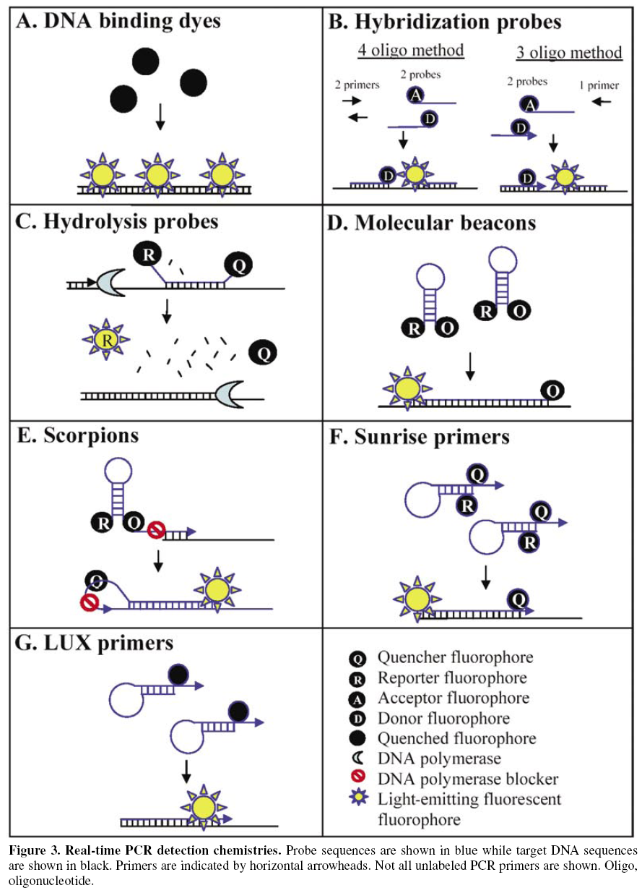

General Science Literature (Vol 3)
Notes on scientific articles specifically unclassified from year 2001 to 2012
This document has been divided into four parts. This is part 3. The other parts can be found here:
General Science Volume 1 (up to year 1986)
General Science Volume 2 (years between 1987 and 2000)
General Science Volume 4 (years between 2013 and present)
(2001) Bioinformatics 17, 763-774
Principal Component Analysis for Clustering Gene Expression Data
A large number of genes and the complexity of biological networks makes clustering a necessity. Eisen et al (1998) have proposed the use of a variant of the hierarchical average-link clustering algorithm, and Ben-Dor and Yakhini (1999) used their CAST algorithm. Principal component analysis (Jolliffe, 1986) is a classical technique to reduce dimensionality by creating a new set of variables (principal components, PC). The components are uncorrelated but ordered so that the kth PC has the kth largest variance among all PCs. The kth PC can be interpreted as the direction that maximizes the variation of the projections of the data points such that it is orthogonal to the first k − 1 PCs. The first few PCs are used traditionally since they represent most of the variation in the original dataset. The last few PCs are thought to represent residual ‘noise’ in the data. The technique is closely related to singular value decomposition, in that PCA is equivalent to applying SVD on the covariance matrix of the data.
Consider the example of 477 genes representing a subset of sporulation expression. These were classified into 7 temporal patterns. The first two PCs contain 86% of the total variation. A plot of PC2 vs. PC1 shows patterns represented by different color or shape, and they overlap aorund the origin. If the subspace of the first 3 PCs are included then, the patter of the 7 clusters seem more separated. This suggests that proper preprocessing of PCs helps to maximize cluster identification.
The adjusted Rand index is a measure of the degree of agreement between two partitions of the same set of objects, and has been recommended for comparing partitions having different numbers of clusters. Given a set of n objects S = {O1,..., On}, suppose U = {u1,..., uR} and V = {v1,..., vC} represent two different partitions of objects in S such that ∪Ri=1 ui=S=∪Cj=1 vj and ui ∩ ui′ = ∅ = vj ∩ vj′ for 1 ≤ i ≠ i′ ≤ R and 1 ≤ j ≠ j′ ≤ C. One of the partitions is an external criterion and one is a clustering result. If a is the number of pairs of objects placed in the same element in partition U and in the same element in partition V, and d is the number of pairs of objects in different elements in partitions U and V, the Rand index is the fraction of agreement between the two: a + d / (n 2). When the two partitions are identical, the index is 1. A problem with the Rand index is that the expected value of the index of two random partitions does not take a constant value. An adjusted index is then computed as (index − expected index) / (maximum index − expected index). The maximum index is 1 and the expected index in the case of random clusters is 0.
The greedy approach is a simple heuristic similar to the forward sequential search algorithm. Let m0 be the minimum number of PCs to be clustered, and p the number of experimental conditions in the data.
Two gene expression dataset with external criteria and three sets of synthetic data are used to evaluate the process. A class is a group in the external criterion used for assessing clustering results. A cluster is a cluster obtained by a clustering algorithm. Both are partitions of data, and every gene is assigned to exactly one class and one cluster. An ovary dataset was produced by hybridizing to a membrane array containing a randomly selected cDNA library. The subset has 235 clones and 24 tissue samples, 7 from normal, 4 from blood, and the balance of the 13 from ovarian cancers in different stages of malignancy. The tissue samples are the experimental conditions. The 235 clones were sequenced, and found to be in four different genes. The count of clones in the genes was 58, 88, 57, and 32. The four genes should separate in a clustering algorithm; they form the four class external criterion for this data set. Different clones could have different hybridization intensities, so data for each clone is normalized across 24 experiments to have mean 0 and variance 1.
The other dataset is of the yeast cell cycle, with 6000 genes observed to flucuate in expression over two cell cycles seen in 17 time points. In the previous report, 420 genes were identified to peak at different time points, and these were categorized into five phases of the cycle. In addition to the yeast and ovary datasets, synthetic datasets were used to test cases where partitions were clear and which can be used as benchmarks for evaluating the effectiveness of algorithms.
Three clustering algorithms were used. The Cluster Affinity Search Technique (CAST), the hierarchical average-link algorithm, and the k-means algorithm (with average-link initialization). The details of the clustering algorithms can be found at a supplementary web site. The effectiveness of PCA on clustering analysis with both Euclidean distance and correlation coefficient, namely CAST with correlation coefficient, and both average-link and k-means with both correlation and distance, were evaluated. If Euclidean distance is used as a similarity metric, the minimum number of components in sets of PCs (m0) considered is 2. The minimum is 3 when correlation is used because there are at most 2 clusters if 2 components are used, and when there are 2, the correlation coefficient is either 1 or −1.
As to the results, the following overall conclusions can be drawn:
Results will show plots of the adjusted Rand index against the number of components. Four plots will be shown: those of the index without use of PCA, those of the index of the first m components, and the index using the greedy and modified greedy approaches.
(2001) BioTechniques 31, 88-92
Integration of PCR Fragments at Any Specific Site within Cloning Vectors without the Use of Restriction Enzymes and DNA Ligase
Short Technical Report. Insertion of expression cassettes into vectors might not always be possible if restriction sites are missing. Restriction enyzme- and ligase-independent methods are useful. The Life Technologies Gateway, Invitrogen Echo, and Clontech Laboratories Creator DNA cloning systems are among such technologies. The Stratagene QuikChange Site-Directed Mutagenesis systme allows and easy way to make plasmid mutants using two complementary mutagenic oligonucleotide primers: primers of lengths 25 and 45 nt are provided. When longer primers are used for mutagenesis there is a decreased efficiency (longest was 73-mer with 31 nt insertion). This report uses the QuikChange to allow longer primers.
5-10 ng template DNA is mixed with HotStarTaq DNA polymerase (Qiagen) and amplified according to directions. 5′-end of oligos used for PCR is formed by at least 20 nt which are exactly upstream of the insertion point in the vector, followed by first 20 nt of DNA to be amplified. 5′ end of 2nd oligo is at least 20 nt exactly downstream from insertion point, followed by last 20 nt (i.e., 3′ end) of the complement of the insertion DNA. The amplicon is then gel-purified (a QIAquick PCR purification kit also works). For mutagenesis using Stratagene protocol, 50-100 ng of plasmid is mixed with 200-300 ng PCR fragment (no ratio optimization was done since mutants were possible in this system). In a final 50 µl volume, cycling is done with 95° for 30 s initial denaturation, then 18 cycles of 30 s at 95°, 30 s at 55°, then 2 min/kb template at 68°. The primers are elongated with 2.5 U PfuTurbo DNA polymerase. After the reaction 10 U DpnI is added for 3 h to degrade wild-type methylated template DNA. After purification, an aliquot is used to transform E coli XL1-Blue cells. Some clones are tested to verify mutagenesis using restriction analysis, PCR, and DNA sequencing. For the latter a QIAprep Spin Miniprep kit is used to clean up plasmid from extracted cells, and this used as template for ABi Prism 377 DNA Sequencer using the BigDye Terminator Cycle Sequencing kit.
| PCR Fragment (bp) | Upstream Homology (Nucleotides/Tm) | Downstream Homology (Nucleotides/Tm) | Correct Clones/ Number of Analyzed Clones | Mutation | |
|---|---|---|---|---|---|
| 1 | 122 | 20/48°C 5'-TCGTATTACAATTCACTGGC-3' | 68/92°C | 6/6 | Only an insertion of 34 bp Replacement of 294 bp |
| 2 | 103 | 20/66°C 5'-TCAGACCACCGCAGAGCTCG-3' | 20/54°C 5'-GCGTAATAAGGAGTCTTAAT-3' | 10/10 | Insertion of 64 bp |
| 3 | 425 | 20/66°C 5'-TCACCGTCTCCGCAGCTAGC-3' | 371/102°C | 10/20 | Only an insertion of 34 bp |
| 4 | 418 | 27/84°C 5'-CGGAAGCTTCTGCAGGTCGACCAATTG-3' | 19/68°C 5'-CGGGCCCTCTAGAGCGGCC-3' | 5/8 | Insertion of 372 bp Replacement of 23 bp |
| 5 | 538 | 24/62°C 5'-CTTTAAGAAGGAGATATACATATG-3' | 19/64°C 5'-GGTGCTCGAGTGCGGCCGC-3' | 22/24 | Insertion of 495 bp Replacement of 124 bp |
| 6 | 750 | 20/60°C 5'-ATGCATCACCACCATCACCA-3' | 20/62°C 5'-GTGATGGTGATGGTGGGATC-3' | 4/20 | Only an insertion of 710 bp Only an insertion of 1071 bp |
| 7 | 1117 | 20/64°C 5'-CCCAGGTGAAACTGCTCGAG-3' | 26/70°C 5'-GTGAAAAGTTCTTCTCCTTTACTCAT-3' | 16/30 | |
| All the short homology regions up to 27 nucleotides were directly added at the 5' end of the nucleotide primers used for the PCR shown in Figure 1A. The longer homology regions were generated during the PCR with a conventional oligonucleotide defined by the recipient DNA and a longer oligonucleotide encoding the DNA sequence to be inserted, which is embedded between the downstream and upstream 20 nucleotides defining the site of insertion. The Tm values given for the homology regions were calculated with the formula Tm = 4°C per C or G + 2°C per A or T. For the two cases in which the homology is longer than 27 nucleotides, we used the formula Tm = 81.5 + 0.41(% GC) - 675/N. N is the length of the homology region. In the given examples, the size of the PCR fragments is given in bp. In all of the examples, the insertion sites and the DNA inserts are different and unrelated. | |||||
Results. Oligos of length 20 nt or more that are homologous to and are at the integration site of the vector are added to the 5′ site of the standard primer set (forward and reverse) of the insert to be amplified. After reaction, the fragment is added to methylated templated plasmid. When denaturation occurs, the homologous sequences of the amplicon will hybridize to the plasmid, and these fragments are elongated with PfuTurbo polymerase. New strands (elongated/modified) will not be methylated. After n = 18 cycles, the reaction mixture is treated to digest methylated template, and the amplicon is used to transform E coli. The table above shows attempts to create insertion mutagenesis in several experiments. The length of regions homologous to recipient DNA depends on size of the insert. Fragments of greater than 100 bp were sought because of constraints with purification kits. Note in experiments 1 and 3 that homologous regions as large as 68 and 371 nt were used as primers. In these constructions, only small insertions are needed, so one of the primers encoded by DNA to be inserted and the two homologous regions of 20 bp required for integration. The largest fragment (1117 bp, experiment 7) had only short regions of homology covering the insertion point. There was surprising high rate of integration in this experiment. Correct clones were present for each insertion mutagenesis and results independent of PCR fragment size. In the insertion, fragments can be integrated (experiments 1, 3, 6, and 7 in Table 1) or used to exchange segments (experiments 2, 4, and 5 in Table 1) in the vector. Deletion mutants can be made in the vector.
As they have 100% homology, long PCR fragments might first self-anneal before recognizing the homologous regions in the template plasmid DNA. Self-annealing decreases the effective concentration of primers in the reaction, and so a lower rate of success is expected with long fragments. Enough fragments annealed to template will produce correct annealing. Use of ultra-competent E coli will improve chance of success; length of overlapping segments on insertion will produce good results as well. The upper limit for the size of the insertion has not been rigorously tested
(2001) Molec. Biol. 35, 628-637.
Molecular Mechanisms of Translation Initiation in Mammals Studied by In Vitro Reconstruction of Initiation Complexes
Control of eukaryotic translation is largely achieved by regulation of the initiation of protein synthesis. The complexity of this process is most likely to be understood only by in vitro reconstitution experiments by addition of individual components. Even among eukaryotes there are significant differences between yeast and mammals, and so experiments among classes of eukaryotes are also necessary. Most intiation factors were identified and purified more than 25 years ago. At that time, 48S and 80S complexes were assembled in vitro and used with rabbit reticulocyte globin mRNA.
The scanning initiation model proposed that the small ribosomal complex (40S) was bound to all intiation factors and this permitted binding of the 5′ end of the template at the cap. This is mediated by the eIF4F complex, which binds to the cap and directs the end to the ribosome. The ribosome moves along the mRNA and unwinds secondary structure in an energy- (ATP-)dependent manner using RNA helicase (eIF4A). When it encounters the initiation codon (AUG in most cases), translation starts.
The scanning model however fails for picoraviral RNAs which are long (~1000 bp), structured and with noncapped 5'-UTRs. Proof that the ribosome bound to an internal sequence was seen when a bicistronic message was used containing the viral sequence and translation was initiated from second cistron; a second cistron without the sequence did not initiate. This sequences is now called internal ribosome entry site (IRES).
Study of the IRES showed it to be about 400 bp overall, but it probably was composed of more than one element.
(2001) J. Gen. Virol. 82, 973-984.
Functional Interactions in Internal Translation Initiation Directed By Viral and Cellular IRES Elements
REVIEW. Initiation of translation in eukaryotes is controlled strictly. One mechanism is the binding of eIF4F complex (composed of subunits the E, G, and A units of eIF4) to the methyl-7-G(5')pppN cap of the 5' end of mRNA. eIF2 binds to tRNA-Meti in a GTP-mediated process, and this eIF2-GTP-tRNA-Meti complex is required to bind to the codon. eIF3 is also required for interaction with the 40S ribosomal subunit with the preinitiation complex.
In a second mechanism, trans-acting factors are involved in initiation mediated by a cis-acting element called the internal ribosome entry site (IRES). Viral infections tend to alter phosphorylation states
(2001) Lab on a Chip 1, 1-6.
Recent developments in detection methods for microfabricated analytical devices
REVIEW. Spectroscopic detection methods. Flourescence is usually carried out with 488 nm emission line of Ar-ion laser using microscope lens to collect the flourescecne and PMT for detection. LIF continues to be used. The optics to minimize background intensity and noise are being optimized: fluorescein at 1 pM can be detected with some setups. Use of a compact 635 nm red laser diode produces a compact system: diodes are smaller than argon lasers so can be miniaturized and made portable. But semiconductor lasers only in infrared and red regions. A violet laser is being used for convential capillary electrophoresis, but has high cost and short lifetime. A blue LED and silicon photodiode instead of laser + PMT can be used with fluorescein.
To improve detection with LIF, photon counting is used. Detection of individual Rhodamine B and 6G molecules is reported, with their flow patterns in small channels. Postcolumn derivitization makes advances. Protein determination with noncovalent dye and fast reaction kinetics is reported. Uranium bound to selective calixarene ligand conjugated to rhodamine for fluorescence allows inorganic species detection.
Indirect fluorescence and UV detection require that the analyte and fluorophore have the same ionic charge in the buffer to cause displacment and negative peak formation. Amino acids have been determined without derivitization, with less sensitivity. Other substances include phenols, TNT, and substances detected with 750 nm semiconductor laser. Light source stability is a must with indirect detection. Indirect LIF is still a problem because of stability in available lasers.
Detection by absorbance is complicated by short pathlengths. FIA to determine phosphate, nitrite, and nitrate has been done with on-chip absorbance detection. Transition metals complexed to 4-(2-pyridylazo)resorcinol (PAR) have been detected to 1 ppm with green LED. Absorbance detectors in a linear photodiode array have been used to image an entire separation channel: the dynamics/mechanism of IEF and other separation processes can be directly visualized. Multireflection cells can increase optical pathlength: one flow cell in glass has an effective pathlength enhancement of 5-10. Higher sensitivity in absorbance might be achieved using thermoopticla methods (thermal lens): this detects refractive index change in cell volume when it absorbs light and is heated by it, and a probe beam reflection is changed.
Chemiluminescence has been used in micro-machined flow-through devices to detect codeine and Cr. Amino acids and transition metals electrophoretically separated have also been detected this way. No light source is used but rather electrochemiluminescence. Refractive index detection employs interference pattern created by interacting laser beam with separation channel and detection of model substances (see Swinney et al, 2000). Optical imaging with Fourier transformation allows determination of solutes and particle motion in microchannel. Even NMR detection is in its early stages.
Electrochemical detection is quite amenable to a compact and miniaturized scale. But all conventional CE use UV absorption and fluorescence. This is because the high voltage separation might conflict with use of sensitive electrodes in detection. Discoveries in design make it possible however. Amperometric detection uses a working electrode to measure redox reactions in analytes with good detection restricted to electroactive species. To eliminate interference in applied electrical fields a decoupler might be used: a porous material in contact with the solution separates the ground electrode from the channel. Another simpler scheme is to suppress the separation voltage without band broadening by using a cell geometry with drastic enlargement of channel cross section in front of detector electrode. This causes a low resistance in solution volume between working and electrophoretic ground and thus to a small residual voltage at detector electrode. Other systems: neurotransmitter and DNA fragment by electrophoresis using Pt electrodes. Dopamine and hydroquinone on Au electrode with study of dynamic wall coating in electrophoretic microchip. Use of C electrodes to look at many class of biochemichally relevant species is reported. Carbon as an electrode has wide anodic potential but microfabrication techniques need to be improved. A different system has been designed to separate the electrode detector from the separation system: the separation channel is extended to the edge of the device and an external detector cell aligned in a right angle to the distal end, requiring alignment by the user but allowing replacemnt of short lifetime electrodes without tossing the separation device. Prederivatized amino acids were detectable on a Au working electrode using fixed potential amperometric detection and also a voltammetric mode. Conductimetry is good for small (inorganic) ions on chip. PMMA devices for isotachophoresis with conductivity detection have been micromachined. Another system uses isotachophoresis with potential gradient technqiue, an indirect conductometric method. Potentiometry is based on miniaturized ion-selective electrode in micromachined flow-channel to detect Ba2+. Special membranes are used to achieve detection of a range of ions rather than for desired selectivity of single ion. Potentiometry is not widely used in standard CE.
A microwave-induced plasma (MIP) source has been made based on micromachined fused silica substrate. MIP is used for atomic emssion spectroscopy and used in element-specific detection in GC. Hg detected by cold vapor technique and chloroform vapour (from emission line for Cl) have been demonstrated. Such a device is not compatible with aerosols (unlike ICP-AES). One group showed that a capactively-coupled plasma sustained by 10 W radiofrequency power at 13 MHz in a quartz microchannel can be done.
(2001) Lab on a Chip 1, 7-9.
Rapid fabrication of microfluidic devices in poly(dimethylsiloxane) by photocopying
PDMS is attractive as a material for microfluidic devices. Soft lithography is used in several micro- and nanofabrication methods. Microchip electrophoresis with LIF and amperometric detection uses PDMS. Process starts with a master and then the PDMS prepolymer mixture is cast over the master and cured. Fabrication of master is time-consuming. Photoresist and mask aligner equipment, and silicon etching facilities not widely available. To reduce need for specialized equipment, and office printer and photographic reduction are reported. This reports making a master on transparency using photocopying machine to < 1.5 h. Results are assessed using SEM and tested in FIA mode with on-chip condutimetry without high voltage or other pumping methods.
Materials: used as obtained: Dow Corning Sylgard 184 Silicon Elastomer, Fluka Victoria Blue B, NaCl, EtOH.
Microfluidic channels were drawn using computer package, printing out and transferring to transparency. A 10:1 PDMS prepolymer:curing agent mix is case over the master with frame to hold solution then cured 65° 1 h. The PDMS replica is peeled from master and holes punched to make reservoirs in replica, the whole process from design to replica taking less than 90 min. The replica is sealed to Pyrex glass plate by adhesion to make device. Channels are 55 mm L × 200 µm W × 12 µm D. On glass plate two Pt electrodes are micromachined by photolithography and rf plasma sputtering (see cite). Ablebond 967-1 conductive epoxy glue (Ablestick UK) glues electrical wires to Pt electrodes and these are connected to PED-1 pulsed electrochemical detector (Dionex) for conductometric detection.
SEM imaging of the µ-channel cross section on the PDMS replica shows it is trapezoidal (similar to that on glass by isotropic etching). This shape results from carbon particles having a tendency to form round curves at edges. Channel depth depends on how thickly carbon particles are deposited on a transparency while photocopying. Channel depth might be controlled by setting the brightness on the photocopying machine. To make channels deeper a higher darkness setting might be used. Channel intersection was checked as well, since it is used in fluid switching or sample injection. Since master is based on relief pattern by carbon particles deposited on transparency, walls of the molded polymer are not as smooth as those with photoresist or silicon-based masters. Finer carbon particles can be used to reduce channel roughness, although channel roughness does not significantly impact performance in electroosmotic or electrophoretic systems. Master silanization is not needed and master can be used repeatedly.
This method is quite useful for rapid testing of a revised design and consideration of new principles to be tested in microfluidics. PDMS is a good polymer with high optical qualify, transparent above 230 nm, high electrical bulk resistivity, good chemical stability, support for EOF after plasma oxidation, and good adhesion to clean and flat substrates. Besides CE with LIF or amperometric systems, compatible MS detection is possible. PDMS is used in making cross or double-T shaped channels. As a test, a small droplet of 10 mM NaCl with 5 mM Victoria Bue B was placed at inlet for capillary action drawing of a 1-2 mm length (2-4 nl). As mobile phase, a larger volume of EtOH was placed which propelled the aqueous sample to the Pt electrodes, forming a sharp FIA peak
(2001) Methods 23, 169-178.
Construction of High-Complexity Combinatorial Phage Display Peptide Libraries
Ph.D. is phage display
based in M13 phage vector to display peptides
as N-terminal fusions to pIII minor coat protein. pIII binds to F-pilus of
bacterial cell to be infective. Five pIII copies are present clustered at
one end of mature M13 virion. Use of major pVIII coat protein would produce
100 copies or more of displayed peptides, maximum valency of pIII is 5
per virion. These are better suited for high affinity reactions
(Kd 10 µM or better). If peptide < 100 residues
pIII infectivity not adversely affected. For larger proteins, it is
probably better to fuse to phagemid to gene VIII (codes pVIII protein) and
then infect with helper phage that has no fused gVIII.
Ph.D. uses M13KE vector, a derivative of M13mp19 propagated by standard M13 techniques. No antibiotic selection or helper phage superinfection. There is little sequence bias apart from selection against unpaired Cys residues and expected reduced levels of Arg (not Lys) residues. Reduced Arg levels likely caused by secY-dependent secretion of pIII, and can be overcome using prlA suppressor strain in library amplification. Ph.D. used in many applications (epitope mapping, functional testing, peptide ligands binding GroEL and HIV gp120. The dodecapeptide libary (Ph.D.-12) was constructed in M13KE and panned against taxol, and sequences compared with protein database to identify its natural target, Bcl-2. Thus short peptides can mimic 3D ligand-binding site.
The M13KE vector (7223 bp) carries no plasmid replicon or antibiotic resistance sequence since it is supposed to produce viable phage. This simplifies intermediate amplification during panning, since no resistance gene must be expressed before plating or to use a helper phage during amplification. It includes lacZα gene to produce blue plaques when plated with a complementing strain of bacteria (ER2738, DH5αF', XL1-Blue, etc) on X-gal medium.
When preparing synthetic oligo libary, note that there is a VPFYSHS preceding the leader peptidase cleavage site. This sequence is part of pIII signal and must remain intact or the pIII fusion may not be secreted or the phage may not be infectious. First residue must following this is the displayed portion. In randomizing the oligo limit the 3rd postion of each codon to G or T (which is A or C in the synthetic library oligonucleotide) This prevnets TGA and TAA stop (not suppressible) in the randomized segment. As to length, there are 1.28 × 109 possible 7-long amino acid residues, and these can be coded for the phage. But this is only a fraction of all possible 12-mers (4 × 1015). Consider the possibility of adding Cys residues at either end of a short peptide to get it to fold as a folded presentation might interact better than a linear or random conformation; this would be especially useful if the target is native ligand in the context of a known surface loop (antibodies with structural epitopes).
A short spacer between randomized segment and first native pIII residue is suggested to improve target accessiblity to displayed peptide. Generally a triple G (GGG) sequence. The spacer might include a protease cleavage site to elute bound phage by digestion rather than other means.
Library Construction.
The following materials are obtained:
Notes.
Libary Characterization. 50-100 clones can be recovered for sequencing. Each sequence is translated and compared to observed frequency for each amino acid with that expected from randomization scheme used to construct the library. Suppose NNK (K = G or T) was used in the randomization. Expected frequency = # of codons for an amino acid divided by 32 codons (NNK: 4 × 4 × 2 = 32) × 100%. This would be 9.4% for Arg, Leu, and Ser; 6.2% for Ala, Gly, Pro, Thr, Val, and Gln (assuming use of a supE strain where TAG is suppressed by Gln). It is 3.1% for each remaining residue. Note that Arg and Cys are usually underrepresented while Pro and Thr are overrepresented. The rapid sequencing template purification protocol is as follows:
(2001) Arch. Biochem. Biophys. 391, 119-126.
α2-Macroglobulin from Rheumatoid Arthritis Synovial Fluid: Functional Analysis Defines a Role for Oxidation in Inflammation
Synovial fluid from rheumatoid arthritis (RA) and osteoarthritis (OA) patients was sampled and examined by Western blotting.
(2001) Bioconjug. Chem. 12, 240-250.
Phenylboronic acid-salicylhydroxamic acid bioconjugates. 2. Polyvalent immobilization of protein ligands for affinity chromatography
In the first part of this report, phenylboronic acid-modified alkaline phosphatase conjugate (PBA-AP) was immobilized on a salicylhydroxamic acid-modified Sepharose, and this medium was then used to purify anti-AP antibodies. The results were promising, but it may be necessary to modify the antigen protein with PBA at a higher stoichiometry of PBA than 1:1. In practice, for each site of potential conjugation, a 2:1 PBA:conj site ratio should be used in derivitization. Reagents used in conjugation will be described.
Synthesis of the conjugating agents PDBA-X-NHS and cyanomethyl-SA-X-NHS are described. Related agents are PBA-XX-NHS and methyl-SA-X-amine. The scheme involves replacing the Br atom positions in 3,5-dibromobenzoic acid with dihydroxyboryl [-B(OH)2] groups: this is done by serial addition of methyllithium (CH3and then tertbutyllithium [(CH3)3Li] to 3,5-DBA dissolved in THF and super-chilled, followed by adding triisopropylborate {[(CH3)2CHO]B}. The acid is reformed and crystallized by adjust to pH for with HCl. The groups on the benzene ring, both boronic and COOH group are protected by heating to near-reflux in 1,3-propanediol and 1,4-dioxane. Several cycles of rotary evaporation and heating in 1,4-dioxane were done. N-hydroxysuccinimide was then added with an equimolar presence of dicyclohexylcarbodiimide (DCC). The white precipitate is formed in which the boron groups are protected by the propanediol forming a diester of boron, and the benzoic acid is an NBS-ester form. 6-aminohexanoic acid is then added to this intermediate with diisopropylethylamine/methanol. Sodium hydroxide is added after reaction and concentration: this deprotects the boron groups and dissolves and solubilizes the material for filtering. The filtrate is collected and re-acidified and cooled and allowed to precipitate. After a water wash it is vacuum-dried. Proton NMR and high resolution mass spectrometry (electrspray positive) show that it is the desired product. The NBS-ester form is produced by again protected the boronic acid groups (propanediol in dioxane) and then NBS + DCC. Note that the X part of is the linker or spacer part, which can be 6-aminohexanoic acid or whatever is desired. Synthesis of a cyanomethyl SA-X-NHS starts with methyl 4-aminomethylsalicylate hydrochloride in anhydrous MeOH, di-tert-butyl dicarbonate and triethylamine to protect the amino group with tert-butoxycarbonyl group. Solid from this is dissolved in dry THF with potassium trimethylsilanoate (90% pure) and heated by refluxing: this changes the methyl ester to acid form. Chloroacetonitrile and TEA are then used to protect the opened acid form as a cyanomethyl ester. Next the tert-butoxycarbonyl protection is removed with anhydrous HCl gas in THF. A glutaryl group is now added using glutaric anhydride with TEA in dichloromethane. Finally the NBS-ester form on the extension of glutaryl is produced to make the cyanomethyl SA-X-NHS.
To prepare the media, EAH Sepharose 4B is suspendded in pH 9.8 bicarbonate and cyanomethyl SA-X-NHS is added: amine groups on the activated Sepharose displace the NHS-ester to form an amide link with the glutaryl moiety. Excess hydroxylamine at pH 10.0 is added to produce SHA-X-Sepharose. As much as 3.5-7.0 µmol of SHA per ml gel should be incorporated. The protein to become the ligand is then mixed with PDBA-X-NHS: Presumably a free amino group reacts with the NHS ester. This is now mixed with hydroxylaminated SA-X-Sepharose. One of the boronic acid groups of PDBA then reacts with the hydroxyaminoacyl salicyl group on SA.
There is a question of whether to create 1:1 PDBA:protein conjugates, or to try to conjugate larger numbers of PDBA on the protein. To see if there is a negative effect on enzymatic/protein activity, PBA-X-NHS and PDBA-X-NHS were mixed at ratios of 5:1, 10:1, and 50:1 of conjugate:protein, and the actual incorporation determined and enzymatic activity assessed. For AP, the 5:1 yielded 3:1 (54%), 10:1 yielded 4.5:1 (44%), and 50:1 yielded 11.5:1 (29%) incorporations (enzyme activities as a percent of original in parentheses). This shows that conjugation is rather inefficient.
With respect to immobilization of PBA- or PDBA-X-protein conjugates on SA-X-Sepharose, it has been determined that at least six PBA moieties should be fixed to the protein to create efficient mobilization and to stabilize it against alkaline or acidic washes. With PDBA-X-protein however, as little as 3 PDBA groups stabilize the attachment of the ligand.
[More info on this article]
(2001) J. Cell Sci. 114, 853-865.
The splice variants of vascular endothelial growth factor (VEGF) and their receptors
Angiogenesis is brought about by the appearance of many soluble growth factors including aFGF, bFGF, and thymidine phosphorylase (TP), whcih are directly angiogenic. TGF-β and TNF-α act indirectly. VEGF correlates all the time with angiogenesis, and is a mitogen for endothelial cells. It also appears to be a mitogen for lymphocytes, retinal pigment epithelial cells, and Schwann cells. [This paper describes activities of VEGF already reported in other notes: look for tag VEGF.] VEGF also induces endothelial cells to express proteases: interstitial collagenases and urokinase- and tissue-type plasminogen activators (uPA, tPA). These proteases ultimately release cells from their anchorage, and allow migration. VEGF induces plasma permeability, giving the ECM access to plasma to break it down and also hexose transport, so that energetic processes related to angiogenesis occur. A small level of VEGF is also necessary to prevent apoptosis. With respect to tumors, their cells express very high levels of VEGF and also VEGF receptors; these are associated with metastasis and a poor prognosis.
A VEGF fragment (8-109) has been crystallized and resolved to 1.9 Å which reveals that VEGF is a dimeric cysteine-knot growth factor superfamily member. Each monomer has an intrachain disulfide knot motif at one of a four-stranded β sheet. VEGF belongs to the PDGF growth factor family within the superfamily, where monomers exist in a side-by-side orientation, the two β sheets perpendicular to the 2-fold axis of symmetry. NMR was used to solve the 111-165 fragment of VEGF-165 and shows the heparin-binding domain.
VEGF subunit monomers associate by two to form the homodimer via hydrophobic interactions, which are then stabilized by C51 and C61 disulfides on two chains. All of exon 1 and first four residues of exon 2 form a signal peptide, an amphipathic α-helix (pos 12-19) required for dimerization, and cleaved during secretion. The N74 glycosylation site is required for efficient secretion but not for receptor binding. Mutagenesis studies of D63, E64, and E67 in exon 3 or R82, K84, H86 of exon 4 show that they are essential for VEGFR-1 and -2 binding respectively. Three flexible loops are clustered at each pole of VEGF of dimer interface. Loop II contains VEGFR-1 binding determinants and is close to loop III of the other monomer, which has the VEGFR-2-binding determinants. Thus the dimer will bind either two VEGFR-1 or two VEGFR-2 proteins, creating dimerization and then transphosphorylation. In fact, mutant dimers with the ability to bind only one receptor antagonize the VEGF activity.
Regulation of VEGF expression. Cytokines and growth factors inducing VEGF transcription and release include PDGF, TNFα, TFG-α, TGF-β, FGF-4, KGF/FGF-7, EGF, IL-1α, IL-1β, IL-6, and IGF-I. Most of these factors thus exert angiogenesis indirectly via VEGF. Hypoxia is an inducer of VEGF, and this is seen particularly in necrotic areas of tumors. VEGF is also induced by adenosine from hypoxic cells, which bind adenosine A2 receptors which act via the cAMP-PKA pathway. The hypoxia response element (HRE) upstream of VEGF gene is an enhancer element binding the hypoxia inducible factor 1 (HIF-1), a heterodimer by the βhelix-loop-helix type transcription factors.
The von Hippel-Lindau (vHL) tumor suppressor negatively regulates hypoxia-induced genes: it sequesters protein kinase C ζ and δ forms, preventing translocation to plasma membrane, downregulating MAPK activation which induces VEGF. Various cells altering their differentiation may control VEGF expression through PKC or cAMP/PKA pathways. VEGF possesses Sp1, AP-1 and AP-2 sites through which it might act through PKC and PKA. Hypoxia increases transcript stability via binding of a hypoxia-induced stability factor (HuR) to three elements in the 5′ and 3′ UTR of VEGF mRNA. Inactivation of the vHL gene can lead to highly increased VEGF expression, as well as mutations in p53.
Six isoforms of VEGF. Six isoforms of VEGF have been identified. Murine immortalized fibroblasts have been shown to encode a 115-aa form with novel C-terminus of 37 residues; there is no human homolog. The predominantly expressed forms are the 121, 165, and 189 forms. The finding of a 183 form in many tissues may have not been detected earlier because it may have been confused as a breakdown product of 189 or not resolved from it. Forms 145 and 206 are rare, probably restricted to placental tissues. Human skin mast cells normally expressed 121, 165, and 189, but when stimulated with phorbol myristate acetate will make form 206. [Exon differences and the basic amino acid segments in 165, 189, and 206 have been discussed elsewhere, including how these forms do bind or not bind cell surface or heparan sulfate and ECM.] VEGF145 includes exon 6a which features a heparin affinity sequence similar to the exon 7 sequence that makes up 165. It mediates binding to ECM components that are not heparin or heparan sulfate. It has bioactivity (mitogenicity). The 24 residues from exon 6 have 12 basic amino acids, including a hexapeptide stretch KRKRKK from positions 126 to 131, which retains VEGF on the cell surface (CRS: cell surface retention consensus sequence). Proteins with these CRS-binding sequences which are 60-72 kDa in size appear to be derived from same gene product CRS-BP1.
It might be assumed that the VEGF forms trapped in ECM are a reservoir that is slowly released in presence of heparin, heparan sulfate, and heparinases. Or an active form of VEGF is released when proteases such as plasmin and urokinase-type plasminogen activator (uPA) cleave a site that frees VEGF from its ECM-binding segments. The presence of these enzymes contributes to angiogenesis by breaking down ECM polymers. Recombinant 189 and 206 forms do not stimulate mitogenesis because their folded forms conceal the receptor binding domains. The 189 binds VEGFR-1 but should be processed by uPA or plasmin in order to bind VEGFR-2 in order to have mitogenic effect. The uPA-treated VEGF189 has activity equivalent to VEGF165. All VEGF isoforms can be cleaved by plasmin to a 110 form (VEGF110) which has a 50-fold reduced mitogenic effect; similar to that observed for VEGF121. Thus the exon 6 and 7 sequences are not just about sequestering VEGF to the ECM or cell surface but contain sequences essential for mitogenic signalling.
Related Proteins. VEGF shares 20% identity at protein level with PDGF. There are 8 conserved Cys residues folding to provide similar receptor binding domains and dimerization to another monomer. Placental growth factor (PlGF) has 53% protein level identity and it generates three forms PlGF-1 (PlGF131), PlGF-2 (PlGF152) and PlGF-3 (PlGF183). Exon 6 features a very basic 21-aa sequence unique to PlGF-2, binding both heparin and neuropilin-1 receptor. PlGF-1 binds to VEGFR-1. VEGF-PlGF heterodimers have been identified and have weaker mitogenic activity than the VEGF homodimers; it may be a way to modulate VEGF activity. VEGF-B is like PlGF, with wide distribution particularly in cardiac and skeletal muscle. The alternative splice acceptor sites within exon 6 create two different reading frames to produce two isoforms: a VEGF-B167 has homology to VEGF in C-terminus and binds to ECM and heparan sulfate proteoglycans. A VEGF-B186 has novel hydrophobic sequence, is Pro-, Ser-, and Thr-rich and O-glycosylated making it quite soluble. Both will bind and activate VEGFR-1 and neuropilin-1 receptor. VEGF does form heterodimers with VEGF-B isoforms. VEGF-C shares 30% protein level identify with the 165 form, but is more closely related to the VEGF-D/c-fos-induced growth factor; both these proteins/complexes bind to VEGFR-3 (Flt-4, which does not recgonize VEGF) and to VEGFR-2, the latter with which it stimulates mitogenesis. Precursor polypeptides are translated and then processed to reveal VEGF homology domain: VEGF-C precursor does bind VEGFR-3 (lower affinity) and not VEGFR-2 at all, so processing may serve an alternate purpose. VEGF-C is suspected of promoting both vascular and lymphatic development and may be a paracrine factor in lymphangiogenesis and lymph vessel maintenance. VEGF-D is suspected of have important role in lung development based on mouse studies. VEGF-E refers colletively to group of proteins with homology to VEGF coded for by strains of the orf virus that is pathogenic to sheep and goats and occasionally to humans. This probably represents an adaptation of the virus in its infective cycle; it binds VEGFR-2 with significant activity, causing acute microvascular proliferation and dilatation and it has no activity to VEGFR-1 or -3.
The Receptors. All three receptors belong to the flt subfamily of receptor tyrosine kinases, with VEGFR-1 and -2 being high affinity binders to VEGF. [Their basic structure addressed in other reviews on VEGF and its receptors.] VEGFR-1 is a 180 kDa glycoprotein which is Flt-1, an fms-like RTK with the highest affinity for VEGF (Kd = 10-30 pM) and ability to bind PlGF and VEGF-B as well. It is expressed in adult and embryonic endothelial cells (from mice studies) and to neovasculature in healing wounds. It is found in endothelial cells that have inactive and active cell cycles, so it is probably a receptor necessary for maintenance. Knockout in transgenic mice show lethality by day 8.5 of embryogenesis: endothelial cells are present (differentiate) but cannot organize into vessels. Studies of tyrosine phosphorylation by VEGR-1 RTK have not revealed molecular level changes intracellularly (being hard to detect), but upregulation of tissue factor, uPA, and plasminogen activator inhibitor 1 are thought to be the consequence, since they help in endothelial cell migration. VEGFR-1 in monocytes appears to induce tissue factor and chemotaxis, and in vascular smooth muscle enhances matrix metalloproteinase expression. VEGFR-2 (called kinase-insert-domain-containing receptor, KDR) is a 200-230 kDa high affinity receptor for VEGF as well (Kd = 75-760 pM) and binds also to VEGF-C and -D found in a screen of endothelial cDNA library for RTKs. It has 85% protein level identity with mouse fetal liver kinase 1 (Flk-1). Its knockout is lethal in embryogenesis by day 9.5 with defects in development of endothelial and hematopoietic precursors. In the adult vasculature, VEGFR-2 mRNA is downregulated compared to VEGFR-1; it gets phosphorylated more efficiently than VEGFR-1 and it is responsible for mitogenesis, chemotaxis and cell morphology changes. Both the 2nd and 3rd Ig-like domains in the extracellar sequence provide high affinity ligand binding: 2nd Ig-like domain deletion in VEGFR-1 eliminates VEGF binding, while the 3rd domain in VEGFR-2 is critical. It is established that the 4th Ig-like domain is required for receptor dimerization in VEGFR-1 (probably for VEGFR-2 also). The 5th and 6th Ig-like domains in VEGFR-2 are required to retain VEGF after binding, and the 1st Ig-like domain could regulate binding as its removal increases VEGF affinity. Glycosylation of VEGFR-2 is required for trans/autophosphorylation, while not so for VEGFR-1. A HUVEC cDNA library screeening found a soluble form of VEGFR-1 (sFlt-1) which has only six Ig-like domains and lacks the C-terminal RTK function. It has VEGFR-1 binding strength and probably sequesters VEGF and could also heterodimerize with EGFR-2 to be non-signalling. Truncated form of VEGFR-2 lacking RTK C-terminus is also expressed in rat retina. VEGFR-3 (Flt-4) shows expression restricted to lymphatic endothelium and binds VEGF-C and -D, not VEGF.
Receptor gene expression. As it regulates VEGF release, hypoxia also stimulates VEGFR-1 and -2 in vivo expression. VEGFR-1 promoter region shows an HIF-1 consensus binding site. However VEGFR-2 has no sequence, and its transcription may be downregulated; the effect of hypoxia may be attributed to increased VEGFR-2 transcript stability through bunding factors on the 5′ and 3′ UTR. VEGF and other growth factors induce VEGFR-2 gene expression. bFGF is synergistic with VEGF. In addition, cell-cell and cell-matrix interactions might signal VEGFR expression. VEGFR-2 is believed to be the true receptor for all the effects created by VEGF, while VEGFR-1 could possibly be a decoy, as VEGFR-1 engineered not to have a RTK will still show normal development and angiogenesis. Nonetheless other mutagenesis studies reveal that VEGFR-1 still has phosphorylated residues interacting with SH2 domains.
Other receptors/binding molecules for VEGF. Radiolabeled VEGF studies with crosslinking chemicals show VEGF binds to other proteins that are not the VEGF receptors. Binding is with the VEGF-165 and not -121 form, indicating interaction with exon 7 segments. Neuropilin-1 (NRP1) is a 120-130 kDa glycoprotein known to be neuronal receptor that is one such protein. NRP1 is found in endothelium and tumor-derived cells. Under control of semaphorins it is involved in neuronal axon guidance and growth. Overexpressed NRP1 causes lethal arrest of embryogenesis at day 17.5 and knockouts are lethal at day 10.5-12.5 with cardiovascular anomalies. NRP1 enhances VEGF-165 binding to VEGFR-2 as coreceptor.
Heparin is a sulfated linear polysaccharide released by mast cells with procoagulant activity. Heparan sulfate is related but has lesVs sulfate and is part of the cell surface; it becomes part of proteoglycans. VEGF-165 binding to receptors is dependent on cell surface-associated heparin-like molecules, with 0.1-10 µg/ml potentiating binding, and higher concentrations being inhibitory. Heparinase treatment to reduce heparin/HSPG reduces binding but exogenous heparin restores it. VEGF-121 interaction is independent of heparin. It is thought that the heparin might have an unmasking effect on the receptor. This holds for VEGFR-2 but not VEGFR-1, where heparin inhibits binding of 121 and 165 at concentrations lower than those required for VEGFR-2/VEGF-165 binding; nontheless lower heparin concentrations are required for binding. Why VEGF-121 is affected although there is no heparin binding could be due to heparin interacting with heparin-binding receptors which affect VEGF receptors. VEGFR-2 might interact with these receptors on the RKTKKR sequence between the 6th and 7th Ig-like domains.
(2001) Prot. Expr. Purif. 21, 183-191.
Cloning, Expression, and Purification of Histidine-Tagged preS Domains of Hepatitis B Virus
The small (S), medium (M), and large (L) proteins making up the HBV envelope are all translated from a single open reading frame (ORF). They differ because of three in-frame start sites, but have the same termination site. PreS domains are potential binding regions for virus receptor.
M&M. Restriction enzymes, ligase, DNA polymerase and molbiol reagents were purchased from NEB, Promega, or BRL. Chemicals are from Fisher, Sigma, or Pierce. The preS-adw fragment is amplified using adw subtype HBV DNA as template. His codons (six of them) are introduced on 3′ end of preS gene through the reverse primer. The NEB Vent polymerase was used for PCR, with following set up: 5 cycle at 94, 42, 72° for 1 min, then 25 cycles at 94, 56, 72°, for 1 min, followed by 5 min last step at 72° to fill in. Products are separated on 1% agarose gel and these cut from gel using Qiaex DNA kit (Qiagen). Primers were
Lowercase letters are the His tag codons, NdeI and BglII sites are underlined. Products are digested with those enzymes and cloned into pT7-7 double-digested with NdeI and BamHI. Ligation done with 50 ng plasmid + 50 ng insert + 200 U T4-DNA ligase (NEB in 20 µl for 15 h/16°. Positive clones of mini-prep DNA using NdeI/HindIII digest and then sequencing. Plasmid is pT7-7-preS-his-adw. The preS-his-adw form was made by taking previously reported pET-3A/pre-S1S2 and using this with forward and reverse primers [sequences not given here] with a built-in His tag in reverse primer. E coli BL21 (DE3) and HMS174 (DE3) were transformed with both plasmid constructs and selected on LB agar with 50 µg/ml ampicillin. The cells have λDE3 as a lysogen and T7 RNA polymerase is under control of a lacUV5 promoter induced by IPTG. 50 ml of M9 medium with 0.17% glucose, 1.06 mM MgSO4, 53 µM CaCl2, and 100 µg/ml ampicillin was inoculated with single colony, incubated overnight at 37°, then used to inoculate 1 L medium. Growth was to A600 = 0.6, then IPTG added to 0.5 mM and cultured 4 h more. Cells harvested at 4000 g for 10 min. Cell pellet resuspended in 30 ml of either 10 mM TrisHCl pH 8.0 + 6 M urea for pT7-7-preS-his-adw, or ice-cold 0.5 M citrate pH 2.5 for pET-3d-preS-his-ayw. Cells were lysed by tip sonication. Lysate was clarified at 89,500 g 30 min in Beckman SW28 rotor.
The HMS 174 cells transformed with preS-his-ayw induced with IPTG produceed a 19.9 kDa band on 1D gels. Lysates produced in pH 2.5 citrate caused precipitation of bacterial proteins except for the target protein. Supernatant is adjusted to pH 8.0 and passed over Ni-NTA column. Bound His-tagged protein is eluted in 6 M urea; urea is necessary since preS domains precipitate when concentrations > 1 mg/ml. Eluted material was adjusted to about 1 mg/ml protein then dialyzed to remove urea. Anti-preS rabbit serum confirmed that the band on western was preS. The BL21 cells were induced (0.5 mM IPTG) and this produced a 22.1 kDa band. Unlike the other preS construct, the preS-his-adw precipitated with proteins in pH 2.5 citrate. Moreover, the expressed protein was degraded despite use of protease-deficient cells. Thus cells are lysed in 6 M urea, cleared supernatants adjusted to pH 8.0 and then put on the Ni-NTA column. Elution is with 0.2 imidazole and 6 M urea. Immunoblotting confirmed band identity. Yields from 1 L culture were 20-25 mg preS-his-ayw and 35-40 mg preS-his-adw. SDS-PAGE was on 15% gels: the Mr was higher that predicted, but this has been reported for His-tagged gels. When urea was dialyzed away the preS domain products were soluble snd storable at −20°. Both amino acid analysis and peptide sequencing from N-terminal were performed and the expressed sequence verified. Removal of the Met residue was observed because this is a characteristic of using E coli host. Far UV circular dichroism spectra between 190-250 nm with protein at 0.1 mg/ml shows a huge minimum at 200 nm with concave up shift (shoulder) at 230 nm, which is characteristic of unordered secondary structure. Differences of ellipticity (−14,900 deg cm2 / dmol for preS-his-adw vs. −18,800 deg cm2 / dmol for preS-his-ayw) are not significant. Running algorithm CCA indicates extended β-sheet with β-turn and no α-helix, with 41-47% unordered structure. Near UV CD in the range 290-450 nm shows noisy spectra, but since protein concentration could not be higher than 1 mg/ml, it was not possible to get hiqher quality spectra. The suggestion is that aromatic residues are in asymmetric environment, and that one or more Trp residues are in adw subtype despite similarity of spectra. A fluorescence spectrum of the same region (excitation at both 275 and 295 nm, plotting emision from 290 to 450 nm) shows a large peak centered at 344 nm for both recombinants, using both excitation wavelengths. preS-his-adw has 4 Trp and 1 Tyr residue, while preS-his-ayw and 5 Trp and 2 Tyr. This maximum is close to that of free Trp in solution (348-350 nm), and indicating that all Trp residues are solvent-exposed.
Polymerized HSA was prepared according to Okamoto et al (1885). Both recombinants interact with adw or ayw subtypes using an enzyme immunoassay, which is done according to Delos et al (1991): microwell plates are coated with 50 µl of 5 µg/ml pHSA in pH 9.8 carbonate for 18 h at RT, washed, the treated with 50 µl of preS domains or just BSA at 10 or 0.5 µg/ml in pH 7.4 PBS + 3% BSA. After washing, 1:1000 rabbit anti-preS in PBS + BSA, then color development.
(2001) Dig. Dis. Sci. 46, 1022-1028.
Risk factors for hepatocellular carcinoma in Turkey
Hepatocellular carcinoma (HCC) is 5th most comomon cancer in world among men, eighth among women. HBV and HCV infections, and aflatoxin exposure are most relevant. Turkey is endemic for HBV with carrier rates of 5-10%, and HCV seropositivity is 0.5-1%, with community incidence of 1.5%. HBV carrier rate higher in east, southeast, and south of Turkey, with a concomitant delta virus rate. A multicenter study involving 207 patients with HCC was done. 180 (87%) were clinically and/or histologically diagnosed with cirrhosis. 16 other cases showed evidence of chronic liver disease but cirrhosis workup was not done to establish; this makes 196 (95%) of patients with some evidence of chronic liver disease. Of the 180 patients, 161 were classed by Child-Pugh criteria: class A = 49, class B = 66, class C = 46.
The etiology of HCC was as follows (n = 207): 116 (56%) from HBV, 38 (23.2%) from HCV, and 33 (15.9%) from excessive alcohol consumption of long (15 year or more) period. 30 (14.5%) could not be assigned. Suspicions in one case were hemochromatosis and in another aflatoxin exposure.
In 29 cases, 16 (55%) of patients were positive for anti-HBs/anti-HBc, and the others negative. Confounding factors were determined: no history of prolonged oral contraceptive or androgen steroid use; Wilson's disease; autoimmune liver disease' primary biliary cirrhosis; other etiologis of chronic liver disease.
Of 116 patients with HBV, anti-HDV as positive in 13 (19%). 8 (4%) patients also were HCV positive.
80% of HCC individuals were male. In all cases, range in age was 22-84 y (median 57), with clustering in the sixth and seventh decades. HBV-associated HCC typically presents at a younger age than HCV-associated disease mean 56.2 vs 61.0 years (p < 0.01). Males were overrepresented in HBV-assoc. HCC too (85%) compared to HCC-assoc HCC.
(2001) Curr. Prot. Molec. Biol. Unit 11.1 11.1.1-11.1.7
Conjugation of Enzymes to Antibodies
LABORATORY MANUAL. Conjugation of enzyme (horseradish peroxidase [HRPO], urease, alkaline phosphatase) to an antibody must not alter the function of either protein, either the active site of the enzyme, or the antigen(Ag)-binding site. HRPO is a 44 kDa glycoprotein which contains four lysine residues. To conjugate IgG to HRPO is a three-step method utilizing principles of organic chemistry:
HRPO and IgG, being proteins, also have lysine amino acids, and the side chain of lysine residues is a primary amine too. These too can be reactive. In fact upon forming dialdehydes after periodate oxidation, HRPO can react with another HRPO, either on the N-terminus or lysine side chain, forming HRPO dimers or even trimers and more. Except that before HRPO is periodate-treated, it is treated with Sanger's reagent, 2,4-dinitrofluorobenzene (DNFB), which converts all primary amines to a non-reactive dinitroaniline form. Thus self-reactive HRPO multimers are not formed. To create a simple 1:1 HRPO-IgG conjugate then, a solution of IgG is added slowly to a stirring solution of HRPO. HRPO always remains in excess of IgG, so a 1:n HRPO:IgG, where n > 1, is not likely.
The following materials are obtained
Perform the following steps:
Urease conjugates are often used for ELISA (not for westerns). But urease is not a glycoprotein, so a periodate-based conjugation would not work. It does have thiol groups (from cysteine residues) that are available for binding. To conjugate urease to the primary amines of IgG, a heterobifunctional cross-linking molecule m-maleimidobenzoyl-N-hydroxysuccinimide (MBS) is used. On one end of MBS is a N-hydroxysuccinimide group which reacts with primary amines. One the other end is a N-maleimidyl group which reacts with thiols. The first reaction is of IgG with MBS, and then this product is mixed with urease. Between the enzyme urease and the IgG molecule is bridge formed from the MBS molecule.
The following materials are obtained:
Conjugation of Alkaline Phosphatase. AP can be used in ELISA or western blotting.
Perform the following:
(2001) Biochem. Biophys. Res. Comm. 282, 787-792.
Purification and Structural Analysis of the Hepatitis B Virus PreS1 Expressed from Escherichia coli
A DNA fragment coding the first 119 amino acids of the PreS1 (L) antigen that exclude PreS2 and S coding, from an adr subtype was cloned into the BamHI sit of pGEX-2T which contains a GSTase fusion tag on the N-terminus under the control of a Ptac promoter, then transfected into E coli DH5α, grown in 1 L LB with 100 µg/ml ampicillin 37°. When the OD600 was about 0.5 to 0.7, 200 µM IPTG was added a for 2 h at 30°. Cell pellets were then resuspended in ~100 ml PBS pH 7.4 containing 1 mM EDTA and 1 mM PMSF. It was processed immediately or stored −20°. After sonication to disrupt cells, and centrifugation (JA-20 rotor at 12,000 rpm for 30 min), cell extracts are mixed with 2 ml glutathione-agarose in 70% PBS slurry and incubated 4° on rotator 30 min. Mixtures were then packed into 1.5 × 5 cm (8 ml) and washed with PBS. Bound materials was eluted with 50 mM TrisHCl pH 8.0 + 10 mM reduced glutathione, with 1 ml fractions collected. Fractions found on 12.5% SDS-PAGE to contain recombinant were pooled. Thrombin was then added, 1 U for every milligram fusion protein, for 1 h at 4°. Digest was filtered through 0.2 µm syringe filter and loaded to FPLC with Mono S HR 5/5 cation-exchange column in t 50 mM TrisHCl pH 7.0 buffer with 1 mM EDTA and 1 mM PMSF. Column was then washed with 20 ml of equilibration buffer, then a 20 ml gradient with 0.3 M NaCl in equil buffer run. 0.5 ml fractions are collected and tun on 17.5% SDS-PAGE. Fractions with PreS1 bands are pooled, dialyzed against 50 mM ammonium bicarbonate pH 8.5, then lyophilized. In addition westerns using an anti-PreS1 mAb clone KR-127 (recognizes positions 37-45 in PreS1) was used.
The SDS gel and western reveal what happens in extracts (induced and uninduced) and at each step in the purification. It was found that the fusion was being degraded during induction, so only the incubation conditions could control or limit the degradation. Lowering the incubation temperature and time of induction was the best approach. After the affinity purification, with an 11% yield (20 mg protein), a band at 38 kDa expected to be the fusion is obaserved and the largest in quantity. A smaller band at 68 kDa is also seen as are several lower MW bands (western shows them as degradation products). The 68 kDa band is not immunoreactive, but clearly has affinity for glutathione (and might be an E coli enzyme). On high resolution cation exchange Mono S after thrombin digestion, the PreS1 fragment elutes at 0.13 M NaCl; degradation products and the 68 kDa protein were unbound to the column. The Mono S column was used because anion-exchange and gel filtration had been tried and failed. 17.5% SDS-PAGE reveals a band of 13.4 kDa. MALDI-ToF MS showed a mass of 13,507.81 Da which is close to calculated mass of 13531.85 Da, the full-length PreS1 mass + 10 additional amino acids from the vector. An indirect ELISA in which purified antigen was coated to plates and incubated with the mAb KR127 anti-preS1 shows a dose-dependent signal. Far-UV circular dichroism with solute in different concentrations (20, 30, 40% trifluoroethanol) show a spectrum of a largely unstructured peptide in PBS, with about 8% (11 residues) of the recombinant had an α-helix. Since TFE is believed to stabilize or promote helical formation, data show that negative molar ellipticity at 222 nm increases with increasing TFE with a simultaneous decrease in the negative maxima at 200 nm and a shift to 204 nm. In 50% TFE, the helical content is in 16% (21 residues) of the sequence, estimated from ellipticity magnitude at 222 nm. CD with SDS micelles present also reveal this, indicating it is membrane mimetic. No β-sheet structure was observed, based on a negative maximum at 215 nm both in aqueuous and in 20 mM SDS, despite prediction software indicating it.
Discussion. Previous preS1 recombinants have used β-galactosidase fusion in which it was insoluble and required refolding. In this study a 1 mg pure yield from 1 L culture was obtained (0.6% yield). Other polypeptides similar to preS1 domain show unstructured or loosely folded structures. The p53 transcriptional activation domain (TAD) has on secondary or tertiary structure in aqueous solution be helices are induced when binding to target proteins. The preS1 may have determinants that confer different or variable binding interactions.
(2002) Proc. Natl. Acad. Sci. USA 99, 3481-3486.
Direct Real-Time Evaluation of Nitration with Green Fluorescent Protein in Solution and Within Human Cells Reveals The Impact of Nitrogen Dioxide vs. Peroxynitrite Mechanisms
Peroxynitrite is made by mixing 0.5 M NaNO2 in 0.5 M HCl with 0.5 M H2O2, with rapid quenching in 1 M NaOH. Excess peroxide is removed with MnO2 and filtering. This can be stored at −20° for <2 wk. Concentration of PON can be determined by measuring absorbance at 302 nm (ε= 1670 M−1 cm−). Reactions can be done by dilution of a 2-10 mM stock in 0.1 M phosphate (pH 7.4) which contains 50 μM diethylenetriaminepentaacetic acid (DTPA).
0.5 μg/ml purified recombinant GFP in 0.1 M phosphate (pH 7.4) was treated with peroxynitrite in stepwise additions as a bolus of either 0.5 or 5 μM per application. Gel electrophoresis was done on aliquots and Westerns were prepared for staining with antibodies to 3-nitrotyrosine or GFP. With 0.5 μM PON stepwise addition, there is with 1 μM PON a detectable level of nitration that progressively increases up to 30 μM. The anti-GFP shows a 27 kDa band in which the progressive increase was not due to changes in GFP itself. The fluorescence of the GFP was found to fall in parallel to the concentration of PON: It was about 50% of relative fluorescence of untreated with 5 μM, and 25% by 10 μM. These changes in fluorescence were not reversible with mercaptoethanol addition. Excitation and emission spectra taken in the 200-750 nm range indicated that changes were not due to spectral shifts. Decomposed PON, nitrite, or NaOH did not exert this effect.
Human breast carcinoma MCF-7 cells were transfected by electroporation with pEGFP-N1 vector (10 μg DNA for 5 million cells in 0.5 ml, with plating in RPMI-1640/10% FBS, selected 48 h later with 0.4 mg/ml G418) and stably changed cells isolated. It was determined that 300,000 stably transfected cells produced the fluorescence equivalent to 0.5 μg GFP/ml in the same 0.1 M phosphate buffer. PON was added to intact cells, but the reduction in fluorescence was not the same as for protein in vitro. Concentrations of PON required to reduce GFP fluorescence in situ exceeded the concentrations that produce cell lysis. Hence PON does not cross cell membranes, or is quickly inactivated.
A reaction vessel was combined with a syringe pump capable of delivering a flow rate causing a change of 1 μM/min. This caused a steady increase in dihydrorhodamine 123 oxidation, with a ~20-fold increase in product formation after 1 h. With only 20 min of infusion, equivalent to the bolus addition of PON reducing GFP fluorescence by 50%, the fluorescence had decreased by only 5%. After 1 hour (three times the bolus amount producing 50% reduction), fluorescence was down only 7%. There were no real differences in reduced fluorescence with controls in which vehicle alone was infused slowly, or when infusing PON slowly into GFP in a different buffer (bicarbonate, pH 7.4) with a 5% CO2 atmosphere in the head space of the vessel.
(2002) Annu. Rev. Pharmacol. Toxicol. 42, 283-323.
SIGNAL TRANSDUCTION BY CELL ADHESION RECEPTORS AND THE CYTOSKELETON: Functions of Integrins, Cadherins, Selectins, and Immunoglobulin-Superfamily Members
Cell adhesion receptors are important in signalling related with cell identity. Integrins are cell surface glycoproteins which are recepetors for extracellular matrix proteins including fibronectin, laminin, and collagen. The sites along the ECM that bind integrins are called focal contacts or focal adhesions. Integrins are αβ heterodimers with large extracellular domain, a single membrane spanning region, and small cytoplasmic domain. There are at least 18 unique α subunit sequences, and 8 β. Upon ligand binding, conformational changes in domains and relative movements of subunits occurs. Ligand affinity is affected by extracellular factors (divalent cations), and also by intracellular modifications controlled by
(2002) Genome Biol. 3: research0034.1-00034.11.
Accurate Normalization of Real-Time Quantitative RT-PCR Data by Geometric Averaging of Multiple Internal Control Genes
Gene expression techniques require various controls. Amount of starting material, enzymatic efficiencies, differences between cells and tissues in overall transcription activity. Another normalization scalar is the RNA mass quantity esp. in northern blot hybridization. Also in many RNA mass quantitations, the RNA is largely ribosomal.
(2002) Nuc. Acids Res. 30, e43:1-7.
DNAWorks: an automated method for designing oligonucleotides for PCR-based gene synthesis
Attempts to obtain the naturally occurring gene for living systems for cloning may not always prove the best. High G+C content, codon bias, complex intron/exon structures can complicate the process. Direct chemical synthesis of the gene using methods such as FokI and self-priming PCR may prove more useful. Assembly PCR involves generating overlapping oligonucleotides which can be assembled to create the gene of interest. The overlapping oligos are then extended using PCR for the full length gene in single step.
DNAWorks will take the amino acid (translated) sequence along with flanking sequence containing restriction sites for directional cloning and create oligos that are optimized to match codon bias and giving melting/annealing temperatures that are closely matched as well. A two-step PCR protocol is then done to form the synthetic gene. This software was testing on 11 proteins with gene lengths ranging from 139 to 1042 nt. Inputs include setting parameters for melting temperature within a range of 58-70°, codon optimization, a target genome limited to E coli class II genes or those expressed at high levels during exponential growth, and looking for secondary structure such as hairpins.
With the input of an amino acid sequence in simple text or FASTA format, a reverse translation leads to ordering of high frequency codons of organism chosen. Flanking sequences can be added for cloning: attB1 and attB2 for Gateway cloning or short flanking sequences with NdeI and BamHI sites for pET vectors, both of which are presented automatically by the program. During processing the back-translated sequence is divided into odd count of contiguous section with nearly equal melting temperatures, these calculated according to nearest-neighbor model. Each section is scored based on codon frequency, hairpin formation, and deviations from melting temperature and length. A hairpin formation score is determined using number, length, G+C content, and relative position of matches. Scores for deviations from melting temp and size of each section outside input tolerance is calculated using a parabolic function. Total score is the sum of the score of individual sections. The sequence in the translated region (non-flanking) is then optimized: a stochastic method of optimization is done because of the high number of possible sequences (for example, a 100-residue protein with two highly probable codons per residue would generate 2100 or 1030 possible gene sequences). This uses a simulated annealing method, rather than deterministic method with steep gradient. The two primary benefits are robustness against premature termination as result of entrapment in local minima, and of time efficiency. Residues are chosen for mutation by looking at the local sequence/section score, with residues located within high scoring individual sections more likely to be mutated compared to residues in low scoring sections. Section boundaries are redefined during optimization with concomitatnt changes in section size and adjustments in temperatures. Improvements in scores are detected and allowed, whereas when a score does not improve, the computation is stopped for the section.
To assemble the gene, oligonucleotide solutions each at concentration of 1 µg/µl are brought together in a mix of 1 ng/µl for each oligo, with water added. PCR reagent mix is then added as 4 volumes; the final mix is then 0.2 ng/µl, 20 mM TrisHCl pH 8.8, 10 mM KCl, 10 mM (NH4)2SO4, 6 mM MgSO4, 0.1% v/v Triton X-100, 0.1 µg/µl BSA, 0.2 mM dNTPs, and 2.5 U Pfu polymerase. It starts with 5 min at 95° and then polymerase is added (hot start PCR), then 25 cycles of 30 s at 95°, annealing temp for 30 s, and 1.5 min at 72°. Final step is 10 min at 72°. 1 µl of the assembled amplicon is then used as template with outermost oligos as primers. The cycling program is pretty much the same except that the annealing temperature is 62°. Purification is in gel.
Gel purified product is integrated in pDONR201 vector with Gateway cloning or digested with restriction enzymes and ligated into pAED4 then transformed into DH5α, selected on LB+amp (for pAED4) or LB+kan (for pDONR201). Screen for positives is by restriction digest analysis or colony PCR with primers straddling vector + synthetic gene ends. Positives are sequenced in both directions.
Results. Proteins from GenBank were used and poregram
(2002) J. Lipid Res. 43: 1997-2006.
Lipoprotein Lipase: Genetics, Lipid Uptake, and Regulation
REVIEW. LPL was first described as a factor in heparinized dogs which "cleared" postprandial lipemia. It was later found to be the factor responsible for clearing chylomicrons (CMs). In the 1970s, apolipoprotein CII was purified from serum and found to be the factor activating LPL. Defects in apoCII lead to hyperchylomicronemia. In contrast, other circulating apolipoproteins, such as apoCI and apoCIII actually inhibit LPL. It should be understood that LPL has a principal role in removing CMs and very low density lipoproteins (VLDLs) from the circulation. Other activities done by LPL include anchoring atherogenic lipoproteins to arterial wall matrix molecules (seen in vitro).
Human LPL gene is located on chromosome 8p22, is 30 kb long with 10 exons. There is extensive sequence homology for all species studied. The protein is composed of 475 amino acids with a 27-residue long signal peptide. The active site requires the function of Ser-132, Asp-156, and His-241.
Many mutations have been discovered in human LPL: 61 missense mutations, most in exons 5 and 6; 12 nonsense mutations; 10 frameshift mutations or small insertions or deletions; 3 gross mutations; 8 splicing mutations; and 4 promoter variants. A few of the mutations are discussed.
The S447stop mutation is a truncation of the last two amino acids, associated with a HindIII polymorphism on intron 8. Studies show reduced TGs, increased HDL cholesterol, and a slightly reduced risk of ischemic heart disease.
The N291Ser mutation is the most common in Caucasians, showing an increased TG and lowered HDL, but slight to moderate; it does not increase coronary artery disease (CAD) in general population, but CAD is increased 3-fold in persons who have familial combined hyperlipidemia. Women may be more affected than men, seen as a 2-fold increased in cerebrovascular disease.
The D9N shows a 20% decrease in LPL activity in homozygotes, but causes no chylomicronemia. One patient who was heterozygous for both D9N and Y262H had hyperchylomicronemia. D9N is linked to hypertriglyceridemia, low HDL, small dense LDL, FCHL, and increased CAD risk. By the numbers the mutation causes a 20% increase in TG, a decrease in HDL by 0.8 mmol/l (3.2 mg/dl), and a 1.4-fold increase in risk of ischemic heart disease, borderline significant. One meta-analysis shows a combined D9N mutation with T93G point mutation in the promoter as having a 2-fold increase of CAD.
The T93G mutation in the promoter of LPL gene occurs with high frequency in South African blacks. The ancestry is quite extensive given the conservation of the allele, and that it arose in a D9N mutation. Individuals homozygous for G allele show slightly decreased serum TG compared to those homogyzous for the T allele. Others found in white populations that the -93T variant has a lower promoter activity than the -93G variant.
The G188E (exon 5 single base change) mutation results in increased triglycerides and lowered HDL levels, with significant increases in coronary artery disease. This mutation is seen most among French Canadians, but it is nonetheless found widespread in other populations too. This is the most frequent cause of hyperchylomicronemia in the general population, as the LPL does not function enzymatically, with an 80% increase in TGs, and a decrease in HDL of 2.5 mmol/l (10 mg/dl). The mutation increase CAD risk 5-fold.
Mutations in LPL gene are linked to other diseases. N291S carriers show an increased risk of Alzheimer's disease. Some studies correlated hypertension to LPL gene. Heterozygous LPL defiency, severe hypertriglyceridemia, and pancreatitis can occur in pregnancy and diabetes.
With any chylomicronemia syndrome in which LPL activity is affected, probably by multiple mutations, TG levels are extremely elevated (over 1000 mg/dl) and HDL-cholesterol is quite low. Patients manifest symptoms that include abdominal pain, pancreatitis, memory loss, xanthomas, dyspnea. Postheparin plasma LPL activity is part of the diagnosis. Specific LPL protein tests (ELISA, western) might show a low, normal or increased LPL mass which is dependent upon the mutation. Patients may have compound heterozygous mutations (multiple mutations at different points on one allele, but the other allele is normal) and do better than patients with homozygous mutations.
Histologically a patient may show LPL deficiency but adipose tissue appears normal despite the altered uptake of fats. This could result from the ability of adipose tissue to synthesize triglycerides itself; analysis of the stored fats in adipose tissue in LPL-deficient shows there is less of the essential fatty acids such as linoleic acid than in persons not deficient for LPL.
Circulating plamsa lipoprotein levels are believed to be controlled mostly by adipose tissue and muscle. LPL is also expressed in the nervous system, heart, liver, adrenals, macrophages, proximal tubule cells of kidneys, pancreatic islet cells, and lungs. The role of LPL in pancreatic islet cells may be to regulate insulin secretion and lipotoxicity. Cells in the lung use LPL to obtain fats they need for surfactant production.
The role of LPL in the nervous system is not as obvious, since deficiency of enzyme does not cause dramatic effects in these tissues; there may be compensating mechanisms. LPL is found in brain, spinal cord, and peripheral nerves. In brain, LPL mRNA has been found in dentate granule cells; CA1, CA2, and CA4 cells of hippocampus, pyramidal cells of cortex, and PUrkinje cells of cerebellum. They are also present on endothelial surfaces of the brain. In spinal cord, LPL is localized to the tracts, and also in areas where motor and sensory neurons are found. Schwann cells can make LPL in vitro, and some of the enzyme is made by glial cells and not just neurons.
In the peripheral nervous system whenever there is a crushing or lacerating injury to a nerve, a Wallerian degeneration process occurs. Myelin lipid (phospholipids, cholesterol, glycolipids, sulfolipids) ceases in the portion distal to the injury. Lipids produced by degradation of the myelin in the distal region are re-utlilized in the proximal region. HMG-CoA reductase activity is down-regulated as cholesterol is re-employed from degrading sheath into production of a new sheath. Axonal components degenerate, with Schwann cells proliferating in response to axonal and myelin debris. Macrophages infiltrate the distal stump in order to scavenge myelin lipids. The study of reutilization of lipids in nerve injury led to the finding that macrophages produce LPL and apoE, also true for other nonneuronal cells. LDL receptors have been found on neurites in vitro and regenerating axons in vivo, indicating lipoprotein particles are taken in by receptors likely binding to apoE. It is not strictly true that apoE alone is responsible for repair reutilization, since apoE -/- mice show no real defect in nerve damage repair; even double knockouts in mice for apoE and apoA-I still show normal nerve repair after crush injury.
In the central nervous system, there is intense expression of LPL mRNA in CA1, CA2, and CA4 layers of the hippocampus. This area is important for experiential learning through long-term potentiation, in which a series of conditioned impulses potentiates the size of synpatic potentials. The hypothalamus also features LPL activity. Injection of oleic acid into the third ventricle signals the nutrient availability via ATP-sensitive K+ channels.
LPL activity in liver and peripheral tissues varies inversely, results from an aging rat study two decades earlier. It is normally made in newborn animals but not in adult tissues; as development progresses LPL activity falls off in liver and increases in heart, skeletal muscle, and adipose tissue. Liver LPL will be induced in response to tumor necrosis factor and when tumors are implanted (during cachexia). In studies with mice in which LPL was forced to be expressed solely in the liver, LPL knockout mice strains were rescued from neonatal death, as severe hypoglycemia in total LPL-deficient mice was prevented. Liver LPL brings TGs to the liver, which are catabolized to ketone bodies, utilized as a critical alternative to glucose. Nonetheless, pups end up dying with thoroughly fatty livers. Liver LPL is also induced with agonist drugs that target the peroxisomal proliferator-activated receptor (PPAR). Drugs which target PPARα increase FA oxidation, and those targeting PPARγ show animals with fatty livers.
Heart LPL synthesis represents a large fraction of the enzyme, but its role in energy balance and plasma lipoprotein regulation remains uncertain. Fatty acids represent 70% of the fuel used by cardiac and skeletal muscle. FAs can circulate on lipoproteins or on albumin, but FAs transported by albumin are about 10% those of TGs on lipoproteins. It is suspected that the heart converts a great amount of lipoprotein TGs to FAs based on its LPL synthesis. However, mice without cardiac LPL expression continue to survive although details of the effect on heart function are unknown. Mice who ONLY have cardiac LPL as their means of expression are able to maintain normal TG and HDL levels. The heart and peripheral tissues internalize core lipids from CMs. Retinyl ester uptake correlates with LPL overexpression in the heart. This indicates that not all lipids are processed through the liver. A mechanism is described in which a large uptake of these lipids causes capillaries to become leaky, and TG-rich lipoproteins enter the interstitium beyond the endothelium (it is known that FAs disrupt endothelial monolayers in vitro, and LPL action on VLDL makes arteries more permeable). LPL will anchor lipoproteins to cell surfaces and augment uptake by receptors or internalization of proteoglycans. This happens even with inactivated LPL, which can capture lipoproteins and present it to active LPL.
Transcription of human LPL occurs at a basal and ligand-activated level. On the basal level, transcription factor TFIIB binds to a TATA box-like octamer ATTTGCAT at position -46 in the promoter. A downstream CCAAT box at -65 would bind NF-Y. Another CCAAT box (-505 to -501) and two Oct-1 sites are upstream (-186 to -179, -589 to -582). Sterols regulate a nonconsensu 10 bp SRE at -90. Sites labeled LP-α and LP-β are at -702 to -666 and -468 to -430, respectively, and they bind adipose tissue differentiation-dependent transcription factors HNF-3/fork head. There is a CRE-like sequence in reverse orientation (-372 to -367), a PPRE (-169 to -157), two FSE-2-like sites (-362 to -355, -206 to -200), a TRE in reverse (+22 to +29), five GREs with four in reverse (-1543 to -1538, -1272 to -1267, -881 to -876, -777 to -772, -645 to -640), an AP-2 site (-790 to -783), two hepatmer sites (-80 to -84, -57 to -51), a nonconsensus SRE (-90 to -81), GATA (-501 to -446), IRS (-75 to -68, -367 to -360), Krox (-430 to -422), and VDRE (-408 to -403). No other evidence indicates these sites are truly involved in LPL promoter regulation. The existence of LXRE sites (-274 to -279, +635 to +650) indicates that cholesterol might regulate LPL in macrophages. Downregulation of LPL is found when Sp1 and Sp3 sites are occupied in the proximal promoter. In mouse 3T3-L1 adipocytes, an AP-1-like sequence (-1856 to -1850) may inhibit transcription under the control of estrogen. Agents that increase cAMP levels or mature adipocytes treated with TNF-α show decreases in LPL expression too. TNF-α may work through mediators like NF-Y binding to the CCAAT box and an octamer protein which is not Oct-1. Fatty acids such as α-lineoleate increase LPL transcription during adipocyte differentiation.
(2002) Methods Mol. Biol. 193, 19-25.
The Basics of RT-PCR. Some Practical Considerations.
CHAPTER. Reverse transcriptase-polymerase chain reaction (RT-PCR) is widely used. Isolation of RNA can be done by do-it-yourself preps or by commercial kits. Tissue homogenization is done in guanidine thiocyanate lysis buffer, followed by phenol extraction, then alcohol precipitation. Kits use spin columns or magnetic bead separation rather than phenol extraction, making them more rapid and convenient, but quick techniques include contamination with genomic DNA. For better purification to eliminate DNA, ultracentrifugation on CsCl density gradients is a good choice. If intron-spanning primers are used in RT-PCR, the PCR products are distinguishable from larger intron-containing products derived from contaminating genomic DNA. Otherwise target mRNA that should not have introns should be cleaned first with a RNase-free DNase and then the RNA purified to remove DNase prior to any cDNA synthesis.
The choice of primer type is important with respect to RT-PCR. There are basically 3 types: oligo(dT), random primers (hexamers), and gene-speicific. Use of oligo(dT) primers will catch all the poly(A) RNA, which may have several kilobases of untranslated region downstream of the coding region. mRNA often have secondary structure, and attempts to synthesize long stretches from a single primer can be a problem. Addition of random 6-mer primers can increase probability of getting full-length first strands into 5′ cap. Gene-specific primers means only the target mRNA gets 1st strand synthesis: useful when target mRNA is low in copy number. In addition, for the reverse (anti-sense) primer, create another primer downstream of it, because this ensures against nonspecifically primed cDNA not being amplified during PCR. For any first strand synthesis, prefer shorter rather than long primers to avoid nonspecific associations at the lower temperature of synthesis. Check that the melting temperatures is not more than 45 or 50°
Primer design. Use primers that span introns: for example, an 16-mer that spans the eight 3′ bases of exon n and the eight 5′ bases of exon n + 1. This will not anneal with any RNA containing an intron. Primer pair computer programs are now available that avoid designs creating primer with self-complementarity or inter-complementarity yielding primer dimers or hairpin loops. Primer annealing temperatures should match, since in cases where one primer has too high an annealing temperature it might misprime. Primers should also have a gradient along the length where annealing strength increases from 3′ to 5′ (that is the 5′ end should bind first, since transitory binding of the 3′ end is the usual reason for mis-priming; thus a more GC-rich 5′ end and AT-rich 3′ end is ideal. Finally, the annealing temperature of primer and PCR product should differ considerably if primers are to anneal faster than the PCR product back with complementary strand. After the primer(s) are complete (designed), do a BLAST search of the genomic database to check what sequences are likely to be amplified other than the target.
PCR conditions. If primers are optimal, little is necessary to optimize the PCR itself. Primer concentrations are typically 0.1 µM, dNTPs at 50 µM, 1.5 mM MgCl2 and 1.0 U of Taq polymerase in a 50 µl reaction. The lower concentrations avoid conditions that lead to mispriming and creation of nonspecific PCR products. A cycle of 15 s at 96°, 30 s at 55°, and 3 min at 72° is typical. Note that the anneal temperature is not based on Tm of the pair, but works generally for all pairs. A hot start (1 min at 80° before adding polymerase) is always done since adding polymerase to components in the cold could lead to mispriming and unwanted products. For PCR products to be cloned, a VERY high fidelity RTase and polymerase should be used.
Contamination. There are many cases when spurious bands appear when they are not expected. This is because of other amplicons from previus runs that have contaminated the environment. If the reagent stock is contaminated, falsoe positives occur in all reactions, including negative controls. However there are contaminations in which negative controls are still negative. If contamination is suspected, multiple negative controls not normally required would need to be run: that is, every tube in the PCR run would require its own negative control. The best way to avoid contamination is to follow these guidelines:
aerosol-resistanttips.
Uracil-N-glycosylase (UNG). dUTP will be substituted for dTTP in its correct position. If all PCR amplifications make use of dUTP, then the amplicons of a previous run in a PCR tube representing contamination can be destroyed by including UNG to break them down. UNG is inactivated with the first cycle heat denaturation, so it will not affect the target amplification. Another alternative is to UV-irradiate the tube before addition of template DNA: UV light at 254 nm with 30 mJ/cm2 intensity for two 2-min periods destroys dsDNA.
(2002) Curr. Opin. Lipidol. 13: 471-481.
Lipoprotein Lipase: The Regulation of Tissue Specific Expression and Its Role in Lipid and Energy Metabolism
REVIEW.
LPL is major enzyme responsible for hydrolyzing circulating triglycerides. It is synthesized in parenchymal cells, transferred to luminal surface of endothelial cells where it binds to heparan sulfate proteoglycans. Enzyme found in adipose tissue, and cardiac and skeletal muscle. Also detectable in macrophages, brain, placenta, lung, spleen, pancreatic β cells, and steroidogenic tissue. With development, LPL activities disappears in the adult but found in very young animals.
LPL has four distinct physiological roles:
bridgingfunction in the absence of any hydrolytic activity by anchoring lipoproteins to vessel wall and facilitate particle uptake and triglyceride hydrolysis by other mechanisms
Imbalances or defects in the gate-keeping function of LPL are associated with excessive lipid accumulation in adipose tissue or macrophages and there may be pathogenesis of obesity and atherosclerosis.
In vitro transfection assays using reporter genes have been used to study the LPL promoter. The 5' regulatory region may be as long as 4 kb upstream of the transcription start site. Most of the basic sites are within 101 bp upstream. A TATA box, octamer motif interacting with POU domain of Oct-1 and B cell protein Oct-2, a CCAAT box binding to nuclear factor-Y. The octamer could act as an initiator element specifying position of preinitiator complex formation, although a point mutation in the octamer causes elevated serum triglyceride levels. TNF-α inhibits LPL expression by blocking the binding of NF-Y to the CCAAT box. The NF-Y complex assembles a histone acetyltransferase activity by binding GCN5 and P/CAF in vitro. Acetylation of N-terminal Lys residues alters histone structure and disrupts nucleosomes, facilitating transcriptional activation.
CT elements are conserved sequences in promoters, enhancers, and locus control regions. Basal promoter activity is affected when the three zinc finger protein Sp1 and possibly other transcription factors bind CT elements. Sp3 in nuclear extracts of differentiated THP-1 macrophages bind to the CT element of LPL promoter. Drosophila lacks Sp proteins but when expression plasmids containing Sp1 and Sp3 were co-transfected into SL2 cells, the LPL promoter was transactivated by the CT element.
A sterol regulatory element-2 (SRE2) overlaps the CT element. In vitro protein-DNA binding assays and transient transfection assays with reporter genes reveals a novel nonconsensus SRE2 site with sterol responsiveness. The CT/SRE2 overlapping site binds SREBP-1 and Sp1 in a competitive manner.
Sp1 and Sp3 not only bind CT elements, but also have been shown in macrophages to bind to interferon-gamma (IFNγ) responsive elements (IRE), which are also found in the LPL promoter (-31/+187). Exposure to IFNγ causes a decrease in Sp3 steady state levels, with decreased LPL transcription.
LPL gene is also regulated by the peroxisome proliferator-activated receptor response elements (PPREs). Using methylation interference and gel mobility shift assays, heterodimers of PPARα or PPARγ combined with 9-cis retinoic acid receptor (RXR) bind to the PPRE motif. PPARα is mainly expressed in liver, kidney, heart, macrophage, and skeletal muscle, wherease PPARγ is found in white and brown adipose tissue, macrophages, and intestine. PPARβ is ubiquitous. A long list of ligands will activate the PPAR axis: fatty acids including polyunsaturated classes and derivatives, arachidonic acid and metabolites, and conjugated and oxidized FAs. PPARα is stimulated by the synthetic ligan fibrates (lipid-lowering) and the antidiabetic glitazones stimulate PPARγ. Heterodimerization of RXR can be controlled through its ligands.
The -169 to -151 segment 5' of transcription start contains an enhancer and silencer, with a functional PPRE site. One study found that chicken ovalbumin upstream promoter transcriptional factor (COUP-TF) and a co-repressing silencer complex of retinoic acid receptor and thyroid receptor (SMRT) both interact with PPARγ.
Within introl 1 is an oxysterol liver X receptor (LXR) responsive element which directly binds heterodimers of LXR and rexinoid receptor (LXRα/RXR). This mediates cholesterol-induced LPL expression in a tissue-specific way. Mice subjected to high cholesterol diets or LXR-selective agonist show increased LPL in liver and macrophage, but not in muscle, kidney, intestine, adrenals, or adipose tissue. This might attenuate or override inhibition induced by sterol levels that activate the ADD-1/SREBP-1 pathway.
A nuclear factor-1-like motif was found forming complexes with liver nuclear extracts in the adult and results were different in neonates. It is possible that the downregulation of LPL in adults is controlled by NF-1.
Additional cis-acting elements include AP-1 and AP-1-like elements. c-Jun/c-fos heterodimers and c-jun/c-jun homodimers bind to AP-1 consensus sequences, possibly controlling macrophage LPL via glucose. The AP-1-like sequence could mediate suppression of transcription by estrogen. While many elements are upregulating, quite a few in the -225 to -81 region of the human promoter may bind repressor proteins.
In addition to the in vitro studies (including transfection of cell lines), various fragments have been studied in transgenic mice. Mice given the human LPL cDNA (including 8 kb of 5' upstream sequence) expressed LPL exclusively in cardiac muscle. When put under 25 kb of 5' upstream sequence with full length genomic LPL gene and 15 kb 3' downstream sequence, LPL mRNA was found in more tissues: adipose tissue, liver, skeletal muscle and cardiac. Transgenic mice with the mouse -1824 bp promoter expressed luciferase in highest levels with brown adipose and in brain.
Posttranscriptional regulation, including translational and posttranslational, is poorly understood. Induction of LPL by certain FAs and the inhibition of expression by glucose and epinephrine, are mediate by interaction of cytosolic proteins and the 3'-UTR of LPL mRNA. Inhibition of protein kinase C in adipocytes results in decreased LPL synthesis through translational inhibition, and so PKC has a constitutive role in LPL expression.
Mature active LPL is a homodimer created by many posttranslational steps which includes Asn-linked glycosylation in the ER and Golgi. There is disagreement from studies showing LPL active early in ER or whether it must be transported to Golgi. There is a belief that LPL is shifted between an inactive, probably monomer form and an active dimeric form, since an intracellular inactive LPL pool has been found. This pool of LPL has been shown not to be a precursor to the active form, but instead may be an aggregation of misfolding LPL molecules.
PPARα and PPARγ act posttranslationally to affect the trafficking of LPL. A glucose-dependent translocation of LPL from intracellular to extracellular sites in pancreatic β-cells occurs without any dependence on insulin secretion. In cardiomyocytes LPL translocation to a heparin-releasable fraction is controlled by glucocorticoid and insulin. As cytochalasin D abolished this hormonal action, translocation probably involves the actin cytoskeleton.
During short term fasting adipose tissue LPL activity decreases without changes in LPL mRNA levels or mass. When refeeding occurs, there was a restoration of activity so long as transcription was not inhibited. Thus a gene product is made in fasting that prevents LPL activation but not its synthesis.
Postheparin LPL provides an assessment of whole body
LPL rather than
tissue-specific enzyme. High levels of LPL in cardiac and skeletal muscle are
associated with anti-atherogenic lipoprotein profiles of low plasma triglycerides
and high HDL-cholesterol levels. In contrast high LPL levels in macrophages are
associated with increased risk of development of atherosclerotic lesions. Since
hypertriglyceridemia is an indepedent risk factor for premature atherosclerosis,
and LPL affects plasma triglycerides, then LPL function must play a role. At least
70 mutations of the gene have been described, and probably 20% of patients with
hypertriglyceridemia are carriers of common mutations. Besides mutations, other
conditions can affect LPL activities and plasma triglycerides. Insulin resistance
in type 2 diabetes cause low adipose tissue LPL activities, which are further
reduced by TNFα and IL-6, causing high triglyceride levels.
Humans and mice with LPL deficiency show markedly reduced HDL. During HDL biogenesis, lipid-poor apoAI acquires free cholesterol (Chol) and phospholipids (PLs) from plasma membranes of peripheral tissues and from triglyceride-rich lipoproteins. The ATP-binding cassette transporter A1 (ABCA1) is involved in plasma membrane efflux from intracellular location to apoAI. ABCA1 mutations cause Tangier disease, with accompaying very low or absent HDL. LPL is required to cause transfer of PL and free Chol from the VLDL surface to HDL.
LPL is present in atherosclerotic lesions
(2002) Meth. Molec. Biol. 178, 1-37.
Overview of Antibody Phage-Display Technology and Its Applications
Book Chapter. The principle is to insert DNA that encodes a structural fragment that is a ligand. The ligand is batch-cloned as a fusion to a gene encoding a phage coat protein (in M13 [fd], this is pIII, pVI, or pVIII). The fusion is expressed as part of the phage coat and presented on the phage surface. The most popular is the non-lytic filamentous phage that infects E coli through the F pilus of the bacterium, expressed via the F plasmid. Both phage- and host enzymes direct the replication of the genome and assembly of its coat in the periplasmic space of the bacterial cell wall.
The first use was with antibodies. Variable (V) regions encoding a scFv were inserted in-frame to the N-terminus of pIII using phage vector based on fdtet genome. The insert was between the pIII signal sequence (to retain export function) and retained pIII as necessary part of the coat. Both VH and VL domains correctly fold to form the scFv. The first vectors included all phage genes for life cycle, but vectors were trimmed to phagemids, which have high transformation efficiency. Some use much of the gene III to produce a full pIII. Others a truncated pIII (lack first two domains). Others produce unfused Ab fragment without subcloning. Others include expression driven by lacZ promoter; this may be necessary when expression toxicity is an issue. Catabolite repression can be achieved by including Glc in culture medium by addition of extra transcriptional terminator or use of phage shock promoter.
Display formats for Abs include scFvs, Fabs, Ig variable fragments (Fvs) with engineered intermolecular disulfide bond to stabilize VH-VL pair and diabody fragments. The scFv libraries are usually more stable than larger-sized Fab libraries. Fab display involves fusion of either light or heavy (Fd) chain via C-terminus to pIII, and the partner chain is expressed and secreted into the periplasmic space where chain association forms intact Fab. Light chains form dimers, so the the H chain is anchored to the coat protein. In some instances, bispecific dimers of scFvs are created by a bicistronic cassette with two VH-VL fusions, one fused to gIII. For this diabody format either a bivalent Ab is isolated, useful for functional screening, or large panels of bispecific molecules are generated, avoiding extensive recloning after selection.
Constructing Ab Libraries. Gene from hybridomas or cloned B cells or stimulated B cell cultures might be used, giving rapid access to B genes. The cDNA from the VH and VL regions from B cells are produced and amplified and then assembled. Assembled genes are then inserted in frame with coat protein pIII, co-infected with helper phage into E coli and then the random combinatorial library selected. Expressed V genes are then isolated. Libraries are built in scFv or Fab format.
Immunized Animals or Immune Donors. The B cells from the spleens of mice are immunized with antigens or immune donors are used (see Clackson et al, Nature 352: 624, 1991; Burton et al, Nature Biotechnol. 14: 1149, 1996). Higher affinity Abs can be obtained than those from hybridomas. Immune phage libraries are useful for analyzing natural humoral responses, e.g. in patients with autoimmune disease, viral infection, neoplastic disease, or studying in vitro immunization procedures.
Single-Pot Repertoires. Abs can be obtained only against the set of Ags to which an immune response was induced, and this necessitates repeated immunization and library construction. Ideally universal Ag-unbiased libraries are available from which high affinity Abs to any chosen Ag can be directly selected, independent of the donor's immunological history. A distinction between naive and synthetic Ab libraries depends on the source of the Ig genes.
Primary (unselected) Ab repertoire has large array of IgM Abs recognizing a variety of Ags. This array can be cloned as a naive repertoire of rearranged genes by harvesting the V genes from peripheral blood lymphocytes, spleen, or similar sources by getting the IgM mRNA of B cells of unimmunized human donors. Use of Ag-biased IgG and V gene may potentially carry mutations and should be avoided. V genes can be amplfied from B cell cDNA using V-gene family based primers; H and L chains are randomly combined and cloned to generate a combinatorial libary of scFv or Fab fragments. It provides access to Abs from B cells not yet exposed to Ag. A single naive library if sufficiently large and diverse will generated Abs to a large panel of Ags, including self, nonimmunogenic, and toxic Ags. The affinity of Abs selected from a naive library is proportional to library size, ranging from 106 to 107 M−1 for small library of 3 × 107 clones to 108 to 1010 M−1 for a large repertoire of 1010 clones using brute-force cloning.
Synthetic Ab Libraries are a second type of single-pot repertoire, built by in vitro assembly of V gene and D/J segments. The V genes may be assembled by a predetermined level of randomization into CDR and possible bordering FRs into germline V-gene segments or rearranged V genes. Most natural structural and sequence diversity is found in loop central to the Ag-combining site, the H chain CDR3 while the other five have limited variation. The first synthetic libraries have made diversity paramount in H chain CDR3. The first synthetic library constructed 49 human VH segments via PCR with short CDR3 (5-8 amino acids) and a J region, and cloned for display as scFv with human λ L chain. Many Abs to haptens and one against a protein Ag were isolated. CDR3 wer then enlarged (from 4-12 residues) to provide more length diversity. Abs with nanomolar affinity were obtained in synthetic Ab library combining in vivo recombination (novel method to synthesize combinatorial libraries) and strategy to mimic natural Ab diversity (optimally use seqeunce space). In largest library up to 1994, 49 human H chain segments were combined with collection of 47 human κ and λ L chain segments with partially randomized CDR3 regions. H and L chain V-gene repertoires were combined using the Cre-lox site-specific recombination to create repertoire of Fabs displayed on phage making up 65 billion clones. Library yielded Abs against numerous Ags, some with nanomolar affinity. Repropagation results in significant loss of diversity, but a more stable scFv phagemid library (1.2 billion clones) using same synthetic V genes has proven effective.
In some cases panning is done on cells, and these cells are then sorted by flow cytometry, which are stringent conditions collecting few phage. Different subsets of Ab will be selected every time. When constructing synthetic Ab libraries one may be guided by factors such as good expression and folding and low toxicity in E coli to increase the functional library size. MorphoSys used V-gene segments based on master frameworks representing each of the Kabat subclasses to incorporate in principle on well-expressed scaffolds. V genes were assembled with oligos made from trinucleotides instead of single bases to avoid introducing stop codons that would decrease functional library size.
Abs selected from immune or even single-pot repertoires may not have affinity sufficient for the purpose. It may be enough to construct multivalent molecules but in vitro affinity maturation may be necessary. This process involves three steps: (i) introducing diversity in V genes chosen for maturation to create a 2nd library; (ii) select the higher affinity variants; (iii) screening to discriminate variants with differences in affinity and in binding kinetics. Strategies to increase diversity include methods described here:
Non-directed methods are used to mature Abs with a low starting affinity. When Abs with nanomolar affinities are used as starting leads, CDR-directed changes are successful. Residues modulating affinity can be randomized (4-6 residues at a time, ideally) for sampling of the sequence space. Chain shuffling, Ala-scanning of CDR regions, parsimonious mutagenesis, or modeling might be used in this case. Targeting CDRs in parallel has been tried. Improvements in affinity to below 0.1 nM by saturation mutagenesis and affinity selection of CDR3 in the H and L chains are quite successful. Bioinformatics studies have also revealed the key residues for targeting in affinity maturation.
Ribosome Display. Beyond phage display may be the ability to use an in vitro technique to translate, display and select proteins on ribosomes. Proteins may be selected on a polysome in a panning process similar to phage display, and then selected mRNA is converted to cDNA for a round of transcription, translation, and selection. scFvs may be particularly suited to cell-free translation systems that select, and so diversity is not limited by any host cell or phage life cycle. The "Profusion" technology uses covalent RNA-peptide fusions.
Phage Ab Selection. Any method that can separate specific binding from non-binding ligands works. Biopanning using immobilized Ag on solid supports, columns or BIAcore sensor chips, selection with biotinylated Ag, panning of fixed prokaryotic and on mammalian cells, subtraction selection using sorting, enrichment on tissue sections or pieces, selection on paramagnetic liposomes, selection in living animals. When bound to Ag, the phage-Ab can be eluted with HCl or glycine buffers or with triethylamine, or with chaotropic agents, or with DTT when the biotin is linked to Ag by a disulfide bridge, by enzymatic cleavage with protease engineered between Ab and gIII, or by competition with excess Ag or Abs to the Ag. Because non-specific binding of phage-Ab not specific for Ag occurs to the matrix, selection is repeated. In doing affinity selection, decreasing the Ag concentration will be crucial to limiting those phage-Ab with the best affinity. Selections would be done in solution rather than by avidity-prone panning on coated Ag. In selecting a secondary phage library, Ag concentration is reduced to below the Kd of the parent clone.
Ag quality More successful selections use purified Ags. If saddled with Ags in a complex (impure) system because it is difficult to purify then, then depletion or subtraction methods, competitive eolution with Ab or Ag itself or selection by atlernating between different sources of Ag might be tried. Ags blotted to membranes might be blotted with BSA or milk protein before trying the selection.
Cell Selection. Ags on the surface of adherent cells or intact cells in suspension might be useful for phage-Ab from immune libraries since irrelevant phage-Abs should have a lower presence. Many other partitioning methods are possible in theory (depletion/subtraction, cell sorting, magnetic bead systems, competitive elution with Ag-specific ligand
(2002) J. Biol. Chem. 277, 13338-13345.
Distinct Binding Sites in the Structure of α2-Macroglobulin Mediate the Interaction with β-Amyloid Peptide and Growth Factors
β-Amyloid peptides accumulate in the brain tissues of Alzheimer's disease. Specific residues 1-40 and 1-42 (bA1-40, bA1-42) are seen. Both these peptides bind to α2 macroglobulin (a2M) with equal affinity, so studies with only bA1-40 were done. 2.5 nM of 125I-bA1-40 was incubated with native and methylamine-treated a2M (a2M-MA) in an 8:1 mol/mol bA1-40:a2Mx ratio, and then analyzed using non-denaturing PAGE. Gel stains show that bA1-40 binds to a2M-MA and not native a2M. A bifunctional chemical crosslinking reagent [bis(sulfosuccinimidyl)suberate, BS3] used according to previous reports to assess groth factor binding to a2M was used here to assist in determining the KD: this involves using crosslinker added once binding has reached an equilibrium, running on SDS-PAGE to separate, then quantiting using PhosphorImager; plots of free/bound vs. 1/[a2M] are made, which is linear with slope KD/z and intercept 1/z − 1. The z value is an exact fraction of a2M-bA1-40 complex. Its value was 0.06-0.14 whereas for growth factor/a2M binding it is 0.15-0.40. z could be decreased if a fraction of labeled bA1-40 could not bind to a2M-MA or if bA1-40 forms multimers around a2M-MA, preventing crosslinking but neither of these effects able to influence the KD. The apparent KD of a2M-MA and bA1-40 binding computes to 0.29 ± 0.02 for three experiments, which assumes one binding site. The KD for the binding site itself (not the whole a2M molecule) is 1.2 µM. Compare this to the plasma concentration of all subunits in the holoprotein at 12-20 µM.
Native a2M, a2M-MA, and BSA were denatured in SDS and reduced in DTT then alkalyated with iodoacetamide. SDS-PAGE shows a 180 kDa band for the subunit. Fainter bands appeared at 120 and 60 kDa in the native a2M lane, which appear when the thioester bond is heated to 100°, causing heat fragmentation, not seen when the thiol ester bound is already broken. 125I-bA1-40 could bind to a2M that had been run on gels and blotted to PVDF, and it was so for native a2M and a2M-MA. bA1-40 does not bind to BSA, so the interaction is likely quite specific. This binding is unlike the binding of proteinases which require 3° and 4° structure; bA1-40 binds to single subunits, more like growth factors. To ensure that 125I-bA1-40 binding was not the result of a change caused by radiodination process itself, incubation of unlabeled bA1-40 with immobilized a2M prior to incubation with 125I-bA1-40 inhibited or competed with binding of radiolabeled bA1-40. Additionally, biotinylated bA1-40 was used instead and it was able to bind as well.
In the presence of denaturant, if a2M is heated, the thiol ester bond reacts internally with the polypeptide backbone and breaks it at residue 952. This N-terminal part (120 kDa) includes the bait region and growth factor binding sequence. The C-terminal part includes the LRP-binding sequence and the βAmyloid part. a2M was thus heat fragmented and both segments were tested: the labeled bA1-40 clearly bound to the 60 kDa fragment associated with LRP binding, and not with the fragment for growth factor binding.
When activated a2M is treated with papain under mildly acidic conditions, it produces and 18 kDa fragment which has LRP-binding activity and comes from the C-terminus (four are produced for the tetramer). These are amino acids 1314-1451. The ability of bA1-40 to bind either to the 18 kDa RBF or to the 600 kDa amino fragment was tested: in solution under non-denaturing conditions, there was no binding, while as a control the bA1-40 did bind to a2M-MA. In a competitive binding study, 125I-bA1-40 was kept at 2.5 nM, a2M-MA was 300 nM, and the 18 kDa RBF was varied. The plot shows that as 18 kDa RBF increases, this interferes with bA1-40 binding to a2M-MA. IC50 was 700 nM. As there was a high conc of a2M, the KD for bA1-40 to 18 kDa RBF is ~2-fold lower than the IC50. This shows the bA1-40 binding site is on the C-terminus.
In previous work GST-fusion constructs of segments of the a2M polypeptide were created, six of them FP1 to FP6. The amino acid sequences are specified in the table, along with new cloned subsequences for this study:
| Construct | Amino Acid Range | Containing Functions |
|---|---|---|
| FP1 | 99-392 | |
| FP2 | 341-590 | |
| FP3 | 591-774 | bait region, growth factor binding |
| FP4 | 775-1059 | thiol ester bond |
| FP5 | 1030-1279 | |
| FP6 | 1242-1451 | βAmyloid peptide- and LRP-binding |
| FP6a | 1242-1365 | |
| FP6b | 1242-1400 | |
| FP6c | 1365-1451 | LRP-recognition α-helix |
| FP6d-AA | 1314-1451 | 18 kDa RBF with K1370A and K1374A substitutions |
| FP6d-AR | 1314-1451 | 18 kDa RBF with K1370A and K1374R subs |
| FP6-AA | 1242-1451 | FP6 but K1370A and K1374A subs |
The mutagenesis in the FP6d constructs was done using Stratagene QuikChange. FP3 contains the bait region and growth-factor binding site. FP4 contains the thiol ester site, and LRP recognition is in FP6. These aklylated (by iodoacetamide, no use of reduction) were separated on SDS-PAGE and blotted to PVDF: labeled bA1-40 bound only to FP6. Reductively alkylated FP3 and FP6 were tried, and still only FP6 could bind labeled bA1-40. This was true whether the label was biotin or 125I, so the label was not a factor in binding.
The region between amino acids 1370-1377 of the mature subunit is composed of α-helix important to LRP binding. This sets up two Lys residues at 1370 and 1374 at 45° angles, surrrounded by hydrophobic surface residues. LRP not only needs the sequence, but also the 2° and 3° structure in order to bind this region: the 18 kDa RBF is sufficient if it is not denatured. Tryptic peptides of this region have no binding ability.
If the denatured FP6 will bind to bA1-40, will it still bind LRP? Three subsequence constructs of FP6 (FP6a, FP6b, FP6c) were made as shown in the table above. The binding studies showed that FP6a could not bind bA1-40, whereas FP6c did bind but at lower levels than for the longer FP6 sequence. FP6b could bind bA1-40 at slightly higher levels than FP6a. In other studies with the 18 kDa RBF, fusion proteins FP6d-AA eliminated the LRP-binding sequence or substantially reduce LRP but eliminating binding to the a2M signaling receptor (FP6d-AR). Both of these constructs had bA1-40 binding activity, which very likely indicates that sequences involved in bA1-40 and the LRP binding are distinct with little overlap, although the two Lys residues do affect binding somewhat.
To quantify binding, KD determinations were made by purifying FP6 and FP6-AA to homogeneity. Solution binding experiments which included use of refolding protocols could not get bA1-40 to bind to either of these fusion constructs. FP6, FP6d-AA, and FP3 were then immobilized on PDF after SDS treatment and probed with 100 nM 125I-bA1-40 with increasing concentrations of unlabeled bA1-40 (nonspecific binding is any binding seen with a massive concentration [30 µM] of unlabeled bA1-40). Specific binding of FP6 and FP6d-AA was detected, with KD of 2.4 and 5.2 µM, respectively. Bmax was 20-25% higher for FP6 than the mutant sequence, although this parameter is not informative for this method. No specific binding of the bA1-40 was seen wit FP3.
Reports have been made that a2M-Aβ complexes are taken in to cells and degraded via the LRP receptor activity. But if bA1-40 binding is overlapping or near LRP recognition, and it inhbits LRP binding, then it refutes the hypothesis that Aβ uptake is LRP-mediated. To determine this, in vivo experiments in mice were done to assess plasma clearance of different forms of a2M. 125-α2-MA (20 nM) is incubated with Aβ peptide (20 µM, 1000:1) or with vehicle for 2 h at 37°. Then 0.3 µCi is injected, in presence of GST-RAP (40-80 µg) into lateral tail veins of CD-1 female mice (30 g). Blood is withdrawn from retro-orbital venous plexus (40 µl) using heparinized capillary tubes, at different times between 0.5 and 30 min. Then radioactivity is determined in gamma counter. Results show that the clearance is a first-order process with t½ of 3-5 min. Coinjected with unlabeled a2M-MA, there is a reduced clearance of the radiolabeled material, reflecting competition. This rapid time profile is beneficial since in vitro studies might allow for dissociation of the Aβ-a2M-MA, making it a factor. Coinjection of GST-RAP (40 or 80 µg) with labeled a2M-MA inhibited clearance, as expected, since RAP competes with a2M for binding to LRP. With preincubation of a2M-MA with Aβ peptides in 1000:1 excess the rate of labeled a2M-MA clearance was not changed. This indicates most likely, considering the possibility that Aβ could have dissociated during plasma transit, that LRP could be involved in Aβ uptake via activated a2M.
a2M binding to Aβ proteins/peptides clearly requires that intact a2M undergo a conformational change, and that Aβ binding may not depend on 2° or 3° structure, but that a short sequence is revealed in which chemical interaction occurs. In contrast LRP recognition requires that no denaturation occurs, that is that 2° and 3° structure are retained, but that only a fragment (the 18 kDa RBF) is sufficient. The growth factor binding area is broadly specific (promiscuous) but was not able to bind Aβ peptides. Aβ binding activity is confined to the 1314-1365 region of a2M.
Why does Aβ bind to 18 kDa RBF but not the FP6 and its mutagenized products, if Aβ bound to them immobilized? The difference here is denaturation with SDS. FP6 may self-associate in a manner that blocks the Aβ binding site.
(2002) J. Chromatogr. A 958, 167-182.
Ion-Pair Reversed-Phase High-Performance Liquid Chromatography Analysis of Oligonucleotides: Retention Prediction
Single-stranded oligos synthesized for primers are usally 15-35 nt long and the chemical synthesis has a yield of 60-80% (higher yields for shorter length). In analyzing oligos, size- or charge-based separations will have more of an effect for a 10- and 11-mer (10% difference in charge and length) than for oligos of 100- and 101-mer length, with a 1% difference in charge and length. Gradient elution reduces separation selectivity although it is traditionally used; isocratic elution is not common but might be used as part of a step gradient. It has been assumed in the past that macromolecules are retained or precipitated at the column inlet until believed to be desorbed into the mobile phase and the eluted without stationary phase interaction.
Oligodeoxythymidine molecule mixture [ (dT)2, (dT)4, (dT)8, (dT)10, (dT)15, (dT)30 ] shows elution in an system of 4.6 × 30 mm 2.5 µm XTerra C18, with a flow of 1 ml/min, T = 60° and a mobile phase of 1:9 MeCN 0.1 M TEAA pH 7, where the 2- to 15-mer elute inside 2.5 min, and the 30-mer elutes at 12 min. A plot of ln k′ vs percent MeCN with several plot lines for (dT)n for n = 2 to 30 reveals the retention behavior under different (v/v) conditions for MeCN. The plots show that there is a greater effect on retention of longer oligos than shorter ones with changes in MeCN content. The k value changes from 100, 13.5, and 3.2 for changes in mobile phase from 8, 9, and 10% MeCN, respectively. This shows that isocratic elution for oligo analysis is not practical since careful optimization for all lengths is required.
Mass transfer in stationary phase on oligo separation. The type of sorbent and particle size may be crucial to oligo separation. Three C18 columns of particle size 2.5, 3.5, and 5 µm were tested using a 2- to 30-mer mixture. Shorter nucleotides (15-mer and less) are successfully resolved on all three columns despite noticeable peak broadening on 3.5 and 5 µm columns compared to 2.5 µm. For the longer lengths (>25-mer) there is clearly a loss of resolution in a multipeak envelope at the later retention times (~16 min). Using a gradient does not correct the loss of resolution or fix peak broadening.
For more slowly diffusing molecules it is useful to employ smaller particle size columns. The Van Deemter equation was used to construct an H (height to theoretical plate) vs. flow rate (ml/min) for the three different particles, with A = 1.5, B = 1, and C = 0.167 as the Van Deemter parameters. Then plots were constructed for benzene (with Dm = 1.25 × 10−9 m2 s−1 at 30°) and for a typical oligonucleotide (with Dm = 1.0 × 10−10 m2 s−1 at 30°). The usual Van Deemter plot is a hyperbolic curve with an minimum showing the optimum flow rate for the right theoretical plate distance. But with oligos, no hyperbolic curve is seen but rather a positive linear curve with no minimum. This indicate mass transfer has a major impact on oligo separation (term C in Van Deemter equation). Small particle size can reduce the impact of slow diffusion; the 2.5 µm clearly shows better performance than the 5 µm. Morever, the oligo separation benefits from a slow flow rate. Column flow rates of 0.5, 1, 1.5, and 2 ml/min were evaluated and retention time and resolution between the 9/10, 15/16, and 29/30-mers were evaluated. A gradient of 0.1% MeCN per ml volume (irrespective of flow rate). Data shows that resolution for any oligo > 25-mer at a high flow rate (2 ml/min) is quite poor. However this can be used for smaller oligos. Another approach to compensating for solutes that have mass transfer problems is to elevate the column temperature, which works if the column is stable to high temperature. Nonporous RP-HPLC sorbents can also be employed, but these columns have smaller loading capacities compared to porous particles (an order of magnitude greater).
Slower flow rates clearly improve the analysis but increase the time of anlaysis. To compensate, gradients can be altered. Gradients of 0.4, 1, and 2% MeCN per ml of mobile phase were tested. While time of analysis was shortened, separation selectivity was reduced. The slope of the gradient had greater effect on separating the 29- and 30-mer than compared to shorter lengths (14- and 15-mers; 9- and 10-mers). To resolve the 30-mer, a gradient of 0.25% MeCN per ml mobile phase was required. The starting mobile phase will thus be more effective in resolving long lengths while shortening the run time. The initial concentration of MeCN was tested at 7, 8, and 9% while keeping a constant gradient slope.
Column length was checked as well, keeping the diameter of column (4.6 mm) and particle (2.5 µm) constant. No improvement in resolution was seen for the longer molecules (14/15-mers, 29/30-mers) in going from 30, 50, 75, and 150 mm column. Thus a short column will suffice (a 4.6 × 50 mm was considered standard).
In past reports, mobile phase composition was MeCN and ammonium acetate, basically components that do not perform ion-pairing. Without ion-pairing the hydrophobicity for retention is the analyte. But when an ion-pairing agent is present, its only hydrophobicity becomes the factor, and it allows molecules that are not normally hydrophobic (because of high number of charge centers) to become hydrophobic.
(2002) Curr. Biol. 12, R464-R466
Genetic Code: Introducing Pyrrolysine
Dispatch. The functional diversity of proteins derives from three aspects of structure: the primary amino acid sequence, PTMs of the sequence, and then folding of the polypeptide. The primary amino acid sequence is dictated by the genetic code of the 20 canonical amino acids. In some cases the UGA stop is recoded with a charged tRNA carrying selenocysteine (the 21st amino acid). It appears that some methanogenic bacteria have recruited the rarely used UGA amber stop to incorporate pyrrolysine into archaeal methyltransferases in methane production. The Methanosarcinaceae are metabolically versatile among the archaea and able to use R3N as a substrate, where R is either hydrogen H or methyl CH3 for the full series of amines. Study of the monomethylamine transferases involved indicate presence of an in-frame amber codon with sense readthrough, occupied by an amino acid that is lysine or a derivative. Close to this methyltransferase gene (mtmB1) was a tRNA gene (tRNACUA) that translates the UAG amber codon. There was also class II aminoacyl-tRNA synthetase (PylS), and in vitro assays showed that PylS attached Lys to tRNACUA in an ATP-dependent manner. The discovery of such a synthetase is unprecedented. The crystal structure solution of the monomethylamine methyltransferase also shows that the amino acid is not Lys but pyrrolysine, playing a vital role in methylamine activation.
There are two possibilities for Pyl to be found in the methyltransferase. One is that Lys is post-translationally modified. The other is translational insertion of a true Pyl-tRNACUA into the synthesizing polypeptide. The existence of a special tRNA synthetase however suggests that the latter is the most possible route.
If Pyl-tRNACUA is presented to the ribosome, then is Pyl attached by the synthetase to the tRNA, or is Lys-tRNACUA charged and Lys modified on the tRNA? It has been shown that Lys is a substrate for the synthetase and so there is an argument against Pyl itself being free and attached to the tRNA. The synthesis of asparaginyl- formylmethionyl-, glutaminyl- and selenocysteinyl-tRNAs from aminoacyl-tRNA precursors, so there are precedents. Genes of unknown function pylB and pylC are co-transcribed with pylS and tRNACUA, and these and another adjacent gene (pylD) might participate in Pyl-tRNA synthesis.
The UAG codon serves two functions in these genomes. It still represents a stop codon as well as coding for pyrrolysine. It is known that UGA for selenoCys also serves as a termination codon, and sense readthrough is achieved by the use of elongation factors, accessory proteins, and a signal within the mRNA to form a stem-loop structure. Such mechanisms might well exist for Pyl.
(2002) Meth. Mol. Biol. 192, 53-58.
Coupled one-step reverse transcription and polymerase chain reaction procedure for cloning large cDNA fragments
Both Thermus aquaticus (Taq) and Thermus thermophilus (Tth) polymerases can reverse transcribe RNA → cDNA, but not used in RT-PCR because they produce only short fragments. Usually AMV and M-MLV are the reverse transcriptases of choice. In general, these enzymes would be limited to gene expression detection rather than for cloning. The one-step RT-PCR below is designed for specificity. dNTPs are 0.2 mM, MgCl2 is 1.5 mM, primers at 100 nM and an annealing temperature of 55° is used since they enhance specific amplification. A buffer of 10 mM TrisHCl pH 8.4 with 50 mM KCl is workable for PCR, often used for primer extension using AMV RTase. Extension times are long: 60 min for RTase and 10 min + 59 s per cycle for PCR. Primers and RNA is denatured at 65° for 15 min prior to amplification. After 60 min at 42° reverse transcription, denaturation of RNA-cDNA hybrids is done (3 min at 95°). This amplification included use of primers with restriction sites for cloning.
The primers are usually 32-35 nt long with between 40-60% G+C content. They have internal unique restriction sites and 8-9 additional nucleotides complementary to the 5′ end of restriction sites, necessary for good digestion of the amplicon.
Negative controls. Use two controls that (1) omit the RNA containing target, and (2) omit the reverse transcriptase.
If no specific bands are found on the EtBr-stained agarose gel, gradually increase the RTase enzyme used. Avoid excess amounts of Taq DNA polymerase since it lowers the specific RT-PCR target products. If bands remain not visible, transfer to nitrocellulose (or other membrane) for Southern blot. Hybridize with probe that has no over with the primers. If a signal is seen, use nested PCR to produce bands visible on agarose gel. The primer pair should be outside the original primer pair set. Note that the outside primer pair can be shorter (22-25 nt). Use 1-5 µl of the first amplification as template for the second round.
Other problems with failure to see bands are the RNA quality. Control with primers to an abundant mRNA (β-actin). If the positive control is found, then the sample RNA probably does not contain target template RNA, or primers do not anneal efficiently to RNA. Try another primer set.
Cloning. The following steps are taken to clone the amplicon:
Perform transformation into competent cells. Positive clones and analyze using restriction enzymes with agarose gel electrophoresis. Some clones should be verified using sequencing.
(2002) Prot. Expr. Purif. 21, 71-80.
Effect of Copy Number on the Expression Levels of Hepatitis B Surface Antigen in the Methylotrophic Yeast Pichia pastoris
The pAO815 vector is for expression of coding inserts within the Pichia pastoris host. The 7709 bp vector contains a HIS4 ORF complement (nt 4199-1665) to enable selection by histidine auxotrophy, an ampicillin resistance (nt 7399-6539) and pBR322-derived ColE1 origin (nt 6394-5740) of replication so that clones can be shuttled and maintained and selected in bacteria, a 5′ AOX1 promoter element (nt 1-940), a 20-base 5′ AOX1 primer site (nt 855-875), a 3′ AOX transcription terminator site (nt 950-1277). There is also a fragment from the 3′ AOX1 gene (nt 4554-5310). A unique EcoRI site (nt 943-948) is used to insert the coding construct of interest just above the 5′ AOX1 promoter and the 3′ AOX TT. Two BglII sites make two fragments: one containing insert plus promoter plus the HIS4 gene, the other removing the bacterial elements and the 3′ AOX1 region is useful for stable integration/recombination into the yeast chromosome.
A 719 bp fragment containing the HBsAg S form was inserted to make a 8428 bp plamsid pAO815+HBsAg using the EcoRI site. The product was digested with BglII and BamHI which produces a 1995 bp fragment containing the 5′AOX1 promoter, insert, and 3′AOXTT. Mixing fragment with a BamHI-digested pAO815+HBsAg creates a head-to-tail tandem two-copy replicated. Repeated double digest and fragment purification and insertion into pAO815+xc.HBsAg where x represents copy number creates a multiple head-to-tail tandem copy. All cloning is done in E coli DH5α. Copy numbers greater than 8 could not be made because of plasmid instability in the host.
Final plasmids are transformed into P pastoris GS115 with is a His auxotroph. It also has working AOX1 gene so can metabolize MeOH (Mut+ phenotype). If the gene were inactivated it would metabolize MeOH less efficiently through the AOX2 gene (MutS phenotype). A transplacement strategy is used in which AOX1 coding sequence is removed from genome and the plasmid is integrated into the genome: with BglII digestion creates sequences within the 5′ AOX1 and 3′ AOX1 on the plasmid. This fragment can be targeted to the AOX1 locus on the chromosome with a double recombination event and loss of the wild type AOX1 gene. Since the fragment contains HIS4, auxtrophy is lost and the MutS phenotype occurs with loss of AOX1 gene. Transformants can be grown on histidine-deficient minimal plates. PCR can be used to show whether integration occurred.
Several clones containing different HBsAg copy numbers were checked for expression. Multimer formation depends on ligating the BamHI overhang with the BglII overhang of another, in the process causing both sites to be destroyed. Radioactive Southern analysis confirms each step in the multimerization process.
The next step was Northern hybridization: total RNA is prepared and 50 µg run for several lanes with different copy numbers; this is run on 1.2% agarose with 6% formaldehyde and probed with radiolabel fragment. A ~700 bp band is observed with increasing intensity. Densitometry of the autoradiograph was done for each lane, and while total RNA was constant, the radiolable intensifies.
Protein level expression in Pichia varying with copy number was tested after MeOH induction; extraction is done 8 h postinduction. An anti-HBs antibody was used in a quantitative western blot. The total HBsAg goes up with the HBsAg per expression caseette stays constant. The change in mRNA and total and soluble protein levels were evaluated (the soluble protein was estimated by quantitative particle-specific ELISA). Total protein increases at a greater rate than soluble protein: this is attributable to incomplete lysis (seen on light microscopy) although before glass bead lysis zymolase is used in pretreament. In addition, unoptimized extraction conditions and membrane association of HBsAg appear to be factors. As copy number increases, so does membrane association. Putting in 4 copies increases total rHBsAg by 10-fold, and 8 copies increases by 18-fold. However, the mRNA increases by a fold value equal to the copy number.
Accumulating HBsAg causes a multihomomeric assembly into 20-22 nm particulate structure. An ELISA with a particle-specific antibody was used to determine just how rapid particle formation occurs in the host: soluble cell extracts were obtained several hours post-MeOH induction. It is clear that particle amounts double between 4 and 12 hours after induction. Transformants with single copy and the 8-copy form were induced and extracts fractionated on CsCl gradient. Fractions from bottom to top were analyzed using the particle ELISA and fraction 2 close the the bottom showed the strong signal, showing the position of the HBsAg particle. Analysis of all fractions in a western blot probed with a mAb recognizing monomeric HBsAg forms showed no band at all. Electron microscopy of fraction 2 showed classic 20- to 22-nm particles. Thus the expression is in particulate form no matter what the copy number.
The time for peak product concentration is quite long, from 150-200 h because of the MutS phenotype. Does the HBsAg construct remain stably integrated? Routine growth was done followed by MeOH induction for 6 d. To determine stability, a sample is taken are various intervals and examined by Southern hybridization using genomic DNA. A 16 kb fragment is observed for the 8-copy clone. What about other changes? At the end of 6 d, a sample is smeare on agar plate to grow single colonies. 10 colonies are induced and a western blot done and compared to original clone. All clones show protein level increases consistent with their copy number.
(2002) Clin. Chim. Acta 317, 159-169.
Development of the diagnostic immunoassay to detect anti-PreS1(21-47aa) antibody—a marker suggesting the health improvement of hepatitis B patients
The N-terminal 21-47 residues of PreS1 region of the HBV adr subtype was amplified from pADR-1 using primers incorporating Bgl and BamH enzymes in the foward and reverse parts. Plasmid pUCBB (derived from pUC119 plasmid and pUC19BC) is digested with these enzymes along with PCR products and these ligated to form plasmid pUCSI, which is a cloning form. Plasmid pGEX-3X containing lacI and a GST tag with BamH, SmaI, and EcoR multiple cloning site. A Bgl-EcoR fragment is cut from pUCS (fragment contains BamH site) and ligated to the BamH EcoR digest of pGEX-3X double digest, which is now pGEXSI. This plasmid is developed and extracted and then a BamH and EcoR digest is done to form a tandom repeat of the preS1(21-47aa) insertion, plasmid pGEXSII. This construction process is repeated several times to produce tandem repeats. Plasmids pGEXSI and pGEXSII are transformed into several strains of E coli: DH5α, TG1, JM109, BL21(DE3) and SDS-PAGE used to analyze. Strain TG1 was found to express the best. Variables of IPTG concentration, induction time, and temperature of growth were investigated
(2002) World J. Gastroenterol. 8, 276-281.
Detection of anti-preS1 antibodies for recovery of hepatitis B patients by immunoassay
Plasmid pADR-1 with HBV genome had been constructed previously. The Novagen pET-28a(+) 5.4 kb vector features an ori element, kanamycin resistance, and a lacI repressor, as well as a double-end His6 tag where an insert is created using HindIII and BamHI. The BL21(DE3)plysS E coli strain was used. Positions 21-119 of the preS1 domain using forward primer 5′-CATaggatccCCTCTGGGATTCTTT-3′ (lowercase is BamHI site) and reverse primer 5′-ATCGaagcttGAATTCGGCCTGAGGATGACT-3′ (lowercase HindIII, underline EcoRI) were amplified by PCR, then PCR products digested with BamHI and HindIII, as was vector pET-28a(+). T4 DNA ligase completed the pET-28a-preS1 5.7 kb plasmid with double-end His6 tag. Plasmid was transformed into BL21 cells. 15% SDS-PAGE shows that recombiant at 17 kDa is about 30% of total protein. 80% of the protein was soluble. Western blotting with a mAb shows it is reactive. The recombinant was purifiable on metal affinity (> 90% purity). MTP wells were coated from between 10 ng to 2500 ng per well with the recombinant, with a GST-tagged sequence between position 21-47, and an synthesized 21-47 peptide. The 21-47 region is an epitope map for the mAb 125E11 used to detect reactivity. The ELISA signal was actually much higher for the recombinant than the shorter peptides.
Indirect ELISA was done using coated well recombinant against a dilution series of serum from patients with clinically established HBV infections, with negative controls being incubations against PBS and serum presumed to be negative.
[more content to this article, but not useful]
(2002) J. Gen. Virol. 83, 2059-2073.
Genotype H: A new Amerindian genotype of hepatitis B virus revealed in Central America
(2002) Clin. Lab. Med. 22, 573-592.
New Methods for The Detection of HIV
Serology for HIV-1 and -2 using ELISA and western blot are primary methods of HIV infection detection. ELISA tests have specificity and sensitivity > 99%. Antibody is detected is usually possible in 6-8 weeks after infection, nearly all tests positive within 6 months, but longer seroconversion has been noted. Serological testing can be falsely negative in infected states not yet seroconverted. The ELISA is used usually in screening and diagnosis of HIV-1 and -2. Rather than whole virus lysates, recombinant antigens are available and 3rd gen assays (double-antigen sandwich) have improved sensitivity and specificity. HIV-2 detection difficulties have been alleviated: these are mostly limited to W. Africa and S. America, but some isolates in N. America are detected. Gene heterogeneity limits cross reactivity of HIV-2 and HIV-1, but combined ELISAs with western HIV-2 confirmation is the suggested CDC/FDA algorithm. Addition of HIV-1 subtype O antigens to ELISA help improve detection of this uncommon HIV-1 subtype. False positive ELISA results fall into weakly or moderately reactive and usually transient, confirmed negative on westerns; these false positive results are usually human or technical error, cross-reacting antibodies, and confounding medical conditions. Cross-reacting Abs have been eliminated because of use of recombinant or synthetic HIV peptides (some cross-reaction may still occur). False positives may also occur with those on HIV vaccine trials. False negatives also occur for a variety of reasons, and in persons in high risk groups, consider that seroconversion has not yet taken place.
For positive ELISA results, confirmatory testing is by western analysis. SDS-PAGE of HIV proteins to nitrocellulose blots with incubation in patient serum is done. HIV proteins used include p24, gp41, gp120-gp160, and reaction to any two of these is considered a positive western. Tests with one band or any other combination of bands that do not meet the criteria should be marked indeterminate. Sensitivity and specificity of the westerns range from 96-100%. The HIV-1 serogroup O can give false negatives because the viral proteins are different. Patients with hyperbilirubinemia, antibodies to HLA, HIV-2, connective tissue disorders, and polyclonal gammopathies can also give false positives. 10-20% of western results from positive ELISA results are persistently indeterminate. It might be false positivity bue could be HIV-1 infection before seroconversion is complete. Testing later is warranted if the patient is in a high risk group; if reactive bands do not occur later, then patient is assessed as not infected.
Because turnover of results takes several days in the routine case, rapid HIV-1 tests have been developed. These are in situations such as public clinics and emergency rooms where patients do not return for results. FDA has approved only one rapid Ab test, the Single Use Diagnostic System (Abbott Murex). Rapid assays use blood plasma for ELISA or latex agglutination assays and complete in 10 min. For Abbott SUDS sensitivity is 100% and specificity 99.5%, with PPV = 99% and NPV = 100%. Improper specimen handling or tests on patients with indeterminate westerns can have reduced specificity. All positive tests should be confirmed with standard antibody tests. Generally the SUDS should not be used for screening of general population.
Home sample collection kits exist so that HIV-1 testing occurs confidentially and/or conveniently. Home Access (from Home Access Health Corp) is FDA-approved which is OTC and mail order. Patient provides blood by lancet on to test card and mails card. An ELISA and IFA are done on dried blood sample. For positive or indeterminate results, calls are transferred to counselor. Sensitivity and specificity is about 100%. There are home use kits where patient evaluates on results, but because of lack of accuracy, these are not FDA-approved.
Non-serum-based antibody testing. Orasure (Epitope Inc) is FDA-approved for HIV-1 Ab testing of oral fluids. A cotton pad is placed between cheek and gum for 2-5 min which is hypertonic and stimulates transudation of oral mucosa. It specifically looks for HIV-1 IgG. The pad is sent to Orasure laboratory where ELISA and wester are done. The test was had 98-100% sensitivity and 99-100% specificity. This has PPV = 100% and NPV = 99.97%. The condition of the oral cavity is also not the factor in the test. The Sentinel HIV-1 Urine EIA (Calpyte Biomed Corp) is FDA-approved for urine based testing with 98.73% sensitivity and is IgG capture EIA. In addition, a western blot for confirming positive urine is described. An ELISA for HIV-1 and -2 using vaginal secretions has been described (not FDA-approved).
The gag gene encodes p24 core protein which is rapidly expressed in HIV-1 infection with the antibody also quickly forming and detectable in serum, plasma, and CSF. The antigen capture technique is used to detect the p24: serum is added to plated or anti-p24 Ab-coated beads to capture antigen; enzyme-linked anti-HIV-1 IgG is then incubated and then colorimetry done. The assay includes a dissociation step to remove antibody to p24 present as immune complex present in the serum, thus improving sensitivity. The p24 Ag test is prognostic as its level determines active HIV-1 viral presence (used before development of viral RNA in plasma qPCR assays); it also helps to assess effectiveness of antiretroviral therapies.
HIV-1 can be cultured using uninfected donor PBMCs, and virus present in plasma, serum, PMBCs, CSF, saliva, semen, cervical secretions and breast milk can be tested. IL-2 must be present to activate and stimulate cell growth. Virions from culture supernatant can be assessed with reverse transcriptase or p24 Ag assays. Most cultures are positive within 21 days of infection and sensitivity is 97% and specificity is 100% when HIV-1 seropositive patients are used. There is little need for culture though in everyday clinical testing and it is used mainly for research including clinical trials.
The normal biology of HIV-1 is for infection to occur with release of RNA and its reverse transcription to a cDNA. The linear form integrates into hoste genome and is a proviral form. From this new virions are produced by transcription and translation, and both RNA genome is released into plasma. Tests to detect cDNA or RNA genome are available: they are mostly used for prognostic and therapeutic markers, but also diagnostic as well. PCR for proviral form using primers to amplify highly conserved HIV-1 gag gene, which then hybridizes to enzyme-linked DNA probe for colorimetric detection: it has a sensitivity of > 95% and specificity > 98%. The PCR test is quite effective for HIV-1 subtype B (most common in N. America). However it is not recommended for routine screening because of inaccuracies with non-B subtypes. The plasma RNA PCR test is quite quantitative (viral load test) and is used to assess successful management of HIV-1. This test has shown that viremia can be high irrespective of the clinical stage of patient. Studies have shown also that plasma viral load is directly correlated to risk of progression to AIDs and death from HIV-1. It predicts decline of CD4+ T lymphocytes (the T lymphocyte count test is itself inferior in predicting disease progression, although combining the results of plasma RNA test and CTL counts is prognostic. Development of dual and triple antiretroviral therapies was based on their ability to reduce plasma RNA viral counts.
Three methods to assess plasma HIV-1 RNA are commercially available:
In the RT-PCR a reverse transcriptase is added with primer to generate cDNA and a gag segment is amplified, with a DNA probe that is enzyme-linked. In addition a competitive RNA template with known copy number is added and ratio of signal compared with known standard. In the bDNA assays, plasma is added to microplate with covalently attached DNA probes to bind to viral RNA. After washing, probes to pol or gag for additional hybridization. Alkaline phosphatase is added to generate a chemiluminscent reaction in presence of substrate and compared to an RNA standard in sample. Note that bDNA is based on amplifying signal and not target nucleic acid. NASBA assay adds RNA transcriptases to amplify HIV-1 RNA as RNA, and then the RNA is extracted and quantitated. These tests are optimized mainly for HIV-1 subtype B, and no HIV-2 RNA viral load tests are available commercially, and these tests are not usually effective for quantiting A, C, D, or E strains of HIV-1. The bDNA assay may be the best approach for non-B subtype assays but should use special probes for these types. Sensitivity and specificity of these three assay types is generally equivalent when viremia is moderate to high, but there may be much variability when near level of detection. Only the RT-PCR is FDA approved to monitor therapy and prognosis. As to absolute quantitation the RT-PCR results are two-fold higher than bDNA, so if time-based monitoring is done.
Some studies show gender differences in viral load at seroconversion in which women have lower viral loads, although some studies claim there are no differences. And even where differences occurred at seroconversion, over time it evened out.
Often differences in numbers are attributable to assay methodology. Use of heparin plasma shows lower numbers than EDTA plasma. Even differences in the time to processing can result in differences. Vaccinations against tetanus, pneumococcus, and influenza cause moderate but transient increases in HIV-1 RNA levels; this may be related to the vaccination process causing activation of immune cells, which has effects on HIV-1 expression and replication. Indeed any infectious disease process whether bacterial, viral, or fungal, can cause increases in HIV-1 viral load. Processes that affect lymphocyte activity and regulation by cytokines can also affect viral load: for example ovulation in women. Generally two or more serial viral load tests should be done before deciding on anti-retroviral therapeutic regimes. As to anti-retroviral therapy, the U.S. HHS Dept and International AIDS Society recommend that before initialization a baseline of plasma viral load and CD4+ T lymphocyte counts must be determined. DHHS lists threshold values (based on assay type) used, and these differ from the guidelines of the IAS. The goal of therapy must be to use treatments that reduce plasma viral load to below the detection threahold. RT-PCR and bDNA can detect plasma HIV-1 RNA as low as 50 copies/ml plasma. Effective therapy reduces counts by 10- to 100-fold within 4-8 weeks, and undetectability should be reached within 4-6 months. Viral loads of 100,000/ml have poor prognosis. Testing during therapy should be monthly until the viral load goal is reached, and then testing every 2-3 months thereafter to check maintenance.
With acute infection antibodies are usually not detectable and so the rapid methods for establishing infection are to assess p24 Ag or HIV-1 DNA in plasma or in PBMCs, or plasma HIV-1 RNA directly. The p24 level can be high at first but decline after 1-2 weeks. The p24 assay has 89% sensitivity during acute HIV infection and a specificity of 100%. HIV-1 RNA is likely more sensitive: many studies show a viral load of > 50,000 copies/ml during acute phase, and often greater than 100,000/ml. This assay shows a 100% sensitivity and 97% specificity. False positives can occur with < 5000 copies/ml and lead to misdiagnosis.
For infants ELISA and western blot testing are not useful in early infancy since maternal antibodies are present for the first full year of life. Tests to show the presence of viral antigens, RNA or DNA are the better choice. Viral culture is also an alternative. Early detection is essential for potentially successful eradication or maintenance of infant health. Studies of p24 testing show poor sensitivity (20%) for infants younger than 1 month and high false positives also make specificity poor too, and so it is not a diagnostic. However, detection in neonates is prognostic in that early and severe HIV-1-related disease occurs. Current diagnostic standards are PCR-based viral DNA, or viral culture, with testing done at birth, at 1 or 2 months, and then at 3 to 6 months. Umbilical cord blood should not be tested, and positive results should be re-tested with new blood collection. Viral culture is a gold standard for neonates but is labor-intensive, requires specialized lab, and takes 2-4 weeks for results. Sensitivity is quite low and variable at early age but improves by 6 months. PCR testing of proviral DNA is superior although sensitivity below 3 months is not known. It is 90% after 3 months, but as low as 50% at 1 month age. Another analysis found low sensitivity at day 1 or 2 (38%) of birth, but climbing to 93% in the second week of life. Detection of plasma RNA may be the best but is being subjected to clinical trials now: comparison of NASBA to the HIV-1 DNA PCR test found that NASBA had better or equal sensitivity.
(2002) J. Clin. Microbiol. 40, 4143-4147.
Rapid and Specific Detection of Mycobacterium tuberculosis from Acid-Fast Bacillus Smear-Positive Respiratory Specimens and BacT/ALERT MP Culture Bottles by Using Fluorogenic Probes and Real-Time PCR
Resurgence in TB due to AIDS epidemic. Current detection of mycobacteria: smears stained by Ziehl-Neelsen or auramine fluorescence; selective culture techniques. Acid-fast bacilli stain lacks specificity. Nucleic acid amplification methods are labor intensive and have high specificity but variable sensitivity. Potential for lots of error as multiple steps in processiing are required. qPCR available for HSV, VZV, CMV, Legionalla, pathogenic E coli, S. aureus, M bovis. Genes identifying drug-resistant H pylori, HBV, S aureus and M tuberculosis available for PCR.
M&M. Respiratory specimens processed using N-acetylcysteine in 2.5% NaOH; centrifuged. Pellet inoculates 7H11 agar plate + MP culture bottle (supplemented); also two smears stained auramine fluorochrome, scored according to counts of forms seen on 5-point scale. MP culture put in 5% CO 2 35° incubator for 6 weeks using BacT/ALERT 3D instrument: if growth, a smear is done and subculture of blood agar and 7H11 plate started. Accuprobe materials used as DNA probes to confirm multi-species panel of Mycobacterium genus. For PCR, Roche sputum prep kit used; rest of lysates frozen at −20° for qPCR. An AMPLICOR M tuberculosis test (Roche Diag) was processed per instructions on AFB-smear positive specimens, in biosafe cabinet: 50 µl lysate is used in 100 µl total reaction volume. Primers Sp1 (5′-ACCTCCTTTCTAAGGAGCACC-3′) and Sp2 (5′ -GATGCTCGCAACCACTATCCA-3′) were used to amplify ~220 bp fragment of ITS sequence (EMBL #L15623) from M tuberculosis. Detection was with either SYBR Green I or specific fluorescent probes (see Kraus et al, Mol Cell Probes 15: 375, 2001). The 3′-end of the 5′ anchor probe is labeled with FAM, 5′-GTGGGGCGTAGGCCGTGAGGGGTTC-FAM-3′ (desig 4602) and the 3′ detection probe (desig 4600) is 5′-LC640-GTCTGTAGTGGGCGAGAGCCGGGTGC-*-3′ which hybridizes 3 bp downstream of the anchor probe. The 3′ detection probe has phosphate (*) so that it does not extend and amplify with 3′ Sp2 primer. The PCR has 10 µl total and 2 µl is template sample. Program is 30 s 95° denaturation followed by touchdown PCR which is 0 s at 95°, 15 s at 61°, 30 s at 72° for 5 cycles; 95° for 0 s, 15 s at 60°, and 30 s at 72 degs for 5 cycles; 0 s at 95° 15 s at 59°, and 30 s at 72° for 5 cycles; and then 95° for 0 s, 59° for 5 s, and 30 s at 72° for 35 cycles. It takes 40-45 min for 32 samples.
Results. 135 smears were AFB-positive. 105 of these grew MTB. Of these 103 were positive on light cycler and AMPLICOR PCR. Two AMPLICOR-negative samplers were positive on qPCR: these had rare and moderate numbers on AFB-smear. 30 AFB-smear positive specimens grew other mycobacteria and all were negative on qPCR and AMPLICOR. qPCR sensitivity on AFB smear-positive is 98.1% and specificity is 100%. CT values for 4+, 3+, 2+, and 1+ scored smears averaged 28.4, 30.4, 32.4, and 36.0 cycles, resp.
231 MP cultures from respiratory specimens from 188 patients were produced. 114 were positive by qPCR and all were culture positive for MTB: these were from 41 patients. 117 cultures were qPCR-negative. Negatives were amplified with SYBR Green I. Melt curve analysis showed presence of ITS amplification. qPCR was 100% for both sensitivity and specificity.
(2002) Nucl. Acids Res. 30, e104 (9 pp)
Genomic DNA standards for gene expression pro®ling in Mycobacterium tuberculosis
Microarray analysis (oligo and spotted) has various trouble points, factors including spotting efficiency, sample labeling efficiency, transcript representation, and hybridization reproducibility, made more difficult by analysis of mixed RNA samples from infected tissues. Microarrays are in situ/pre-synthesized oligonucleotides or spotted cDNA being all or portion of expressed genes in organism arrayed on chemically treated glass slides or other solid surface. Transcripts from different expression samples (states) are labeled with one of two dyes and pair-wise comparisons made of relative changes in gene expression, co-hybridized on to the arrays. Normalization is required for the pairwise comparisons. One is by RNA normalization using sample of tissue at known or reference expression state (phenotype), or by using RNA samples grouped from different tissues or time points of expression. The problem is that only genes with hybridization signals from both samples can be used to generate relative expression levels. Signals from only one RNA sample are discarded. Among the other problems, this can be solved by preparing cDNA from total RNA and then normalizing cDNA signals to those generated from genomic DNA (gDNA).
M&M. Microarrays were made using oligonucleotides determined for selecting unique 70-mers for each open reading frame predicted in a published sequence of MTB strain H37Rv and having optimized melting temp of 79 ± 5 °. Oligos at 40 µM in 3× SSC were spotted to poly-L-Lys-coated glass slides with spot size of 150-200 µm dia. The the H37Rv strain is grown in log and stationary phase in 7H9 medium + 10% OADC at 37°, harvested at 14, 28, and 50 d. Total RNA is extracted in TRI reagent with 0.1 mm silica/zirconium bead with Mini-Beadbeater (BioSpec). RNA pellets washed with 75% EtOH, air dried, resuspend in 50 µl water + DEPC. 7 µg are labeled using Stratagene FairPlay labeling kit and Amersham-Pharmacia Cy3 and Cy5 kit. The MTB cDNA was labeled with minimal set of 37 genome-directed primers at 250 ng/µl designed to prime ORFs in the MTB genome. For genomic DNA labeling, nick translation was done to make randomly labeled DNA fragments (2 µg DNA ~500 bp long) using Cy5. A 2nd method is to label with Taq polymerase with the genome-directed primer in reaction containing Cy3-dCTP for 15 cycles of 94° 1 min, 45° 1 min and 72° 2 min. And a 3rd method for gDNA labeling is using Klenow fragment and random primers or genome directed primers with a previously reported method (see citation). Microarray hybridization is done with equal volumes of Cy3- ad Cy5-labeled material in 4× SSC, 0.1% SDS on the glass slides at 67° overnight. Slides are washed 5 min room temp in 1× SSC/ 0.1% SDS, then 5 min in 0.1× SSC. They are then dried in centrifuge at 1000 rpm 5 min.
Results. For the three different methods of labeling gDNA, each method was done twice and pairwise hybridization was done with gDNA labeled with Cy3 by Klenow or Taq against gDNA labeled with Cy5 using nick-translation. Nick translation proved superior in both signal intensity and count of spots detected. This was so even when Klenow was used with genome-directed primers instead of random primers. In the expression experiments Cy5-gDNA by nick translation was done with Cy3-labeled cDNA from the different RNA samples. A series of experiments with the cDNA from total RNA and gDNA itself permitted a determination of how much gDNA to use in co-hybridization with samples: it was 0.5 µg of the nick-translated labeled form.
For expression data normalization, ratios of the log and stationary phase cDNAs were estimated after dividing primary ratios of log phase samples relative to gDNA to the primary ratio of stationary phase relative to gDNA. When RNA normalization is done, log phase RNA is the control (Cy3) and stationary phase RNA is the test (Cy5), and then a color-switch is done to ensure a control. Results show that % gene expression (to the total coded genome) varied by the normalization protocol used, and was highest (98%) when genomic normalization was used. If RNA normalization is used, only 67% of potential expression is observed in color-switched experiments. Also there is a low correlation (r = 0.25) between fold-changes calculated from color-switching experiments.
For detecting significant changs in expression between transcriptomes, a t-test approach is used. For the 98% of total genes shown to have detectable expression level changes using genomic normalization, 207 genes (5.2%) showed significant changes between log and stationary phases. IF RNA normalization is used, only 3% of genes show significant changes. 30 genes were found in both groups detected by the gDNA or RNA normalization procedure, and 21 genes were found by both in the significant difference analysis.
As a check on the microarray results, qPCR was done on select genes. Generally amplification-based methods give higher estimates of gene expression, but for ~90% (28 in 31) there was agreement between expression fold-change whether by genomic normalization or real time PCR. The agreement dropped to 29% and 68% if stationary or logarithmic RNA samples were normalizers, respectively. Genes known to be highly regulated in log and stationary phases (hspX, fdhF, glcB, ppdK) were correctly found by genomic normalization but not by RNA normalization.
(2002) Meth. Molec. Biol. 193, 161-170.
Semi-Quantitative Detection of Hepatitis C Virus RNA by Real-Time
RT-PCR
A low HCV viral load is associated with the higher efficacy of IFN-α/ribavirin combination therapy, those with higher loads respond poorly to this treatment and require longer therapy duration.
(2002) Clin. Chim. Acta 317, 159-169.
Development of the diagnostic immunoassay to detect anti-PreS1(21-47aa) antibody—a marker suggesting the health improvement of hepatitis B patients
Molecular testing for viral load is a more expensive, technically demanding test requiring specialized equipment compared to a p24 Ag test. Viral pathogenesis involve viral proteins compared to viral RNA as a mediator of disease. Detection of p24 was a stronger predictor of progression to AIDS compared to testing for HIV-1 RNA levels. But in fact there is a close correlation between p24 and HIV-1 RNA levels. HIV-1 RNA is unspliced and p24 is coded directly from it. The protein precursors Pr160gag-pol and Pr55gag contain p24, produced from proteolytic processing. The p9 nucleocapsid protein also is contained, so there is stoichiometric correlation. Each virion has between 2000-4000 copies of p24. It also exists freely outside the infected cell or virion in soluble form in plasma (checked using ultracentrifuge). It is also found in immune complexes or in subviral particles.
A capture ELISA using anti-p24 pAb or mAb coated to wells or solid support is used. This also requires use of an enzyme-bound (HRP/AP) anti-p24. To verify a positive result, sample is subjected to confirmatory neutralization in which it is pre-incubated with capture and tracer antibodies, and this preincubation is then assayed, with an expected negative result. One problem with the assay is a false negative due to p24 being present but already present as immune complexes, which is a similar situation to the confirmatory neutralization test. This often occurs in the early course of HIV infection. Western blots can show the p24 antigen signal, but the ELISA cannot. Another difficulty are false positives which are the result rheumatoid factor-like antibodies. It is the case too that the ELISA test has a lower sensitivity than the more demanding PCR-based test.
To deal with the immune complex problem, the sample might be subjected to pH extremes in order to release the immune complex. But this too was complicated with false positivity from Rh factor-antibodies producing false positives, and also that samples can lead to immune complex formation during pH neutralization. Other strategies tried include heat denaturation (boiling for 5 min), which does not appear to affect p24 detection; verified by mixing anti-p24 Ab with p24 as well as using patient samples. Specificity is 96.9% with heat-denaturation screening and 100% using confirmatory neutralization. Sensitivity among infect children showed detection limit of 2 pg/ml at 96%, compared to 47.7% using non-heat denatured sample (76% when neutralizable). Note that PCR of HIV-1 DNA is 96% sensitive and 77% for viral culture. HIV-infected neonates with high viral RNA at birth and primary viremia show early onset of AIDS with rapid disease progression and death.
Mothers of neonates who are infected do not show sufficient sensitivity to the p24 test: it is only 22% sensitive. To improve sensitivity, an amplifying biotin-tyramide is used. In the antigen sandwich test below detection level, HRP enzyme activate the tyramide in biotin-tyramide which become reactive with any tyrosine residues present on any protein. Thus multiple biotin-tyramide molecules bind to the well if HRP was present. Later, strepavidin-HRP is added and washed, and then the substrate. This amplifies the reaction. Serum and plasma samples from 245 HIV-1 infected individuals showed (1) that plasma has more p24 than serum. Sensitivity is greatly improved by use of plasma, heat denaturation, and the biotin-tyramide amplification. Both kinetic and endpoint monitoring of ELISA absorbance signal are advantageous. Range was from 0.5 to 6000 pg/ml.
In a prospective study with p24, HIV-1 DNA and RNA, 232 samples from 61 HIV-1 infected untreated children born to HIV-positive mothers in Switzerland were studied. After 10 days of age all tests are 100% positive; 6 of 12 samples were positive in neonates under 10 d old. A commercial PCR for DNA and an in-house PCR for RNA were negative for one p24-positive sample; this sample was also negative for an ultrasensitive HIV-1 Monitor version 1.5 assay (detection limit of 50 copies/ml). Specificity of the p24 assay for 643 plasma samples from 246 uninfected children born to HIV-1-positive mothers was 99.2% after neutralization. Two of 141 samples (1.4%) tested with RNA PCR (in-house) were falsely positive (specificity 98.6%).
p24 Ag as a predictor of disease progression was tested. 169 chronically infected Swiss adult with median CD4+ T lymphocyte (CTL) counts of 140 per µl (range 0-1500) were tested for p24 and HIV-1 RNA from sample collected in 1993-4. Followup testing included a CTL determination and clinical staging, with median observation period 2.7 y (0.1 to 4.9 y). CD4-adjusted Cox proportional hazard models show RNA (p < 0.005 and p24 (p = 0.043) are significant predictors of AIDS progression but that p24 is superior to RNA in predicting survival (p = 0.032 vs p = 0.19, n.s.). This prognostic value for p24 was confirmed in another study in which first-sample from 494 mostly black IV drug users in Baltimore had median initial CTL of 518 per µl, and 90 (18%) of patients progressed to having AIDS inside 5 years. p24 changes were correlated to both HIV-1 RNA (r = 0.55, p < 0.0001) and CTL (r = −0.34, p < 0.0001). When p24 > 5 pg/ml it was a better disease predictor than cutoffs for CTL (< 350 / mm3) and HIV-1 RNA (> 30,000 copies/ml).
Anti-retroviral therapy was tested against p24 in a study of 23 adults with advanced disease receiving indinavir. p24 was as sensitive as RNA. The levels of p24 and RNA in 79 samples positive for both markers was r = 0.714 (p < 0.0001). The correlation was similar for RNA tests (Amplicor HIV-1 Monitor and NucliSens HIV-1 RNA Quantitative Test). Treatment was generally found to show wide variations in RNA levels in the same patient, but p24 levels showed less variation. In tests with non-subtype B samples, p24 was able to cross react sensitively along with PCR-based tests. Subtypes A through F could be sensed by p24 assay, although the sequence variation requires study.
Samples from 10 years earlier from 547 patients were assayed for p24 and RNA. Much of the RNA had degraded however, and so the study was narrowed to p24. 92.5% of samples had p24 above the cutoff, and the concentration distribution was the same as the initial assay. There is a strong indication that p24 is so stable that it does not require plasma prep tubes, expensive exprress delivery, or −70° freezers. Samples can be placed at 4° for several days prior to testing. Freeze-thaw cycles lead only to 3% loss, and not much change beyond the third cycle.
Assay costs could be estimated directly (since there is no kit). But health insurers arrived at a price of $30 for antigen test and $167 for HIV-1 Monitor assay in Switzerland, while in the U.S. the costs are $8 and $75, respectively. In general the p24 assay range from 10-20% of the HIV-1 RNA assay.
(2002) J. Clin. Microbiol. 41, 4565-4572.
Rapid Diagnosis of Mycobacterial Infections and Quantitation of Mycobacterium tuberculosis Load by Two Real-Time Calibrated PCR Assays
The problems of DNA extraction efficiency and inhibitors of PCR are dealt with
by using a synthetic DNA molecule calibrator
which does not cross react
with Mycobacterium sequences. This is an internal control that allows
determination of PCR inhbitors, cutoff value for sensitivity for negative
samples, and normalizing positives for efficiency of DNA recovery. The
bacterial targets are a fragment of the IS6110 multicopy element (see
Thierry et al, JCM 28: 2668, 1990) and one of the senX3-regX3 intergenic
region (IR) (see Supply et al, Mol Microbiol 26: 991, 1997).
M&M. Various mycobacterial species were used. MTB isolates varying in IS6110 copy numbers were tested. DNA was also extracted from a variety of non mycobacterial species. 121 samples of sputum, urin, CSF, nasogastric lavage, and bronchoalveolar lavage from 83 patients of which 20 had tuberculosis and 63 did not were studied. In addition 11 of the 20 TB and 55 of 63 control were HIV-infected. 1 ml of respiratory specimens are treated with NAc-Cys/NaOH (digestion and decontamination). Specimens then homogenized in 2. 5% NAc-Cys in 68 mM phosphate pH 6.7 and spun 15 min at 400 g. Sediment from supernatant is spun 3000 g for 20 min and used for microscopy, culture and DNA extraction. Fixed smears were stained with auramine fluorochrome and confirmed using Ziehl-Neelsen staining. The BACTEC system is used for culture and run for 8 weeks. Sputum is treated in 100 mM KCl 10 mM TrisHCl pH 8.3 2.5 mM MgCl2, 0.5% v/v Tween 20 and 0.5% NP-40, incubated 95° 30 min, mixed 2 min, digested with proteinase K overnight at 56°. Samples are heated 95° for 10 min then phenol-chloroform with high salt isopropanol precipitation. A synethtic calibrator DNA, 10,000 copies / sample is added before DNA extraction for controlling efficiency.
Primers TAQM3 5′-AGGCGAACCCTGCCCAG-3′ and TAQM4 5′-GATCGCTGATCCGGCCA-3′ amplify a 122 bp fragment of IS6110 multicopy element (GenBank X52471). The detection oligo is the 30 bp 5′-VIC-TGTGGGTAGCAGACCTCACCTATGTGTCGA-6TAMRA-3′. This target is a central region of IS6110 that is highly conserved among mycobacteria. Primers TAQregT2 (5′-GTAGCGATGAGGAGGAGTGG-3′) and TAQreg2L (5′-ACTCGGCGAGAGCTGCC-3′) amplify the 146 bp fragment of senX3-regX3 intergenic region (EMBL G2190478) and the 22 bp detection probe is 5′-FAM-ACGAGGAGTCGCTGGCCGATCC-6TAMRA-3′. All sequences were checked against EMBL and GenBank for significant homology with other sequences.
IS6110 and the senX3-regX3 regions were amplified using PCR using known primers and the PCR products cloned into pCRII plasmid using TOPO-TA cloning kit. The new plasmids were then prepared in a Qiagen plasmid maxi kit, sequenced, and used for quantifying mycobacterial load.
Results. Several isolates of MTB that have been sequenced consistently show a conserved region in the IS6110 region common to all MTB and in other mycobacteria. The intergenic region of senX3-regX3 contains mycobacterial interspersed repetitive units (MIRUs) found only in the MTB complex. The sense primer was overlapped with the 53 bp MIRU in order to avoid amplification problems related with theh 77 bp MIRUs in different MTB strains. It is a fragment found only once in the region, and it is immediately upstream the start of the regX3 gene. Cross-reaction with the 77 bp MIRU is avoided and specific recognition of the 53 bp MIRU is done by placing the TAQRegT2 primer toward end of 53 bp MIRU, so that the 24 bp gam can differntiate. The purified plasmid constructs for IS6110 and senX3-regX3 IR were quantified by UV and triplicate 10-fold dilutions done for each construct. The dynamic range of 100 to 106 genome equivalent per reaction was established. There was a strong correlation between log of initial copy number and the CT value. Sensitivity and dynamic range of two assays not affected by presence of concentrations up to 1 µg human gDNA. The error in quantitation up to 10,000 copies is 5-16% but lower at 2-6% above 104/reaction. Within-experiment error is <20% for individual IS6110 and senX3-regX3 assays, but 30 and 42% respectively at 10 genome equivalents per reaction. Between-experiment error is <40%, although at 10 GE/reaxn it is 46 and 71% respectively. In tests of many strains of M tuberculosis, 39 could be detected, although one isolate and the BCG Tice strain were not, by both TaqMan probes. Isolate 13 of MTB has no IS6110 but does have senX3-regX3, and was detected, and BCG Tice has no 53bp MIRU, but was detected by IS6110. Fewer strains could amplify the senX3-regX3 system compared to IS6110. Negative controls showed negative results. Triplicate assay quantitations were done on IS6110 multicopy elements which vary from 1-17: results show copy number always higher than for single copy senX3-regX3 results. Plots of CT) vs against the copy number of IS6110 were tightly linear. AFB smear test counts and culture results were tested against DNA load using senX3-regX3 assay: 30 samples were AFB microscopy and culture positive, 12 samples were positive by only either microscopy or culture, and 9 samples were negative by both. Results of PCR show that both-positive differed significantly by one-positive and from the negative group, and that the one-positive group differed from the negative group, indicating good correlation between the counts/load of bacteri and the load of DNA. Those with the lowest DNA load were actually on antitubercular therapy.
(2003). in PCR Protocols, 2nd Ed., Bartlett JMS, Stirling D, eds., Methods in Molecular Biology, Vol. 226 series, Totowa NJ: Human Press.
Rapid Amplification of cDNA Ends
The sequences recovered from the inserts of cDNA libraries are often missing the full lengths. In the past larger numbers of clones had to be probed with typically more upstream sequences. This creates a lot of work.
With RACE, an anchor sequence is added to the end of the cDNA to be used as a PCR primer binding template. A universal primer complementary to the added anchor template is coupled with a gene-specific primer in a PCR to amplify regions with unknown sequence. In the first generation of RACE, homopolymeric tails (G or A) were added to the 3' end of the cDNA to be used as the anchor sequence using terminal deoxynucleotide transferase. The 2nd generation RACE technique uses T4 RNA ligase to ligate single-stranded anchor to 3' end of the first strand cDNA.
5'-----------cDNA------3'GGGGGGGGGGG 3'-AAAAAAAAAAAAAA-5'
Because both methods are difficult to optimize due to the inefficienty of the enzymatic reactions, a third generation RACE now uses T4 DNA ligase to add double-stranded anchor sequence to both ends of the ds cDNAs, allowing 3' and 5' RACE. Clontech's Marathon cDNA amplification kit works on this principle.
The method is as follows:
3'-RACE Using Tailed Oligo-dT for cDNA Synthesis. A northern analysis revealed an 8.0 kb mRNA for PG10.2 gene and only 145 bp of sequence info for the DD-PCR fragment was available as a template for designing RACE primer. A probe of the cDNA library using 145 bp sequence was negative, and this might indicate that the complement was far upstream.
First strand synthesis conditions are the same as for 5'-RACE with universal oligo-dT primer. Second strand synthesis conditions are the same except note that blunt-ending of cDNA with T4 DNA polymerase is unnecessary. ds cDNA purification is also the same. In designing primer a sense gene-specfic primers (SGSP) is defined based on the 145 bp sequence information. An anchor primer is designed to prime at the end of the synthesized 2nd strand. 5'-RACE Using Gene-Specific Primer for cDNA Synthesis. Instead of the oligo-dT primer to synthesize the 1st strand, and anti-sense gene-specific primer based on the 145 bp sequence is used to synthesize 1st strand. This cDNA can only be used in 5'-RACE.
(2003) in PCR Protocols, 2nd Ed., Bartlett JMS, Stirling D, eds., Methods in Molecular Biology, Vol. 226 series, Totowa NJ: Human Press.
Randomly Amplified Polymorphic DNA Fingerprinting
Randomly amplified polymorphic DNA (RAPD) is a PCR technique that relies on that relies on producing amplified products using an amplfication-based scanning technique driven by arbitrary priming oligonucleotides. The amplicons are a multiplicity of anonymous sites characteristic of the studied genome.
The first few cycles are done at low stringency to ensure generation of products primed with mismatches. Subsequent cycles are done with higher stringency. A single primer about 10 bp in size with 40-70% GC content is used, with the distance between upstream and downstream primers about 3-4 kb. Stringency is largely a function of annealing temperature control, which itself is a function of primer sequence (GC content generally) and length. Although a set formula can be used, this is an initial guideline to a final empirical optimization.
(2003) J. Biol. 2, 7.1-10.
Differences in The Way A Mammalian Cell and Yeast Cells Coordinate Cell Growth and Cell-Cycle Progression
Schwann cells were taken from the sciatic nerve of 7-day postnatal rat pups using a sequential immunopanning technique; cells are expanded on poly-D-lysine- and fibronectin-coated plastic in DMEM containing 3% FBS, 1 μM forskolin and 20 ng/ml recombinant neuregulin glial growth factor 2 (GGF2). Cells were passed every 3 days and shown 99.9% pure by antigenic markers. For switch experiments cells are expanded in lysine- and laminin-coated plastic with serum-free DMEM/GGF2/forskolin with + 20% of the volume being conditioned with Schwann cells, ITS (10 μg/ml insulin, 100 μg/ml transferrin, 40 ng/ml selenium), 100 μg/ml BSA, 16 mg/ml putrescine, and either with or without 3% FBS. In the switch cells are plated at 100,000 per well of 6-well plates and passed if they reach 300,000 per well.
Cells were grown in complete medium and passed constantly before reaching confluence. When cells were detached with trypsin, cell size (volume) was assayed using a Coulter counter (Beckman-Coulter Multisizer II, suspended in Isoton II). Average size remains unchanged with repeated passaging.
Does size affect growth? The DNA polymerase α inhibitor aphidicolin was used to arrest cells in S phase. Schwann cells are contact-inhibited and become quiescent (no active cell cycling) when confluent in culture. Cells are re-plated at lower density in the presence of inhibitor and with complete medium. Cells did not proliferate (stuck in S phase) but did increase in size. The volume of cells was measured at 24 hour intervals. Over a period of 5 days, this growth was linear independent of size. This correlated with a linear rate of change in the amount of protein per cell as well, indicating that the volume increase was not merely water. With yeast cells, changes in the rate of growth are exponential, but in Schwann cells, large cells grow at the same rate as small cells, and thus growth rates are independent of cell size.
Cells blocked with aphidicolin and serum-stimulated will add the same net amount of protein per cell per day independent of size. Cells in complete medium and treated with aphidicolin were supplemented with [35S]Met and [35S]Cys for two hours at 24, 48, and 72 hours. The radiolabeled protein per cell was then found to increase linearly with time with the increase in cell size. However the net amount of protein incorporated per day did not increase despite the increase in cell size, and this indicates that protein loss by degradation or secretion must also be occurring. To determine this, cells were pulsed for 2 hours with radiolabel precursor, then chased with nonradioactive precursor for 2 or 6 hours. Plots of the cpm/cell vs. time after the pulse showed a decline indicating loss of protein, and an increase in the rate of loss of protein as well.
Cells were cultured in various percentages of FBS and changes in cell volume measured over time. For up to the end of the experiment of 9 days, the increase in cell volume increased consistently. This was also dependent on the level of serum, with increased serum resulting in increased size. Serum levels of 50% even showed an increased effect on size.
(2003) Amino Acids 25, 259-274.
Hypochlorite-induced oxidation of amino acids, peptides and proteins
Phagocytic cells when activated produce hydrogen peroxide and superoxide in a respiratory burst, and also release myeloperoxidase. This enzymes causes peroxide to react with chloride ion to produce hypochlorous acid (HOCl). This is used to kill bacteria and invading pathogens but is not so discriminating. HOCl with DNA results in the production of short-lived chloramine species (RNHCl, RR'NCl) that causes dissociation of ds DNA with disruption of H-bonding. At elevated temps and in presence of metal ions the process is enhanced. Heterocyclic chloramines formed from thyimidine and guanosine can be repaired by thiols and other primary amines via chlorine transfer with regeneration of parent compound.
Chlorohydrins form with HOCl when there are double bonds from unaaturated fatty acids and cholesterol, detectable by GC-MS. Among physiological effects include membrane destabilization and cytotoxicity, but formation rate is low and thus these are minor products in most situations. Many antioxidants react rapidly with HOCl. Generally with thiols it is rapid; glutathione, related thiols, and thioethers. Ascorbate also reacts. Phenols and hydroquinones react more slowly.
Reaction of HOCl with proteins and amino acids have been studied by competitive kinetic studies and stopped flow methods. Reaction rates have been determined with selected amino acid with order of reactivity being Cys > Met > cystine > His > Ser > Leu. Met and Cys react more rapidly with HOCl in alkaline solutions (pH > 10): OCl− is more reactive than HOCl with protonated amine groups (R-NH3+). At pH 8.5, the average of the pKa values of HOCl and amines, maximal rates are found. HOCl at physiological pH (7.4) has been studied with proteins and side chain reactivity is in this order: Met > Cys ≫ cystine ~ His ~ α-amine > Trp > Lys ≫ Tyr ~ Arg > Gln ~ Asn. Reaction of thiols with chloramines is much slower but increases as the pKa of the thiol decreases.
(2003) in New Horizons and Challenges in Environmental Analysis and Monitoring, Chap 6, (Centre of Excellence in Environmental Analysis and Monitoring [CEEAM]: Gdansk, Poland)
Comprehensive Two-Dimensional Gas Chromatography (GC × GC)
Giddings had discussed using multiple types of separation to achieve power of resolution and purification. Early efforts included looking at oxygenates of gasoline in which only portions of eluate are collected and analyzed in a second dimension. True analysis requires sample all of the effluent for subsequent dimensional analysis. In 1991 J. Phillips realized what GC × GC required and implemented the technique.
True separation requires independence and orthogonality. GC × GC is an extension of 2D GC (heart-cut GC). In the heart cut, a region of the 1st column effluent is taken which is often several components in a time region. Multiple heart-cuts might be taken and analyzed on a 2nd column. The point here is that the heart-cut sacrifices the separation of the 1st dimension, grouping together already resolved components, but considering they will al be resolved in the 2nd column anyway.
A basic requirement of GC × GC is that the coupling must be a special interface (modulator) capable of either sampling or collecting 1st column effluent and introducing to 2nd column while maintaing 1st column separation. The modulator collects for proper time and injects into 2nd column as a short pulse.
(2003) J. Clin. Microbiol. 41, 4630-4635.
Detection of a Point Mutation Associated with High-Level Isoniazid Resistance in Mycobacterium tuberculosis by Using Real-Time PCR Technology with 3′-Minor Groove Binder-DNA Probes
Isonazid (INH)-resistant MTB has been reported, and multidrug resistant (to INH and rifampin) are widespread. Resistance occurs because of point mutations in genes for the drug targets. 60-70% of INH resistance is due to katG catalase/peroxidase gene and 10-15% is due to changes in the inhA enoyl acyl carrier protein reductase. katG function is required to activate INH, which then binds inhA reductase, part of fatty acid synthase II complex. There is an G→C point mutation in a codon that causes a S315T transition. Other INH-resistant isolates all show 1- or 2-point mutation changing Ser to either Thr, Asn, Ile, or Arg. A problem with MTB is its high GC content, which can complicate melting temperature-basd SNP detection for mutants. Probes should be as short as possible, as mismatch is more likely to destabilize, a wanted effect. A 3′ minor groove binding (MGB) modification is used in this assay. An MGB probe is 14- to 15-bp long oligo with 5′ fluorophore and quencher + MGB at 3′ end. The MGB increases the Tm of the probe-amplicon binding and lets short probes have Tm of ~60°.
M&M. H37Rv (ATCC 27294) wild type control and four resistant isolates with codon 315 ACG→ACC change with three isolates having MIC 5 µg/ml and fourth having 10 µg/ml. 20 susceptible (< 0.5 µ g/ml) were studied. To measure MIC: grow in Middlebrook 7H10 medium in concentrations of INH from 0.1 to 50 µ/ml [multiply by 1, 2, and 5 over three logs] and consider resistant of > 1 in 100 of inoculum grew at INH ≥ 0.5 µg/ml. Sputum samples are collected and Ziehl-Neelsen staining done. All samples processed with NAc-Cys+NaOH and sediment obtained in 67 mM phosphate. For culture liquid Dubos medium for the wildtype and L owenstein-Jensen solid medium for sputum samples. Wildtype control is grown to 108/ml by nephelometry and 10-fold dilutions in Tris/E DTA/Tween-80/BSA buffer, and 5 ml aliquots pooled sputum inoculated 1:100 with suspensions before decontamination for spiked analysis. The guan SCN of Boom et al used to isolate sputum samples and collected in RNase-free water. DNA is isolated by use of lysozyme, SDS, proteinase K, and adding CTAB, followed by chloroform-isoamyl alcohol and isopropanol precipitation for liquid cultures. For solid cultures, 10 mg looped cells are boiled in water for 30 min and extracted using Capture Column DNA extraction kit. Primer Express software was used to design primers and MGB probes. Sense (forward) primer is 5′-GGGCTTGGGCTGGAAGAG-3′ and anti-sense (reverse) is 5′-ACAGGATCTCGAGGAAACTGTTGT-3′. The wildtype detection probe is 5′-VIC-GATCACCAGCGGCA-MGB-TAMRA-3′ and the mutant probe is 5′-FAM-GATCACCACCGGCAT-MGB-TAMRA-3′. The nt position for primers is 888 and 986, while the detection probes are at 936, or 48 bp downstream of the forward primer. The katG sequence used was GenBank NC000962. Primer and probe specificity was check with BLASTN and secondary structure by mfold. PCR was final 50 µl using 25 µl Hot-Start Master Mix from Qiagen, 5 µl DNA sample, with 1 µM primers and 0.2 µM probes. Bio-Rad iCycler iQ was used with 10 min 95° denaturation and 50 cycles of 15 s at 92°, 1 min at 60°, 30 s at 72° and fluorescence read at last 30 s of 60° step. 2% agarose gel electrophoresis and DNA sequencing also done.
Results. Sensitivity of the assay was determined to be about 5 fg DNA in water for the wildtype control (this is about 1 GE). The spiking study shows that sensitivity of the sputum reaction was 20 cells per sample, or 1000 bacterial ml in sputum. In testing specificity no hybridizaiton was seen with large amounts of nonmycobacterial or nontuberculous mycobacteria DNA was present. M bovis is positive because it is part of MTB. A total of 20 samples were sequenced at codon 315 and the qPCR was compared. 18 results of the sequencing agreed with the expected result of the PCR, while two results did not. In one case the sample showed wild-type while the sequence was mutant, and in another, neither wildtype or mutant was detected although it was MTB positive with resistant form. PCR sensitivity was thus 78% compared with ZN staining.
For more info on 3′-minor-groove-binding DNA probes, look at Kutyavin et al, Nucl Acid Res 28: 655, 2000.
(2003) Clin. Chem. 49, 1659-1661.
Detection of Mycobacterium tuberculosis by Real-Time PCR Using Pan-Mycobacterial Primers and a Pair of Fluorescence Resonance Energy Transfer Probes Specific for the M. tuberculosis Complex
Technical Brief. The Roche AMPLICOR MTB assay is the only FDA-approved test for MTB diagnosis. It amplifies a 584 bp fragment of 16 S rDNA and identifies by a hybridization to specific probe. In this study the AMPLICOR system is adapted to real time PCR to optimize analysis time. Original primers are used and only the detection probe is altered. Instead of a TaqMan probe, FRET probes not requiring cleavage are used. In finding new hybridizing probes we used process described by Landt in Rapid real-time PCR Meuer et al, eds, 2001. The upstream probe is the same as the AMPLICOR but the adjacent downstream probe is conserved in all mycobacteria. The PCR was then optimized. The LightCycler protocol proved inferior to a normal thermal cycler protocol: for amplicons > 500 bp there is inefficient amplification in glass capillaries and so reactions were adjusted to polypropylene containers for an ABi 7700 SDS instrument. The 640 nm FRET probe emission cannot be processed so a spectral calibration must be oen with quadruplicate with 1 µM MTBP3 probe (LCRed640 dye emitting at 640 nm) in 50 µl of PCR buffer. Re-optimized protocol is 50 µl reaction with 20 µl sample, 5 µl 10× buffer containing salts, final 0.2 mM dNTPs, 4 mM MgCl2, 200 nM primers: KY18 5′-cacatgcaagtcgaacggaaagg-3′ and KY75 5′-gcccgtatcgcccgcacgctcaca-3′ (see Tevere et al, J Clin Microbiol 34: 918, 1996), 100 nM probe MTBP5 5′-accggataggaccacgggatgcatgtctt-6FAM-3′, and 80 nM probe MTBP3 5′-LCred640-ggtggaaagcgctttagcggtgt-P-3′. After 15 min 95° initialization, there are 50 cycles 15s/95°, 20s/60°, and 40s/72° with LCred640 reading at 60° and divided by 6FAM 495 nm for normalization. A mean of 2.32 plasmids per PCR would yield a result with 95% probability. From the Poisson distribution where P(a) = e−m (ma/a!), in which a occurrences per test at a mean of m objects has a probability P, if P = 0.05 and a = 0, the ~2.99 plasmids would be required to achieve 95% positivity in a 100% efficient test. Thus the DNA amplification must have been 100% efficient. Reaction were set up to check DNA requirements: for a positivie result to be found in 95% of tests, a probit analysis shows a mean copy number of 7.36 copies per assay. The sensitivity of the Roche AMPLICOR is reported at ≥ 20 mycobacteria per test. Optimization of this test brought the cost down to $5-6 in reagents and consumables (the AMPLICOR test is $30 per assay). Hands-on time is comparable, but thermal cycling protocol changes reduces analysis tim to 2.5 h compared to 5 h for AMPLICOR.
(2003) J. Clin. Microbiol. 41, 5121-5126.
Detection and Differentiation of Mycobacterium tuberculosis and Nontuberculous Mycobacterial Isolates by Real-Time PCR
Accuprobe (Gen-Probe, Inc.) was a major advance for genetic probes to detect Mycobacterium tuberculosis complex, M avium/M intracellulare complex, M kansasii and M gordonae. However, slow-growing bacteria must be cultured and more than one probe is necessary if bacteria recovered from broth culture and no colony info is avialable to limit probe selection. When PCR-based assays were developed there are problems with false negatives probably because of DNA extraction protocols for different specimen types was not optimized. The Innogenetic INNO-LiPA line probe assay recently developed utilizes reverse hybridization of PCR amplicon onto paper strip having variety of probes for mycobacteria which can distinguish different mycobacteria, but the method is costly and not readily available. Real-time PCR offers many advantages including postamplification melting point analysis, which helps to determine sequence differences.
M&M. In this test 168 clinical specimens and 18 reference strains are tested. Isolates had been characterized for growth conditions, biochemistry, Accuprobe assays. M kansasii was identified using INNO-LiPA MYCOBACTERIA line probe assay. Pyrosequencing was also done on the hypervariable region A of 16 S rRNA and compared to GenBank sequences. Isolates were obtained as a 10 µl disposable loopful growing in Lowenstein-Jensen or 7H11 medium and placed in 200 µl 10 mM TrisHCl pH 8.0, 0.5% Tween20, 1% Triton X100, 1 mM EDTA which is heated 100 ° for 30 min on block. Lysate is diluted 1:10000 in buffer and submitted to PCR. Sequences examined for 16S rRNA gene are GenBank X52917. Primers are sense: 5′-ACGGAAAGGTCTCTTCG-3′ (nt 29-45) and anti-sense: 5′-GTCGTCGCCTTGGTAG-3′ (nt 242-227): amplicon size is thus 224 bp. The probe region is the hypervariable A and have 100% homology with M tuberculosis complex but have ≥ 1 nt mismatches with other clinically relevant mycobacteria. Probe 1 is 5′-CATGTCTTGTGGTGGAAAGCG-FITC-3′ (nt 151-171) and probe 2 is 5′-LCRed640-TTAGCGGTGTGGGATGAGCCC-{P)-3′ (nt 174-194). PCR is done on the LightCycler (see Wittwer et al, BioTechniques 22:130, 1997). A 20 µl reaction volume with 5 µl DNA extract and 15 µl hybridization probe master mix with 0.25 µM primers, 0.4 µM probes, and 3.0 mM MgCl2 was done. TE buffer is negative control. ATCC 27294 wildtype MTB is used for positive control. Cycling is 95° 10 min to activate FastStart Taq DNA polymerase, then 45 cycle of 10 s at 95°, 10 s at 50°, and 20 s at 72°. Melting analysis is then done from 45→75° at 1° every 10 s, and then a rapid cooling phase. Tm values are obtained as the peak value of the −dF/dT curve; if the high point was a plateau then the Tm was computed as the midpoint.
Results. The PCR assay had 100% sensitivity for all species except M gordonae for which only 10 in 18 isolates (56%) were positive. PCR positive M gordonae showed distinctive melting temperature. Using SYBR Green I instead of fluorescent probes showed good amplification. The CT were usually between 25-30. Tm values had a narrow range of 64.4 ± 0.8 ° (2 SDs) for M tuberculosis, higher than for other species. There was an abiity to distinguish many species based on Tm, but not all.
[Much more melting point data here not discussed.]
Comparing this PCR assay to COBAS Amplicor showed 100% identity in results. 48 specimens were positive of the 50 specimens known to have MTB. Melting point analysis was all within known ranges for MTB.
(2003) J. Chromatog. B 787, 303-311.
Simple immunoaffinity method to purify recombinant hepatitis B surface antigen secreted by transfected mammalian cells
The S gene region of HBV genome codes for three alternately translated forms. The nonglycosylated and glycosylated designations are shown in the table
| Form | Nonglycoslated | Glycosylated |
|---|---|---|
| Major | P24 | GP27 |
| Middle | none | GP33, GP36 |
| Major | P39 | GP42 |
Expression of S gene has been done in several systems: prokaryotes, yeast, mammalian cells, insect cells/baculovirus, and plants. Purification of hBsAg from plasma was first described in 1975. Purification of the particle form of HBsAg as recombinant in stably transfected mammalian cultures has been done by ultracentrifugation, column chromatography + ultracentrifugation.
A preS2-S fragment was amplified from HBV DNA (D/ayw3) using PS2-S1 primers from a previous report and cloned into vector pCR2.1-TOPO from Invitrogen and then subcloned into pcDNA 3 (also Invitrogen) for expression. Inserts were into EcoRI insertion site. pcDNA3 with the preS2-S insert was called pDM14 and is under CMV promoter control. The pDM14 plasmid was cleaned by CsCl gradient then transfected into CHO cells (using Sambrook and Russell protocol). Clones that secreated HBsAg particles were selected using an ELISA (Organon Teknika Hepanostika HBsAg uniform II assay). Scaled-up expression is in roller bottles (890 cm2 surface area (Corning) with 50 ml Earle's 199 + 5% FBS. Supernatant is collected 5 days after reaching confluence. PEG(6000-9000) powder is added slowly until 10% (w/v) is reached in a 30 min period, and then left overnight at 4°. Centrifugation is 10000 g 30 min. Pellet is resuspended in pH 7.4 PBS then dialyzed against water.
The PEG precipitation technique is used to separate HBsAg particles from supplemented BSA as much as possible. Ammonium sulfate was also used and similar in recovery and quality to PEG. Ammonium sulfate apparently has an effect on HBsAg stability though.
The Linx Affinity Purification System was then used. Protein that will be the affinity ligand of the affinity column is conjugated to a phenyldiboronic acid (PDBA) NHS ester with a spacer between PDBA and protein. The PDBA-protein conjugate is then incubated with Sepharose activated with salicylhydroxamine (SHA-Sepharose). This is distinct from using the common CNBr-activated Sepharose. It is generally desirable to use a high PDBA:protein ratio during the coupling reaction to assure creation of a high capacity column (a conjugation number between 4 and 12 is considered good). In creating the PDBA-AH1mAb column, < 1% of the total protein was recovered after the reaction of PDBA-protein to SHA-Sepharose. The recombinant HBsAg was then passed through the system in three replicate runs: average yield was 42% and average purity 90%. The mAb ligand used is specific for the ayw2 subtype while the HBsAg is of the ayw3 subtype, so this might have accounted for significant loss of antigen in unbound fraction. Other conditions that might affect affinity purification are the elution buffers to recover target protein. 0.1 M sodium bicarbonate at pH 8.0 proved best. Elution with 3 M potassium or sodium thiocyanate caused interference with the the ELISA. Gel analysis shows a 27 kDa band which is HBsAg. A band at 50 kDa was present as well: it could be multimer HBsAg formation. Reducing conditions in the gel analysis could cause HBsAg multimer formation. These two bands did react with anti-HBsAg polyclonal on a western.
(2004) J. Chromatog. A 1051, 131-134.
High-Throughput Protein Analysis by Multiplexed Sodium Dodecyl Sulfate Capillary Gel Electrophoresis with UV Absorption Detection
Capillary gel electrophoreis was introduced by Hjerten and Karger and co-workers about 20 years ago using SDS. Polymeric sieving solution use has created improvement of this technique. Sensitive detection is achieved with laser-induced fluorescence but this requires protein derivatization or labelling. UV detection at 200-220 nm is possible though less sensitive. SDS-CGE has been reported in a microchip format, with analysis of 10 samples simultaneously in 30 min.
A 7-protein standard mix was obtained from Sigma (116 kDa β-galactosidase, 97 kDa phosphorylase b, 66.2 kDa BSA, 45 kDa ovalbumin, 31 kDa carbonic anhydrase, 21.5 kDa trypsin inhibitor, 14.2 kDa α-lactalbumin). These are dissolved in 12.5 mM TrisHCl, 0.5% SDS, and 5 mM DTT to a final 100 µg/ml concentration. Denaturation is in a microplate well at 95° fro 20 min. The sieving gel is 5% Dextran 2000 in 0.1% SDS and 50 mM Tris-borate; a cationic polymer (proprietary) is used to coat the silica wall to reduce EOF. The ionic strength is lower than typical because an otherwise high current generates heat in the closely spaced set of 96 capillaries. The cePRO9600 system is used with detection at 214 nm and a 75/150 µm capillary with 28 cm length to window (54 cm overall). Electrokinetic injection is for 50 s at 4500 V. Separation is at −12 kV. Capillary conditioning is 0.1 M NaOH for 10 min, then 5 min flushing with 0.1 M HCl and then deionized water. Sieving matrix is flushed in for 15 min before sample analysis. Fresh matrix is flushed 5 min between samples. This can be done 10 times before NaOH/HCl/water reconditioning.
Results of the high throughput analysis show excellent performance, good reproducibility.
(2004) Human Gene Ther. 15, 906-919.
Long-Term Correction of Murine Lipoprotein Lipase Deficiency with AAV1-Mediated Gene Transfer of the Naturally Occurring LPLS447X Beneficial Mutation
An expression cassette containing the human high activity LpL gene variant S447X was constructed in an adeno-associated virus vector. Functional LpL was confirmed in cultured C2C12 cells (300,000 cells) infected with 2.6 × 109 genome copies (virus titered using PCR). After 72 h fresh media containing heparin added and 24 h later LpL activity found in cell lysates (2.3 mU/ml) and in medium (21.6 mU/ml). Activity was also found in a control cultured primary human skeletal muscle cells. 10-16 month old LpL (-/-) mice were injected in a previous report with these viruses and show about 5.5% of wildtype levels of LpL postheparin plasma activity and also show expresion of hLpL protein, which rescue them from neonatal death. These adult homozygous deficient mice show a 220-fold increase in plasma triglycerides, 9-fold increase in total cholesterol, 4-fold increase in FFA, and 90% reduction in HDL-C relative to normal phenotype.
Animals were injected at two levels with AA1-LPLS447X: 8 × 1011 genome copies and 8 × 1012 (10-fold the low dose) gc intramuscularly at 36 sites. Controls are injected with PBS. Within a week there is a dose-dependent elevation in LpL activity and 8-week average (weeks 2 to 10) is 131 mU/ml which is about one-third of normal phenotype for the high dose, and the low dose is about 10% of normal. Protein level measurements show a 12-fold increase in LpL mass over PBS controls peaking to 1188 ng/ml, which is 61% of postheparin plasma levels in human carriers of S447X.
Associated with increased LpL activity in AAV1-LPLS447X mutants are dramatic reductions in triglycerides and total cholesterol. Plasma TG was reduced to 98% of pretreatment and TC by 92% with the high AAV1-LPL dose; with the lower AA1-LPL dose, the duration to the peak reduction was slower, and the maximum reduction was less than the higher dose.
(2004) Biochem. Biophys. Res. Comm. 313, 856-862.
Guideline to Reference Gene Selection for Quantitative Real-Time PCR
Q-PCR is beginning to dominate the methods used to determine RNA expression levels. Most studies use only one reference gene, typically GAPDH, β-actin, or 18S and 28S rRNA. Actin and GAPDH can vary considerably in expression and may be unsuitable. Other reference genes examined include hypoxanthine-guanine phosphoribosyltransferase (HPRT), peptidyl prolyl isomerase A (PPIA), glucose 6-phosphate dehydrogenase (G6DPH), TATA-Box binding protein (TBP), β2-microglobulin (β2M), α-tubulin (Tub), porphobilinogen deaminase (PBGD), and ribosomal protein L13 (L13). All these are regulated and of limited value as quantitative references.
Several genes as potential references were examined. To compare different RNA transcription levels the CT values are compared directly. The CT is the count of cycles needed for a fluorescent signal to reach a threshold of detection and is inversely correlated with template present in the reaction. PCR efficiency was first assessed by measuring serial dilutions of 100 ng cDNA from CCRF-HSB-2 cells in triplicate, and doing three independent runs over three days to assess interassay variation. CT < 40 were used in the efficiency calculation; PCR efficiency = (10−1/slope−1) × 100. Efficiency was found to be 96-100% for several log dilutions. Intra-assay variation was <1.6% and inter-assay variation < 2.4% for all assays.
Quantitative real-time PCR was used to look at the level of RNA transcription of the genes in many human tissues: heart, brain, placenta, lung, liver, skeletal muscles, kidney, pancrease, spleen, thymus, prostate, testis, ovary, small intestine, colon, and peripheral blood leucocytes.
(2004) Journal of Clinical Laboratory Analysis 18, 148-152.
Reference Distributions for α2-Macroglobulin: A Comparison of a Large Cohort to the World's Literature
a2M may predict early onset diabetic nephropathy and hepatorenal syndrome. 40 publications between 1961 and 2000 reviewed. Articles that identified assay method and reference material, provided details of population such as age and gender, and provided data for statistical analysis were included. All individuals apparently healthy. Five studies did have adequate data on reference material or assay method; five studies had no age data; and five were rejected for multiple reasons. Figure 1 shows plot of a2M median values from 25 studies, where most data are from narrow age ranges. Plot each point is a circle of three sizes: small circles indicate large patient sizes, while smaller ones larger patient size. Solid and dash lines represent males and females, respectively.
Studies reporting reference ranges usually based on small number of observations, with only 5 in 25 having more than 100 observations. The reference range used here because patient health status could not be verified. Reference intervals are reasonably consistent.
(2004) Endocrine Rev. 25, 581-611.
Vascular Endothelial Growth Factor: Basic Science and Clinical Progress
The cardiovascular system is one of the first developed in embryogenesis. Endothelial cell precursors probably derive from the bone marrow but first from hemangioblasts. VEGF, more formally now called VEGF-A to distinguish it from later found related factors, is a growth factor part of a large family connected with PDGF, PlGF, and others. Several decades ago it was noted that tumors were highly vascularized and it was supposed that a "factor" was involved. In 1948 Michaelson described a "factor X" which was attributed to retinal and iris neovascularization. In 1968 tumor tissue was able to induce vascularization when a fliter was between tissue and the vascularizad tissue, indicating a diffusible factor.
In 1983 Senger et al described partial purification of a protein from conditioned medium of tumor cell line able to induce vascular leakage they called vascular permeability factor (VPF). Only in 1990 did a partial N-teriminal sequence become available. In 1989 Ferrara and Henzel isolated diffusible endothelial cell-specific mitogen called VEGF. It was distinct from aFGF and bFGF based on N-terminal sequencing. The human VPF was isolated from U937 cells and sequenced. cDNA cloning of VPF and VEGF indicated they were same molecule.
(2004) Nuc. Acids Res. 32, W176-W180.
Gene2Oligo: oligonucleotide design for in vitro gene synthesis
Methods for in vitro gene synthesis include oligonucleotide ligation, the FokI method, DNA shuffling, and PCR. Assembly PCR and ligase chain reaction coupled to PCR are most suitable for large scale syntheis starting from short synthetic oligos. Many methods are not good at design however: oligos are all same length and no attempt made to optimize assembly. Hoover and Lubkowsik developed DNAWorks, autoamted method to design optimized oligos for PCR-based gene synthesis. All oligo designs start with using similar thermodynamic properties (e.g., melting temperatures). Oligos should be specific for target to avoid incorrect assembly. Gene2Oligo is software that attempts to optimize the important parameters.
Algorithm. The input sequence is paritioned by three different methods to produce output oligos. Method 1 emphasizes oligo length, Method 2 priortizes melting temperatures, and Method 3 only allows a simple regular cut of the input sequence. The input sequence is the forward/positive/sense strand. The complement is the reverse/negative strand in this terminology. Oligos should be exactly adjacent (no gaps between oligos): while not essential for assembly PCR, it is required for LCR. On the complement, another oligo will overlap both strands. The single oligo is then a combination of two independent sequences called hybridization units. The Tm values of hybridization units are computed by nearest neighbor model with corrections based on salt and DNA concentrations. The dynamic modification of oligo size will involve a first step of adding short head and tail bases to the input sequence, providing more degrees of freedom in selecting oligos. The first and last oligos will not need to be exact starts and finishes of input sequence, and extra bases/sequences can be removed during final amplification and careful selection of primers. Oligos can be designed within a ± 4 nt range around a median length. If s is the median length and l is the input sequence length including head and tail, the program will compute a matrix of Tm values for each position of input sequence ranging from 0 to l − (s − 4), and for hybridization unit lengths ranging from s − 4 to s + 4. At the end the mean of all Tm values are computed (Tm-avg). In absence of a user-defined Tm, the average becomes the default. For each position from 0 to l − (s + 4) and both forward and reverse strands of input, Gene2Oligo generates substrings of length s + 4 which are used to create BLAST database. Entire input sequence then searched against this database using WU-BLAST to find sequence similarity. Parameters for WU-BLAST are (E5000 V1 W5 B100000 W5 gapS2 = 1 S2 = 1 hspmax = 0 warnings matrix = GT). The first 8 options are set to report any alignments spanning 5 consec nts while not reporting single line descriptions not relevant. Certain warnings are suppressed. GT matrix allows substitution of G by A and T by C with no weight given to GT pairing in DNA (see Allawi et al NAR 26: 4925, 1998). The output is parsed to find oligos matching more than one region of the input, because every oligo should show specificity to target Tm values are computed for each possible cross-hybridization (mismatch) for any oligo length from s − 4 to s + 4. If a Tm is > Tm-avg − 30, then the candidate is nonspecific and reported in specificity matrix. The algorithm builds a length matrix parsing the Tm and specificity matrices. For each position of input sequence from 0 to l − (s − 4), two oligos are selected which must satisfy the conditions:
where dTm is a user-defined range or set to 4 by default. Candidates not reported as excluded in specificity matrix have their lengths stored in length matrix. If no oligo is found at given position, then position is flagged as nonvalid in length matrix. The oligos finally selected are based on length matrix analysis constructed as a tree. Excluding the head sequence, reading starts at first nucleotide, and it is used to point to starting position of next candidate. Second candidate length determines 3rd candidate starting position, until end of input sequence or the encounter of nonvalid position. If there is a nonvalid candidate, then reader picks 2nd-best oligo length and tests for a valid solution. If none found, read will explore a new branch of the tree; if necessary it goes back to starting position and explores all branches.
Where method priority is based on oligo length, user can choose median size of hybridization unit. Software uses default of Tm-avg for the given median size and a dTm of ± 4° to search for set providing the conditions. The user can also set both Tm-avg and dTm.
Where there is Tm priority, user sets Tm-avg and dTm. Program computes the median hybridization unit length which has closest Tm to the set average. Finally there is a priority given to limiting the cuts forming the sequence assembly.
Gene2Oligo is written in Java and user input through a web page interface. In using the interface, inexperienced users should opt for the default length priority method and let software optimize the Tm. If the temperature must be set, then Tm priority mode should be done. Care must be taken in a length priority mode if hybridization unit length and Tm are set so that an impossible condition set is not obtained (for exammple, setting a length of 15 nt and a Tm of 80°, impossible to obtain). If a dTm of ±1° is set, there will be little chance of obtaining an oligo set. Best compromise is 3-4°. As [DNA] and [salts] affect Tm, these conditions should be set as well.
In a test of the software, S cerevisiae cytochrome b5 CYB5, GenBank L22494 coding sequence with a GTCCATC added at the 3′ end. It encodes 14 kDa heme protein which transfers electrons to acceptors such as cytochrome P450 and lipid biosynthesis enzymes. A median length of 20 nt and Tm optimized by software was input (by default). Sodium and DNA left unchanged. The 1377 bp sequence was processed with 21 oligo having lengths ranging from 16-22 nt and Tm ranging from 62.5 to 69.6°. These oligos were synthesized and used in either LCR or assembly PCR. After conducting the amplifications, products were analyzed on 1% agarose with a control use of yeast genomic DNA template. With only LCR, no product is detected, but when second PCR is done from LCR product, the expected fragment is seen. Similar results were observed for assembly PCR.
Discussion. Oligo synthesis is prone to error. It is easy to exclude bad oligos on the basis of wrong length, but incorrect base substitutions are more difficult. In using a hybridization set with uniform Tm LCR or assembly PCR can be done at temperature closer to mean Tm without affecting hybrids at the lower Tm.
Assembly PCR. In 50 µl, each dNTP is 200 µM, each oligo is 100 nM, MgCl2 is 2.5 mM, and either the Promega Taq DNA polymerase is used (0.5 U) or the NEB Vent DNA polymerase (1 U) is used. The cycle program is 95° for 2 min at start, then 30 cycles of 95° for 30 s, 52° for 30 s, 72° for 1 min, and then a termination of 5 min at 72°.
LCR. In 25 µl final volume, 100 nM of each oligo is phosphorylated with T4 PNK (NEB), then 10 U of Taq DNA ligase (NEB). The LCR is 94° for 2 min, then 40 cycles of 94° for 30 s, 51° for 4 min.
Second PCR. Full-length product from LCR or assembly PCR is amplified using the primers yb5-EcoRI-5′ (5′-GCGCGCGAATTCCATGCCTAAAGTTTACAGTTACCAAGAAGTTGC-3′) and yb5-SacI-3′ (5′-GCGCGCGAGCTCTTATTCGTTCAACAAATAATAAGCAACACCTAG-3′). In a 50 µl reaction, 3 µl of the PCR assembly mix or 5 µl of LCR mix, 200 µM dNTP each, 1 µM primer, 0.5 U Promega Taq polymerase or 1 U of the Vent DNA polymerase, and 2.5 mM MgCl2. Program is denature 95° 2 min, 30 cycles of 95° 30 s, 55° 30s, 72° 60 s, and then 5 min at 72°.
(2004) Proc. Natl. Acad. Sci. USA 101, 15573-15578.
Total synthesis of long DNA sequences: Synthesis of a contiguous 32-kb polyketide synthase gene cluster
Khorana and coworkers starting chemical synthesis of polynucleotides by the
total synthesis of tRNA structural genes, and Itakura et al synthesized and
expressed somatostatin. Polymerase cycling assembly is the most widely used
because of its simplicity. Overlapping complementary oliogs are anneealed
and recursively elongated with heat-stable DNA polymerase to produce full-length
sequence, then amplified by conventional PCR. HIV-2 Rev gene at 303 bp
was built and now synthesis is up to 1 kb. Mandecki et al 1990 reported the
synthesis of 2.1 kb plasmid from a ligation of 30 fragments. In 1995 Stemmer
et al reported a one-step PCA of 2.7 kb plasmid purified using antibiotic
selection. Smith et al assembled the 5386 bp φΧ174 phage genome from
a single mix of oligos using ligation and PCA; biological selection was needed
to purify product. The goal of heterologous expression in E coli
of polyketide synthase genes was this study goal: type I PKS genes encode
giant enzymes that synthesize natural products like erythromycin, tacrolimus,
and so on. Synthesis was focused on changing codons optimized for expression
in E coli and to introduce restriction sites flanking modules and
domains for easy interchangaability. The approach used here is to build
in two error-free steps. Multiple perfect sequences of 500 bp length
(synthons
) are constructed, then a ligation by selection (LBS)
second step is done. This connects multisynthon segment of ~5000 bp length.
These are then assembled into large sequences using conventional cloning
strategies.
In a preliminary set of experiments, optimal lengths of synthons were determined so as to be error-free. It was assumed that error distribution in population of PCA-synthesized DNAs would follow a Poisson distribution. The error frequency (EF) and sequence length (L) permits estimation of the fraction (F) of clones with accurate sequences and the number of clones (N) requiring sequencing to give 95% confidence of identifying a correct one. F = e(−EF × L) and N = (log 2)/ [1 − log(1 − F)]. If EF is to be low at 0.2% (2 in 1000), then a 500 bp fragment will require sequencing of ~1.5 clones to obtain a correct one. For 2000 bp, it would require sequencing 30 clones. As N increases exponentially with EF and L, small increases in EF have more pronoucned effect on N for longer fragments. If EF is increased to 0.25%, then 2.1 clones are required for sequencing 500 bp length, but for 2000 bp, it > 100 clones. With current DNA synthesis capabilities, an EF of ≤ 0.4% (4 in 1000) for 500 bp synthetic fragments, giving N = 4.8.
In the experiments, more errors were introduced when cycle number during \ amplification was very high (EF = 4.1% at 50 cycles vs EF = 2.6% at 25 cycles). There was no correlation related with fragment size or or error location in component sizes. Fragments with a G+C > 60% had higher EF values. Errors primer slippage might occur resulting in insertions or deletions.
Synthons were cloned into vectors using UDG/LIC to avoid time consuming PCR product purification. These vectors have resistance markers permitting subsequent LBS. Primers for PCA amplification have 22 or 23 bases of U-containing sequences on 5′ ends, the 20 bp priming sequence complementary to sequences at the end of synthons. UDG of PCR products gives long 22 or 23 bp 3′ overhangs, which destroys primer dimers formed in PCR. UDG-processed PCR products are annealed to LIC vector with complementary 5′ overhangs. These are transfected to E coli and plated to produce several hundred colonies. > 300 UDG/LIC reaction and sequencing inserts from 6-8 colonies each and the EF statistics and cloning efficiencies are determined. > 95% of clones had correct length, and rest were parent LIC vectors.
[more to be read in this paper]
(2004) Am. Fam. Physician 69, 75-82.
Hepatitis B
HBV is common cause of liver disease, with 1 in 3 showing evidence of infection. Annual death rate due to infection is 1 million. In U.S. incidence was 14 per 100,000 in mid-1980s and has dropped to 3 per 100,000 in 1998. Still 1.25 million adults and children have chronic HBV infection. Virus transmission is through blood and body fluids, including semen and saliva. It is 100 times more infectious than HIV, and survives in dried blood for more than a week. In China, SE Asia, sub-Saharan Africa, HBV is acquired perinatally or early childhood; the prevalence of chronic infection is 5-20%. In U.S., Canada and W Europe, 8 in 10 cases is by sexual contact or IV drug use (prevalence 0.1%). Infants acquiring perinatal transmission will likely develop chronic infection (90%); 25-30% will develop chronic infection if initial infection is before age 5, and 3-5% go chronic if infected later in childhood or adulthood.
HBV is member of Hepadnaviridae family, composed of ds circular DNA enclosed in nucleocapsid (core Ag), surrounded by a spherical envelope (surface Ag). The virion is called a Dane particle. Genome includes a polymerase that is DNA- and RNA-dependent. With infection of hepatocyte, a cccDNA form develops (covalently closed circular), which must form in order to produce mRNA.
The mRNA will be translated into viral proteins. It is also is a positive strand for reverse transcription into HBV DNA that will be packaged into new virions. If reverse transcriptase is defective, new virions are not made, and replication halts. The e antigen is a peptide produced from the core antigen: its presence indicates high levels of viral replication. See the table below for markers made by the virus.
| Marker | Abbr | |
|---|---|---|
| surface antigen | HBsAg | present in acute and chronic infection |
| surface antibody | anti-HBs | indicates immunity acquired by natural infection, vaccination, or passive immunity (injected immune globulin) |
| core antibody | anti-HBc |
|
| e antigen | HBeAg | High level of viral replication |
| anti-e antibody | anti-HBe | low rate of viral replication correlated |
| DNA | active replication, useful in monitoring response to treatment |
Interpretation of test results (positive or negative) can provide information about what stage or level of infection is occurring or has occurred. These are given in the table below.
| Test | Result | Interpretation |
|---|---|---|
| —HBsAg —anti-HBc —antiHBs | —negative —negative —negative | susceptible (not immune) to HBV infection |
| —HBsAg —anti-HBc —antiHBs | —negative —positive —positive | immune because of natural infection |
| —HBsAg —anti-HBc —antiHBs | —negative —negative —positive | immune because of vaccination |
| —HBsAg —anti-HBc —IgM anti-HBc —antiHBs | —positive —positive —positive —negative | acute HBV infection |
| —HBsAg —anti-HBc —IgM anti-HBc —antiHBs | —positive —positive —negative —negative | chronic HBV infection |
| —HBsAg —anti-HBc —antiHBs | —negative —positive —negative | Four possible interpretations:
|
Acute infection is subclinical. in 7 in 10 adults and 9 in 10 children younger than 5. Incbuation is from 1-4 months. Nausea, anorexia, fatigue, low-grade fever, right upper quadrant or epigastric pain is observed. Liver function changes (jaundice) occur as the disease resolves. Serum ALT and AST can range from several hundred to 20,000 IU/L, rising 1-2 weeks before jaundice is evident. Bilirubin usually < 20 mg/dl. More severe disease shows increases in prothrombin time, decreases in serum albumin. Liver injury is cytotoxic immune response to virus, not by virus itself. In 1% of infections, a fulminant hepatic failure occurs from hepatocellular necrosis: in an exaggerated immune response, there is hepatic decompensation with encephalopathy and coagulopathy; mortality is high without liver transplantation.
If HBsAg levels remain high for > 6 months, chronic infection is suspected. In addition serum HBV DNA is estimated at 100,000 copies/ml, there is persistent or intermittent ALT and AST levels, and liver biopsy shows a necroinflammatory score ≥ 4. In some individuals HBsAg level remain positive for > 6 months, but HBeAg is negative while anti-HBe is positive and DNA is < 100,000 copies per ml, while AST and ALT are persistently normal and liver biopsy shows no hepatitis: this is the HBsAg carrier state.
Four stages. Infection by HBV is thought to occur in four stages:
1 in 8 patients with chronic hepatitis will develop cirrhosis each year, and a smaller percentage get hepatocellular carcinoma. Lifetime risk of death from cirrhosis or liver cancer is 15-25%. These complications do not arise from virus but from immune-mediate inflammatory response. Screening by α-fetoprotein or ultrasonography for hepatocellular carcinoma is controversial.\
HBV vaccine programs have reduced acute hepatitis B in U.S. from 300,000 cases per year in U.S. to 79,000. Vaccination is recommened fro all children and adolescents, adults in certain groups, health care workers, and other high risk groups. three injections produce antibodies in 9 in 10 adults.
If pregnant women show positive for HBsAg at first prenatal visit, the HBV immune globulin and an HBV vaccine to infants within 12 h of birth. Perinatal transmission has a risk of 10% if mother is HBsAg-positive, and 90% if she is HBeAg-positive.
Chronic HBV Infection. When patients are positive for HBsAg, the chronically infective state should be distinguished from the carrier state. Laboratory tests to be done should include those looking for liver disease: transaminases (AST, ALT), bilirubin, albumin; hematology: CBC, PT; HBV panel: anti-HBc, anti-HDV, HBeAg, anti-HBe, anti-HCV, HBV DNA, anti-HAV (IgG or total); AFP. HIV testing panel should also be done. High risk patients should have hepatic US. If a patient meets conditions for chronic hepatitis B, liver biopsy should be done to determine grade and stage of disease. Tests for other sexually transmitted diseases should be done; assessment of family history of hepatocellular carcinoma; counseling on safe sex practices and abstinence from alcohol; serology for HAV and vaccination if not immune; also sexual and household contacts be done. Chronic HBV infection is indicated if:
Therapy. FDA-approved treatments for chronic HBV are as follows:
(2004) J. Clin. Microbiol. 41, 1236-1242.
Hairpin Primers for Simplified Single-Nucleotide Polymorphism Analysis of Mycobacterium tuberculosis and Other Organisms
SNP analysis is important to understand drug resistance, evolution, molecular epidemilogy. Best SNP should be simple to design, easy to perform, easy to automate, be high throughput, and low cost. DNA sequencing and derivations, microarray, allele-specific ampliflication, MS-based analysis, TaqMan probes, molecular beacons, are a tradeoff. The amplification refractory mutation (ARMS) method is a good starting point to design SNP assays. It uses the fact that Taq polymerase cannot extend targets mismatched at 3′ end. Two sets of primers, one set conserved and the other set variable (SNP-specific) are used. Two PCR assays must be done, one with reference wildtype and other with mutant/variant. The matching set should show a lower Ct value than the mismatched set. To improve the problems with the ARMS approach, stem-loop probes can given enhanced abilities to distinguish SNP alleles; this is seen with molecular beacons. SNP-specific primers are now hairpinned in accordance with molecular beacon principles and improve SNP typing.
M&M. Chromosomal DNA from bacterial isolates is obtained by CTAB method (van Embden et al, JCM 31: 406, 1993). H37Rv is reference wildtype. Isolates I-524 (S315I), M-5036 (S315N), and M-5455 (S315T) are all katG mutants are used for SNP typing. Other isolates for typing are in Table 1. The ABi 7900HT sequence detector with 384-well block for qPCR is used. Touchdown PCR is used as follows: 95° 10 min, 70° 30 s for enzyme activiation; 95° 20 s, 69° 30 s, and 72° 30 s stage 2, and lowering 1° C in annealing step for every cycle for 10 cycles, and then 40 cycles of 95° 20 s, 60⪚ 30 s, and 72° 30s (stage 3). Fluorescence is read during anneal step. Wells are loaded with 0.15 U Amplitqa Gold enzyme, 2 mM MgCl2, 0.5 µM primers, 1× SYBR Green I, 0.5 µM ROX (6-carboxy-X-rhodamine succinimidyl ester, reference dye) and 0.1 ng DNA or 105 molecules artificial template or water (no-DNA control). Final volume is 5 µl. Table 1 shows the primers used. There is the standard linear primer, then the 5′ end tail sequences for the hairpin (HP), substituted linearized hairpin (LHP) and substituted extended linear hairpin (ELHP). The constant primer sequence is also given. Amplicons are designed to be short (30-90 bp) and anneal between 60-65°. The 5′ end addition of sequence is intended to produce a stem with the 3′ end. The software mfold is used to make a hairpin with Tm of 67-70° and ΔG of −0.5 to −2.0. Plates are loaded with 5 µl SNP-specific and constant primer mix and dried down. The 5µl PCR cocktail are loaded into plates, plates vortexed and then centrifuged before loading to robot of sequence detector system. Since a single codon might contain two SNP changes, making four possible alleles, for the katG 315 allele a single HP wildtype and three alternatives are constructed.
Results. 6 clinical isolates were tested for 7 isonazid-resistance
SNPs. A linear primer ARMS assay detected SNP in only 7 of 13 (one inccrrect,
five indeterminate) while the HP assay correctly found the SNP in all 13 cases.
The hairpin also was more sensitive. The ΔCt are larger
in the hairpin than the linear primer assays. If the better ability of the
hairpin is because of extended 5′ tail as opposed to the stem-loop
design, then a linearized
hairpin can be creatd by mutating the 5′
tail of each HP primer so that it no longer has a stem with the 3′ end:
these were designed so they cannot have 2° structure and also ahve same
GC content as HPs. The LHP assay results were intermediate between HP and
LP, with ΔCt averaging 1.7 cycles less than HP. The
5′ end tail length was then doubled (ELHPs) to see if performance could be
affected more. Results were similar to LHP values and EHLP had improved
ΔCt with an average similar to those being the average
of HP reactions, although the standard deviation of ΔCt
was smaller for HP than ELHP. A second base mismatch was also tested, with a
mismatch in the loop or at the end of the stem, and also keeping GC content
constant. Secondary mismatches resulted in later Ct values
for both the match and mismatch and ΔCt values were
improved by 1.1, 0.2, 2.1 and 0.8 cycles for LP, HP, LHP, and ELHP, respectively.
Testing the double SNP change in the same codon (katG 315 codon),
four possible HPs were used: mismatched HPs had much later Ct
than singly mismatched primers.
For 207 SNPs in M tuberculosis 98 HPs were constructed to detect them. After the tests, 91 HP primers could be used (many included a secondary mutation) and they detect 191 SNPs in katG, kasA, ahpC, inhA, mabA, ndh genes of MtB. Assays detecting indels use the same principles. Four cycles of HP design were necessary to get to the 91 of 98 figure: the first was only 71, the 2nd was 82, and the third was 87. It was shown that as little as 50 fg chromosomal DNA per well was sufficient to produce results, although 100 ng/well gives more reliable amplification curves. Short amplicons may account for better sensitivities.
(2004) Clin. Chem. 50, 819-825.
Simple Technique for Internal Control of Real-Time Amplification Assays
False negatives in real time PCR might result from amplification inhibitors. Inhibitors such as hemoglobin, EtOH, detergents (SDS) can affect amplificaiton efficiency. Inhibitors are checked by using a positive or internal control with sample after its purification. If this is done for all samples, it doubles the cost in time and material. These controls cannot also account for false negatives arising from failed extractions. Internal controls which have plasmid sequences similar but not identical to the target might be used as controls.
M&M. For Mycobacterium tuberculosis complex bacteria (M tuberculosis, M africanum, M microti, M bovis) the 206 bp amplicon of 16S rDNA: sense: 5′-ACGGAAAGGTCTCTT CG-3′ and antisense: 5′-CTTGGTAGGCCGTCAC-3′. The anchor probe is 5′-LCred640-CGCTTTAGCGGTGTGGGATGAG-(P)-3′ and the detection probe 5′-GGATGCATGTCTTGTGGTGGAAA-FAM-3′. Check references for the four components of other assays in the reference column of Table 1.
| Assay | Sequence | Detection Probe Tm/ ICO Tm | Reference |
|---|---|---|---|
| MTB | ACGGAAAGGTCTCTTCGGAGATACTCGAGTGGCGAACGGGTGAGTAACACGTGGGTGGGAAGCATGTTTT GTGGTGTAAAGCGCTTTAGCGGTGTGGGATGAGCGTGACGGCCTACCAAG | 59–65/49° | Present study |
| HBV | GACGTCCTTTGTTTACGTCCCGTCGGCGCTGAATCCTGCCGACACGGGGCGCACCTCTCTTTACGCGGTCTACCA GTCTATGCCTTATCATCTGCCTGTGCACTTCGCTTCACCTCTGCA | ~70/51° | Jursch et al, Med Microbiol Immmunol (Berl) 190: 189, 2002 |
| HSV | GAGTGCGAAAAGACGTTCACCAAGCTGCTGCTGATCGCCAAGAAAAAGTACATCGGCTTCATCTACGGGGGT AAGATGCTCATCAAGGGCGTGGATCTGGTGCGGGCCGTCCTCGTAGAC | 72°(HSV2),60°(HSV1)/52° | Stocher et al, J Clin Virol 26:85, 2003 |
| VZV | TGTCCTAGAGGAGGTTTTATCTGCCCCGTAACAGGTCCCTCGGAATTCGATAAACCACCCTATCA GACCAAGTTCGCGGTATAATTGTCAGTGGCGGCTGGTTAAGTCTTACAGACGATG | 60°/52° | Stocher et al. |
| mismatches with detection probe are underlined | |||
The internal control oligonucleotides (ICOs) are designed to consist of primer and probe binding regions for the target DNA. Mismatches are introduced in the detection probe to reduce melting temperature of the detection probe ICO hybrids. In a separate room prepare the ICOs in 1 mM TrisHCl pH 8.0 and 10 µM EDTA pH 8.0. These are diluted to 5000 molecules per µl in TrisEDTA and stored. Generally ICO in the sample is as low as possible to minimize competition in low titer samples For HBV, HSV, and VZV assays 6000 to 62,500 copies / ml or 60-625 copies per reaction in a 10 µl assay were used, added before DNA extraction. For MTB, 1500 ICO copies / reaction are used. DNA is extracted with AMPLICOR respiratory specimen kit: first decontamined with NaOH/NAc-Cys, then 100 µl miex with 1 ml RW washing buffer then centrifuged. Sediment is resuspended in 100 µl RL alkaline lysis buffer and heated 60° for 45 min. 100 µl RN neutralization is added. VZV, HSV1, and HSV2 were extracted from lyophilized INSTAND proficiency testing service: 1 ml water added, then 200 µl processed through QIAamp DNA Blood Mini Kit. Same reagents used to isolate HBV DNA from 200 µl plasma. PCR was done in 20 µl assay for MTBC and 10 µl for others. The 10 µl reaction has 5 pmol primer, 2 pmol probes, 2 µl FastSTart DNA Hybridization reagent and then 2.5 µl DNA sample.
Results. ICOs are designed mismatches for the amplicon so that the melting temperature for detection probe is lower. They should not produce a fluorescence signal during amplification if the Tm is lower than the temperature at which fluorescence is measured. During melting point analysis at the end of the amplification, the ICO-probe hybrids will show a lower melting point whereas the positive samples show a higher Tm. A second ICO-specific melting point peak at lower Tm might be present in the positive sample if the ICO concentration is too high or the analyte DNA is too low or even absent. As the ICO competes with analyte DNA, it is usually not amplified in those samples. The table above shows the melting temperatures between the hybrids formed between template and detection probe vs. ICO. The Tm is usually > 5°. Such a differenc prevents control from producing detectable fluorescence at the step of measurement during amplification and lets control and target be distinguished during melting analysis.
As ICO competition might alter sensitivity of the assay, a MtB DNA dilution series was done with and w/o ICO. At 5000 GE/reaction and sample with lowest concentration at 25 GE/reaction there is no difference in sensitivity. For the melting analysis both the no MtB and low MtB GE had an ICO peak of 49°. The higher MtB GE sample, there was no ICO amplification. Both hybridization probes had similar Tm values so no distinct melting peak is seen. A broad 59-65° peak and the shape changes with the amount of template DNA.
5 clinical sample testing positive had also been tested by microscopy, culture, and two different commercial aasays (Roche AMPLICOR and Becton Dickinson ProbeTec). Two were scored negative by microscopy (low titer of bacterial cells) An ICO-specific Tm was seen in these negative samples and in two of the positive samples; this result is explained in a future manuscript.
ICOs were then used for HBV, HSV, and VZV assays. For HBV, test samples are dilution series of from strongly positive sample. 62,500 ICO molecules/ml were added to each dilution before DNA extraction. Positivity was found in the HBV assay with as little as 10 HBV GE per reaction, with no changes in sensitivity cause by ICO presence. Inhibition was simulated by the presence of 100 mg/ml (10% w/v) EtOH to reaction with 10 HBV GE in a reaction tube. No signal during amplification was seen. Melting point analysis shows HBV melting peak at 65° for all positive samples, while an ICO peak at 50° was found for lower HBV copy number samples and from two negative samples and a negative control. IMPORTANT: if no amplification occurs in the sample and no low Tm value is seen in melting analysis, then it is most likely a false negative.
(2004) Rev. Med. Virol. 14, 3-16.
Hepatitis B virus genotypes: comparison of genotyping methods
REVIEW. Eight genotypes of HBV from A to H are based on nucleotide variation with differences of 8% or more. Serological subtyping is based on immunoreactivity to HBsAg. Relationships between serology subtypes and genotypes have been assessed. Geographical distribution shows Genotype A in N. Europe, America and India. Genotypes B and C distribute in Asia and Pacific. Genotype D is mostly in Mediterranean, Near East, large parts of former USSR and India. Genotype E is Africa. Genotypes F and H prevalent in S. and C. America. Genotype G is in France, Germany, USA, and Mexico, although presumed to originate from C. America. Most divergence is in Genotype F (original New World strain); it is closely related to woolly monkey HBV which is also quite divergent. Multiple genotype infections have been reported. Recombination between two genotypes was reported: HBV/Ba is a chimera of genotypes B and C where majority of framework is genotype B except for the basal core promoter (BCP/precore/core) region corresponding to genotype C. Recombination crossover points would be found between nt 1740 and 1838 in the 5′ terminus, and between nt 2443-2485 in 3′ terminus. The recombiant HBV is all through Asia except in Japan. Another B/C recombinant was described with crossover poitns between nt 1260-1639. Recombinant crossover points for HBV genome A/D chimera is found in PreS1/PreS1/S regions.
Genotypes B, C, F, and H are 3215 bp long. Genotype D is 3182 bp long: has a 33 nt deletion in PreS1 (spacer region of polymerase gene). Genotypes E and G have 3 nt deletion in same region as polymerase. Genotype A has a 6 bp insert in the terminal protein region of polymerase gene and in the overlapping core gene. Genotype G has a 36 nt insertion in N-terminus of core gene (3248 bp long).
The G1896A substitution in the precore sequence is a distinguishing feature causing a stop at codon 28 (pcW28stop), resulting in loss of HBeAg expression. G1896 will base-pair with nt 1858, being a T nucleotide in genotypes B, D, E, G, and some subtypes in genotype C. The mutation causes stabilization of epsilon structure. This stop mutation rarely seen in genotype A, F, and strains of C since this is a cytidine base at 1858. The basal core promoter (BCP) controls transcription of two products, which are translated into precore HBeAg, core proteins HBcAg, and polymerase. BCP mutations at positions 1762 and 1764 affect the ratio of transcripts causing a pre-C/C mRNA ratio, leading to reduced HBeAg synthesis and enhanced virion production. Such mutations in BCP are reported in genotypes A and C, less frequently in B and D, except for a study in Greek patients showing it.
Genotype G contains an extra 36 nt at the N-terminus of the core protein. Genotype A has two amino acids (D153 and R154) at the C terminus. This insertion also present for the gene encoding the terminal protein in the overlapping reading frame. The core protein sequence between residues 18-27 (FLPSDFFPSV/I) represent a major HLA class I CTL epitope. Note that genotype C and variants of B and F have an isoleucine at codon 27, the other valine.
Three envelope proteins are coded by the genome: preS1 (L), pres2 (M), and S. Genotypes D and A isolates show a truncation of 11 amino acids in PreS1; similar deletion in chimpanzee. Genotypes E and G have single amino acid deletion at codon 11. Deletions in PreS1 are located in spacer region of polymerase gene in overlapping reading frame.
Comparative genomic analysis is possible as a number of mammalian orthohepadna viruses have been sequenced. Nonhuman primate viruses show close relatedness. Distinct clades are formed in HBV genotypes from these animals. These are HBVcpz (chimpanzee), HBVgor (gorilla), HBVgbn (gibbon) and HBVoru (orangutan). Chimpanzee and gibbons show relationship with human HBV genotypes D and E.
The numbering of nucleotides and nomenclature of genotype is affected by insertions and deletions relative to the EcoRI restriction site within PreS2. This site is found in genotypes A and some of D and H. Genotype H (GenBank Acc AY090459) starts numbering at the first G. Mutations do not affect numbering. A nomenclature was developed to deal with issues related to differences in polymerase protein length of the various genotypes. This system defined the reverse transcriptase start region to be consistent for all genotypes. Mutations within the ORFs should also be preceded with the protein name in lowercase and abbreviated as follows: ps1, ps2, s, x, c, rt, tp, rh. Another nomenclature would be to indicate nucletotide and amino acid numbering at the start of each ORF. Numbering would be by amino acids at the start by default, and for nucleotides by using nt_: thus nt_pcA1 is the first nucleotide of the precore gene. Advantages: (i) mutations are discussed relevant to gene of interest (ii) arbitrary EcoRI start designation does not alter major mutations (iii) with new genotypes identified, insertions/deletions within first 1900 nt do not affect new numbering, (iv) problems describing mutations (incl. insertions and deletions) are overcome, particularly in the PreS2 region or within spacer of the polymerase in the overlapping reading frame spanning the EcoRI site. The numbering system allows nucleotide of gene interest to be located.
In the new system promoter regions are described relative to the transcriptional start. This is usually 25-30 bp downstream from the TATA consensus and 20-100 nt from the AUG translational start. But the 5′ UTR of precore mRNA and pregenomic mRNA are heterogeneous. Primer extension shows only one transcriptional start for the pregenomic (1819) and one from the precore (1788). Thus the notation for all genotypes the major BCP mutations at A1762T and G1764A relative to precore transcriptional start it nt_RNApcA(-26)T and nt_RNApcG(-24)A. The precore stop mutation at G1896A is nt_pcG83A.
HBV genotyping is done definitively by PCR amplification and sequencing of entire genome, followed by phylogenetic analysis. The analysis is the method for finding relative and evolutionary relatedness of sequences to each other and to controls. Phylogenetic tree and statistical analysis reliability can be tested by bootstrap analysis using 1000 replicates: problem is that it is time-consuming, expensives, and needs expertise to interpret algorithms for phylogenetic analysis.
Analysis at the gene level has been described, particularly for S gene. In a two-round nested amplification, an OS1 sense primer and antisense OS2 primer produce amplicon 1 which is then targeted by JM sense primer and then OS2 on the reverse. These primers are also sequencing primers, along with Seq2. The program Seq-HepB was developed to analyze HBV. Pairwise analysis is done with small window size between test sequence and representatives for genotypes. The assay used for sequencing analysis lacks sensitivity: PCR cloning leading to sequence analysis finds only the predominant species where minor species can also be present. To overcome the limitation requires screening > 100 clones. Other methods which target conserved sequences include RFLP, single genotype-specific primers, multiplex PCR for simultaneous multi-genotype analysis, and hybridization techniques. Serology-based tests are included.
RFLP. In one test the amplicon of the S gene is digested. Enzymes used include HphI, NciI, AlwI, EarI, and NlaI. SNPs can interfere with the reliability of the genotyping if it occurs within a key restriction site.
Single or Multiplex PCR With Specific Primers. One group developed specific primers for genotypes A to F based on conserved bases within the envelope ORFs (PreS1 to S). Round 1 amplification produces an amplicon of any of the six genotypes, and is then split for two Round 2 reactions which determine which of the six, in which amplicon length sets the genotype. Another group developed multiplex PCR for distinguishing A-F genotypes. Six primer pairs specific for each genotype amplify in a single amplification. Sensitivity is 104 to 105 ge/ml; to increase sensitivity a prior round of whole genome amplification can be done.
Hybridization. Innogenetics has developed genotyping hybridization strips. DNA isolation from patient samples containing putative HBV DNA are amplified with primers to conserved bases in PreS1 region, and these are hybridized with genotypic specific oligos immobilized on membrane strips. Only genotypes A, D, and F are detected; confirmation by serotyping was also done.
Serotyping. Specific monoclonals to PreS2 and S regions will distinguish A through F. These mAbs can be used in EIA and thus large scale studies. EIA results were confirmed by sequencing the S gene for 68 HBV strains, with 100% matching. For purposes of genotyping however, a full sequence and phylogenetic analysis should be done. In addition, good methods for identifying and classifying new genotypes should be forthcoming.
One problem that has emerged is assessing titer after vaccination. The WHO reference anti-HBs to ayw and adr shows 2- to 3-fold less binding than to adw. PCR-based HBV assays also have problems if there are mismatches at the 3′ end since that is the true primer position (false negatives can arise). Search for conserved primer pairs for PCR showed that current procedures would cause failures to detect many genotypes. There are some references that will detect all genotypes.
Genotype-Natural History of Infection Association. A relationship between Genotype C and prevalence of cirrhosis and HCC in patients > age 50 has been found. Genotype B has been associated with HCC in patients < age 50. Cirrhosis has been found in patients in greater number with Genotype C than Genotype B. HBeAg is detectable more frequently with genotype C than with B, and anti-HBe is detected more frequently in patients with Genotype B and C. BCP mutations A1762T/G1764A were associated with Genotype C compared with B. The precore mutation G1896A (creating stop codon) is found with similar frequency in B and C. Genotypes A and D are prevalent in India. Patients with D had more severe disease, developed HCC, and were younger than patients with Genotype A. Genotype A patients had the lowest recurrence.
Genotype and Antiviral Therapy Response. 100 mg daily dosing of IFN-α or lamivudine are the current therapy. Patients with Genotypes C and D have a lower response rate to IFN-α compared to A and B. Genotypes C has a higher frequency of BCP mutations and higher serum ALT compare to B. Genotype B show higher response to IFN-α. IFN-α has no correlation to genotype but rather to nt 1746 in the BCP region and other positions in BCP. Better response by Genotypes A and B may correlate with faster rate of mutations in BCP of Genotypes C and D.
RECOMMENDATIONS.
Methodology. All genotyping methods ultimately require whole genome
sequencing and phylogenetic analysis, and new and recombinant genotypes can only
be identified this way.
Nomenclature. A system that includes both nucleotide and amino acid level differences should be created. This system numbers the mutations from a reference point of the gene of interest. For mutations in the noncoding region (upstream in the promoter), the use of translation and not transcriptional start is better, since there is clear heterogeneity in transcriptional start. Since insertions and deletions occur in various genotypes, the genotype itself must be part of the nomenclature.
Reference Standards. No reference plasma for test kit standardization and quality of all HBV genotypes exists. Thus in-house and commercial nucleic acid amplification techniques cannot be validated for sensitivity to genotype differences. HBV genome accession numbers representing genotypes are shown.
(2004) BioTechniques 37, 112-119.
Validation of housekeeping genes for normalizing RNA expression in real-time PCR
The error in quantitating RNA expression can come from a number of sources: the sample input, extraction of RNA, reverse transcription and so on. One approach can be to normalize RNA to control error, but this requires good RNA quantitation method and does not account for variation in reverse transcription. The widely used method is normalizing to internal reference or housekeeping gene. When choosing a housekeeping gene, it is important to establish first that it does not fluctuate under a variety of phenotypic conditions. β-actin and GAPDH have been classic choices but recent evidence shows they are inappropriate. RT qPCR was used to study 13 housekeeping genes expressed in whole blood and PBMC cultue of healthy persons and TB patients. Houskeeping genes thought to be invariant in T cell culture were selected.
M&M 28 clinical samples from 4 patients with smear-positive pulmonary TB and 4 healthy volunteers. Patients had high variablility with respect to race, sex, and age. 20 ml whole blood taken and 2.5 ml processed on PreAnalytiX PAXgene blood RNA tubes to set up the mRNA expression profile. Balance of blood put in heparinized container and kept at 37° 4 h after which 2.5 ml transferred to PAXgene tube. PTB patient blood layered on Ficoll_Paque gradient to get PBMC, where were cultured in RPMI 5% human AB serum, Gln, + pen-strep at 1 million per ml in 0.5 ml culture in 24-well plates. Cells given TB antigen and harvested at baseline and day 2 or 3. Day 4/5 sample also taken. BrdU was added as response to phytohemagluttinin addition. 10 genes were selected for testing as housekeeping genes which include β-actin and GADPH. Another groups of genes were among 47 of 535 maintenance genes seen by microarray data to be stable in 11 different human tissues. The aim is to find a housekeeping gene that has minimal variability under experiemental conditions. Some genes are low copy number cytokines. To be suitable as a reference gene, the mean expression level should have a std deve < 2-fold to be qualified as a reference gene. Ribosomal unit RNAs are not used because oligo(dT) is a primer for cDNA synthesis and random hexamers overestimate mRNA copy by up to 19-fold. RNA was isolated using a PreAnalytiX PAXgene blood RNA kit. RNeasy Mini was used for PBMC, and all sampled DNase-treated. RNA was examined on Agilent 2100 Bioanalyzer/RNA 6000 Nano Labchip for blood RNA and RNA 6000 Pico Labchip for culture RNA. 1-5 µg RNA was taken from blood and 0.1-0.8 µg from 50,000 PBMCs 600 ng RNA from PTB patients, 400 ng from healthy controls, and 3 ng from culture reactions were used with Omniscript Reverse Transcriptase (blood RNA) or Sensiscript Reverse Transcriptase (culture RNA) in 60 µl reactions to make cDNA. 15 and 0.1 ng of the reverse transcription product from blood and culture RNA, respectively, were used with ABi Prism 7700 using a TaqMan setup. The 18S rRNA was omitted in the use of the kit. Primers were at 0.5 µM and probes at 0.3 µM in 50 µl. The fold difference between internal reference gene relative to a calibrator is = 2−ΔCt when PCR efficiency is close to 100%.
Results. Group 1 and 2 (total 16) housekeeping genes were assessed in blood RNA using 16 blood samples: 4 healthy + 4 TB patients × two time points (4 hours apart). Fold changes were determined along with standard deviations. The most stable was a Group 1 and 2 gene, human acidic ribosomal protein (HuPO): average fold-change < 2 and maximum variability < 5-fold. GADPH, β-actin, and hypoxanthine phosphoribosyltransferase (HPRT) showed far more variability (20- to 25-fold). Genes did not differ from each other temporally in expression however: between 4 h for 13 genes fold-change = 1.37 × 0.33 times. For PBMCs the same studies show both HuPO and HPRT as having the least variability (< 2-fold). The most variable are GADPH, β2-microglobulin, β-actin, and EF-1α.
(2004) Clin. Microbiol. Infect. 10, 537-541.
Acute hepatitis B virus infection in Turkey: epidemiology and genotype distribution
ABSTRACT. The aim of this study was to investigate the prevalence of hepatitis B virus (HBV) genotypes in Turkey. Epidemiological and clinical data for 158 patients with acute HBV infection from 22 medical centres in the period February 2001 to February 2002 were collected prospectively. HBV genotyping was based on analysis of restriction fragment length polymorphisms and nested PCR. There were 59 female and 99 male patients, with a mean age of 34.2 +/- 15.6 years. The most common probable transmission route was blood contact in 63 (41.1%) cases, but was unknown in 78 (49.4%) cases. The mean alanine aminotransferase level was 1718 +/- 1089 IU/L. Four of the 158 patients (2.5%) died because of fulminant hepatitis. One year after discharge, 11 (10.6%) of 103 cases were positive for hepatitis B surface antigen (HBsAg) and 80 (77.7%) were positive for anti-HBsAg. Genotype determination was unsuccessful in 11 cases because of a negative PCR; genotype D was found in the remaining 147 cases. The results suggested that acute HBV infection constitutes a significant health problem in Turkey and that genotype D is predominant.
(2005) J. Virol. Methods 119, 183-187.
Distinguishing hepatitis B virus (HBV) genotype D from non-D by a simple PCR
ABSTRACT. Different HBV genotypes have characteristic geographical distribution, which is important epidemiologically. HBV strains have been classified into eight different genotypes (A-H) on the basis of >8% differences in the entire genomic sequence. Genotypes A and D are predominant in Europe, Africa, and the USA, genotypes B and C are restricted to East Asia, genotype E is found in Africa, and genotype F is found in indigenous populations in Central and South America. Genotype D is prevalent in the Turkish population. HBV genotype D shows a 33-bp deletion in the pre-S1 region that accounts for their smaller genomic size (3182 bp). This deletion can be used to facilitate the identification of genotype D. A primer in the pre-S1 region was designed to discriminate genotype D from non-D by PCR. Sixty genotype D (40 acute and 20 chronic) and 4 genotype A sera identified by restriction fragment length polymorphism (RFLP) were included in the study. Using this simple PCR method, all genotype D sera were identified correctly and the test was able to detect HBV DNA at 1000 genomes per ml. An advantage of this method is that it can differentiate in a mixture of genotypes (genotype D from non-D) provided that one isn't present below 1 x 10(4) copies/ml. In conclusion this method is rapid (approximately 5h) and it will contribute to the epidemiological study of HBV in high prevalence areas of genotype D. It can also differentiate between genotype D from non-D in cases of co-infection.
(2004) J. Clin. Microbiol. 42, 5277-5285.
Dual-Probe Assay for Rapid Detection of Drug-Resistant Mycobacterium tuberculosis by Real-Time PCR
Major anti-TB drugs are isonizad (INH), rifampin (RIF), and ethambutol (EMB). >95% RIF resistance is a mutation in 81 bp core of the rpoB gene. INH resistance is associated with several genes: katG, inhA, oxyR, ahpC. 30-65% of strains have a change in codon 315 (Ser). 70% of EMB-resistant have change in codon 306 of embB. Drug susceptibility is tested by culture at different concentrations of anti-TB drug. TaqMan minor groove binder probes can detect 1-bp mismatches and SNPs.
M&M DNA from 24 Mycobacterium species all ATCC-registered were extracted along with nonmycobacterial controls. DNA from drug resistant clinical isolates was extracted using chloroform and mechanical methods (see citation). A QIAamp DNA Mini kit was used for nonmycobacterial species. Sputum was collected from 27 patients with pulmonary TB and drug susceptbility tested on these. The NAc-Cys/NaOH decontamination was done and basic fuchsin (Ziehl-Neelsen) staining done. DNA on sputum was extracted with AMPLICOR prep kits and AMPLICOR also run. For designing primers for PCR, GenBank L27989, U68480, and X68081 were used for genes rpoB, embB, and katG respectively. Both the strands of PCR amplicons were sequenced for rpoB and embB. Internal primers had to be used for sequencing the longer katG gene. TaqMan probes were designed using Primer Express (ABi) Four of 8 probes were FAM-labeled and other four were VIC-labeled (see table below for all sequences used). Real-time PCR was 25 µl with half of volume ABi Universal Master Mix; 1 µM primers, 5 ng DNA if pure or 1 µl extract. Probes concentrations are in table. Amplification in ABi 7700 was 50° 2 min, 95° 10 min, and then 40 cycles of 15 s at 95°, 1 min at 60° (combined anneal+extension). Fluorescence was expressed as ΔRn (change in normalized reporter signal). Ct = number of cycles to achieve certain luminescence intensity in each probe (ΔRn = 0.2). If real-time PCR produced no signal, nested PCR was done: 1 µM of three kinds of primer sets (shown in the table), 1 M GC-rich solution, 1.5 mM MgCl2 and 10 µl template DNA with primer pairs for rpoB, katG, embB creating 534-, 464-, and 408-bp amplicons, respectively. After 1st PCR, product is diluted 100-fold in water and 1 µl is used for real time PCR again. To detect PCR inhibition, an internal control oligo created by adding each rpoB primer to the Lambda phage primer which is FAM-labeled on 5′ end TAMRA labeled on 3′ end. Some amplifications are run on 3% agarose in 1× TAE (100 V, 45 min).
| Primer or Probe | Target | Conc (µM) | Sequencea | Product Size |
|---|---|---|---|---|
| Real-time PCR | ||||
| PCR | rpoB | 1.0 | 5'-ACACCGCAGACGTTGATCA-3' | 363 |
| 1.0 | 5'-CTAGTGATGGCGGTCAGGTAC-3' | |||
| embB | 1.0 | 5'-CGTGGTGATATTCGGCTTCCT-3' | 130 | |
| 1.0 | 5'-GCCGAACCAGCGGAAATAG-3' | |||
| katG | 1.0 | 5'-TGGGCTGGAAGAGCTCGTAT-3' | 105 | |
| 1.0 | 5'-GGAAACTGTTGTCCCATTTCG-3' | |||
| MGB probe | TB control | 0.1 | 5'-FAM-TCTTCGGCACCAGC-MGB-3' | |
| rpo520/524 | 0.1 | 5'-VIC-TCAACCCCGACAGC-MGB-3' | ||
| rpo510/514 | 0.08 | 5'-FAM-CCATGAATTGGCTCAGC-MGB-3' | ||
| rpo514/520 | 0.06 | 5'-VIC-TTCATGGACCAGAACAA-MGB-3' | ||
| rpo529/533 | 0.12 | 5'-FAM-CAGCGCCGACAGT-MGB-3' | ||
| rpo524/529 | 0.04 | 5'-VIC-TGACCCACAAGCGC-MGB-3' | ||
| emb306 | 0.08 | 5'-FAM-CTCGGGCCATGCC-MGB-3' | ||
| kat315 | 0.04 | 5'-VIC-CACCAGCGGCATC-MGB-3' | ||
| Nested PCR | ||||
| rpoB | 1.0 | 5'-GGGAGCGGATGACCACCCA-3' | 534 | |
| 1.0 | 5'-TGTAGTCCACCTCAGACGAG-3' | |||
| embB | 1.0 | 5'-CTGAAACTGCTGGCGATCAT-3' | 408 | |
| 1.0 | 5'-CAGGCGCATCCACAGACT-3' | |||
| katG | 1.0 | 5'-GAGCCCGATGAGGTCTATTG-3' | 464 | |
| 1.0 | 5'-CTCTTCGTCAGCTCCCACTC-3' | |||
| Internal process control | ||||
| IPC primer | rpoB/lambda | 1.0 | 5'-ACACCGCAGACGTTGATCATTTCCGGGACGTATCATGCT-3' | 187 |
| 1.0 | 5'-CTAGTGATGGCGGTCAGGTACACCGCTCAGGCATTTGCT-3' | |||
| IPC probe | Lambda | 0.2 | 5'-FAM-TCCTTCGTGATATCGGACGTTGGCTG-TAMRA-3' | |
| DNA sequencing | ||||
| PCR + sequence | rpoB | 1.0, 0.2 | 5'-ACCGACGACATCGACCACTT-3' | 528 |
| 1.0, 0.2 | 5'-GGCGGTCAGGTACACGATCT-3' | |||
| embB | 1.0, 0.2 | 5'-CGACCACGCTGAAACTGCT-3' | 561 | |
| 1.0, 0.2 | 5'-CGTTGTTGAACGGCATCCAC-3' | |||
| PCR | katG | 1.0 | 5'-CAACCGGCTCAATCTGAAGG-3' | 1,771 |
| 1.0 | 5'-CCACCTACCAGCACCGTCAT-3' | |||
| sequencing | 0.2 | 5'-GCAGATGGGGCTGATCTACG-3' | ||
| 0.2 | 5'-AACTCGTCGGCCAATTCCTC-3' | |||
| a Each TaqMan MGB probe was labeled with either FAM or VIC at the 5' end and with both a nonfluorescent quencher and an MGB at the 3' end. The IPC probewas labeled with FAM at the 5 end and TAMRA at the 3 end. The sequences of IPC primers in boldface correspond to the lambda phage DNA sequences (13). | ||||
Results. Five probes were created to detect mutations in the rpoB hot spot, which are the 81 nt between codons 507 and 533. A control probe was produced outside this hot spot both to identify M tuberculosis nad quantify DNA. Assay is basically four tubes: three for control and RIF resistance, and one tube for INH and EMB resistance. All probes amplify with the wild type: where mutations occur, fluorescence signal does not increase as it should during amplification. To confirm that sufficient DNA is present, 16S rRNA or dnaJ primers were used to show signal. Amplification was quite specific: other mycobacterial and non-mycobacterials species showed no signal increase. Sensitivity down to 100 fg was found for TB control probe and rpoB primer set. Mutations were detected with 250 fg TB genomic DNA (Ct = 37). If combined with nested PCR, detection down to 10 fg was possible.
45 RIF-resistant lab strains were analyzed, and classed into 20 groups based on the genotype discovered. Ct values were higher when mutations were found. The Ct of an internal control probe and the ΔCt express the difference between control and each MGB probe. Probes hybridizing with the region without mutations had low ΔCt (−2.44 to 1.61) and ΔCt is higher (≥ 7) when mutations were in target that should hybridize with MGB probe, and indicating that this ΔCt of high value is related with mutations in the sequence. No SNPs were observed in codons 510-514 of rpoB. Clones were constructed in codons 511 (CTG→CCG) and 513 (CAA→CTA), and when used at templates in real-time PCR, the fluorescence had disappeared with use of the rpo510/514 probe. 27 sputum samples were analyzed, with 25 of them culture-positive and two culture-negative, with 9 being smear-positive and 18 being negative. One sample had a katG mutation and another a rpoB531/katG315/embB306 triple mutation. All confirmed by DNA sequencing. 16 of the 27 samples had strong fluorescence, 11 had none even after 40 cycles: since the internal probe control was positive for the 11 negative, it was not due to PCR inhibition but rather low sample DNA. Primers for the three genes were added for standard PCR: all primers to one tube per sample. After amplification, a nested real-time PCR was done. All 27 samples could be detected, although the Ct value was more variable, and ΔCt was larger: −3.40 to 3.15 compared to the pure DNA extracted from lab straing (−2.44 to 1.61).
(2004) J. Clin. Microbiol. 42, 4307-4309.
Comparison of the Real-Time PCR Method and the Gen-Probe Amplified Mycobacterium tuberculosis Direct Test for Detection of Mycobacterium tuberculosis in Pulmonary and Nonpulmonary Specimens
Up to this time culture has proven more sensitive than nucleic acid amplification esp. of smear-negative tuberculosis. This study compares real-time PCR to the Gen-Probe Amplified Mycobacterium tuberculosis Direct Test (AMTDII), used on the ABi Prism SDS 7000. 100 specimens taken from 93 patients were decontaminated with NAc-Cys/2% NaOH and then centrifuged (3000 g, 20 min, 4°). Sediments are auramine-rhodamine fluorochrome-stained and inoculated into Lowenstein-Jensen medium and antibiotic supplemented BacT/Alert MP culture. Nonpulmonary from normally sterile are cultured without decontamination. Balance of specimen prepared for either AMTDII or qPCR.
The AMTDII performed by placing 450 µl specimen in lysing solution and taking 25 µl for amplification (duplicate are processed). One specimen is spiked with MtB to check for inhibition. AMTDII is done with one negative and positive control, and run is valid when negative control is <20,000 RLU and positive is > 1,000,000 RLU. 500 µl sample was used ideally (but 100 µl minimal) for the MagNA Pure LC DNA isolation kit III (Roche Mol Biochem). Primers and probe for IS6110 (GenBank X52471) were designed with Primer Express: senseL 5′-CCGAGGCAGGCATCCA-3′ (nt 1062 to 1077), anti-sense: 5′-GATCGTCTCGGCTAGTGCATT-3′ (nt 1112 to 1132). The minor groove binder probe sequence was 6-carboxyfluorescein-5′-TCGGAAGCTCCTATGAC-3′ (nt 1095 to 1111) Amplifications were in 25 µl with TaqMan Universal Master Mix with dUTP and uracil-N-glycosylae, primers at 0.1 µM, probe at 0.3 µM, and 5 µl DNA extract. Positive controls of 45 µg/ml DNA from Mt H37Rv genome at 10−2, 10−4, and 10−6 were done. QC was okay if negative control had no Ct, and the Ct of positive control was between 17-19, 25-27, and 33-35, for the dilution series. Amplification was 50° 2 min and 95° for 10 min, the 45 cycles of 95° 15 s and 60° for 1 min. Specimen types varied from sputun to bronchial aspirate to bronchoalveolar lavage. Nonpulmonary included lymph node, tissues, urine, synovial fluid, abscess, and pleural fluid.
Results show the sensitivity, specificity, positive and negative predictive values of both tests. In general real-time PCR maybe slight more sensitive, as specific, and less susceptible to amplification inhibition than the AMDTII assay.
| Specimen | Sensitivity (%) | Specificity (%) | NPV (%) | PPV (%) | ||||
|---|---|---|---|---|---|---|---|---|
| AMTDII | Real-time PCR | AMTDII | Real-time PCR | AMTDII | Real-time PCR | AMTDII | Real-time PCR | |
| Respiratory | 80 | 90 | 100 | 100 | 92 | 96 | 100 | 100 |
| Nonrespiratory | 70 | 80 | 100 | 100 | 89 | 92 | 100 | 100 |
| AFB positive | 95 | 100 | 100 | 100 | 98 | 100 | 100 | 100 |
| AFB negative | 50 | 67 | 100 | 100 | 84 | 89 | 100 | 100 |
| All | 75 | 85 | 100 | 100 | 83 | 89 | 100 | 100 |
| a AFB, acid-fast bacilli; NPV, negative predictive value; PPV, positive predictive value. | ||||||||
(2004) Antimicrob. Agents Chemother. 48, 4293-4300.
Rapid Direct Detection of Multiple Rifampin and Isoniazid Resistance Mutations in Mycobacterium tuberculosis in Respiratory Samples by Real-Time PCR
To detect resistance more rapidly than waiting for susceptibility cultures to grow, molecular characterization using real-time PCR may be more useful. 15 auramine-positive respiratory samples were also shown to be drug-resistant M tuberculosis. 16 stain-positive samples which had non-resistant bacteria were used as control comparisons. Some negative sputum samples were spiked with 10,000 CFU/ml of H37Rv (non resistant). Of the rifampin resistance studied, these were codons 511, 513-517 each, 526, 531, and 533 rpoB mutants. Substitutions in codon 315 of katG represented the INH mutants. To check specificity (false positive) negative sputa were spiked with 10,000 CFU/ml of six other mycobacterial species and eight nonmycobacterial species. The Becton-Dickinson SIRE method was used to detect INH and RIF susceptibility of isolates. DNA sequencing was done on the two genes using qPCR primers; an ABi Prism 3100 sequencer was used. 500 µl NAc-Cys/NaOH-treated sample is centrifuged max speed for 15 min and pellet suspended in 50 µl Accuprobe reagent 1/2 mix (Gene Probe) and diluted in 1:16 MGIT (B-D) medium and boiled 5 min. 25 µl sterile 106 µm glass beads are added and this is sonicated 5 min: DNA extract. For real time PCR, FRET probe pairs, RPO1 and RPO2 span the rpoB core region, and have the following properties: RPO1, 5′-CAGCTGAGCCAATTCATGGACC-FAM-3′ and 5′-LCRed640-AACACCCCGCTGTCGGG-(P)-3′; for RPO2, 5′-ACAGACCGCCGGGCCCCAG-FAM-3′ and 5′-LCRed705-CGACAGTCGGCGCTTGTGGGT-(P)-3′. These are cover the wild type sequence. Channels F2 (Red640) and F3 (Red705) were detection. For katG detection, probes were 5′-GACGCGATCACCACAGGCATCGAGG-FAM-3′ and 5′-LCRed640-CGTATGGACGAACACCCCGACGAAATGG-(P)-3′, detected in channel F2. Runs included water-only negative and sputum spiked with H37Rv as positive. Asymmetric PCR format helps to increase amount of target DNA complementary to the FRET probes. (Other primer sequences for sequencing the genes are not given here; check the paper.) Master mix, PCR condition, post-PCR analysis and analytical sensitive are specified; check this paper.
Results. DNA sequencing was done and codons in rpoB and katG accounted for RIF and INH resistance, respectively. 10 replicates were used for real-time PCR analysis of H37Rv wild-type spiked in sputa. Melting point analysis of the probes show RPO1 is 67°, RPO2 is 64.9°, and KAT is 68.9° (SD values also calculated). All clinical samples were wtih two standard deviations fo the average Tm. Then 10 specimens with known resistance were spiked in which there were different substitutions in eight different codons for rpoB. All resistance strains were identified by deviating beyond the limit from the reference Tm. Finally sensitivity was tested by spiking sputa with serial dilutions of H37Rv wildtype and three resistant strains, and this was correlated to CFU growing in culture, and by microscopic quantification of bacilli counts. The test was able to detect 1000 CFU/ml corresponding to 10 acid-fast bacilli/line). This test also found M bovis (part of M tubeculosis complex and M avium, the latter having a very different Tm.
(2005) Science 308, 1424-1428.
Allosteric Mechanisms of Signal Transduction
In the elaboration of allosterism, it was proposed that regulatory effectors and ligands bind in distinct sites but that the binding induces a reversible conformation changes. Koshland reported his induced-fit theory he used to explain enzyme action (not regulation). Monod, Wyman and Changeux proposed that regulatory proteins have a quaternary structure with identical subunits organized into finite assemblies (oligomers), and that these assemblies undergo discrete conformational changes affecting the quaternary stucture. With Koshland's induced fit, ligand binding causes the conformational change. The MWC theory relied on available structural data for hemoglobin from Perutz.
(2005) BioTechniques 39, 316-320.
Single-Day FISH Procedure for Paraffin-Embedded Tissue Sections Using A Microwave Oven
FISH is sensitive method for detecting amplified genes in tumor cells. Aside from being labor-intensive, difficulties with FISH include inaccessibility of target probes due to cross-linking created during tissue fixation. One kit manufacturer specifies at least 2 days of several acid/chaotrope-based pretreatments and overnight hybridization. Thus clinical and research labs prefer specimens not formalin-fixed or paraffin-embedded, at the risk of loss of structural integrity.
Commercially available kits from Vysis/Abbott were used: HER-2 LSP (locus-specific probe), CEP17 (centromere enumeration probe for chromosome 17), and α-satellite DNA. 4-µm thin sections were cut from formalin-fixed and paraffin-embedded blocks from 9 breast cancer and 7 endometrial cancer cases. As controls, lymphocytes from healthy humans and 4 breast cancer cell lines were also embedded in paraffin, with a total of 21 specimens analyzed. Two procedures, the Vysis and a microwave oven-based in our lab, were used. In each specimen, a mean of 62 (range 30-173) cells were scored and the following parameters determined: mean copy number for each probe, HER2-/CEP17 ratio, proportion of aneusomic cells between methods (see a supplementary table S1 online). The microwave was a Samsung MW1080STA, with 10 power levels and max power of 1100 W. Power levels in other microwaves can be assessed by measuring temperatures in pretreatment step buffer and in hybridization step water; protocol 1 specifies optimal temperatures in parentheses. Time of microwave irradiation must be controlled since too high a temperature can result in loss of tissue structure and tool little a temperature may result is poor LSP probe hybridization.
In comparing the Vysis and microwave procedure, the mean copy numbers were quite comparable (table S1 online). Microwave-treated specimens performed well in non-amplified, amplified, and control slides, with two exceptions: for BT-474 cells, mean absolute HER-2 signal per cell was slightly higher per compared to Vysis (p = 0.002). The difference is probably more attributable to the complex nature of HER-2 amplification than the type of treatment. With BT-474 cells, there is a formation of compact heterogeneous clusters of HER-2 genes, and the identification of these signals can be difficult with variable counts.
A high hybridization efficiency was seen with the microwave protocol. The HER-2/CEP17 ratio were comparable (4.2 with Vysis and 4.5 with microwave, p = 0.448). With both methods this particular case is diagnostic for HER-2 amplification and polysomic for ch17. With the endometrial cancer cases, highly amplified HER-2 is seen with a 15.2 ratio shown with Vysis method and 13.9 with microwave. A statistical analysis of the combined FISH results shows a high concordance between mean HER-2 (p = 0.945) and CEP17 (p = 0.361). For 5 specimens, the microwave treatment was repeated a second time and results were close the first slide, indicating good reproducibility.
For cell line pellets embedded in paraffin, microwave treatment was not required to be as long. Bright spots were observed after only two rounds of low-power treatment whereas full-strength treatment was required for four rounds on tissue. One person can process 3-5 slides in a normal working day (8 h); the time-limiting step is the microscope survey in all cases.
Method.
(2005) Science 310, 83-93.
Sequential Proton Transfer Through Water Bridges in Acid-Base Reactions
The molecular details of proton transfer in aqueous solutions are not well understood. Membrane channels constructed for proton transfer work through proton “wires” in which protons hop in a series along amino acid side chains and on water molecules. In the exchange of a proton from acid to base, the theory is that water facilitates charge separation when a proton leaves the acid. Experimental evidence is shown here that water acts as a bridge in moving proton from acid to base.
IR spectroscopy can be used for examining structure of acids and bases in solution by analysis of various vibrational modes. The problem is that hydrated protons in room temp acidic aqueous solutions at low pH produce spectra that are the result of strongly varying configurations. The Zundel cation (H5O2+: H2O--H+--OH2) stablizes a lone proton between two oxygen atoms of two water molecules, and the Eigen cation (H9O4+: H3O+[H2O] ) puts the positive charge on an oxygen atom of a water molecule and then uses protons on three separate molecules to surround for stabilization. Theoretical analyses of vibrational bands in gas phase hydrated proton clusters is not trivial.
Studies of tight acid-base complexes shown that a direct link between acid and base involves ultrafast proton transfer with only modest rearrangements of solvent shells. For “loose” (solvent-separated) complexes, transfer is controlled by the solvent water bridge. In another type of reaction in which there is a low base concentration, acid and base are initially separated by substantial distance and must come together to make an encounter pair; diffusion step is rate-limiting.
A photoacid is sensitive to an optical trigger in which a pump pulse is tuned at the electronic transition, and the pKa jumps 6-7 units to initiate proton transfer. A probe pulse in the mid-infrared can monitor reaction progress. In a previous study of pyranine (8-hydroxy-1,3,6-trisulfonate-pyrene, HPTS) and acetate in deuterated water, the deuteron was transferred in 150 fs. Encounter complexes forming after diffusion react with first-order time constant of 7 ps. Based on this and a concentrated base (1-4 M acetate) study showing preformed solvent-separated (loose) acid-base complexes with 6 ps transfer time constant, Rini et al. inferred encounter pairs consist of HPTS--(D2O)n--−OAc paths without specifying count n water molecules.
Use of −OOC-CH(3−x)Clx allows a way to tune reactivity: as the number of chlorine atoms (x) increases, acidity increased (from pKa = 4.75 for acetic acid to 2.7 for monochloroacetic acid). There is a lower reaction exothermicity and also slower proton transfer, permitting observing intermediates. HPTS is used with −O-Ac-Cl, which provides 3-fold advantage over use of −O-Ac: (i) fraction of water-separated loose complexes is larger, (ii) IR wavenumbers of 1435 cm−1 is sufficient to detect onset and rise of HPTS photobase marker band, (iii) slower proton transfer permits longer window of observation.
In solution of D2O, HPTS could be followed in an electronically excited state using IR. Decay of the 1486 cm−1
(2005) J. Virol. Meth. 123, 115-124.
A strategy for obtaining near full-length HCV cDNA clones (assemblicons) by assembly PCR
HCV causes chronic hepatitis progressing to hepatocellular carcinoma, with 170 million affected worldwide from infected blood products, IV drug use, and sexual transmission. 50-85% of the primary infections become chronic with stable viremia; 1 in 5 of these cases will become HCC. HCV is a ss RNA (+ form) virus which is sole member of Hepacivirus within Flaviviridae and relatedness to other flavi- and pestiviruses. It has a 9600 bp genome, which code a 3011 amino acid ORF flanked by 5′ and 3′ UTRs. The 5′ has an internal ribosome entry site (IRES) with cap-independent translation of the polyprotein. This 5′ UTR has 90% sequence identity for all HCV genotypes and is the target of diagnostics. Both host and viral proteases process the polyprotein into Core, E1 and E2 structural proteins, and NS2, NS3, NS4a, NS4b, NS5a, and NS5b nonstructural proteins. The hypervariable region HVR I of E2 and the interferon sensitivity determining region (ISDR) of NS5a generate the most genetic heterogeneity. The 3′-UTR has a variable sequence of between 21-39 nt, a poly U/UC tract of variable length, and the χ-tail which is 98 nt highly conserved and probably plays a role in RNA replication of HCV. PEG-ylated interferon combined with ribavirin is the primary anti-HCV treatment. Genotypes 1 and 4 show poor response, while genotypes 2 and 3 have a sustained response in 4 of 5 chronically infected patients. Future treatments will involve use of ribozymes cleaving the 5′-UTR, protease/helicase (NS3) and polymerase (NS5b) inhibitors blocking viral replication, ribavirin analogs and anti-firbrotic agents to control disease progression. An in vitro cell culture system to support complete viral life cycle needs development. RT-PCR can be used to construct cDNA from all RNA viruses, but this often involves cloning and ligation of subgenomic cDNA fragments. Short region amplification for making HCV cDNA clones is easier and needs less viral RNA. A self-replicating HCV RNA subgenomic (now genomce) replicon carrying neomycin resistance to select transfected cells was established in Huh-7 cells. Replicons of genotype 1a, 1b, and 2a were developed. In this report Long RT-PCR is optimized with three overlapping amplicons for each genotype and subtype. With these amplicons, assembly PCR is used to obtain near full length HCV genoes (assemblicons).
Results. To assess the capacities of reverse transcriptase, subgenomic HCV RT-PCR was done as a marker. 6 RTases (THERMO RT, AMV RT, M-MLV RT, Expand RT, and Superscript II RT) were tested. The Roche Expand RTase outperformed other enzymes and was found to amplify all subgenomic HCV PCRs with good product yields. The Promega AMV and M-MLV RTases performed well after the Expand enzyme. The Display-THERMO enzyme could not amplify any PCR targets. Random priming in cDNA synthesis was more effective than using a specifically primed cDNA (the χ-tail of 98 highly conserved region that is a poly U/UC tract thought to play role in HCV RNA replication).
The Expand RTase was used for Long HCV RNA. Three overlapping amplicons for genotype 1b were run on Long PCR. Size of amplcions is 5.2, 3.2 and 2.5 kb, and the 5.2 and 3.2 have an overlap of 1.2 kb. The 3.2 and 2.5-kb biotinylated overlap by about 600 bp. Threshold sensitivity for amplification is log10 6.0 IU/ml for 140 µl serum for RNA extraction. Biotin molecules were necessary for complete assembly of the 9.3 kb assemblicon of each HCV genotype.
The 5.2 and 3.2 kb amplicons are assembled into 7.3 kb biotinylated assemblicon, done using a 5′ biotinylated primer of the 5.2 and antisense primer of the 3.2 kb amplicon. Then the biotinylated assemblicon with 3′ biotinylated 2.5 kb assemblicon. Full length assembly was only possible when the 7.5 and 2.5 kb amplicon had biotin molecules. The 9.3 kb assemblicon had no biotin-labeled ends.
Assembly PCR for large fragments is quite difficult because of competition of opposite strand for template annealing in favor of overlap annealing. This might be circumvented by adding single-stranded PCR product. Instead a biotin-strepavidin capture methodology used in heteroduplex tracking assay. Biotinylated amplicons are captured on strepavidin magenetic beads, with the competing (opposite) strand then degraded
Methods. Reverse transcription. 9 µl or Genotype 1a and 1b RNA are added to 1 µl 50 µM random hexamers and incubated depending on RTase product: 10 min at 75° with Enhanced Avian RTase, 5 min at 70° with AMV and M-MLV RTase, 10 min at 65° for Expand RTase and Display THERMO RTase, and 5 min at 65° for Superscript II then snap-cooled on ice. The reactions were prepared and mixed without vortexing and transferred to a thermocycler with profile being 23° 10 min/37° 60 min/94° 2 min for M-MLV and AMV RTase, 30° 10 min/42° 45 min for Expand, 42° 50 min/ 70° 15 min for Superscript II. Additional conditions are given for other enzymes.
Genotype of each assemblicon was determined using the 5′-UTR and NS5b regions. A molecular diagnostics ass from Innogenetics (Belgium) using INNO-LiPA HCV II genotype assay was done.
Long Amplicon PCR. For the 5.2 kb amplicon (nt 39-5293), the cDNA from the Expand RTase (5 µl) is used with 0.5 mM dNTPs, 20 pmol of forward and reverse primer, and 3 U of Expand Long Template polymerase, with 3.5 mM MgCl2 and 5% DMSO present. After initial 2 min at 94°, 35 cycles of 15 s at 94° / 30 s at 60° / 4 min at 68°, with incremental addition of 20 s per cycle after 10 cycles. A final elongation of 7 min at 72° was done. In a secondary PCR (2°), 2 µl of the 1° were used for template and cycling was identical except for primer pair used. The product was gel purified using QIAEX II gel purification kit. For the 3.2 kb amplicon (nt 4183-7382), 5 µl of cDNA, 0.4 mM dNTPs, 20 pmol primer, 3 U Expand enzyme, 3 mM MgCl2 and 2% DMSO in final 50 µl volume. Amplification is 40 s of 20 s at 94°, 30 s at 60°, and 150 s at 68° with incremental addition of 15 s / cycle after 10 cycles and final elongation of 7 min at 72°.
Biotinylated amplicons of 2.5 kb size (nt 6840-9371) is made with 5 µl cDNA, 350 µM dNTPs, 20 pmol each primer (reverse primer has 5′ biotin), 3.25 mM MgCl2, and 7% DMSO. [Details of cycling here.] To make the biotinylated 7.3 kb, 15 ng total DNA with 9.2 ng of 5.2 kb amplicon and 5.8 ng of 3.2 kb are put in total of 5 µl. dNTPs are 0.4 mM, 20 pmol per primer, 3 U Long Template polymerase, 3 mM MgCl2, 2% DMSO in final 50 µl volume. [Cycling details here.] This is gel purified. The 9.3 kb is now assembled mixing equimolar biotinylated 7.3 kb (12 ng) with biotinylated 2.5 kb (4 ng). These are giving dNTPs, magnesium chloride, enzyme, DMSO and cycled, and then gel purified. No strepavidin capture is used.
(2005) Chapter 9 in Understanding Pathogen Behaviour: Virulence, Stress Response, and Resistance, Griffiths M, ed., CRC Press: Boca Raton FL.
Salmonella: virulence, stress response, and resistance
The Salmonella pathogen is a leading cause of foodborne disease around the world. Meat, eggs, and unpasteurized milk can be contaminated and are the source of infection.
The S. enterica genome is on a 4 Mb chromosome containing many integrated bacteriophage (prophage) genomes and a 90 kb virulence plasmid transferred via conjugation. Salmonella shares many genes for catabolims, replication and cell repair for growth and survival and have genomic structures (organizations) that are similar. Large islands (clusters?) of genes exist in Salmonella, particularly related to pathogenesis. Galan and Curtiss (1989) found the first Salmonella pathogenecity island (SPI1) involved with invasion of epithelial cells. More pathogenicity islands have been discovered: SPI2 and SPI3 are required for systemic illness, SPI4 function is not known, and SPI5 is associated with diarrhea. Elements of prophages have been found that are required for Salmonella survival and pathogenesis in the animal host. There are 6-12 operons for the expression of adhesins and fimbriae (pili), needed for attachment to tissues. About 1000 different serotypes are found through typing the O LPS antigen and flagellar antigens phase 1 and 2. The O antigen is specified by the wba locus encoding a number of dehydrogenases, epimerases, isomerases, glycosyltransferases, polymerases, and other enzymes used in construction and export of the complete LPS molecule to outer membrane. O Ag chain length, capping of core LPS molecule, and polymerization of antigen in Group B salmonellae are the function of ancillary genes.
The virulence plasmid contains genes for attachment and growth in reticuloendothelial system of animal host. Its genes are required for systemic salmonellosis, but the plasmid is not required, and its distribution is variable for the different serotypes.
To establish infection, Salmonella transit the acidity of the gastric organ and are present in the intestine. Bacteria invade enterocytes and induce cytokines that bring in neutrophils and inflammation of intestinal mucosa (gastroenteritis), causing diarrhea. Eventually neutrophils kill the bacteria and this progression is self-limiting.
The more serious infection comes from some serotypes able to invade lymphoid tissue in the intestinal epithelium (M cells) where they are ingested by phagocytosis but resist killing. The M cells attempt to transport to intestinal lymph nodes where more effective killing might occur, but the bacteria replicate within. In the abdominal lymph nodes, they proliferate quickly and cause an enteric fever (typhoid fever) which is self-limiting but usually treated with antibiotics. The chloreaesuis serotype of Salmonella can replicate rapidly, escape macrophages and enter the blood stream. This can lead to septicemia (bacteria growing in blood); other serotypes may cause bacteremia (bacteria present transiently in blood) and go to other tissues. In either case, these are life-threatening and require antibiotics.
Among the attachment genes available, the adhesins, such as type 1 fimbriae, act
like lectins which attach to carbohydrate moieties on lipids and proteins of the
epithelial cells. The curli on the other hand recognize specific amino acid
sequences on host cell surface proteins. The adhesins mainly affect tissue and
host tropism with the pathogen. Adhesins have polar or peritrichous
distribution as long, thin, flexible, rigid or aggregative protein filaments
which are the fimbriae. EGF receptor is among the receptors that help the
bacteria to be internalized, and to trigger cytokine release. Internalization
is induced by the bacterium itself, via an invasion-needle
. There is a
loss of cytoskeletal structure (including microvilli) but the bacterial StpP
protein seems to induce the reformation of microvilli. The SPI1 pathogenicity
island encodes a type III secretion system for exporting invasins and assembling
the invasion-needle. The key effector proteins, SipA-C and SptP, trigger
endocytosis.
SPI5 plays are big role in gastroenteritis and the occurrene of diarrhea because it enables interaction with enterocytes. The genes pipA-D and sopB induce intestinal fluid secretion and inflammatory response, but are not needed for systemic infection. SopB is a phosphoinositol phosphatase whose substrate is phosphatidylinositol-3,4,5-trisphosphate, and its action induces Ca2+-dependent chloride secretion. SopB mutations effectively reduce the ability to produce diarrhea. SPI1-related activity triggers a strong inflammatory response and neutrophil migration.
The route of Salmonella to more serious systemic infection is through M cells, the equivalent of macrophages in the intestinal epithelium which are involved in sampling microbial antigens in the intestinal environment. It can enter macrophages and dendritic cells and then traverse into lymphoid tissue if it resists their killing mechanisms. The bacteria can employ SOD and catalase to diminish formation of oxidative species, and also employ enzymes that repair membranes, proteins, and DNA. Within the acidic environment of the phagolysosome, the bacteria changes the LPS to resist cationic defensin peptides. It expresses enterochelin in order to sequester iron from a depleted environment; iron-scavenging genes are found in SPI1 cluster. It expresses high affinity transporters for macro- and micronutrients to obtain what it needs. The SPI2 cluster expresses a second type III secretion pathway to put SpiC, SseI, SseJ, SspH2 and SifB into macrophage cytoplasm; these proteins alter vacuole trafficking in the macrophage and inhibit lysosome fusion. The virulence plasmid expresses SpvB which encodes an ADP-ribosylating enzyme acting on F-actin formation, its polymerization into filaments. SPI2 and the virulence plasmid spv locus are required for systemic infection.
The coordination of gene expression with respects to virulence occurs in
regulons or virulons
in which the bacterium is sensing its environment
and then responds with the correct virulon. Global regulatory elementslike CAP/CRP,
phoP/Q rpoS, ompR/envZ, and dam are important and
any mutations severely curb virulence.
A major change in chromatin structure can come by altering DNA methylation, affecting scaffolding proteins such as IHF and HNS with DNA, and the supercoiling machine. When negative supercoiling occurs, hydrogen bonds are broken and ds DNA is opened with access to RNA polymerase for promoters. Osmolarity also affects DNA supercoiling and may be a signal for regulatory response of the invasion gene expression. Methylation may be involved in silencing; the combination of methylation and cell division might create a heterogeneous population with different sets of genes ON and OFF.
Bacteria also possess σ factors which can globally regular genes. These
factors associate with RNA polymerase and modify its transcription, probably by
making it recognize different sequences that initiate binding and then
polymerization. The normal housekeeping
factor is σ70
which makes RNA polymerase recognize the TTGACA at −35 and TATAAT at
−10 relative to transcriptional start. When there is heat stress, the
organism produces σ32 encoded by rpoH gene.
Transcription of GroEL/ES folding chaperones and the Lon and Clp proteases which
degrade aberrant or denatured proteins is under control of σ32.
These enzymes help Salmonella resist stressed environments.
In the transition from exponential to stationary phase, bacteria turn on genes that enable resistance to heat, acidic pH, oxidative stress, osmotic stress. This transition is controlled by σS (rpoS) which turns on genes for ATR and acid resistance, SOD and catalase, and cellular repair enzymes. The σS and two-component regulatory element phoP/Q activate virulence need for survival and proliferation within the RES and repress other genes such as those involved in colonization. The regulation of virulence genes by rpoS and other elements is done through intermediate regulatory products like hilA, invF, and spvR. The rpoS mediates acid tolerance in various foods as well. The alternate σ factor, rpoE is activated when there is a depletion in carbon and entrance to stationary phase, and several genes to adapt to oxidative stress, low pH, heat shock and polymyxin B resistance. When rpoE is inactivated, the bacterium is more susceptible to oxide radicals produced by neutrophil myeloperoxidase, to antimicrobial peptides, its inhibition of intracellular proliferation, and the ability to spread from intestine and Peyer's patches.
| Element | Global regulatory gene(s) | Environmental cue | Target(s) of regulation | |
|---|---|---|---|---|
| Virulence | Cellular | |||
| ompR/envZ | two-component, transcriptional regulatory element, regulator/sensor | osmolarity | SPI1, SPI2 | porins, OmpC/F |
| phoP/Q | two-component, transcriptional regulatory element, regulator/sensor | phosphate limitation, Mg2+, low pH | SPI1, SPI2, pmr operon | acid tolerance, Mg2+ and Mn2+ transport |
| rpoS (σS) | alternate σ factor | stationary phase | virulence plasmid, SPI2 | acid tolerance response, oxidative stress, osmotic stress, heat shock, biofilm formation |
| rpoE (σE) | alternate σ factor | carbon starvation | oxidative stress | |
In the two-component regulatory system, there is usually a membrane sensor that binds to a signalling molecule and activates a kinase function. The kinase then phosphorylates a DNA-binding transcriptional activator. The phoP/Q is involved in low phosphate (limiting phosphate) detection. This particular switch seems critical for Salmonella virulence in the RES. Gene reporters were used to identify PhoP-activated (pag) and PhoP-repressed genes (prg). Its effect is on genes present in SPI1 and SPI2 pathogenicity islands, turning OFF invasion genes and switching ON genes required for survival within macrophages. The phoP/Q also regulates prmA/B which regulates resistance to antimicrobial peptides in macrophages and neutrophils: the prm operon produces enzymes modifying the lipid A core of LPS. phoP/Q also response to conditions inside phagosome, magnesium levels, and low pH. The ompR/envZ system affects the ompB locus which activates or represses genes and the ratio of OmpC and OmpF porins in outer membrane. In addition, the bacterium can change phenotype by sensing its density with respect to other cells, switching from motile single cells to sessile, aggregated which bind to solid surfaces: this is quorum-sensing which occurs in food products too. Bacteria can form a biofilm with high densities. Quorum-sensing occurs when bacteria create a signal who concentration varies with cell density, and this then triggers the biofilm production. The biofilm is polysaccharides, proteins, or both, forming an extracellular matrix. In Salmonella the auto-inducer is 4-hydroxy-5-methylfuranone (derived from S-AdoMet), which interacts with the LsrR protein.
Salmonella maintains its cytoplasmic pH of 7 using ATPases, proton pumps, lysine decarboxylase, and lysine/cadaverine antiporter. K+ pumps help to guard against osmolarity changes; also osmoprotectants such as glycine betaine.
(2005) Biotechnol. J. 1, 164-186.
Manufacturing of recombinant therapeutic proteins in microbial systems
REVIEW. Very first host systems in E coli used to express human insulin and growth hormone (hGH) in early 1980s. Even today the E coli K12 derivatives are the most widely used, having been selected for absence of proteases and other mutations that would alter recombinant protein expression. Other E coli hosts have been made that are now secretory. Yeasts such as P. pastoris and S. cerevisiae are more commonly used but there are many other hosts as well.
E coli B and K12 strains still widely used for expressing non-glycosylated peptides and proteins both in research and industry. The host can be optimized to produce the recombinant to be as much as 50% of the protein cell mass. Factors that affect expression include synthesis rates, plasmid copy number, and segregational plasmid stability. Also proposed has been a means to integrate recombinant gene within the main chromosome with its issues of potentially lower productivity. In E coli, decisions can be made to make expression constitutive or inducible, while most systems are the latter. Yield and quality of the heterlogous product depend on gene dosage, transcription efficiency, mRNA stability and efficiency, and translation fidelity.
Hosts are maintained as antibiotic-resistant hosts in pre-culture media. When scaling up, the antibiotics are not included in culture media. Industrially the best expression vector produces medium to high copy numbers which permits rapid growth to high cell densities, then the induction phase begins with gene expression. The strength of the promoter should be tunable and low-priced inducers that are non-toxic available at the large scale. Promotes commonly employed are the lactose-based native and derived promoters (lac, tac, trc) which are induced by lactose or IPTG. araBAD is controlled by L-arabinose, or λpR/pL by temperature shifts.
Expression of multimeric proteins, or protein complexes, particular antibodies and their fragments is done with polycistronic or two-cistronic vectors. In addition, the transcribed regions (such at translation initiation region or areas affecting ribosomal affinity) have been manipulated to optimize translation.
Problems with large-scale production include metabolic overload and stress, since plasmid maintenance and heterologous protein expression are a burden for the host cell. Fermenter design and the process of fermentation are ongoing areas of research. Gradients in pO2 and pCO2 could create cellular stress. Continuous monitoring with automatic feed systems (for glucose and dissolved oxygen) as well as acetate level assessment are part of the fermentation process.
T7 RNA polymerase-based transcriptional control has a strict regulation of the non-induced state. mRNA stability is promoted by altering mRNA conformation or using hosts whose nucleases have been nullified. Translational efficiency will take into account optimal codon optimization in the coding region. Altering hosts to overexpress rare tRNAs has also been proposed.
Intracellularly expressed recombinant proteins produced at high levels usually aggregate and form inclusion bodies, a result of limited solubility and the lack of chaperone systems for the proteins. Right now, interferons, interleukins, growth hormones and antibody fragments are produced through inclusion bodies. An advantage of IB formation is that the product is more easily isolated and purified after cell lysis, and the other biomolecular components removed in the supernatant during continuous centrifugation. Solubility and aggregation are functions of peptide/protein sequence and also on promoter strength and fermentation characteristics (temperature, growth rate).
Adversely strategies to improve protein solubility where required also increase likelihood of proteolytic degradation, N-terminal methionylation, not to mention multi-step, yield-diminishing protein purification techniques to eliminate pyrogens among other toxic components.
A question often arises as to whether the authentic amino terminus is required. N-terminal Met tends to be acetylated or acylated. If the 2nd residue is small, uncharged and non-destabilizing, endogenous deacylase and a Met-aminopeptidase can be used to remove N-acyl groups or N-Met. If the authentic sequence is desired, a signal sequence can be fused to direct secretion to periplamsic or extracellular space. Alternatively the protein can be fused to a partner molecule enzymatically or chemically cleaved off during isolation and purification. Moreover aminopeptidases can be co-expressed to remove N-terminal Met residues.
Secretion Cytokines, whole antibodies, and antibody fragments have been expressed in secretory E coli. Protein chaperones that assist in correct folding within the cytoplasam or periplasm have been included. Ray et al have described glycine-extended salmon calcitonin expression in which they co-expressed secretion factors to enable translocation efficiency. Fernandez and DeLorenzo used the type I secretion pathway to secrete a fully oxidized single chain variable fragment (scFv). Humphreys et al have done a systematic study of signal sequences in difference species. Proposed also are the use in co-expression of chaperones and oxidoreductases to enable protein folding.
As expression hosts of recombinant proteins of eukaryotic origin, yeast provide many advantages. They do post-translational modifications and can be made to secrete the proteins. Glycosylation patterns however are distinct from the human manner in which glycosylation is done. For example, yeast Golgi do not trim the N-glycans similarly to mammalian processing; instead of trimming the mannose chains, yeast add more (hypermannosylation).
Yeast host selection is not usually be antibiotics but rather by auxotrophy. Plasmid vectors usually contain the missing gene required to enable growth. Vectors are also designed to be shuttle vectors for E coli. Saccharomyces is typically used because it grows well and growth optimization has been done to keep EtOH buildup low; glucose feed must be controlled because of a limited respiratory capacity. The recombinant is usually put under inducible rather than constitutive control, using the galactose control system usually. One advantage of Pichia as for Saccharomyces is that the expression vector is integrated into the genome, and in multiple copies, and its metabolism is respirative rather than fermentative, allowing higher growth. Its medium also is relatively simple compared to Saccharomyces, utilizing glyceral or MeOH for carbon and ammonium salts for nitrogen. MeOH can induces the alcohol oxidase (AOX1) promoter to which the recombinant can be tied. Alternative promoters can be used to guard against the explosive volatility of MeOH.
Hansenula polymorpha is a facultative methylotroph much like Pichia with simple carbon sources, and expression plasmids integrated into host genome. It has been used to produce several cytokines, vaccines, and coagulation factors.
GFP has been produced with differenct secreation signals in S pombe for the reason that its glycosylation and post-translation modifications are more similar to mammalian cells.
Wang et al have looked at about 800 different yeast species with many metabolic features. Engineering efforts are underway to enable human-like glycosylation in yeast. Zhang et al have recently engineered E coli to produce proteins involved in glycosylation.
Aspergillus niger have been used recently in the production of enzymes and in whole antibodies.
(2005) Chapter 5 in Doughtery ER, Shmulevich I, Chen J, Wang ZJ (eds.), Genomic Signal Processing and Stastistics (New York: Hindawi Publishing Corp.), pp. 163-200.
From Biochips to Laboratory-on-a-Chip System
Book Chapter. Traditional microfabrication involving plastic molding and microarraying are done with silicon, glass or plastic chips. Chips for biological analysis faciliate total integration of three classic steps: sample prep, biochemical reaction, and result detection and analysis. For biochip fabrication the most commonly used methods are photolithographic processing, making microchannels in a silicon or glass substrate. Microfabrication processes include injection-molding, casting, imprinting, laser ablation, and stamping for plastic substrates. Plastic substrates are less expensive and easier to manipulate than glass or silicon-based substrates; plastics are also easier to dispose of after use. Microarrays represent a third category of biochips using robotics station-based microdispensing methods.
Photolithographic fabrication of silicon and glass. Wet etching is most widely used method to fabricate microfluidic channels in glass, silica, and silicon substrates. A soda lime microscopic slide (e.g. Fisher Scientific Cat #12-550C) is responsive to etching and frequently used. For deep etching of microchannels a more resistant sacrificial etch mask should be used. A photoresist composed of Cr/Au and amorophous silicon can be used with HF-based etchants (HF/HNO3, which easily attacks amorphous silicon. Photoresist/Au/Cr etch mask on Borofloat will etch 35 µm depth in about 5 min with 49% HF. Amorphous can be deposited on substrates by plasma-enhanced chemical vapor deposition; it has the best resistance to HF etching as well as fewest defects. Channels with smooth sidealls and depth of 70 µm are achieved with it as etch mask. Amorphous silicon is twice as resistant as Cr/Au based masks. Borofloat glass is produced using a float process and has a flat surfacing requiring no mechanical polishing. Bonding of glass plates to create the chip can be done with two polished graphite blocks to sandwich them, the place in evacuated furnace with stainless steel weight on top. Another method uses a thin layer of silicon dioxide deposited on surface of one glass, then bond the top and bottom glass plates anodically, which produces a yield that is better than thermal fusing. Another bonding technique is to use quartz glass substrates with HF, which produces low thermal damage, low residual stress (bonding at room temp), and operational simplicity. Plasma etchning of the silicon master for hot embossing and deep reactive ion etching of Pyrex using SF6 plasma have been reported. Microstereolithography is a method based on the polymerization of photosensitive polymers by a focused UV beam and used to produce 3D structures and encapsulate material in microfluidic structures: these can be fabricatd by single exposue reduction photolithography using arrays of microlenses and gray scale masks.
With plastic microfabrication, laser ablation, injection-molding, compression molding, casting, and X-ray lithography can be used in polymeric substrates. Injection-molding and casting are replication methods, which can generate capillary or reservoirs with smooth surfaces, necessary for capillary electrophoresis functions. Capillary electrophoresis chip injection-molding is a multi-step fabrication process: (1) "negative" image of capillary channels using silicon master wet-etched through standard photollithography. The fabricated silicon master has protruded features formed; (2) a "positive" metal mold is formed through electroplating against the silicon master; (3) the metal mother used to make daughter metal molds to be mounted on mold insert. The insert can be used through injection- or compression-molding to produce hundreds of thousands of molded plastic chips using polymeric materials like acrylic copolymer resin. A sealed capillary electrophoresis chip was prepared by first driilling a few mm diameter through holes on the molded piece followed by thermal lamination of a thick sheet of Mylar coated wtih thermally activated adhesive at raised temperature. A microfluidic device with integrated spectrophotometric elements was injection-molded in poly(methyl methacrylate [PMMA]) recently, combining direct photopatterning, replica molding techniques and rapid cooled release mechanism in conjunciton with material-material transfer. With the casting process, materials such as PDMS and PMMA are cast against a wet-etched silicon master. The PDMS replica is peeled off easily. Photoablation creates a debris from the long polymer that can be washed away: plastics capable of this include polycarbonate, PMMA, polystyrene, nitrocellulose, polyethylene terephthalate, and Teflon.
Microarraying Methods. These are either contact or noncontact printing methods. The contact is when a microarray substrate is physically contacted by the liquid dispensing mechanism. Metal pins of micron size or capillary tubing delivers sample solution in volumes of pico- to nanoliters. With noncontact printing the liquid dispensing mechanism shoots sample of same volume directly to the microarray substrate suitable for making protein or antibody arrays where structure of protein is essential. Microarraying technologies include Illumina BeadArray, NimbleGen's micromirror tech, and Agilent's thermal inkjet. NimbleGen's arrays are built using photo deposition chemistry using a proprietary maskless array synthesizer. A digital micromirror device (DMD) uses a solid-state array of miniature aluminum mirrors to pattern up to 786,000 individual pixels of light, and the DMD creates virtual masks replacing the physical chromium masks used in traditional arrays. The virtual masks reflect the desired pattern of UV light with individually addressable aluminum mirrors controlled by the computer. The DMD controls pattern of UV light on microscope slide in reaction chamber which is coupled to DNA synthesizer. UV light deprotects oligo strand, allowing synthesis of appropriate DNA molecule.
In the next section control of the microfluidics using pumps, valves, and other units machined using microfabrication and microelectro mechanical system (MEMS) technology is addressed.
Microvalve. This structure is necessary in controlling reagent storage,
the priming of channels, switching of flow streams, the isolation of specific
areas of the chip during sensitive steps in chemical processing. The
freeze-thaw valve requires no moving parts and has no dead volume:
essentially, a portion of the stream is frozen in the microchannel and thus
prevents flow. One means to achieve this is to use a mixture of gaseous and
liquid carbon dioxide at about −65° delivered from cylinder of
compressed liquid. Alternatively, liquid can be made frozen using a chip-based
electrothermal cooling device (Peltier). Magenetic valves were
produced from thin square-shaped membrane structures (2 × 2 mm) of an
electroplated NiFe alloy as the flow controlling element. In this structure,
a magnet is applied externally to the chip and the membrane is magentizable:
the four edges of the membrane are sealed against the silicon substrate, thus
stopping flow if a high pressure is applied for fluid to pass around the edges
of the membrane. Bulk micromachining and wafer bonding have been used to make
more practical magnetic pumps using similar principles: valves of this type
are closed when in the relaxed
(no energy applied) state: when voltage
is applied to the inductor in the glass wafer, the generated magnetic fluxes
will cause the permalloy/magnetic membrane to be attracted to the upper
electromagnet, with valve open to allow fluid through valve seat. With a current
of 700 mA, the flow rate can be up to 600 µl/min. Externally applied
magnets can also move a ferrofluid within a microchannel to open or close an
intersection. Flow switches have been developed that result in a valveless
five-way valve: two syringe infusion pumps generate a constant flow rate and there
is a flow chip with 3 inlets and 5 outlets. A sample containing a flow stream
is centered and guided by two buffers on each side through a linear microchannel
and leaves flow chip via the middle outlet. If the flow ratio between two
control buffers is altered, the sample stream is deflected and is forced to enter
one of 4 outlet channels, depending on set flow ratio. A microdevice called
a flowFET
(similar functionality to a FET in microelectronics) works on
the principle that the magnitude and direction of electroosmotic flow (EOF)
can be controlled by a perpendicular electric field. Two fluid switching methods
were established by controlling the lateral position of a stream in multiphase
laminar flow and the channel aspect ratio in tangentially connected microfluidic
systems.
Micropumps. One category of micropump is the electrohydrodynamic pump composed of two planar-processed, conductive electrodes. Pressure within the fluid can be generated by ion dragging caused by applying 300-500 V, with pressures on the order of inches of water. There is a coulomb interaction with a space-charge region that is formed by injected or induced charges in the fluid, the charges caused by electrochemical reactions in the fluid. Another kind of pump is the magnetohydrodynamic (MHD) pump: the Lorentz force is used to propel an electrolyte along a microchannel etched in silicon using an alternating current; flow is continuous (not pulsatile) with no moving parts, and compatible with solutions possessing biological specimens. The electroosmotic pump is one created by intersecting capillaries on a glass chip. Traveling-wave pumping is achieved by using four high-frequency square-wave voltages with sequential phase differences of 90° to the micrometer-sized electrodes arranged in parallel and one next to another. The thermal capillary pump works by selectively allowing DC current flow through the addressed electrodes built inside teh microchannel fabricated on the silicon chip. Nanoliter-sized discrete drops of fluid can be moved using addressable local heating. Electrodes are made by first depositing a 0.35 µm thick layer of aluminum on silicon wafer using electron beam coating technique, then covering the aluminum electrodes sequentially with 1 µm SiOx, 0.25 µm SixNy, and 1 µm SiOx using plasma-enhanced chemical vapor deposition. Such a pump can accurately mix, measure, and divide drops by simple electronic control. The piezoelectric pump was first built with two glass plates and silicon wafer. A pressure chamber and raised flat surface suspended with a thin diaphragm are formed on the upper glass plate. The piezoelectric actuator is is placed on the raised flat surface. To guide flow of the pumped liquid, two check valves of polysilicon are fabricated on silicon wafer at inlet and outlet of pressure chamber. When the actuator is switched on by applied periodic voltages, liquid is driven to the outlet; when the actuator is switched off, liquid flows from inlet into pressure chamber. Dynamic passive valves show superior performance to traditional static passive valves. Mechanical elements such as flaps, spheres, or membranes are usually needed to stop flow of fluid in static passive valves; the dynamic passive valve has flow channels having simple truncated pyramidal shape. A miniature piezoelectric pump with high bubble tolerance and self-priming capability is an improvement. A pump rate of 1 ml/min for water and 3.8 ml/min gas, and driving electronics has a volume of 30 × 13.5 × 8 mm3 makes it suitable for lab-on-a-chip. An injection molding method has been described for producing a piezoelectric pump. The magnetic pump is an electromagnetically driven peristaltic micropump on silicon wafer operating with 30 µl/min max flow with 10 Hz perstaltic motion with 300 mA dc current. Bidirectional pump flow is possible with this pump type. There is a report of a microperistaltic pump with two parts: one part is integrated in a disposable cartridge, while the other is reusable integrated in the analytical device. In the disposable cartridge, three identical chambers are fabricated in the cartridge and actuated in peristaltic mode by strong permanent magnetic forces as well as restoring forces. Peristaltic timing is generated by second part which is a reusable rotating permanent sector magnet. Other pump types include thermally drive phase-change nonmechanical micropump being investigated theoretically and experimentally. Fluid pumping can be actuated by moving vapor slug (bubble) generated by suitably phased heating elements along the channel. Gallardo et al have shown pumping of aqueous and organic liquids in mm- and µm-sized channels controlling concentration of redox-active surfactants temporally and spatially using an electrode array.
Sample Prep. The 1st stage in lab-on-a-chip: crude samples (blood, urine, water) will isolate the biomolecule of interest. Minimum sample volume depends on analyte concentration and minimum molecules of interest. If there are 100 molecules/ml, then 1 µl sample may contain no analyte. If there are 4400-11,000 white cells in 1 µl human blood, that is about 14-40 ng DNA. Depending on the circumstances, samples of larger volume may need to be pre-processed before putting on the chip. Microfiltration processes might be used to isolate WBCs from RBCs, to remove Hb since it interferes with PCR and other manipulations of DNA. Microfilters have been fabbed using wet and reactive ion etching of silicon: structural designs include arrays of posts, tortuous channels, comb-shape and weir-type filters. A microfiltration chip generally an etched chamber with filter element across entire width of chamber. Structure capped with planar glass. Sample is pumped into chip and particulates of known type trapped at front grill or within filter bed. WBC and RBC separations are function of cell concentration, applied pressure, medium viscosity, and filter port size. RBCs can pass through 3 µm filter gaps while very deformable WBCs with 15 µm diameters pass through gaps of 7 µm. A filter system of 1.0 µl whole blood with 5000 WBCs can be okay if only 10% cells collected (500 cells). Magnetic cell sorting has been attempted with 300-fold enrichment, but interaction time of particles with magnet was difficult because microchannel flow was parabolic, and there was buildup of magnetic particles that increased field gradient and caused particle clogging. Electronic cell separation was attempted by making spiral gold electrodes on glass substrate: four parallel spiral elements are energized with phase-quadrature signals with 100 Hz and 100 MHz frequencies. 3D forces are generated to cause cell radial motion, levitation and trapping. These have been used to enrich breast cancer and to isolate same cells from blood. Pt/Ti and In/Sn-oxide electrodes aside from Au have been studied.
Biochemical Reaction. Nucleic acid amplification has been done in chips fabbed from glass, silicon-glass, and plastic. Thermal and isothermal amplification was done with reaction volumes of 1-25 µl Silicon-glass was bonded using either silicone rubber or anodic bonding, and amplicon products ranged from 50-1600 bp. An on-chip polysilicon thin film heater or external Peltier heater-coooler, or infrared radiation was used to achieve heating cycles. Conventional hot-start PCR, LCR, DOP-PCR, multiplex PCR, and SDA have been done in microchips. Single-step RT-PCR has been used for RNA. Stability to within ±0.3° and transition of 8°/s has been achieved. Passivation to make surfaces friendly to PCR and LCR have been tried. Covering silicon with thermally induced silicon dioxide (2000 Å thick) is most effective for NAA reactions. Isothermal NAA techniques (NA sequence-based amplfication and SDA) are candidates for microchips. Other reactions incud CZE and post-column reaction (amino acids with o-phthaldehyde) and have generated theoretical plates of 83000 and 90 ms peak widths.
Result Detection. An advantage of microfabbed chips is the ability to create separation methods which include free-solution capillary electrohoresize, capillary gel electrophoresis, micellar electrokinetic chromatography, isotachophoresis, isoelectric focusing, open-channel electrochromatography, and free-flow electrophoresis. Use glass capillary electrophoresis chip, a free solution capillary electrophoresis of six γ-FITC-labeled amino acids done in 15 s, with counting done using confocal microscopy. In a study of CGE in 1994 non-crosslinked 10% % polyacrylamide is filled into microchannels machined on planar glass to size-separate phosphorthioate oligos between 10-25 nt in 45 s with 200 nm plate height. MEKC uses monoionic surfactants above critical micellar concentration to separate uncharged solutes which partition into micelles. Three coumarin dyes were separated in 50 mM SDS in 100% MeOH at 400 V/cm with excellent reproducibility. 8 biogenic amines were separated in 75 s in MEKC in glass chip and this was also done for soy sauce samples too. Isotachophoresis was used to separate two herbicides on glass-glass microchip: paraquat and diquat at 230 nM were dected using Raman spectroscopy, with the Raman microprobe could to microchip without interfacing. Spectra were generated using 532 nm NdY-VO4 laser of 2 W collected at 8/cm resolution with holographic transmissive spectrography and cooled CCD. A glass microchip etched with 200 µm wide-10 µm deep and 7 cm long channel was used for cIEF using Cy5-labeled peptides focused in 30 s with 400 nm plate heights. With open-channel electrochromatography (OCEC), electro-osmotic pumping is used to move mobile phase through serpentine microchannel. ODS is bonded as stationary phase and three neutral coumarin dyes in a 10 mM Na2B4O7 • 10 H2 (sodium tetrborate) buffer in 25% MeCN are separated. For separation of biopolymers or cells 2D methods might be deployed: micromachined silicon has been used to separate RBITC-labeled amino acids in 20 min at 40 V using FFE. Pulsed-field electrophoresis (PFE) was done in microfabbed silicon devices where arrays etched on silicon were utilized as separation matrix rather than gels used in conventional PFE. Biopolymer motions in microarray matrix are more uniform compared to what happens in gels. Megabase DNA will not be trapped in these arrays. In the analysis of oligos, fragment sizing can be used to determine if there are sequence mutations or the other is to determine sequence. In analyzing sequence differences PCR amplified HLA-DQα was rapidly sized in about 2 min in glass cap device, with DNA markers from 72 to 1353 bp sizes spiked in sample. Hydroxyethyl cellulose was added as sieving matrix.
Microarray-Based Affinity Binding Assay. DNA chips for mutation detection, SNP analysis, DNA resequencing, and gene expression studies have been developed. To screen for heterozygous mutations in the 3450 nt exon 11 in BRCA1, a glass-based DNA chip with 96600 site density, and probes 20 nt long synthesized in situ by light-directed synthesis. DNA mutation detection using microfabbed silicon bioelectronic chip is done by oligo hybrids showin different affinities and sensing using adjusted applied field strength. Single bp mismatch discrimination is seen in < 15 s with high resolution with electronic field denaturation approach. The large-scale identification, mapping and genotyping of SNPs in a 2.3 Mbase genomic DNA was done with glass-based high density variation detection chip: 3241 candidate SNPs were identified and a map showing the 2227 locations produced. The assays took 15 h. Both oligo and cDNA have been arrayed on glass for gene expression: the genome-wide expression monitoring of S. cerevisiae was done with 260,000 chosen oligo probes. Expression from 1 copy in 10 cells to hundreds per cell were seen in rich and minimal media. Protein microarrays made on active silicon chips with microelectrodes made on chip as individually addressable connections in CMOS circuitry built on the silicon as well. Peptides are attached by electropolymerization of pyrrole-modified peptides; these were ACTH fragments. Peptides were examined with antibodies. Other means include high density arrays on PVDF surfaces. Macromolecular deposition techniques include microdispensing, electrospray deposition, robotic printing, stamping, inkjet deposition, and ion soft-landing.
(2005) J. Chromatog. B 820, 157-163.
Separation of modified 2′-deoxyoligonucleotides using ion-pairing reversed-phase HPLC
Polyacrylamide gel electrophoresis of oligos from 2- to 100-mers often provides as much as 98% purity to remove failure sequences. Disavdantages are low loading capacity and the need to extract and remove gel components. Anion-exchange and reversed-phase HPLC are more desirable. Anion-exchange can purify from 2- to 30-mers between 95-98% purity. Separation selectivity decreases with increasing oligo length and overall yield is sacrificed as the fraction is restricted to higher purity. In addition AEX eluates must be desalted. RPLC using trityl-on oligos allows the prodcut to be retained strongly and allows purities of 95%; acidification must be done to remove the DMT function; a disadvantage is the significant presence of failure sequences that are also trityl-on which cannot be resolved. In this study purification using ion-pair RPLC (IP-RPLC) is demonstrated for normal and modified oligonucleotides.
Modifications to the oligos are generally methyl and ethyl esterifications. A purification of an N 6 isopropyl dA 23-mer is demonstrated. All oligos have same sequences, but differ in length and psotion of alkyl adduct. Adducts are on base functional groups, not the phosphoribose backbone.
A N6-isopropyl dA 23-mer was ordered and supposedly HPLC purified. It was analyzed on receipt, and still shows many impurities. It was re-analyzed after semi-preprative purificaiton. In purification, the gradient is not as steep as it is for analytical work, in which rapid analysis is desired and resolution in sacrificed. Column temperature is important here: lower temperatures often improve resolution as the oligo can gain secondary structure with differences in sequence and conformation. Purification temp of 30°. Resolution decreases with higher temperatures, the case for shallow gradients at high temperatures. Purity of isolated oligos is about 98%. Note that no desalting is required.
In another study, an oligo was modified with an N5-methyl A, O5-methylG, and an O4-methylT and these were resolvable with an optimizied multigradient program, with unmodified oligo eluting at 23 min and the alkylated eluting within 35 min after the unmodified eluted.
Thus IP-RPLC can separate oligos with same sequence with different alkyl adducts at same base position, or same alkyl adduct on a different base, or a different location on the same base. This does not occur with anion-exchange HPLC. The interesting thing is to study how hydrophobiciity (based on RPLC retention time) is affected by the type and position of alkylation, and what effect it has on charge density in the base rings. It should be noted that the alkyl adduct to exocyclic heteratoms (those not part of the base ring) are more likely to affect chromatographic chemistry compared to adducts on endocyclic heteratoms. In one case, a methylation of carbon 5 in cytosine did not allow separation of modified and unmodified 22-mer oligo; however this could be resolved with an 18-mer.
With longer oligos, the peak width increases substantially even in an optimized gradient program to adjust elution to the similar retention times. For the 18-mer the peak width is 2.3 min but the 32-mer is nearly doubled with a 4.1 min peak width. The resolutions compute to 1.3 for the 18-mer (resolution > 1 is baseline) while it is 0.6 for 32-mer.
The Transgenomic WAVE system was used with two different OligoSep columns (DNA-99-3510, analytical) and a semi-prep (NUC-99-2866) using the nonporous C18 PS-DVB columns with T = 30°. Solvent A is 0.1 M TEAA and solvent B is A + 25% MeCN, with 0.75 and 1.2 ml/min for analytical and semiprep columns. A 1 mg load is possible. In general lyophilized samples are taken up in 100 µl deionized water and 2 × 50 µl injections done on the analytical column. With semi-prep, the sample is taken up in 1 ml and 2 × 500 µl injections done. Fractions are collected in 400 µl volumes.
Discussion. Previous reports have emphasized that IP-RPLC and its dynamic ion-exchange features separate based on charge interaction and oligo length independent of sequence and of minor modification to oligo bases. But additional work shows that both sequence and secondary interactions (conformation) also affect retention, separation, and resolution. Alkyl adduct addition might not just affect electrostatic and hydrophobic characteristics, but also create steric effects that alter conformation and bending, which alters solute stationary phase interaction. Base composition is important as well: thymine is the most hydrophobic. Alkylation can alter tautomeric changes in bases (keto to enol to keto transitions) and thus affect charge center formation and delocalization.
(2005) Genome Biol. 6, R79.1-15
A computational method to predict genetically encoded rare amino acids in proteins
Method. Codons are expanded or re-defined beyond the standard genetic code of 20 canonical amino acids in the three Domains of life. Selenocysteine and pyrrolysine (Sec and Pyl) are the proposed 21st and 22nd amino acids, resp. Sec is a strong nucleophile and is reported in a range of organisms from E coli to H sapiens. As an element selenium is a micronutrient but also an environmental hazard to animals in excess amounts. Sec is a rare amino acid, and predicting their presence in proteins is difficult. Rare amino acids are not coded by a dedicatd codon but rather encoded under special circumstances. Sec is encoded by an opal (UGA) codon and Pyl by an amber (UAG) code. So when is it a stop codon and when is it sense? In the transcript that includes Sec as an amino acid is a signal for insertion of the selenocysteine amino acid callsed SECIS (selenocysteine insertion sequence). There is considerable divergence in this signal with respect to sequence and relative position of the signaling element. Elements can be upstream (5′) to the recoded ORF (archaea, eukaryotes) or downstream of the recoded UGA (bacteria). As for Pyl, there is a PYLIS (SECIS equivalent) cis-acting element and perhaps competition between termination or sense readthrough. Attempts have been made to catalogue the selenoproteome in the various genomes for predicting codiing. One criterion is the UGA codon alignment pairwise with the Cys residue in homologous proteins. The other criterion is detecting the consensus SECIS signal. In a test both methods give near-zero false negatives. The methods applied separately have faults however. High numbers of false positives occur with a genome-wide search of short, local RNA folding motifs such as SECIS element, complicated by the fact there are divergent SECIS sequences among organisms. This study introduces a multi-component shceme for microbial Pyl and Sec prediction with a series of criteria: a read-through similarity analysis (RSA) applied at an early stage to evaluate sense readthrough of the ORF. It does not rely on any special RNA context, readthrough mechanism, or incorporation of any particular amino acid residue at the recoding site. After RSA, then the Cys alignment and/or SECIS can be enforced or overridden. This method identifies all the UGA-encoded Sec residues of known selenoproteins, including novel candidates, and it identifies UAG-encoded pyrrolysyl proteins as well.
Results. The prediction scheme was developed based on expectation of
As to RSA, the sequence following the UGA codon was examined to see if it aligns
to homologous proteins expressing similar sequences. This statistical detection
in relatively short regions is obtained using modified interpretation of
standard dynamic alignment methods. For each predicted ORF, BLAST is used to
search homologous proteins in customized database. BLAST search space is
restricted to 100 residues length pivoting at the stop codon. BLOSUM62 matrix
is used throughout and the Sec residue is treated as any amino acid
(X).
The BLAST database contained maximum of 650,87- protein sequences from the
annotated complete microbial genomes of NCBI. A self-excluding BLAST database
was used for homology search in each organism. Top hits (E ≤ 0.1)
on either side of stop codon were identified. For each selected, truncated
ORF sequences ({x1, x2,...,
xi,..., xu,..., xn},
where n = min(u + 60, u + t}, u = position
of stop codon, t = position of subsequent stop codon) and the corresponding
top hit sequence from the BLAST search ({y1,
y2,..., yj,...ym}), a
(n + 1) × (m + 1) dynamic alignment matrix was calculated
with affine gap penalty function. N-terminal overhangs for both sequences were
not penalized, and the 0th row and 0th column were
initialized with zero values. For each element (i, j) of the matrix,
the following is calculated
a(i, j) = s(i, j) + max { a(i − 1, j − 1), b(i − 1, j − 1), c(i − 1, j − 1) } b(i, j) = max { −(h + g) + a(i, j − 1), −g + b(i, j − 1), −(h + g) + c(i − 1, j − 1) } c(i, j) = max { −(h + g) + a(i − 1, j), −(h + g) + b(i − 1, j), −g + c(i − 1, j) } score(i, j) = max { a(i, j), b(i, j), c(i, j) } s(i, j) → BLOSUM62 matrix h = 12, g = 2 best_scoreORF = max { score(n, j), j = 1,..., m }
The significance of the alignment at the COOH extension after the stop codon was of the greater interest, so the highest score from the nth column, namely the alignment of the terminal residue xn of the truncated ORF with the { y1,..., ym } residues, was taken as the maximal score (best_scoreORF) instead of usual Smith-Waterman score. A Z value is computed by shuffling the terminal extension region 100 times, recomputing the scores in the terminal block of the matrix ({xstop,..., xn} and {y1,..., ym}) and averaging the maximal score ( ⟨best_scorerand⟩ ). A test calculation with 10,000 times shuffling for one genome produced similar results. The values from randomized sequences were used to calculate a Z-value:
ZORF = (best_scoreORF − ⟨best_scoreORF⟩) ÷ standard_deviation
A generally weak dependence on length and amino acid composition makes the Z-values (which follow an extreme value distribution) useful for evaluating significance of alignment scores. A fairly conservative Z-value cutoff (Zc = 8.0) is used to decide statistical significance of a C-terminal alignment, but the selection criteria had to be relaxed for two legitimate selenoproteins with Z-values of 7.9 and 4.6.
MSA. For each of the selected candidate ORFs (Zc ≥ 8), a sensitive iterative PSI-BLAST search was performed using position-specific scoring matrices. Top 10 hites (E ≤ 10−3) were used to construct a MSA with ClustalW. Amino acids lining up with the putative Sec residue were examined, and Sec that aligned with ≥ 2 Cys residues were selected for further analysis.
A 111 nt-long mRNA sequence window around the UGA position (−10 to +100) were analyzed from each of the ORFs passing previous tests in each bacterial organism. These sequences were used to a single, common hairpin motif using the rapid, heuristic-based RNAPROFILE algorithm. A test calculation predicted the known SECIS element of the gene encodign E coli FDH correctly. Putative SECIS hairpin motifs were inspected manually.
Performance of the RSA step weas analyzed with the Mycoplasma genitalium which utilizes UGA to code for Trp throughout its genome. M genitalium has a samll genome of 470 genes, majority of which have a homolog in the test database and thus minimizing effects related to any small database size. The RSA was applied to all theoretical ORFs with a single in-frame TAA, TAG, or TGA, which are 313, 137, and 780 ORFs, respectively. A self-excluding BLAST database of microbial proteins was used. Over 78% of the TGA cases (91% when a self-included database was used) were identified by the RSA method as recoding events with a Z ≥ 8 in the case of M genitalium; they aligned overwhelmingly with Trp residues in homologs. In contrast only 2-3% of the ORFs with TAA or TAG stop passed the RSA test. When the selenorprotein detection was used for Aeropyrum pernix genome having no Sec insertion genes, 26 of the 1288 ORFs with in-frame UGA were selected by RSA (~2%) but filtered out in the subsequent MSA test.
Only the genomes of organisms containing at least one of the genes identified for synthesizing selenoproteins were analyzed (SelA, the tRNASer selenium transferase; SelB, the elongation factor which binds the hairpin and the charged tRNA; SelC, the tRNA gene itself). (Note the SelD, labile selenium donor selenophosphate synthetase, was not used as part of the SID (selenocysteine insertion device) becasuse it can be a selenoprotein itself.
All the predictored theoretical ORFs (≥ 90 nt) containing in-frame UGA stop were run through RSA. 3594 of the 203,339 ORFs met the test for likely similarity of readthrough sense.
These were then subjected to MSA (multiple sequence alignment), and the Cys alignment criterion was applied. Cys residues often function as nucleophiles or metal coordination, and Sec is a good functional substitute. The MSA reduced the candidate ORFs to 109.
The next test was the SECIS element detection. In archaea and eukaryotes, SECIS is conserved, and less so in bacteria. Although a bacterial SECIS consensus has been reported, this study used a fast, heuristic-based search for a short hairpin motif common to a set of short, unaligned mRNA segments downstream of the UGA codon of the candidate selenoprotein ORF. Both primary and secondary structure were evaluated in this alighment for bacteria. For archaea, the SECISearch program reported by others was sufficient.
53 of 55 known selenoproteins were found with this multistep process (96% sensitivity). 90% of the protteins belonged to known families About 48% of the selenoproteins fall within the formate dehydrogenase protein family. FDH is a member of the molybdopterin-dependent FDH/DMSO reductase superfamily of homologous enzymes in the SCOP classification. Several ORFs showed presence of -CxxC- or -CxxCxxC- motifs usual for subset of redox proteins where a Cys is replaced with Sec.
Two known selenoproteins were not detected. The first was a SelD gene in Campylobacter jejuni because of a sequence error in the genomic data. The 2nd was a radical S-adenosylmethionine domain in Geobacter sulfurreducens. The Sec residue is too close to the COOH terminus, causing a very low RSA Z value. A strength of the RSA is that it can detect selenoproteins with nonstandard SECIS motifs. Four selenoproteins were identified by RSA and Cys alignment that would have been rejected using the SECIS alignment.
The RSA was used to search for pyrrolysine (Pyl) as a UAG amber readthrough. Methylamine serves as an electrophile for methylation of a cobalt-corrinoid cofactor. Homologs of the pylS gene coding for Pyl-specific aminoacyl tRNA synthetase were searched, and those genomes identified were species thought to have Pyl-containing proteins. In four species there are 34 ORFs with putative Pyl residues having significant readthrough to homologous methyltransferases. Additional files are included in the publication of the ORFs that pass both the RSA and the MSA filters.
The selenoproteins fell into certain pathways and functional categories. The major detected bacterial selenoproteins were formate dehydrogenases converting HCOO− to CO2 in anaerbosis. SelD, GrdA, and GrdB are from anaerobic glycine reduction pathway; HesB with nitrogen fixation, and several oxidoreductases (thioredoxin and peroxiredoxin). In the archaea the Sec proteins are confined to enzymes in anaerobic methanogenesis (FDH, formylmethanofuran dehydrogenase from FDH family, and heterodisulfide reductase). Pyrrolysine is found in methyltransferases using methyalmine substrates.
Previous work using the SECIS approach to identify Sec-containing proteomes had false hits of 3-15 per 10 megabases in eukaryotes, and this surpassed the number of true selenoproteins. Another study used metazoa in which aligned known SECIS elements formed a training dataset, and this was used to improve a statistical profile. A bacterial SECIS-search method identified 48,472 SECIS hits in 29 genomes (1.5% of all UGA codons analyzed), and 28,974 (about 60%) were selected for further analysis of the proteins sequence in the UGA-flanking region. Use of techniques looking at RNA signal sequence in an early phase of analysis is a problem, and especially with new genomes whose signals are not understood. Instead, the first step should be to look at protein sequence alignments. RSA is done on the amino acids in small segments: of 203,339 sequences analyzed, 3594 (about 1.7%) were passed on as candidates which is a reasonable number. MSA was then done on the transcripts to limit that number to 109 ORFs, and 92 (about 84%) made it past that filter. Thus most of the false positives are removed.
(2005) Curr. Opin. Microbiol. 8, 706-712.
The direct genetic encoding of pyrrolysine
REVIEW. Methanogens were placed in the group Archae rather than the Bacteria and Eucarya (see work of Woese). Indeed, methanogenesis appears to depend on pyrrolysine and is the 22nd genetically encoded amino acid found in nature. Most methanogens can convert CO2 to CH4, but members of Methanosarcinacea have pathways that can start from CO, CH3COO−, CH3OH, CH3S-R, and CH3NHRR′. In particular pyrrolysine must be in the genetic code of these organisms to produce methane from methylamines. Methanogens have coded for pyrrolysine by altering the UAG codon, normally a stop codon in multiicellular organisms, for translation of Pyl.
Coenzyme M (CoM) is methylated as the next to last step in forming CH4 from CH3NRR′. Methyl-CoM disproportionates into CH4 and CO2, producing energy and anabolic precursors. The methyltransferases MttB, MtbB, and MtmB are responsible for producing CoM methylation from (CH3)3N, (CH3)2NH, and CH3NH2 (the tri-, di-, and monomethylamines), respectively, and they are highly abundant. Each methyltransferase methylates a cognate corrinoid protein demethylated by MtbA, a methylcobamide:CoM methyltransferase. The encoding genes were found to contain an in-frame amber stop that actually translates. Other members of Archaea do not show translation. Multiple copies of mtmB, mtbB and mttB in three members of Methanosarcina and one of Methanococcoides. With the exception of a family of transposase genes, the methylamine methyltransferase genes are the only genes known to have conserved amber codons with translatable amino acid. After finding the translating codon, it was suspected that translation might be achieved by posttranscriptional editing (e.g. intron processing), but sequencing and S1 nuclease analysis of transcripts eliminated that possibility. Alternatives to translation (e.g., ribosome hopping) were eliminated by sequencing the MtmB polypeptide showing UAG translation as Lys. UAG was thus either a canoncial residue or a labile lysine derivative. MtmB crystallography (by M. Chan and coworkers) revealed a modified Lys (Pyl) was at the position. Pyl is a Lys with ε-nitrogen forming amide linkage with (4R,5R)-4-methyl-pyrroline-5-carboxylate. Note the 4-methyl group was thought to be a 4-amino, but mass spectra confirm the assignment. There is an imine bond in the pyrroline ring, and the C-2 carbon shows reactivity with ammonia, hydroxylamine and dithionite. Adding an electronegative group to C-2 rotates pyrrolysine by 90°, presenting the C-2 adduct to an incoming corrinoid protein. Pyrrolysine may thus form a methylammonium adduct in the active site of these methylamine methyltransferases, activating and orienting the mono-, di-, and trimethylamine for CH3+ transfer.
Is Pyl the 22nd or 21st amino acid? SelenoCys (Sec) was the previous noncanonical amino acid added to the genetic code, which is also coded by the UGA stop codon and associates with a dedicated tRNA species. However, there are huge differences. SeCys is found in all three Domains of life whereas Pyl is limited to Methanosarcinacea and Gram-positive Desulfitobacterium hafniense. SeCys is not a free metabolite, but rather formed on the tRNA. In contrast Pyl is a free amino acid that is charged to a dedicated tRNA by a cognate synthetase.
Pyrrolysyl-tRNAPyl (also called tRNACUA) is encoded by pylT gene adjacent to mtmB1 gene cluster in Methanosarcinacea members. D. hafniense has a pylT and mttB homologues (latter has in-frame amber codon). The tRNAPyl are highly conserved, although diverging from D hafniense. tRNASec for selenoCys has unusual characteristics not found in most tRNAs, including its UCA anticodon, an extended acceptor stem, extremely small D loop, and a lack of consensus bases found in most tRNA species. tRNAPyl has the expected cruciform secondary structure, but a small D-loop. Instead of the customary two bases, there is one base between acceptor and D-stems. The G base in the D-loop that is universally conserved and the TψC sequence in the T loop are lacking. The anticodon stem has 6 instead of 5 bp, with only a 3-base variable loop. Additionally the distal base pair in the anticodon loop (bp 23•41) is A•U in Methylsarcinacea but G•C in D. hafniense, which could indicate that the 6-base stem for the anticodon part is vital. Melting curve analysis indicates a conformation that is likely L-shaped tertiary structure typical of tRNA species; there is likely a similarity of tRNAPyl to mammalian tRNASer(UGA) suppressor. Base modifications in M. barkeri tRNAPyl show probable changes to U8 (4-thio-U) and U50 (1-methyl-pseudouridine).
The PylS product codes for the synthetase that charges Pyl to its tRNA. The pylS gene is adjacent to pylT for the tRNA. An early recombinant product was said to be a Lys-tRNA synthetase, but is probably a misfolding. His-tagged PylS is unable to use any standard amino acid (like Lys). In the presence of synthetic Pyl, it uses ATP to form Pyl-AMP, which then joins to tRNAPyl as shown with acid-urea gel shifts. The reaction is quite specific: presence of canonical amino acids are neither utilized nor inhibit the reaction. The KM for the naturally occurring 4R,5R stereoisomer of L-pyrrolysine is 50 µM, with a kcat of 6 min−1. The KM for a racemic mix of enamine and imine forms was 10-fold higher but with a similar kcat. The higher KM might indicate competitive inhibition with isomers present. tRNALys is not a substrate for PylS. PylS sequence alignment was done using deduced translations of seven forms of the protein in Methanosarcinaea and in D hafniense. D hafniense has two genes that make up the N- and C-terminal forms of PylS (pylSn and pylSc), and these sandwich in a cluster in the genome the pylBCD cluster responsible for Pyl biosynthesis. The alignment using the archaeal PylS reveals a huge gap between pylSn and pylSc indicating two domains in PylS. The COOH-terminal has three motifs that identify catalysis domains in class II aminoacyl-tRNA synthetases, while the amino terminal sequence is not related to known synthetases but might be involved in specific recognition of the tRNAPyl substrate.
Amber suppression has been used to add amino acids to the E coli genetic code, adding an unnatural amino acid. E coli has been created that incorporates the pylT tRNA gene and the pylS synthetase which includes the ability to produce mtmB1 transcripts which incorporate exogenously supplied Pyl during translation. These in vitro studies confirm the specificity of PylS for Pyl and tRNAPyl.
It should be noted that class 1 and class 2 Lys-tRNA synthetases (not PylS) of M barkeri were observed to charge tRNAPyl with Lys in vitro, and the potential of the physiological role is not known. The rate is quite slow however: 1 synthesis per hour and PylS charges tRNAPyl with Pyl both in vivo and in vitro far more rapidly.
The elongation factor EF-Tu can bind Lys-tRNAPyl in vitro, but since Pyl-tRNAPyl is also translated in E coli at a UAG codon, it also binds EF-Tu. Sec-tRNASec is not bound by EF-Tu but rather by SelB or EFSec as special elongation factors. SelB binds to a structural element SECIS of the transcript that is 3′ to the UGA (not UAG) codon and promotes its translation rather than its termination. In Eucarya and Archaea, SECIS is in the 3′-UTR and not near the UGA (not UAG) codon. In Eucarya, EFSec binds to SECIS via the SBP2 protein.
Genome analysis of Methanosarcinacea genomes finds no product in which UAG is a stop codon, although there are definite examples of UAG as a stop codon in D. hafniense. While the archaeal species may have recoded UAG fully as a sense codon, it is possible that UAG translation requires a cis-acting factor(s) for Pyl-protein transcripts. There is a conserved stem-loop structure (called PYLIS) found immediately 3′ to UAG codons in mtmB1 and mtmB2 transcripts from several Methanosarcina spp although this might reflect high identity in the mtmB genes. Such similarity was found in mtmB1 and mttB in M barkeri, but not in mtbB1 transcript. Thus if the element were necessary for Pyl translation, it should be present. It might be that the PYLIS structure in the transcript sequence involve factors similar to SelB or SBP2. There is a truncated SelB homolog in Methanosarcina. These structures may also act to discourage translational termination.
Balakrishnan has published a group theoretical analysis of the existent genetic code and predicted that UAG would encode a novel amino acid similar to His. While it is debatable that His or Pyl are structurally similar, they both have N-containing 5-member rings ionizing in physiological range. This report also predicted that UAA would encode another amino acid with properties similar to Lys or Arg.
UAG is a stop codon rarely used in many organisms, and so it could very well be recruited to code for unusual amino acids. E coli has the ability to suppress the amber stop using common amino acids, Pyl, and other unnatural amino acids. Thus UAG suppression combined with cis- and trans -acting factors can further the evolution of proteins. Other instances might exist. For example a phosphoSeryl-tRNA synthetase involved in archaeal Cys synthesis has recently been described.
Update. A mutant with the pylT and its promoter deleted in Methanosarcina acetivorans has been shown to be unable to translate UAG as Pyl. It grows well on all substrates except methylamines, and so the major role of Pyl is in methylamine metabolism. A new algorithm to detect Pyl-containing proteins using bioinformatics tools has also been reported: this was used to identify a very small number of proteins. Also a new report shows that PYLIS element is found in transcripts, revealed by in vitro RNase- and lead-based structure probing, although the role of this element in UAG translation as Pyl remains unverified.
(2005) J. Thromb. Haemost. 3, 1894-1904.
Fibrinogen and Fibrin Structure and Functions
REVIEW. Both fibrinogen and fibrin play roles in blood clotting, cellular and matrix interactions, inflammatory response, wound healing and neoplasia. The fibrinogen monomer is a 45 nm rod-shaped molecule with two outer D domains connected by coiled-coil segment to central E domain. Two sets of three polypeptide chains (Aα, Bβ, and γ) are joined in the N-terminal E domain by five symmetrical disulfide bridges. Non-symmetrical disulfide bridges form a ring. The Aα has 610 aa, Bβ has 461 aa, and the γA form has 411 aa. A minor variant of the γ chain, γ′, comes from alternative processing in which positions 408-411 γA is substituted with 20 residues (positions 408-427) containing two sulfated Tyr residues: this variant is 8% of total fibrinogen γ chain and are in heterodimeric fibrinogen; heterodimers are 15% of all plasma fibrinogen. Homodimeric with variants are 1% of molecules.
The Aα chain is structured with N-terminal fibrinopeptide A (FPA): this is the site for thrombin proteolysis leading to fibrin assembly: exposing the polymerization interaction site EA. EA is composed of (1) residues 17-20 GPRV at N-terminus of α-chain and (2) residues 15-42 in the β-chain of fibrin. The complementary binding pocket is in the D domain (Da) located between positions 337-379 of γ chain. With EA:Da interaction, fibrin molecules align in staggered overlapping end-to-middle domain arrangement for forming double-stranded twisting fibrils. Lateral associations occur to make multi-stranded fibers.
Branch junctions in fibrin networks are of two types. A double-stranded fibril
converges laterally with another fibril to form a four-stranded fibril
(bilateral junction
). Lateral convergence of more fibril makes a
multi-stranded structure. The second type is the equilateral junction: this
is the convergent interaction of three fibrin molecules to show three
double-stranded fibrils. If fibrinopeptide cleavage is slow, the equilateral
type predominates: the matrix is less porous and more heaviliy branched than
those formed with high levels of thrombin. On the β chain is a segment
that is Fibrinopetpide B (FPB; Bβ1-14): its release (enzymatic digestion
by thrombin) is slower than for FPA. Site EB is β15-18 (GHRP)
and this interacts with complementary site Db of the D domain. With
EB:Db, rearrangement of the βC of the D doman occur,
and this promotes intermolecular βC:βC contact,
which is involed in creating lateral associations.
The αC domain starts at position 220 in D domain and extends to Aα610. Fibrinogen catabolite fractions I-6 to I-9, which have no C-terminal portions of αC domains will form clots with prolonged thrombin times, reduced turbidity, and show thinner fibers. αC domains are non-covalently tethered to E domain, but dissociated after FPB cleavage. Then αC domains are available to interact with other αC, promoting lateral fibril interactions.
Two constitutive self-association sites in γ chain of each D domain (γ-module) participate in assembly and cross-linking. The γXL site overlaps the γ cross-linking site. Intermolecular γXL interaction aligns these crosslinks for fXIII- or fXIIIa-mediated transglutamination. The other site is for D:D in the outer portion of the fibrin(ogen) D domain between positions 275-300 of γ-module. These create end-to-end alignment in assembling polymers. The fibrinogen variant Tokyo II (γR275C) has defective D:D interaction and shows branching resulting from slow fibrin assembly and inaccurate end-to-end positioning.
The C-terminal region of the γ-chain of each fibrin(ogen) molecule has one cross-linking by which fXIII or fXIIIa catalyzes γ-dimers: reciprocal intermolecular ε-(γ-glutamyl)lysine covalent bonds between γ406(K) and γ398/399(Q) of another chain are formed. Similar Lys-γ-Gln bridging occurs with -NH2 and Lys acceptor sites in Aα or α chains: this creates α-oligomers and larger α-polymers. There is also α-γ crosslinking intermolecularly, and also intramolecularly for heterodimers.
Da:EA interaction drives fibrin assembly and facilitates intermolecular anti-parallel aligment of γ-chain pairs at γXL sites, and this accelerates rate of cross-linking. The alignment of γ chains is slower in fibrinogen than fibrin (thus crosslinking in fibrinogen slower). However, fibrinogen crosslinking is concentration-dependent, so its rate can be exceeded in fibrin if concentration is merely raised. A controversy arises as to whether γ chains crosslink transversely between fibril strands or longitudinally along each strand. This author has assumed that γ chains crosslink in fibrin fibrils transversely between the D domains. This allows for a property of viscoelasticity in which a maximum stretch of up to 1.8 times the length, and so crosslinked fibrin films can recover original form, whereas uncrosslinked fibrin can not do this.
Plasma fXIII is a heterotetramer with A2B2 structure.
It binds to γ′-chain and is carried by this fibrinogen form
(Fibrinogen 2). fXIII has the ability to crosslink both fibrinogen and fibrin
in Ca2+ presence although it is normally suppressed. Rates of
crosslinking are comparable to fXIIIa with fibrin. Intrinsic
fXIII
xlinking includes αs-antiplasmin (α2-PI) which
is itself xlinked to fibrinogen: it is now shown that fXIII can crosslink
α2-PI and fibrinogen. In normal circumstances only small
amounts of crosslinked fibrin(ogen) are detectable, so fXIII must be regulated.
This regulation may come from heterodimeric γ′-chain containing
Fibogen 2 as it is crosslinked more slowly than γA/γA Fib 1 form.
Also excess B subunits present might inhibit since they prevent
thrombin-indenedent activation of fXIII (A2).
Thrombin-substrate binding is mediated by a fibrinogen recognition site exosite 1. After binding, FPA is quickly released while FPB is released more slowly. Fibrin itself has a residual thrombin binding, but not as a substrate but likely as inhibitor (an anti-thrombin activity). This is antithrombin I (AT-I). There are two classes of binding: (1) a low affinity in the E domain (two sites per molecule) and higher affinity in the D domains of fibrin(ogen) with the γ′ chain (which are 8% of total γ-chain population in plasma). N-terminal residues in α-, β-, and γ-chains contribute to the forming the low affinity site, residual aspects of thrombin exosite 1. The high affinity site is fibrin(ogen) is in the C-terminal part of γ′ between positions 414-427. Sulfated Tyr residues at γ′418 and γ′422 increase the thrombin-binding potential. Thrombin 'exosite 2' binds fibrin at the γ′ and binding is divalent, which increases apparent association constant for high affinity binding. There are cases of dysfunctional fibrinogens that lead to the deficiency or absence of AT-I activity. Fibrinogen type New York I and Naples I show reduced thrombin-binding and are associated with severe venous and arterial thromboembolism. In congential afibrinogenemia or hypofibrogenemia there is both venous and arterial thromboembolic disease. With afibrinogenemic plasma there is an increased level of thrombin which can be normalized by infusion of fibrinogen. Adding fibrinogen 2 (γA/γ′) is more effective at normalizing thrombin generation than variant 1 (γA/γA). There are increased levels of prothrombin activation fragment F1+2 and thrombin-antithrombin III (TAT) complexes in afibrinogenemic plasma, and these markers are normalized with infusion of fibrinogen. All these findings indicate fibrinogen importance in thrombin regulation.
Tissue-type plasminogen activator (tPA) is synthesized in endothelial cells and circulates in blood. In the presence of fibrin, tPA-mediated activation of plasminogen is accelerated (not with fibrinogen). In the distal portion of each αC domain are high affinity plasminogen-binding sites. Fibrinogen type Dusart (AαR554C-albumin) does not bind plasminogen well. Fibrinogen type Marburg lacks the αC domain and there is impaired stimulated plasminogen activation by tPA. Both polymers crosslinked and uncrosslinked promote tPA-stimulated plasminogen activation. Activation results from a ternary complex formation of tPA binding fibrinogen and then binding of plasminogen. Plasmin then cleaves fibrin. This exposes additional Lys-binding sites, which leads to more plasminogen accumulation, and enhancing fibrinolysis. Positions Aα148-160 and γ312-324 are the two sites providing enhanced activation: they are cryptic but exposed during fibrin assembly primarily during D:E interactions inducing conformational changes in D region. Aα148-160 binds with equal affinity to tPA or plasminogen, although in vivo plasminogen binds with preference since its concentration is higher in plasma than tPA. γ312-324 exclusively binds to tPA.
α2-PI crosslinks to fibrin α chains at Aα303. It enables resistance to fibrinolysis. It covalently binds to fibrinogen. fXIII crosslinks to fibrinogen and it too can incorporate α2-PI into fibrinogen. PAI-2 is an inhibitor of plasminogen activation by urokinase or tPA and crosslinks to fibrin in αC domain remote from the α2-PI site at Aα303.
Lipoprotein(a) [LP(a)] is formed from apoLP(a), which is a disulfide-bound form to apoLP B-100 moeity of LDL. LP(a) bind to plasmin-degraded fibrin and fibrinogen in the αC domain using Lys-independent mechanism, competing with plasminogen to fibrin(ogen), and crosslinked to fibrinogen by fXIIIa.
His-rich glycoprotein (HRGP) is both plasma and platelet protein that binds to fibrin and fibrinogen. High proportion of HRGP circulates as complex bound to Lys-binding site of plasminogen, and it is an inhibitor of plasminogen binding to fibrin(ogen). In vitro it retards fibrinolysis. High plasma levels or deficiencies of HRGP are associated with thrombophilia.
The fibrin β15-42 sequence mediates fibrin assembly but is also a heparin binding site, enabling cell-matrix interactions. This sequences mediates platelet spreading, fibroblast proliferation, endothelial cell spreading, proliferation and capillary tube formation. It also is involved in the release of vWF. A dimeric heparin-binding fragment (β15-66)2 containing sequence β15-57 mimics the high affinity heparin binding of fibrin or the fibrin E fragment. Fibrinogen Bβ1-14 interferes with heparin binding. Fibrin β15-42 can bind vascular endothelial (VE)-cadherin, and endothelial cell receptor: capillary tube formation and angiogenesis are stimulated; (β15-66)2 dimer has much higher affinity to receptor, indicating a biological association.
Integrin-binding sequences have a RGD consensus. Aα572-575 is an RGDS sequence with integrin binding site, and so possibly is Aα95-98 (RGDF). The αC domain crosslinks will promote integrin-dependent cell adhesion and signaling. RGD sites compete with fibrinogen γA400-411 sequence for binding of platelet integrin αIIbβ3.
The integrin αMβ2 (Mac-1) is a high affinity leukocyte receptor for fibrin(ogen) on stimulated monocytes and neutrophils important for fibrin(ogen)-leukocyte interactions. Mac-1-binding site within fibrinogen D domain has two sequences γ190-202 and γ377-395 called P1 and P2, forming adjacent antiparallel β-strands. P1 is part of γ-module, while P2 is inserted to module to form antiparallel β-sheet with P1. Deletion of minimal recognition sequence γ390-395 does not ablate Mac-1 binding. A second sequence in P1 between γ228 and γ253 contributed to binding activity, explaining why no ablation.
Fibrin or immobilized fibrinogen bind to Mac-1 with great avidity. This means Mac-1 sites, while soluble fibrinogen is a poor ligand. When converted to fibrin or immobilized on plastic, cryptic sites are revealed in the D domain. Other evidence of conformational change include exposure of receptor-induced binding site (RIBS-1) in the γ373-385 region, which is recognized only after αIIbβ3 binds to fibrinogen.
X-ray structures of the D domain and its γ-module would indicate that β strands are immutable and that transverse crosslinking could not occur because γ-chain C-terminal segment could not extend far from the D domain to engage crosslinking of that type. Yakolev et al report htat the P2 segment containing γ381-390 couild be displaced without disrupting the module compact structure. This is called a "pull-out" hypothesis in which P2 insert can be unfolded to enable γ-chain crosslinking and allow for transverse crosslinking. Exposure of the Mac-I binding site and RIBS-1 epitope supports the pull-out model.
Among the other interactions are plasma fibronectin with Aα-chain C-teriminal of fibrinogen. This binding leads to covalent crosslinking to the Gln-3 of fibronectin. FGF-2 (bFGF) and VEGF also bind to fibrinogen and this is mitogenic for endothelial cells. IL-1β (but not IL-1α) displaces bound FGF-2 and also stimulated endothelial cells.
(2005) BioTechniques 39, 75-85.
Real-time PCR for mRNA quantitation
REVIEW. Real-time PCR collects data during the process of PCR, and real-time reverse transcription PCR (real-time RT-PCR) is about doing it after getting a cDNA from mRNA. The result data is about characterizing a point in time of PCR, the cycle threshold (Ct) when amplification of target is first detected, when fluorescence intensity is greater than background fluorescence. The greater amount of the starting material mean Ct should be reached earlier than smaller amount. The dynamic range of the assay is 7-8 orders of magnitude. qPCR assays are 104 to 105 times more sensitive than RNase protection assays, 1000-fold more than dot-blot hybridization. They can detect one copy of a specific transcript. These assays are sensitive enough to determine differences of gene expression as low as 23%, with one-third the CV values than band densitometry or probe hybridization end point assays. They can also distinguish almost identical sequences, requiring far less RNA template than other gene expression analysis methods. A disadvantage is the requirement of expensive equipment and reagents.
PCR occurs in four phases: a linear ground, early exponential, log-linear, and plateau phase. The linear ground is the first 10-15 cycles occurs when fluorescence is not above background. Baseline fluorescence is determined at this time. In early exponential, the fluorescence rises about a threshold that is usually 10 times greater than the baseline standard deviation. This is the threshold cycle (Ct) or crossing point (CP). The starting copy number is determined from this value. In log-linear, PCR occurs with optimal amplification, with near-perfect doubling. When plateau is reached, reaction components are limited and changes in fluorescence intensity are no longer reliable.
In two-step real-time RT-PCR, the cDNA first strand synthesis occurs in separate reaction tubes; in one-step, it is all in one tube. It is believed that experimental variation is less with one-step. But there are cases when one-step should not be done the same sample is assayed on several occasions, as RNA degradation can affect results. Also one-step protocols are reportedly less sensitive. Two-step protocols is quite reproducible (Pearson coefficients from 0.974 to 0.988). Also with two-step using a DNA-binding dye like SYBR Green I one eliminates primer-dimers by manipulating melting temperatures (Tm).
Absolute quantitation uses serially diluted standards of known concentration to make a calibration curve. The curve has a linear relationship between Ct and the initial amount of RNA or cDNA. It assumes that standards and samples all have the same amplification efficiency. The standard serial dilutions should encompass the levels in experimental samples. The standard should be a fragment of dsDNA, ssDNA, or cRNA bearing the target sequence. The construction of a cRNA one-step PCR has been simply described by Fronhoffs et al. A two-step DNA standard can be made by cloning target sequence into plasmid, by purfiying a conventional PCR product, or by direct synthesis of target. The standard should be pure. DNA standards have greater quantification range, sensitivity, reproducibility, and stability than do RNA standards.
Relative quantitation detects changes in sample gene expression based on external standard or reference sample (the calibrator). Results are expressed as a ratio of target-to-calibrator. Numerous mathematical models can calculate mean normalized gene expression from relative quantitation assays. A comparison of different methods is shown in the table below.
| Methods | Ampilifcation Efficiency Correction | Amplification Efficiency Calculation | Amplification Efficiency Assumptions | Automated Excel-Based Program | Reference |
|---|---|---|---|---|---|
| Standard Curve | no | standard curve | no experimental sample variation | no | Livak (1997) ABI Prism 7700 Sequence Detection System User Bull. 2 |
| Comparative Ct (2−ΔΔCt) | yes | standard curve | reference = target | no | Livak & Schmittgen (2001) Methods 25: 402. |
| Pfaffl | yes | standard curve | sample = control | REST | Pfaffl (2001) NAR 29:e45. |
| Q-Gene | yes | standard curve | sample = control | Q-Gene | Muller et al (2002) BioTechniques 32: 1372. |
| Gentle et al | yes | raw data | researcher defines log-linear phase | no | Gentle et al (2001) BioTechniques 31: 502. |
| Liu and Saint | yes | raw data | reference and target genes have different efficiencies | no | Liu & Saint (2002) Anal. Biochem. 302: 52. |
| DART-PCR | yes | raw data | statistically defined log-linear phase | DART-PCR | Peirson et al (2003) NAR 3: e73. |
The amplification efficiency of the reaction in relative quantitation is quite important. Assumptions have been that amplificaton doubles with each cycle during exponential phase. Many PCRs do not have ideal amplification, so correction must be done. Current models make assumptions of reaction kinetics and require an accurate measurement. Amplification efficiency is usually determined from the data of the standard curve:
exponential amplification = 10(−1/slope)
efficiency = exponential amplification − 1
The efficiency is rather stable in early exponential and gradually declines to zero, as components deplete and products compete with the reaction. It is important to check for efficiency differences: a 5% difference between different amplicons will result in a 2-fold difference after 26 cycles. The flourescence raw data can be used to assess reaction kinetics. Data can be log-transformed and plotted with slope of the regression line. The Liu and Saint method lets the technician determine the cycles with exponential characteristics, while with Tichopad et al method there is a statistical algorithm to find the exponential phase. Efficiency from raw data analysis is more accurate than data from a standard curve.
In using the standard curve method for relative quantification, each sample quantity is determied with the standard curve and then expressed relative to single calibrator sample; the calibrator is set at 1-fold. This method usually used if efficiencies of reference and target genes are unequal. It is simplest method since it requires no exogenous standards or quantification of calibrators and requires no complex mathematics. But it does not incorporate endogenous control (housekeeping gene) so results must be normalized.
The comparative Ct (2−ΔΔCt) calculates gene expression as fold-difference between sample and calibrator. It includes a correction for nonideal (i.e., not 1) efficiencies, but the kinetics of all samples should nonetheless be approx. equal because different efficiencies cause errors with this method. Validation assays with serial dilutions should be done with plots of ΔCt vs. log [sample] of each dilution. If |slope| < 0.1, then the comparative Ct method is valid. PCR product should be kept small (< 150 bp) and reaction optimized.
The Pfaffl combines quantification and normalization into one calculation. The relative expression software tool (REST) runs on Excel, and automates data analysis using this model. REST use the Pairwise Fixed Reallocation Randomization Test to calculate the result significance and indicate if the reference is suitable for normalization.
Q-Gene provides and Excel sheet that provides info on the experimental plan and setup, data analysis and graphical presentation. It calculates mean normalized gene expression with std errors using two math models, which correct for different amplification efficiencies. Expression values compared between two matched groups to determine sample relative to calibrator. Statistical tests include paired and two sample Student's t test, Mann-Whitney U test, Wilcoxon signed rank test, and Pearson's correlation.
Gentle et al was one of first models where fold changes between samples and efficiencies of samples versus controls are calculated without using standard curves. Linear regression of mean of log of raw fluorescence data from exponential phase are used for efficiency calculations. Plotting the experimental and control samples shows difference in slopes which is the log of fold differences, and slopes represent log of amplification efficiencies.
Liu and Saint use a sigmoidal math model to quantitate or normalize gene expression. Like Gentle et al, it calculates efficiencies from slope of the amplification plot and not the standard curve. Authors say this is more accurate than comparative Ct with respect to varying efficiencies because user indicates the PCR cycles are exponential.
The amplification plot method uses simple algorithm to calculate efficiency of every individual sample in the assay. Data are used to calculate quantiation of expression. Peirson et al have prepared an Excel macro called Data Analysis for Real-Time PCR (DART-PCR) that calculates all from raw data.
With absolute quantitation, there is a greater effort because of the need to create reliable standards for quantitation and include standards in every PCR. With relative quantitation, Ct data used for comparison are arbitrary values and results only used internally. For comparing samples between PCR assays, a reference control must be used in every plate or run. For comparing data on different days or in different laboratories, absolute quantitation should be done. Both methods are comparable respect to determining fold changes.
Several controls are useful to include. A minus reverse transcription control accounts for DNA contamination. When one has numerous samples, an alternate method preventing detection of genomic DNA has the target PCR span an exon/exon boundary. To account for differences in reverse transcriptase and the amount of RNA input, an endogenous control being a message always present in a sample should be used. Differences in PCR master mix volumes have also been shown to be factors in efficiency differences. A passive reference dye (e.g., ROX) is included to account for subtle differences in master mix volumes as well as PCR fluorescence signals. Problems with master mix can be accounted for using exogenous control, which is a construct of characterized RNA or DNA spiked into each reaction.
Normalization is used to correct for sample-to-sample variation. Many samples vary in tissue mass or cell number, integrity and quantity of RNA, or experimental treatment. With ideal conditions, mRNA levels can be standardized to cell number, but with whole tissue samples, this type of normalization is impossible. Normalization is usually against a control gene that is also a positive control for the reaction. Best control gene is one whose expression does not vary irrespective of tissue or cell type, developmental stage or sample treatment. As no gene meets such criteria for every condition, validation of control gene expression stability is required. With so-called housekeeping genes, the assumptions of constant expression with different treatments or biological processes have proven wrong. rRNA might be a reference gene for normalization. 28S rRNA is thought more representative of mRNA integrity since 18S rRNA can remain intact in samples with degraded mRNA. There are certain problems in using 28S rRNA however. rRNA is transcribed with a different polymerase than mRNA, and so changes in regulation may not be similar. rRNA transcription is not affected by treatements that affect mRNA expression. In total RNA, the sample is composed largely of rRNA by mass: a 10 µg total RNA sample will be 5.5 µg 28S rRNA and 2 µg 18S rRNA. A rare transcript would be difficult to measure.
Normalization can also be done against total RNA. RiboGreen RNA is a dye that can quantitate total RNA. The Agilent 2100 BioAnalyzer has a feature to quantitate RNA, but spectrophotometry may lack sensitivity and accuracy. Another means to normalize might include the use of multiple mRNA species: a normalization factor can be obtained from the gemoetric mean of expression levels. Microarrays can be used to identify potential candidates useful for normalization (Vandesompele et al have a list of housekeeping genes). Expression stability can be assessed with either geNorm or BestKeeper Excel macros. Although labor-intensive, it is necessary where normalization is a must.
The chemistries used to detect PCR amplification are compared in the table below and contained in Figure 3 (shown below the table).
| Detection Chemistries | Specificity | Multiplex Capability | Specific Oligonucleotide Required | Allelic Discrimination | Cost |
|---|---|---|---|---|---|
| DNA Binding Dyes | two PCR primers | no | no | no | $ |
| Hybridization Probe Four Oligonucleotide Method | two PCR primers; two specific probes | yes | yes | yes | $$$ |
| Hybridization Probe Three Oligonucleotide Method | two PCR primers; one specific probe | yes | yes | yes | $$$ |
| Hydrolysis Probes | two PCR primers; one specific probe | yes | yes | yes | $$$ |
| Molecular Beacons | two PCR primers; one specific probe | yes | yes | yes | $$$ |
| Scorpions | one PCR primer; one primer/probe | yes | yes | yes | $$$ |
| Sunrise Primers | two PCR primers | yes | yes | yes | $$$ |
| LUX Primers | two PCR primers | yes | yes | no | $$ |
| $$$, very expensive; $$, moderately expensive; $, inexpensive. LUX, light upon extension | |||||

One means of detection is DNA binding dyes. These emit fluorescence when bound to dsDNA, and intensity increase is linear with formation of PCR product. Dye binding is not really sequence-dependent, so a dye can be used for all amplicons. The use of DNA binding dyes makes it impossible to do multiplexing however.
With hybridization probes, there is either a three or four oligonucleotide method. With the 4-oligo method, there are two primers and two sequence-specific probes. The two probes must binding adjacently (head-to-tail). On the upstream probe, there is an acceptor dye labeled on the 3′ end, and on the downstream probe, the 5′ end is labeled with donor dye. The dyes are then juxtaposed, and in a relationship suitable for FRET. With the 3-oligo method, the upstream primer takes the place of the upstream probe, and the downstream probe must be butted against the primer. The downstream probe can be designed to cover a mutation site and discriminate known alleles and detect new ones simultaneously. Dissociation curves identify and differentiate the alleles. A single melting curve can distinguish four Tm values, and six differently labeled probes can be multiplexed, thus allowing a run of 24 assays in a single tube. Multiplex assays can increase data collection efficiency, but they are technically challenging to optimize.
The use of hydrolysis probes is the basis of the TaqMan chemistry, also called the 5′-nuclease assay. The basis of the assay is a probe with the 5′ end labeled with a reporter fluorophore and the 3′ end labeled with a quencher. While the two labels remain attached to the probe, quenching is obtained. When the probes hybridize, the DNA polymerase will pass over them and cause hydrolysis of the two labels. The fluorophore is no longer quenched by proximity to the quencher, and fluorescence intensity increases. Since quenching is a function of the distance between reporter and quencher, the shorter the distance, the more the quenching, and the greater the sensitivity of the assay as background fluorescence is reduced. But shorter probes also have low Tm values: these short length probes can have their Tm values increased using minor groove binding agents (e.g., dhydrocyclopyrroloindole tripeptide [DPI3]). In general the TaqMan assays has lower costs of production with reduced background fluorescence and larger dynamic range.
Molecular beacons are probes with inverted repeat sequences which will clearly form a hairpin loop. Reporter and quencher dyes are attached to the 5′- and 3′-ends, that result in contact quenching FRET while the hairpin is formed. During hybridization, the hairpin melts and the reporter is separated from quencher, allowing increased fluorescence. Generally hairpin probes have greater specificity than linear probes because the probe-target complex must have more thermodyamic stability to form, and this is better for discriminating alleles. Wavelength-shifting molecular beacons have been developed to fluoresce in a number of colors in a single monochromatic light source.
Scorpions combine the upstream PCR primer and detection probe, with the reporter fluorophore on the 5′ end, then a sequence specific for the target as well as forming a hairpin, then a quencher dye at the end of the stem-loop, and then a DNA polymerase blocker, which is a base that does not allow extension by the polymerase and then a sequence on the 3′ end which binds to the target and allows PCR priming. The probe sequence in the hairpin anneals to the target, and this separates quencher from fluorophore. As the act of probing and sequence-specific priming is contained on a single molecular (unimolecular event), the scorpion based probe does better than bimolecular methods when using rapid cycling with instruments like the LightCycler. Cycling is done at temperatures optimal for the DNA polymerase rather than the 5′ nuclease, which requires lower temperatures. Scorpions provide the higher specificity for discriminating alleles and are easily multiplexed. Improvements in scorpion chemistry include the use of duplex scorpions with separate, complimentary molecules holding the reporter and quencher labels. Duplex scorpions still bind in unimolecular event but the separate molecules for reporter and quencher provide greater intensity as these dyes can separate completely.
The Sunrise™ primers are products of Oncor and similar to scorpions in combining priming and detection in the same molecule. The 5′ end forms the hairpin stem-loop, and the 3′ end does the priming, and probe-target melts the hairpin and separates the reporter from quencher.
The LUX™ fluorogenic primers are the Light Upon eXtension (Invitrogen) system with self-quenched, single fluorophore labeled primer nearly identical to Sunrise primers. Rather than using a quencher adduct, it is the secondary structure on the 3′ end reducing the fluorescence. It is thus less costly than dual-labeled probes or primers. It only requires two oligos for specificity, but unlike a SYBR Green I system which can use a melting analysis to detect erroneous amplification, there is no such system for LUX. Agarose gels must be run to detect a single amplicon. A gel analysis should also be run with Sunrise and scorpions as well.
PCR can have problems in variations, particularly with mispriming. With a 1- or 2-step process.
(2005) World J. Gastroenterol. 11, 3060-3064.
Expression and purification of the complete PreS region of hepatitis B Virus
The envelope of the HBV virion is made of small, middle, and large surface proteins derived from alternate translations of a single S gene, where all translations have same reading frame and stop codon, but different start codon. The large form, preS1S2-S, can have the preS region finally oriented inside or outside the viral envelope. The encapsidation of nucleocapsides and budding of virus requires the L proteins having PreS on the cytoplasmic membrane with cytoplasmic orientation. Residues in PreS1 and PreS2 are believed involved in with nucleocapsid just prior to budding. During infection itself PreS region may be involved in binding with the unknown cell receptor: residues 21-47 represent an epitope in PreS1 where that might occur. Efforts to clone only PreS1 have been to no avail, since it is either insoluble or degrades quickly. A His-tagged PreS clone was also insoluble, while nondenaturing conditions cause quick proteolysis, and structural analysis is a problem for cloned proteins denatured and renatured.
Several PreS constructs were made using different vectors, although all inserts were the residue 1-174 region that is PreS. pET28α(+) was used because of its 6xHis tag, and the insert oriented to make either an N- or C-terminal tag. Other tags include N-terminal DHFR from pQE-40, N-terminal MBP from pMAIC2χ, N-terminal GST from pGEX2T, N-terminal Thioredoxin from pThioHisA, and C-terminal intein-CBD from pTXB1. (An intein is a segment of a protein able to excise itself in a splicing reaction, much like an intron is spliced in RNA.) The E coli host strains were Top10 (F−) for DHFR-PreS and thio-PreS, and BL21(DE3) used for the other fusions. All fusions are under lacI repressor, so IPTG was necessary for induction: 0.1 mM for DHFR-PreS, 1 mM for thio-PreS, and 0.3 mM for the rest. Lysis by sonication was done in a buffer of PBS with 1 mM EDTA and 0.1 M PMSF.
All fusions were analyzed on SDS-PAGE. Although there was a high expression for both His-PreS and PreS-His fusions, they were insoluble. GST-PreS was found to be soluble, but they were severely degraded. A worse degradation was seen with DHFR-PreS. In another report, it was indicated that MBP-PreS would be stable, but moderate proteolysis was observed. Thio-PreS appeared to be quite stable (0.2-0.5 mg/ml culture). PreS-CBD was both soluble and did not show degradation.
Chitin resin (NEB) was used to purify the PreS-CBD protein. While coupled to the resin, treatment with 50 mM DTT in PBS at 4° causes self-cleavage because of the intein presence. Nonetheless with this construct, cleavage was not successful because of the free PreS region.
The Thio-PreS function includes a His-patch motif that also allows purification on nickel affinity column. This patch differs from other linear His tags in its conformation. Nonetheless this Thio-PreS fusion cleans up on nickel column, with optimized eolution of 0.25 M imidazole, 0.5 M NaCl, and 20 mM pH 6.0 phosphate. Attempts to use affinity column for thioredoxin (Thio-Bond, Invitrogen) were not useful. Some contaminants were still evident even with metal affinity: a rapid freeze-slow thaw allowed removal of these contaminants by keeping the contaminants in the precipitate and the Thio-PreS soluble.
The mAb 125E11 was used in a western blot of MBP-PreS, PreS-CBD, and thio-PreS, and bands were found at all the expected MW values. Degradative bands could also be found, espeically with MBP-PreS, less so with thio-PreS and PreS-CBD. This mAb also could capture viral particles in an assay developed for it. If thio-PreS were added to the sera, they competeted with the viral capture.
(2005) J. Clin. Microbiol. 43, 1564-1569.
Internally Controlled, Large-Volume LightCycler Assay for Detection of Mycobacterium tuberculosis in Clinical Samples with the COBAS AMPLICOR Assay
Culture remains the gold standard
in indentifying tubeculosis bacterium,
although it is not rapid. More rapid are the nucleic acid amplification
techniques. The only such FDA-approved test is the Amplified Mycobacterium
tuberculsosi Direct Test (AMTD) (Gen-Probe) and the COBAS AMPLICOR M.
tuberculosis assay The latter performs well with smear-positive
respiratory samples. Most laboratories can only run a single set per day
and just-in-time testing of one sample is not feasible. Real-time PCR
can make use of TaqMan probes (which release fluorophore apart from a quencher)
or FRET probes, which detect by two oligos hybridizing closely to create
a fluorescent relay. The LightCycler is particularly useful in optimizing
for speed to shorten a run time. Sensitivity remains a problem since reaction
volume is limited and thus limits sample. In this new configuration,
100 µl capillaries are used and up to 25 µl of sample DNA possible.
M&M. 146 clinical specimens ordered for MTBC testing were used: they were sputum, bronchial or tracheal aspirates, bronchial or tracheal secretions, bronchoalveolar lavage fluid, and nonrespiratory (biopsy, blood, gastric fluid, stool, urine, CSF, wound exudate). 72 showed positive in AMPLICOR and were AFB positive smears too. 57 of the 72 were culture-positive. The 15 culture-negative had been receiving antimycobacterial treatment. Genomic DNA was obtained from numerous mycobacterial and nonmycobacterial species, whose presencen had been tested by PCR with KY18 and KY75 primers for 16/18S rRNAfs (pan-mycobacteria primers). Specimen DNA is obtined from NAc-Cys/NaOH decontaminated in which sample material up to 10 ml is used directly while larger volume specimens are concentrated (from 30 ml to 5 ml); Specimens are prepared in phosphate+0.5% Tween80 for PCR. Cultured cells are lysed by alkaline procedure with freeze-thaw cycles and presence of proteinase K, and then cleanup up on silica columns (QIAamp DNA Blood Mini kit). The A260 was read and 10 fg mycobacterial DNA is about 3 genome equivalents. An internal control oligo (ICO) containing the primer- and probe-binding region but with three base mismatches in the FAM-labeled sensor probe so as to have a lower Tm: the sequence is 5′-ACGGAAAGGTCTCTTCGGAGATACTCGAGTGGCGAACGGGTGAGTAACACGTGGGTGGGAA GCATGTTTTGTGGTGTAAAGCGCTTTAGCGGTGTGGGATGAGCGTGACGGCCTACCAAG-3′.
Results. H37Rv Mt DNA was diluted in series to determine sensitivity on LightCycler in 20 and 100 µl capillaries, and five replicates were done in this test. At 2.5 genome equivalents/µl, 2/5 of the tests were positive with 100 µl capillary and none were positive with 20 µl capillary. COBAS AMPLICOR could detect 0.5 GE/µl, or 25 genomes per assay. The same dilution series was done, but with a diluent that contained 1.5 ng/µl human DNA to check for interference. Results were the same using diluent with or w/o the human DNA, showing it had no interference. In a test of specificity, a panel of other MTBC members and non tubercle mycobacteria and other bacteria and fungi extracts were present. All results were negative. A signal was only seen with M tuberculosis and the melting profile showed a Tm = 65°. Agarose gel electrophoresis confirmed the amplifications that had signals. With the ICO, the optimal amount is determined by a titration to get the amount as minimal as possible and not compete with low amounts of target DNA (which reduces sensitivity): this was found to be 125 ICO molecules per 100 µl assay. Results of target analyte were same whether ICO was present or absent. Testing the presence of an inhibitor, in this case NAc-Cys/NaOH used in decontamination, a 1:5 and 1:10 NAc-Cys/NaOH dilution presence completely abolished any signal. We know they are false negatives however since ICO signal is not seen, shown in melting point analysis; negative control without inhibitor showed the ICO signal with peak at 48°. As inhibitor became more dilute, the M tuberculosis signal was better. With a high amount of M tuberculosis competing with ICO, no ICO peak is seen.
In a comparison with COBAS AMPLICOR, 67 respiratory and 5 nonrespiratory samples were positive and also positive with the LightCycler assay. 73 negative samples, 41 respiratory and 32 nonrespiratory, these were negative also in the LightCycler assay. A bronchoalveolar lavage sample with positive smear and cultured M malmoense was negative in AMPLICOR and weakly positive in LightCycler. One smear- and culture-positive stool sample had no result in AMPLICOR (inhibition) but was clearly positive with LightCycler.
The COBAS AMPLICOR and the assay developed here target the hypervariable region of 16S rRNA. The former produces a 584 bp amplicon, while the latter has a shorter product at 206 bp because the reverse primer is not downstream as much and the region chosen for reverse primer is relatively conserved. This allows a more rapid cycle in optimization. AMPLICOR will produce results for all the MTBC and even mycobacteria outside the MTBC. In some cases the LightCycler assay will amplify non-mycobacterial species, but postamplification melting shows a very different Tm from the mycobacteria, and especially M tuberculosis. AMPLICOR includes presence of a linearized recombinant plasmid containing target sequences, modified at the binding site of the detection probe. If ICO is amplified, it is detected with ICO-specific probe in separate post-PCR hybridization. Other strategies have used an IC with different fluorophore which can be read with different filter set. In this strategy, the ICO spans the primer sites and the probe-binding has mismatches that alter the Tm of the ICO, such that it has a lower Tm. A more perfectly matched oligo will being at the annealing temperature compared to the mismatching, but if the mismatching is the only one present, it too will bind to a small degree.
Variation in the several assays already pointed to in the literature might arise from pre-analytical factors such as DNA purification and extraction differences. This paper shows agreement between the FDA-approved AMPLICOR and this real-time PCR (100% sensitivity, 98.6% specificity). This assays uses a small volume of sample DNA (50 vs. 25 µl).
(2005) J. Clin. Microbiol. 43, 2471-2473.
Comparison of Six Methods of Extracting Mycobacterium tuberculosis DNA from Processed Sputum for Testing by Quantitative Real-Time PCR
Six methods of extracting DNA from Mycobacterium tuberculosis are compared. Two qPCR assays were then done to evaluate. Sputum specimens are decontaminated in NAc-Cys/2% NaOH that are culture negative and pooled for use as a standard respiratory specimen. ATCC 27294 M tuberculosis is made up in sterile saline to a density of 1.0 McFarland standard, then diluted 1:10 and used to spike sputum pool (stored in 200 µl). There were 8 replicates for all extractions. Respiratory specimens were spiked and frozen then thawed and spun 6000 g 1 min and pellet processed for each of the six methods.
1. Boiling in Tris-EDTA. 200 µl 10 mM Tris pH 8.0, 1 mM EDTA added and vortexted then put in boiling water 15 min. Centrifuged max speed microfuge for 5 min. 100 µl supernatant stored −20° until PCR.
2. ABi PrepMan ultra. 200 µl PrepMan Ultra reagent is added to pellet, and processed as for TE buffer.
3. IDI lysis from Infectio Diagnostics Inc.. Pellets are treated with TE buffer as above in preparation for boiling, but the suspension is placed in tube with glass bead matrix and tubes vortexed vigorously for 5 min at highest setting on Vortex Genie 2 in microfoam insert and then put in boiling water bath.
4. QIAGEN QIAmp DNA Mini kit (QIAGEN) Sample are processed with the tissue protocol of the kit with the modification of using a 30 mg/ml lysozyme digestion step in the tissue lysis buffer, and then boiling for 15 min. The proteinase K step was done at 56° for 1 h. Then DNA was processed through a spin column.
5. SDS-Triton X-100. Pellets are processed as for TE buffer boiling except that 200 µl of 2% SDS-10% Triton X-100 is used instead of TE buffer.
6. SDS-Triton X-100 + sonication. The 200 µl SDS/Triton X-100 is used and then the mixture vortexed briefly. Then the suspension is sonicated for 15 min, then treated as for TE buffer.
The target DNA is an 83 bp segment in IS6110 in which the sense primer
is nt 801-818 5′-CTAACCGGCTGTGGGTA-3′; and antisense is nt 866-884
5′-CGTAGGCGTCGGTGACAAA-3′ (see GenBank X52471). An MTBC-specific
minor-groove-binding Eclipse probe 5′-MGB-NFQ-AGACCTCA*CCTAT*GT-FAM-3′)
Bases marked '*' are proprietary superbases
to increase hybridization
stability. An internal control plasmid of nonhuman genomic DNA was used
for controlling inhibition: primers and probe are described by Stevenson et
al, Abstr 18th Ann Clin Virol Symp, abstr M35, 2002. The Cepheid Smart Cycler
II system and the Corbett Researh Rotor-Gene 3000 real-time DNA analysis systems
were used. For both systems, the final volume is 25 µl with 12.5 µl
OmniMix HS (3 U TaKaRa hot start Taq polymerase, 0.2 mM dNTPs, 4 mM MgCl2,
25 mM HEPES, pH 8.0, 0.5 µM MTBC primer, 0.2 µM probe, 0.25 µM
each IC primer, 0.2 µM IC probe, 20 pg IC DNA, and 2 µl DNA template;
for the Rotor-Gene mixture the MTBC probe was 0.3 µM. Water was used for
negative control. PCR is 95°/2 min, then 50 cycles fo 95°/5 s,
58°/20 s, 76°/20 s.
The limit of detection for both instruments was found to be 0.5 fg M tuberculosis DNA with internal control. PCR amplification was inhibited with the SDS/Triton X-100 method with or without sonication: the IC did not amplify. It has been shown that SDS above 0.01% can inhibit PCR, clearly inhibiting the Taq polymerase.
The Ct values were 25.3 for IDI, 25.9 for QIAGEN, 25.8 for PrepMan, and 27.9 for TE on the SmartCycler. For the Rotor-Gene, values were 25.1 for IDI, 26.9 for QIAGEN, 26.5 for PrepMan, and 27.7 for TE. Difference between TE and the other three methods were significant in pairwise comparison but only for the SmartCycler. There was no difference between any method on the Rotor-Genie. The computed extracted amount based on the Ct value was 42.8 pg for IDI, 28.2 pg for QIAGEN, 30.4 pg for PrepMan, and 7.4 g for TE for the Smart Cycler, and 51.7, 14.9, 20.1, and 8.6 pg, respectively for the Rotor-Gene.
Generally column purification is the best as it produces material at least free of inhibitor. It is important that the extraction not compromise sensitivity as well as the PCR. QIAGEN is a gold standard. It took less than 1 h just by boiling in TE, but also for PrepMan and material. Only 2 or 3 new containers were required for transferring separated material, while the QIAGEN system required 2.5-3 h with extensive hands-on processing. PCR with the SmartCycler was complete in 55 min and the Rotor-Gene runs were 95 min long. SmartCycler can run 16 samples in a block with six blocks. The Rotor-Gene can run 72 samples in a 25 µl volume. Costs per extraction were $3.00 for IDI, $2.30 for QIAGEN, $1.05 for PrepMan and $0.03 for TE buffer.
(2005) Indian J. Med. Res. 121, 345-355.
Low-cost monitoring of HIV infected individuals on highly active antiretroviral therapy (HAART) in developing countries
Anti-retroviral therapy (ART) must be monitored and using purely clinical evaluations lacks sensitivity in determining disease stage and progression. Laboratory analysis includes total lymphocyte count (TLC), CD4+ T lymphocyte counts, HIV plasma viral load (PVL), and β2 microglobulin as surrogate markers. PCR-based HIV genotyping and phenotyping. Flow cytometry of T cell subsets is a reference standard. RT-PCR, bDNA, and NASBA are used for PVL testing. But all these are difficult in resource-limited nations.
Assays considered standard and low cost for counting CD4 T lymphocytes include:
For the direct detection and quantitation of HIV, these tests are available:
In general a TLC can be performed at least when specific CD4 counting is not available. It can indicate whether opportunistic infections might occur. Where TLC < 1400 per µl, it is a good predictor of CD4+ T counts of < 200 cell/µl. TLC had a positive association with CD4+ T counts and negative one with PVL. One study reports a correlation of r = 0.70 in study of about 2800 patients between CD4 and TLC counts; anothe in UK reported r = 0.64.
[Specifics and characteristics of assays measuring TLC, CD4 and other cell types, and HIV are mentioned in this review.]
HIV p24 Ultrasensitive Assay. Sensitivity improved 3 orders using signal amplification boosting (ELAST). Plasma is heat-denatured to release p24 Ag. Results comparable to RT-PCR. Correlation to plasma RNA viral load assay is r = 0.75.
(2005) Jpn. J. Infect. Dis. 58, 120-122.
Subtypes of hepatitis B surface antigen in Turkey
Recombinant vaccines of HBV for subtypes adw and adr have been used since 1992.
129 HBsAg-positive sera from four provinces, of which 37 were from the Epidemilogical Surveillance for Vaccine Preventable Diseases project by Ministry of Health, from serum collected 2000-2001. Provinces were Antalya, Samsun, Diyarbakir. Males and females were numerically identical and from urban and rural areas. 1879 sample were taken in toal and tested by Abbott Murex HBsAg v 3, using Murex Biotech UK manufacture. 55 were HBaAg and 37 of these were subtyped. Prevalence is 5.2% (32 of 618) in Diyarbakir, and 1.8% in other two provinces (12/649 Antalya; 11/612 Samsun). Other samples were from Ankara facility that investigates AIDS and hepatitis.
For subtyping the HBsAg Subtype EIA from Special Immune Research Japan was used. Of the 129 samples, 113 (87.6%) were ayw. Only two had adw. Other results as to d/y or r/w were less clear, but there was no r determinant in the antigen. Moreover the virus genotype appears to belong only to group D, which encompasses subtypes ayw2, ayw3, and ayw4. Other genotyping studies report only Group D virus.
(2005) J. Med. Virol. 76, 476-481.
Complete genome sequence and phylogenetic analysis of hepatitis B virus isolated from Turkish patients with chronic HBV infection
HBV has 8 main genotypes (A-H) and four main subtypes: a(d|y)(r|w). Genotypes differ with respect to clinical patterns of infections, liver disease severity, development of cirrhosis and HCC, viral persistence, and response to antiviral treatment. The existence of basal core promoter and pre-core stop codon mutations are what defines HBV genotypes (see Chan et al 1999, Grandjacques et al 2000, and Orito et al 2001).
Viral DNA was extrant from 150 µl serum and 300 µl 13.3 mM TrisHCl pH 8.0 with 6.7 mM EDTA, 0.67% SDS, and 133 µg/ml proteinase K and incubate 3 hr 70°. Phenol chloroform followed by EtOH precipitation in presence of carrier tRNA (10 µg/ml) was done, and DNA resuspended in 20 µl TE pH 8.0. A QIAamp DNA Blood MiniKit (Qiagen) was also processed in parallel. The primers
with flanking SapI sites using the method of Gunther et al 1998 for long PCR and high fidelity Taq polymerase. This makes 103 copies/ml. These were cloned into Topo TA cloning kit vectors. The primers
were used to confirm sequences of the hybridization sites of HBVP1 and HBVP2. PCR products were cleaned and direct sequencing done using the following primers because HBVP1, HBVP2, HBVseq1480, HBVseq2126:
Dye terminator sequencing was done on a ABi 310 automated sequencer. 50 complete sequences from the GenBANK/EMBL/DDBJ database (36 for genotype D and 14 of other genotypes, in addition to the 11 new sequences from this study, phylogenetic comparison was done using distance matrix/UPGMA analysis with Kimura-2 parameter by MEGA2 software (Kumar et al 2001). Phylogenetic analysis was done of S, preS, core, and X as well.
| Pat # | GeneBank Accession number | Sex | Age | HBeAg/anti-HBe status | ALT | AST | HBV DNA (pg/ml) | Histopathology |
|---|---|---|---|---|---|---|---|---|
| 1 | AY721605 | M | 18 | Negative/positive | 156 | 76 | 4783 | HAI: 8/0 |
| 2 | AY721606 | F | 30 | Positive/negative | 18 | 17 | >2000 | HAI: 6/5 |
| 3 | AY721607 | M | 42 | Positive/negative | 45 | 25 | >2000 | HAI: 2/3 |
| 4 | AY721608 | M | 35 | Positive/negative | 36 | 23 | >2000 | HAI: 4/2 |
| 5 | AY721609 | M | 20 | Positive/negative | 63 | 42 | 4598 | HAI: 6/5 |
| 6 | AY721610 | F | 35 | Positive/negative | 38 | 32 | 5009 | HAI: 0/0 |
| 7 | AY721611 | F | 53 | Positive/negative | 32 | 35 | 163 | HAI: 4/2 |
| 8 | AY721612 | M | 32 | Positive/negative | 59 | 39 | 30 | HAI: 2/3 |
| 9 | AY796030 | F | 42 | Negative/positive | 185 | 74 | 694 | HAI: 11/7 |
| 10 | AY796031 | F | 51 | Negative/positive | 117 | 113 | 36 | HAI: 8/5 |
| 11 | AY796032 | F | 54 | Negative/positive | 40 | 30 | 10 | HAI: 6/4 |
All genomes had 3182 bp except for one with 183 bp deletion in preS1 coding sequence (nt 2987-3169). A 33 nt deletion in preS1 was found in all 11 complete sequences, which is in the spacer region of the polymerase gene, and this is characteristic of genotype D. Two patients HBeAg(-)/antiHBe(+) had nt_pcG83A [G1896A] stop codon mutation in pre-core: this produces nonfunctional premature protein. The pc71 position (T1858) produces an A base at nt_pcG83 and nt_pcG86 for creation of more stable stem loop structure. Core promoter mutations ad nt_RNApc A(-26)T (T1762A) and nt_RNApc G(-24)T (G1764A) were found in one HBeAg(+) and two HBeAg(-)/antiHBe(+) cases, reducing transcription rte of pre-core/core mRNA. Another HBeAg(+) had nt_RNApc A(-26)T. In three isolates there was stop codon (at codon 69) in S gene (patients 6-8); patient 7 also had the preS1 183 bp deletion. In patient 6, ten clones were isolated, and half of them had a stop at codon 69, and the other half were wild type. For the six clones sequenced from patient 7, half had teh 183 bp deletion and the stop at codon 69, two other clones only had the stop at codon 69 and no deletion, and one clone was wild type. The key amino acids for subtyping Arg-122, Thr-125, Pro-127, and Lys-160 showed ten ayw2 and one ayw3 strain.
| Pat # | GenBank Accession # | HBV DNA Length (nt) | Deletion (nt) | Genotype | Subtype X02496 | Surface gene codon number | pc71 | Core promoter mutations nt_RNApc A(-26)T, nt_RNApc G(-24)T | Pre-core stop codon mutations nt_pcG83A, nt_pcG86A | ||||||
|---|---|---|---|---|---|---|---|---|---|---|---|---|---|---|---|
| Cys69 | Arg-122 | Thr-125 | Pro-127 | Tyr-134 | Lys-160 | Val-195 | |||||||||
| 1 | AY721605 | 3182 | No | D1 | ayw2 | - | – | – | – | – | – | – | T | No | No |
| 2 | AY721606 | 3182 | No | D1 | ayw2 | – | – | – | – | – | – | – | T | No | No |
| 3 | AY721607 | 3182 | No | D1 | ayw2 | – | – | – | – | – | – | – | T | No | No |
| 4 | AY721608 | 3182 | No | D1 | ayw2 | – | – | – | – | – | – | – | T | nt_RNApc A(-26)T | No |
| 5 | AY721609 | 3182 | No | D1 | ayw2 | Stop Codon | – | – | – | – | – | – | T | No | No |
| 6 | AY721610 | 2999 | 183 (in pre-S) | D1 | ayw2 | Stop Codon | – | – | – | – | – | – | T | No | No |
| 7 | AY721611 | 3182 | No | D1 | ayw2 | Stop Codon | – | – | – | – | – | – | T | nt_RNApc A(-26)T nt_RNApc G(-24)T | No |
| 8 | AY721612 | 3182 | No | D1 | ayw2 | – | – | – | – | – | – | – | T | No | No |
| 9 | AY796030 | 3182 | No | D1 | ayw2 | – | – | – | – | – | – | – | T | No | nt_pcG83A |
| 10 | AY796031 | 3182 | No | D2 | ayw3 | – | – | – | T | – | – | – | T | nt_RNApc A(-26)T nt_RNApc G(-24)T | No |
| 11 | AY796032 | 3182 | No | D1 | ayw2 | – | – | – | – | – | – | – | T | nt_RNApc A(-26)T nt_RNApc G(-24)T | nt_pcG83A |
| A new nomenclature system, proposed by Bartholomeusz and Schaefer and based on nucleotide and amino acid numbers starting at each open reading frame was used to define the nucleotide numbers and the genes. | |||||||||||||||
Phylogenetic analysis revealed the Turkish genomes were of genotype D, with ten of the D1 and one D2 (see Norder et al 2004). Divergence was 0.0019 nt/genome (or 6 in 10 million bases). Gene analysis also confirmed a D genotype. Specific gen
(2005) J. Antimicrob. Chemother. 55, 860-865.
Direct detection in clinical samples of multiple gene mutations causing resistance of Mycobacterium tuberculosis to isoniazid and rifampicin using fluorogenic probes
Drug-resistant TB among news cases can be higher than 1 in 10 case in more than 30 countries, and multidrug resistant TB in 14 countries could be 3% of new cases. Susceptibility cultures are used to determine resistance but are not rapid growing. For isoniazid resistance the mutations are in katG converting enzyme and in the regulator region of inhA. In 95% of rifampicin resistance case mutations in rpoB are responsible. This particular study looks at method to detect smear-positive and negative samples for typical mutations in INH and RIF resistance using the Taqman system. This was a multicenter study using sputum samples found to be culture-positive and collected over 2 year period. 98 samples from 55 patients with INH or RIF-resistant bacilli and 126 sample with susceptible bacilli are controls. 1 ml decontamined samples are frozen −80° until used. Susceptibility was accoridng to a Bactec radiometric method. Genes IS6110, katG, inhA, and rpoB were selected for study. Codon 315 of katG, the C209T in the ribosome binding sit of inhA, and five codones in rpoB: 507, 513, 516, 526, and 531. ABi Primer Express program was used to design primers and probes. A FAM-labeled oligo was used for wildtype and a VIC-labeled probe used for mutated (resistant) isolate. 0.5 McFarland suspension of cultured strains was prepared in 400 µl TE with 100 µl Sigma crystal beads, vortexed 2 min, heated 95° for 45 min, spun in microfuge 10 min and supernatant frozen at − 20°. Clinical specimens were instead microfuged 10 min and pellet resuspeneded in 200 µl TE and heated 45 min 95°. This was then purified on Roche Diagnostics High Pure DNA Extraction kit. For spiked samples DNA extracted in same way as clinical samples. ABI Prism 7700. Each sample had 8 reactions: IS6110, katG 315 codon, the RBS site of inhA, and five codons of rpoB. A mutant probe for rpoB codon 507 could not be constructed because of GC composition, but others had wildtype and mutant probe pairs. Details are PCR are not typed here. The useful data are the Ct value and cumulative fluoresence signal at end of 40 cycles. The IS6110 was used to establish positivity of M tuberculosis itself, and follow up was done to check resistance. For resistance determination, the cumulative fluorescence signal of both probes was added and signal percentage of each probe with the other as well at the Ct of the probes. A >70% signal in one probe and an earlier Ct compared with other probes is a specific hybriziation.
| Gene | Primers and Probesa | ||
|---|---|---|---|
| IS6110 | primers | 5′-TCgCCTACgTg gCCTTTg-3′ | 5′-ggATAACgTCTTTCAggTCgAgTAC-3′ |
| probe | 5′-CgCTTCCACgATggCCACCTC-3′ | ||
| katG, c315 | primers | 5′-ggAAACTgT TgTCCCATTTCG-3′ | 5′-gggCTggAAg AgCTCgTATg-3′ |
| probes | 5′-CgACCTCgATg CCgCTggTgAT-3′ | 5′-CgACCTCgATgCCggTggTgAT-3′ | |
| inhA, RBS | primers | 5′-CACgTTACgCT CgTggACAT-3′ | 5′-CAggACTgAACgggATACgAA-3′ |
| probes | 5′-AACCTATCgTCTCgCCgCggC-3′ | 5′-ACCTATCATCTCgCCgCggCC-3′ | |
| rpoB gene | primers | 5′-ACCgCAgACgTTgATCAACAT-3′ | 5′-ggCACgCTCACgTgACAg-3′ |
| rpoB, c507b | probe | 5′-AgTTCTTCggCACCAgCCAgCTg-3′ | |
| rpoB, c513 | probes | 5′-CACCAgCCAgCTgAgCCAATTCAT-3′ | 5′-ACCAgCCAgCTgAgCCTATTCATgg-3′ |
| rpoB, c516 | probes | 5′-CATggACCAgAACAACCCgCTgT-3′ | 5′-CATggTCCAgAACAACCCgCTgT-3′ |
| rpoB, c526 | probes | 5′-CgCTTgTgggTCAACCCCgA-3′ | 5′-CggCgCTTgTAggTCAACCCC-3′ |
| rpoB, c531 | probes | 5′-AgCgCCgACAgTCggCg-3′ | 5′-CAgCgCCAACAgTCggCg-3′ |
|
a Mutated probes and reverse primers are shown in the right column
and wild probes and forward primers in the left column. The mutation targets on
the probes are underlined. b Primers of rpoB gene are the same for the five probe pairs. In the c507 zone only the wild probe was designed. | |||
Samples with resistant isolates total 55, with 44 INH-resistant, and two RIF-resistant, and 9 with are both INH- and RIF-resitant. Mutations were characterized by DNA sequencing. In the amplifications oligos matching wild types had earlier Ct values than mutants. Mutants had earlier cycle thresholds when oligo matched the mutant sequence rather than wild type. Fluorescence signal was 75-100%. Weaker end-point fluroscence signals were typical of mismatching. Sensitivity for the assay was tested at 1.5 × 106 to 7.5 × 103 CFU/ml, with all detected. Two of three samples were positive at 1.5 × 103 CFU/ml, and 0 for 3 positive at 750 CFU/ml. For testing the four genes (IS6110, inhA, katG and rpoB), sensitivity was 99, 77, 77, and 88% respecitively, and specificity was 100% for all tests.
(2005) J. Clin. Microbiol. 43, 6015-6019.
Rapid Determination of Rifampin Resistance in Clinical Isolates of Mycobacterium tuberculosis by Real-Time PCR
Rifampin works by binding to β-subunit of RNA polymerase and inhibiting transcription. 96% of resistance to rifampin has been shown due to mutations in the 81 bp region where resistance is determined, between codons 507 and 533. 41% of resistance was in codon 531, 32-36% in codon 526, and 7-9% in codon 516. This study looks at real time PCR to see if resistance to rifampin can be checked in these bacteria. This study looks at 96 resistant and 23 susceptible isolates as well as the ATCC 25177 H37Ra strain of M tuberculosis. For cultures grown on Lowenstein-Jensen medium colony loopfuls are suspended in TE, washed three times, boiled 20 min, and supernatant used for PCR. Primers TbRif1 (5′-CAGACGTTGATCAACATCCG-3′) and TbRif2 (5′-TAC GGCGTTTCGATGAAC-3′) should cover positions 2307 to 2611 for a 305 bp amplicon and span the 81 bp region of the rpoB gene (GenBank L27989). The anchor probe RpoAP1 is 5′-CACGCTCACGTGACAGACCGCCGGGC-FAM-3′ and the detection probe RpoSP1 5′-LCRed640-CCAGCGCCGACAGTCT GCGCTTGTGGGTC-(P)-3′ are from positions 2441 and 2411 resp covering codons 531 and 526, respectively. The underlined T base is a G→T substitution to get the sensor probe to have a lower Tm. Probe pair RpoAP2 5′-TCGCCGCGATCAAGGAGTTCTTCGGCACCA-FAM-3′ and RpoSP2 5′-LCRed705-CAGCTGAGCCAATTCATGGACCAGAAC-(P)-3′ cover codons 516 and 513 (nt 2335 and 2367, respectively). PCR is 20 µl with 2 µl mix giving a final 2.63 mM MgCl2. Primers are at 500 nM, while the probes are 100 nM for RpoAP1, 400 nM for RpoSP1, and 200 nM for RpoAP2 and RpoSP2.
Drug susceptibility testing was done on clinical specimens studied here. 50 of 96 (52%) were resistant to rifampin and three others to rifamycin derivatives. 89 of th 69 rifampin-resistatn isolates were detected by real-time PCR. 23 of 23 susceptible were correctly identified by PCR, giving overall sensitivity of 92.7% and specificity of 100%. Probe pair RpoSP1 and RpoAP1 detected 78 of 96 (81%) of rifampin-resistant isolated. H37Ra and susceptible isolates had a Tm = 77.5° while 58 resistant isolates had an average Tm = 71.5°. In another group of isolates, a Tm = 72.8° was found. The codon 531 Ser→Leu accounts for the 6° drop while a codon 526 His→Glu accounts for the 4.75° drop mutation. 11 resistant mutants were identified using RpoSP2 and RpoA2, and susceptible isolats and H37Ra had a Tm = 66.3°. Resistant isolates had lower Tm varying in Tm drops from 3.2 to 5.8°. The 3.2° drop isolates were 513 (Gly→Leu) mutants and the 3.8° mutants were 516 (Asp→Val) isolates and the 5.8° isolates were also 516 mutants (Asp→Tyr). Postamplification melting curves are without multiple or broad peaks, suggesting a homogeneous amplification. Other rifampin resistant isolated were not detected with either of the probe pairs used, and 4 of 7 of these did not have mutations in the sequenced regions, while two had mutations, one in codon 511 and another in codon 522. Another had mutations in both 510 and 536.
(2006) Nuc. Acids Res. 33, W521-W525.
Assembly PCR oligo maker: a tool for designing oligodeoxynucleotides for constructing long DNA molecules for RNA production
Assembly PCR OligoMaker uses a nearest neighbor method for computing melting temperatures of annealed segment, using unified DNA-DNA hybridization thermodynamic parameter of Allaw and SantaLucia with monovalent cation correction to entropy term as given by SantaLucia. Default [Na+] is 50 mM and [DNA] = 0.5 µM. As alternative the method of Wallace [Tm = 2(A + T) + 4(G + C)] can be used. In the first step of assembly PCR, oligos are at 7 µM in water, and in the second PCR step, they are diluted to 4 µM. In first PCR, 4 µl of all oligos, 4 µl 5 mM dNTPs, 10 µl of 10× NEB ThermoPol buffer, 1.5 µl Vent DNA polymerase (2000 U/ml), and 68.5 µl water are combined. A precycle stept at 94° for 7 min is done. Then 8 cycles of amplification: 1.5 min at 94°, 2 min at 54°, 3 min at 72°. In the last cycle, the elongation 72° step was 5 min. For the second PCR, 1 µl of the first PCR reaction is mixed with 4 µl of the two flanking primers, 4 µl of 5 mM dNTPs, 10 µl of 10× NEB ThermoPol buffer, 1.5 µl of the Vent DNA polymerase, and 75.5 µl ddH2O. A 5 min 94° step, the 25 cycles of 30 s at 94°, 2 min at 54°, and 1.5 min at 72°; then an elongation for 5 min at 72°. Analyses are on agarose gel electrophoresis. The amplicon and pUC18 are digested with HindII and EcoRI, which are then mixed and ligated in T4 DNA ligase then transformed into DH5α cells
With the Assembly PCR OligoMaker, input can be DNA or RNA sequence, specified in either 5′→3′ or 3′→5′. A query is then made whether to include the Top17 sequence for T7 RNA polymerase priming. To achieve highest RNA production, the sequence after T7 promoter should have two or three G bases. The target DNA is divided into even number of segments with user-defined maximum length, which are 40, 50, 60 or 70 nt. In developing the overlapping regions between alternating strands, the overlappping sequences are arranged to match a target Tm. The user can set the target Tm between 50 and 60°, with default of 55°. In all cases the overlap annealing regions are tested for annealing possibilities inter- and intramolecularly. Where other annealing possiblities exist, if the Tm is greater than the user-defined setting, a warning is given to the user and the region flagged in the results window. The user has several options to work around the problem: making changes to the sequence, or adjusting the maximum length to shorter or longer settings.
In testing the program, a target DNA with repeat region was used and the algorithm was able to detect and compensate for it. The proposed oligos were synthesized to create the DNA molecule that was to be produced as an RNA. The target RNA is a 191 nt molecule consists of 5′ and 3′ cis hammerhead ribozymes and core 20 nt region forming hairpin, which is to be studied using NMR. Using default 70 nt max oligo length, the 191 nt was divided into four oligos for first PCR, with primers for the 2nd PCR too.
Agarose gels show the 1st PCR product to be a diffuse band or smear. It is after the 2nd PCR the full length product appears. This amplicon was cloned into pUC18 and sequenced, which was found correct.
The advantage of Assembly PCR OligoMaker over DNA Works, Gene2Oligo, and DNA Builder (no web interface found in 2011) is that user can determine oligo maximum length, which provides option also of having fewer oligos, which provides fewer opportunities for error. The Assembly PCR OligoMaker created four oligos of 56, 64, 64 and 59 nt for the 191 nt target, for a total of 243 nt to be synthesized; the maximum 70 nt default had been chosen. In DNA Bulder, 6 oligos were determined for 306 nt. DNA Works output 10 oligos for total synthesis of 371 nt, and Gene2Oligo selected 13 oligos for total of 440 nt.
(2006) Science 313, 1276-1279.
Triple-Bond Reactivity of Diphosphorus Molecules
Triply bonded dinitrogen is a very stable form of nitrogen among Group XV elements, but white phosphorus, tetrahedral P4, is the stable form of this element. When heated to 1100 K (827° C), it becomes two triply-bonded P2 molecules in equilibrium. Multiply bonded nitrogen shows stable π-bond formation, but the π electrons are quite reactive for phosphorus. Dissociation of the nitrogen π bond is twice as high (226 kcal/mol vs. 117 kcal/mol). It is of interest to astrophysicists (exotic gas-phase species), and found in plasmas generated in high-temp deposition of III/IV semiconductor materials.
Organic azides (N=N=N-R) will react with transfer of a nitrene (N-R) to Group V metals involving a stable intermediate complex of intact RN3, and the product eventually is a Group 5 metal imido and N2 gas. P=P=N-R is a diphosphorus analog of the azide and the question is whether its product would be a P2 of similar reaction analogy.
P≡
(2006) Kidney Int. 70, 647-653.
Endothelial bound lipoprotein lipase (LpL) depletion in hypoalbuminemia results from decreased endothelial binding, not decreased secretion
[only interested in methods here...not the results].
LpL Activity Assay. LpL activity assays done according to Krauss et al. 10 µCi of [3H]triolein, 1.5 mg phosphatidylcholine, 37.5 mg triolein are combined in chloroform in a 16 × 50 mm tube and dried under nitrogen. Then 2.8 ml of 0.2 M TrisHCl pH 8.6, 0.15 M NaCl, 1.2 ml 10% fatty-acid free BSA, 250 µl 1% Triton X-100, and 250 µl of heat-inactivated (human) plasma from fasting subject is added. Sonication was done for 5 min in Branson Sonifier 250 with 5 and 50% duty. This should produce an emulsion of 4.5 ml, for about 40-45 assays. 100 µl of emulsion is added to 0.4 ml sample (if necessary, diluted with Tris-saline). Sample is incubated 30 min at 37°, then stopped with 1.62 ml chloroform:MeOH:heptane 1.25:1.41:1.00. After vortexing, 0.50 ml of 0.4 M boric acid/0.4 M potassium carbonate pH 10.0 is added. Samples were vortexed again for 15 s and then centrifuged 10 min at 1000 g. 1 ml of the top phase is counted in LSC. 0.1 ml emulsion is counted as standard for oleic acid release and a standard curve using purified LpL. The curve is linear with respect to LpL mass. 1.0 M NaCl is used to inhibit LpL activity in order to determine the fraction of lipase activity (hepatic) which is not LpL.
Bovine LpL Purification. LpL for use in the standard curve was purified from raw skim milk. The milk is incubated in 0.4 M NaCl at 4° overnight with heparin-Sepharose. This is then packed into an XK-26 column and rinsed 20 mM TrisHCl, pH 7.4, 20% glycerol, 0.5 M NaCl, and then rinsed with buffer + 0.75 M NaCl until OD280 levels off. The LpL is eluted with 1.5 M NaCl: fractions with OD > 0.2 AU are analyzed on SDS-PAGE, and fractions with single 55 kDa band are pooled.
Q-RT-PCR. RNA was isolated from rat hearts: heart is quick-frozen in liq nitrogen and store at −70°. Extraction of thawed tissue is with Trizol (Invitrogen) using manufacturer's instructions, after dissolving in DEPC-treated water. 1 µg RNA is incubated 30 min with 1 U DNase I, then 200 U M-MLV for first strand synthesis (Invitrogen) with 0.5 µg oligo-dT primer (Invitrogen) in 1 mM dNTPs (Promega), 3 mM magnesium chloride, and 7 U RNase inhibitor (Invitrogen). The Q-PCR is done on a GeneAmp 5700 (PE-ABi) with SYBR Green I for monitoring double-stranded products: the 50 µl reaction has 10 pmol primer, 200 µM dNTPs, 1.25 U HotStart Taq (Qiagen), 5 µl of 1:1000 SYBR Green I in DMSO, 1.5 MgCl2, and buffer coming with polymerase. The sequence is 5'-GCAGGAAGTCTGACCAACAAG-3'(forward) and 5'-CTTCACCAGCTGGTCCACAT-3' (revrse). Relative expression of treated vs. controls is found by comparing cycle number at which 294 bp product reaches a threshold compared to a 267 bp GADPH PCR product: this is calculated as ln (relative expression level) = −(CtLpL − CtGADPH)treated/(CtLpL − CtGADPH)control × ln 2
(2006) Human Gene Ther. 17, 487-499.
Correction of Feline Lipoprotein Lipase Deficiency with Adeno-Associated Virus Serotype 1-Mediated Gene Transfer of the Lipoprotein Lipase S447X Beneficial Mutation
LpL binds to heparan sulfate-containing proteoglycans on the lumenal side of capillaries, and is abundant in heart and skeletal muscle and adipose tissue, catalyzing the rate-limiting step of hydrolysis of triglycerides in chylomicrons and VLDLs, which controls FFA uptake into the tissues. Its activity is also important for delivery of apolipoproteins and phospholipids to HDL. Type I hyperlipoproteinemia is caused by human LpL deficiency and has many effects on different systems and organs. Lipid-lowering drugs are of little use and LpL has a short half-life in plasma so enzyme replacement therapy is of little help. Pancreatitis and abdominal pain are the chief symptoms of LpL deficiency even in a low-fat diet.
Gene therapy studies in mouse and cat models have been tried. Mice treated with human LPLS447X in Ad vector showed significant improvement in reduced plasma TG levels in adult -/- mice. The human LPLS447X variant is a beneficial mutation carried by 18-25% of population associated with increased LpL activity and improved lipoprotein profile.
One of the principal factors in successful long-term therapy is finding the right adeno-associated viral (AAV) vector. At least 8 different AAV vctor serotypes have varied tropism and transduction efficiences. The serotype 2 (AAV2) is most widely used but AAV1, AAV7, and AAV8 transduce muscles efficiently. We reported that AAV1-LPLS477X in LPL -/- mice result in long-term correction of dyslipidemia, effects lasting > 1 y after just one administration of vector.
AAV1 was produced using calcium-phosphate-mediated cotransfeciton in 293 cells. AAV1 helper plasmid pDP1 or pVD20 was used for the AAV1 capside, AAV2 replicase, and adenovirus helper genes. Plasmid pVD5 was used to provide LPLS447X. The transgene cassette is 5'-AAV2-ITR-CMV promoter-LPLS447X-WPRE-bGH poly(A)-AAV2-ITR-3'. Bovine growth hormone polyadenylation site [bGH-poly(A)] and woodchuck hepatitis virus posttranscriptional regulatory element (WPRE) will enhance transcription. AAV1-LPLS447X is purified from crude cell lysate by iodixanol gradient ultracentrifugation or affinity chromatography then by filtration and concentration against 5% sucrose-PBS. A quantitative PCR is used to measure viral titer in terms of genome copy, and purity checked by SDS-PAGE. Infectivity is assessed by infecting 293 cells with virus and then monitoring hLpL protein synthesis into Markit-F LPL kit medium.
Adult male LPL-/- age 2-8 y deficient in detectable LPL activity and protein and having extreme lipemia with plasma triglyceride levels averaging 10.2 g/dl (56-fold higher than heterozygous cats) after short 4 h fast. Total cholesterol is 4.1-fold higher and HDL-C levels are 38% lower than in +/- cats. Extreme hypertriglyceridemia, lactescent plasma, and severe pancreatitis are the hallmark symptoms idential with human LpL deficiency.
Male LpL-/- were injected intramuscularly in 10 sites with either 1011 genome copies/kg of AAV1-LPLS447X or with 17 × 1011, low and high dose, respectively. After 1 week the high dose resolved visible plasma lipemia and plasma TGs were reduced 99% (4422 mg/dl down to 45 mg/dl, avg values, diff p = 0.029) and total cholesterol was reduced 74% (from 382 to 101 mg/dl, p = 0.039). HDL-C increased by a very significant 27% (from 75 to 94 mg/dl). There was no therapeutic effect seen with low dose injection. All the changes seen were gone by 3 weeks and TGs, TC, and HDL-C returned to pretreatment levels within 3 weeks.
With the high dose AAV1-LPLS447X, postheparin LpL protein increased to peak of 1682 ng/ml after 1 week. With the 17-fold lower dose AAV1-LPL, there was a smaller rise in LpL postheparin activity: 206 ng/ml. Thus there is a dose dependence. LpL activity also showed the same dose dependence: with high dose AAV1-LPL infection, peak activity is 139 mU/ml (51% of wildtype feline level) at 1 week, and with low dose infection, it was 12.7 mU/ml (4.7% of wildtype) after 1 week. As with the mass of LpL, the activity increases were transient, beginning to decline after 1 week and returning to pretreatment levels after 2-3 weeks.
Anti-human S447X LpL antibody titers were monitored as well. These began to appear 3 weeks after AA1-LPL injection in both low and high doses. Antibody titer was also dependent on the AAV1-LPL dose: rising to 125 mg/ml 6 weeks after high dose injection and 62 mg/ml at 6 weeks after low dose injection. Anti-LpL antibodies neutralized LpL activity in all but one of the animals.
A 3 × 1011 genome copy/kg dose was given to a heterozygous (+/-) cat in the same manner and an anti-LpL antibody titer was detectable after 3 weeks. This verifies that the human LpLS447X itself is antigenic.
With the rise of anti-hLpL antibody in the cat detectable at 3 weeks, plasma CPK levels also increased with peak level of 4589 U/L at week 3 and 5588 U/L at week 4 with low dose injection, compared to a background of 201 U/L. They returned to baseline by week 8. This shows that there is muscle tissue damage.
Homozygous -/- cats were treated with weekly oral doses of cyclophosphamide (100-200 mg/m2 per week); the drug delays the onset of humoral responses to AAV-mediate transgene expression of factor IX in a dog model of hemophilia B. Cats were then injected in doses at 3 levels: low = 1011 genome copies/kg, intermediate at 5 times more, and high at 10 times more. Plasma lipemia and hypertriglyceridemia were resolved in the high dose animals in 3 days, in th intermediate dosed-animals in 7 d, and in low dose animals between 7 and 14 d. Plasma TGs were reduced by >99.9% of pretreatment levels. Nonetheless, the effect of these injections was again transient, as animal plasma TG levels returned to baseline within 2-3 weeks, and anti-human LpL antibodies were seen.
The longest effect (up to 8 weeks) was seen with some animals injected with low dose combined with 150-200 mg/m2 cyclophosphamide immunosuppression. Antibody titers were detected not until 8 weeks. One of the low dose animals showed a response within a short time (3 weeks). The rise and fall of postheparain LpL activity and mass levels was also seen, and the fall was concomitant to anti-LpL titer increases.
Thus cyclophosphamide immunosuppression delays but does not eliminate the immune response.
In a third experiment, the number of intramuscular injection sites was varied (2, 10, 50 sites in three different cats) with a total dose of 5 × 1011 virons/kg. With only 2 injection sites, plasma TGs were resolved more rapidly (witbin 4 d and max by day 7). With 10 injections, the lowering of plasma TGs was slower, and even slower with 50 injections, but the therapeutic effect lasted longer (4 weeks vs. 1 week for the 2 and 10-site injection protocols). A plot of LPLS447X mass (ng) per site against the dose per site shows that production and secretory capacity of skeletal muscle after induction of AAV1-mediated hLpL expression is not a limiting factor of the local vector dose used.
Cats were sacrificed at 8-10 weeks posttreatment and the gastrocnemius and triceps muscle tissue were harvested and extracted to measure LpL activity and mass (deltoid muscle was extracted as an untreated control). Liver also assayed since AAV1 vector leaks from injection into circulation and is cleared by liver. Both protein and activity were found in the muscles of cats injected with low, intermediate (5 × low), and high (10 × low). Expression was consistently higher in the gastrocnemius compared to the triceps but no relationship could be found between dose injected and level of protein and activity found. No LpL activity or protein was seen in the control deltoid muscle or in liver tissue, thus indicating localization of enzyme into its site of injection.
(2006) Life Sci. 78, 3043-3050.
Antimetastatic activity of Sulforaphane
Metastasis involves several phases in cell biology to make a cancer a fatal disease. Certain drugs have the ability to affect cancer and metastasis. Isothiocyanates are one class of product formed from glucosinolates. Phenyl and benzyl isothiocyanates inhibit the action of carcinogens like diethyl nitrosamine, dimethyl benzo[a]anthracene or benzo[a]pyrene. Sulforaphane [CH3S(=O)(CH2)4N=C=S, CAS 4478-93-7] is an isothiocyanate found in broccoli, induces phase II enzymes, which are detoxifiers of carcinogens.
C57BL/6 mice (20-25 g, 6-8 wk males) are feed mouse chouw and water ad libitum. B16F-10 melanoma ia from a highly metastatic line and maintained in DMEM + 10% FBS with antibiotics. Sulforaphane and hydroxyproline are from Sigma. Mice are divided into 4 groups of 14 animals and injected 1 million B16F-10 cells per animal in lateral tail vein. Sulforaphane is adminster i.p. at 0.5 mg/kg for 10 d: in Group 1, ad the same time as cell administration; in Group 2, 10 days before cell injection; in Group 10 days afer cell injection. 8 animals are sacrified on day 21, the lungs excised, blood collected. Morphological examinations of lungs include tumor nodules, collagen hydroxyproline, hexosamine, uronic acid. Blood serum is estimated for sialic acid, γ-glutamyl transpeptidase (GGT) levels. The balance of the 6 animals in each group are studied for survival. Mortality is expressed as percent increase in life span (ILS): %ILS = (T − C) / C * 100, where T = number of days of survival of treated animals, C = number of days of survival of controls. 4 µm formalin-fixed paraffin embedded sections are stained in H&E. Melanoma cells are seeded 5000 cells/well in 96-well flat-bottomed titer plate and left 24 h 37°. 1-50 µg/ml sulforaphane are added and allowed to incubate 48 h. After 4 h, 20 µl 5 mg/ml MTT added and percentage of deaded read at 570 nm. In the collagen invasion assay, modified Boyden chambers are used: lower chamber is filled with serum-free DMEM and polycarbonate filter coated wtih 25 µg Type I collagen placed above it. B16F-10 cells (100,000 in 150 µl DMEM) are seeded on upper chamber in presence and absence of sulforaphane (1, 2, 5 µg/ml and incubated 37° for 10 h. Filters are removed and fixed with MeOH and stained with crystal violet, and counts of cells in lower chamber taken. Results are % inhibition of invasion. In another method, B16F-10 cells 5000/well are plated to 96-well plate; after 24 h they are incubated 48 h with 1, 2, or 5 µg/ml sulforaphane. Then 1 µCi /well [3H]thymidine added and left 18 h. After spinning plates, cell supntant removed and cells washed three times PBS and treated with ice-cold PCA for 15 min. Precipitate is dissovled in 0.5 N NaOH and added to scintillation fluid and then left in dark overnight. Gelatin zymography is done with SDS-PAGE incorporating 5% gelatin: conditioned medium was collected from subconfluent cultures incubated in serum-free medium and 50 µl sample (~100 µg protein) activated with 5 µl of 75 µg/ml trypsin with 2 and 5 µg/ml sulforaphane present); samples run on 11% gel with 5% gelatin. Gels then soaked in pH ? 100 mM TrisHCl with 10 mM calcium chloride and 2% TX-100 for 18 h then stained in Gelcode Blue.
Table shows nodules TNTC in control (untreated). The lowest number of nodules is when sulforaphane is simultaneously, followed by the prophylactic group, then the group where nodules were allowed to develop. Life spans were increased in all treated groups, with the simultaneously injected group nearly double. In general the inhibition of nodule formation was more than 80% in all groups. Several parameters of lung tissues (HO-Pro, uronic acid, hexosamine) were investigated. With untreated melanoma cell injection, all parmaters increased 10-20 fold. With sulforaphane treatment, all numbers are reduced, but not entirely within the level of normal (uninjected) mice. As to serum biochemistry, both sialic acid and GGT levels were highly elevated (5-fold) compared to uninjected, but reduced with sulforaphane treatments; most so with simultaneous injection, less so with prophylaxis, and even less so with post-injection but significant tumor reduction. Lung tissue in untreated controls showed many nodules in terminal bronchioles; tumor cells had polygonal shape and prominent nucleolus, melanin deposition and necrotic areas. In the cell proliferation assay, increases in the level of sulforaphane had a direct cytotoxic effect above 5 µg/ml, and so these lower concentrations were used for additional in vitro work. Addition of sulforaphane to the medium of cells in the collagen invasion aassy shows signficantly inhibition (92%) of invasion at 5µg/ml, and perentages at 2 and 1 are 61% and 36%. What effect on tumor proliferaton? Tritiated thymidine assays showed progressively reduced incorporation with higher sulforaphane counts. The gel zymography assays shows that matrix metalloproteinases secreted into medium were inhibited by sulforaphane. In control two bands at 92 and 79 kDa correspond to MMP-9 and MMP-2 activity, respectively. Gels loaded without trypsin activation show no clearing. activated trypsin + EDTA did not show clearing (indicating metal dependence). Conditioned medium treated with sulforaphane during trypsin activation, there is no clearning, indicating inhibition of procollagenase to collagenase activiation.
(2006) Hydrogen Bonding—New Insights, (Springer: Dordtecht, The Netherlands), 1-50.
Characterization Of Hydrogen Bonding: From Van Der Waals Interactions To Covalency. Unified picture of hydrogen bonding based on electron density topography analysis
Classical texts by Jeffrey (with Saenger) and by Scheiner in the late 1990s have addressed hydrogen bonding specifically in biology and chemistry. In 1990 Bader provided a theory of atoms in molecules (AIM) which uses theoretical tools to understand H-bonding interaction. H-bonding is simple the noncovalent attractive interaction between a proton donor X-H and an acceptor Y either in the same or different molecule. The H atom should be bonded to one of the electronegative atoms of N, O, or F. Acceptor Y is an electronegative region or a region of electron excess. Current theory has now expanded to include C-H as a donor and the electrons in a π molecular bond. In general, if X-H forms an H-bond with Y, there is a shortening of distance between X-H...Y. The X...Y distance is < ∑ (van der Waals radii of the atoms X and Y). This results in a red shift of ~100 cm−1 in X-H stretching vibrational frequencies. In addition there is reduced mean magnetic shielding of the proton leading to low field shift of a few ppm, and anisotropy of proton magnetic shielding increases by as much as 20 ppm. H-bonding falls into three classes of strength: strong 15-40 kcal/mol, moderate 4-15 kcal/mol and weak at 1-4 kcal/mol. Strength is a function of bond length and angle (directionality). Generally deviations of <20° have marginal effects on strength. H-bonding is a mix of mostly electrostatic interaction and partly covalence. There are acid/base (electrostatic), hard/soft polarization, van der Waals with dispersion and repulsion and intermolecular electron correlation interactions, and charge transfer (covalency).
The X-H covalent bond is weakened in H-bonding, and there is a decrease in X-H stretching frequency (red shifting). In addition an nonnegligible electron density transfer occurs from acceptor atom Y to donor atom X. This density comes from a nonbonding pair in Y to the σ* antibonding orbital in X-H: it is the occupancy of this orbital that accounts for bond distance and strength reduction and X-H stretch frequency decrease.
Blue-shifting: anti-H-bonding. Some reactions cause compression of X-H bond and increased X-H stretch frequency. For example, in the complexation of chloroform and triformylmethane. This has also been called improper H-bonding. The mechanism was found to be a structural reorganization of the X-H bond arising from a balance of hyperconjugative bond weakening and rehybridization bond strengthening; it might occur when the X-H bond-elongating hyperconjugative n(Y)→σ*(X-H) interaction is weak. If weak, and the X hybrid orbital in X-H can undergo sufficient change in hybridiation and polarization, rehybridication dominates and leads to shortening of X-H bond and then the blue shift. This ends up being a logical consequence of Bent's rule in organic chemistry, which predicts that increasing s character occurs in X-H bonds with H-bond formation, as H becomes more electropositive.
Homo- and heterodimers with H-bonding have been studied using ab initio electronic structure calculations and density funcitonal theory (DFT) methods. Kollman and Allen (1972) reviewed this theoretical foundaiton. Most calculations have been done with H-bonding in water. Pople's and Dunning's correlation consistent basis sets have been used to calculate structure and energetic of the water dimer. Large scale ab initio MO calculations give the best estimate of H-bond energy strength in the water dimer as 5.0 ± 0.1 kcal/mol. When corrected for zero-point and temperature effects the value of ΔH(375) = −3.2 ± 0.1 kcal/mol, close to the experimental determination of −3.6 ± 0.5 kcal/mol. In addition dimers of other simple H-bonding-capable small molecules have been studied: MeOH, HCHO, HCONH2, HCOOH, CH3COOH, phenol, etc. Properties sought include geometry, energetics, vibrational frequencies, electronic properties.
Solvation. Neutral and charged molecule solvation is of importance. To study solvation process, size-selected clusters of type M-Sn are isolated and used as models to look at molecular hydration of molecule M in solvent S. There are two approaches: (1) continuum solvation model or implict solvation and (2) direct interaction of solvent molecules with solute (discrete model). Approach (1) treats solvent as continuous dielectric medium reacting with solute charge distribution. Self-consistent reaction field (SCRF) model is used to model bulk effects of solvation. Continuum models do no account for specific H-bonding of solute with solvent. Buckingham-Fowler modle, Molecular Mechanics for Clusters (MMC) and the models of Dykstra, Alhambra/Luque/Orozco, the Polarizable Atomic Multipole Model, and the Electrostatic Potential for Intermolecular Complexatin (EPIC) are some strategies to try. The EPIC model employs topographical theory of molecular electrostatic potential (MESP). Much of the model with respect to water molecule interaction with polar and nonpolar molecules has been validated. Benzene was a prototype for nonpolar microsolvation, and supported by IR measurements.
The structure and function of biomolecules is critically dependent on H-bonding. DNA does not pair and proteins do not fold with H-bonding. Ab initio calculations show that H-bonding strength of G-C and A-T pairs is 20.0 and 17.0 kcal/mol. Hydration is also important in this bonding. Each nucleotide is surrounded by 12 water molecules in the primary hydration shell. The primary shell is impermeable to cations nor do they associate in freezing as part of the ice. A secondary shell is permeable to cations and will be part of ice formation on freezing. A third class of water molecule is basically part of bulk water and thoroughly disordered. Experiment and molecular simulation shows this hydration level.
For protein secondary structure H-bolding accounts for the α-helix, β-sheet, γ-turn, π-helix and so on. For the α-helix, intramolecular bonding occurs between the nonbonding electron pair on the C=O oxygen atom on the ith peptide and the H atom on the NH group of the i + 4th residue in the peptide.
[Section on molecular clustering skipped. Techniques to study mentioned include spectroscopy by microwave, vibrational rotation tunneling (VRT), REMPI and hole burning, and zero kinetic energy.]
Theoretical methods for studying H-bonding include semi-empirical molecular orbital methods, Hartree-Fock (HF) and post-HF methodologies.
(2006) Annu. Rev. Plant Biol. 57, 303-333.
Biology and Biochemistry of Glucosinolates
REVIEW.
Used to be known as mustard oil glucosides.
Found in all Brassica
plants (cabbage, broccoli, cauliflower, etc) and in condiments (mustard,
horseradish, wasabi). Functions are many:
The convenient plant Arabidopsis produces glucosinolates. Reports in the plant kingdom have been limited to the order Capparales, including 15 families (Brassicaceae, Capparaceae, and Caricaceae included).
120 glucosinolates are described composed of β-D-glucopyranose linked to sulfur atom to (Z)-N-hydroxyiminosulfate ester, with a variable R group. The R group actually derives from one of 8 amino acids (Ala, Leu, Ile, Met, Val, Phe, Tyr, and Trp) which undergo many transformations before the final glucosinolate is produced. Transformations includ hydroxylation, O-methylation, desaturation, glycosylation, and acylation.
Myrosinase is a thioglucoside glucohydrolase activity responsible for hydrolyzing the glucose moiety from the glucosinolate. The aglycone product is unstable, with the thio-iminosulfate group. Rearrangements to more stable structures will lead to isothiocyanate, nitrile or other classes of products. Myrosinase activity only occurs when these are mixed, as by tissue damage, since the enzyme is either compartmentalized or inactive.
Plant breeders have significantly reduced the levels of seed glucosinolates in order to get the protein-rich seed cak for animal feed supplementation (after getting the oil out). 2-hydroxy-3-butenyl glucosinolate in rapeseed forms oxazolidine-2-thione which can cause goiter. Rapeseed leaf glucosinolates have been altered to improve their function against pests and fungus; a problem is that glucosinolates can also attract some pests. Biofumigation is the process of using harvested plant material in soils in order to suppress pathogens, nematodes, and weeds.
Glucosinolates induce phase II detoxification enzymes such as quinone reductase, glutathione-S-transferase, and glucuronosyl transferases. Sulforaphane is the isothiocyanate product of 4-methylsulfinylbutyl glucosinolate from broccoli and this and other isothiocyanates probably prevent tumor growth, blocking the cell cycle and promoting apoptosis. It may also treat H. pylori-caused gastritis and stomach cancer.
Glucosinolate biosynthesis occurs in three phases.
Phase 1: Amino Acid Chain Elongation. In vivo feeding studies, the isolation of enzyme activities in vitro, and isolation of key intermediates provide evidence of this. The parent amino acid is deaminated to form 2-oxo acid. Then three steps occur in which 2-oxo acid is condensed with acetyl CoA to form 2-malate, which then isomerizes by a 1,2-hydroxyl shift to a 3-malate derivative, and then a oxidation-decarboxylation occurs to produce a 2-oxo acid with chain extended by a methylene. This extension can be repeated, consuming one acetyl-CoA each time. Finally transamination can be done to produce an amino acid. Up to 9 cycles have been identified. This biosynthetic process mimics what happens in leucine biosynthesis and what happens in the TCA cycle. The evidence started with feeding of radiolabeled precursors in the 1960s, which have been confirmed with stable isotope labeling studies. The added methylene actually derives from the methyl carbon of acetyl-CoA. Activity of this chain elongation has been found in cell-free extracts as well.
Isolation of the genetic elements in Arabidopsis was done using a cross
between two ecotypes, Columba and Landsberg erecta. Candidate genes
were two adjacent sequences of high similarity to the gene encoding isopropylmalate
synthase, the enzyme that catalyzes the condensation reaction for Leu biosynthesis
chain elongation. One of the two genes was identified using fine-scale mapping
as MAM1 (methylthioalkylmalate synthase I). Missense mutants did not
have correct glucosinolate chain-length profiles, and expression of MAM1
in E coli produced an extract able to condense
ω-methylthio-2-oxoalkanoate with acetyl-CoA to give
2-(ω-methylthioalkyl)malates. This gene only did the first two cycles
of elongation, and so there must be another gene, probably the adjacent sequence
(MAM-L for MAM-like
) found that encodes the protein providing
further elongation. In fact a knock-out was produced which lacks a long-chain
Met-derived glucosinolate, and then restored after transformation with functional
MAM-L. A survey also shows a third MAM-like gene in
Arabidopsis, called MAM2. Majority of ecotypes had MAM1
or MAM2 but not both. MAM1 was associated with two elongation
cycles, but MAM2 only with one.
With Arabidoposis the study of pathway intermediates is possible and has allowed great progress. From amino acid to glucosinolate core, intermediates include N-hydroxy amino acids, aldoximes, aci-nitro or nitrile oxides (too reactive to be isolated), S-alkyl thiohydroximates, thiohydroximic acids, and desulfoglucosinolates. Except for S-alkylation, all activities have been associated with genes.
Aldoxime biosynthesis from amino acids is done by cytochrome P450 enzymes belonging to CYP79 family. Seven forms in Arabidopsis have been found using functional genomics. This approach was based on similarities of biosynthetic pathways of glucosinolates and cyanogenic glycosides, which are also amino acid-derived products with aldoxime intermediates. CYP79 homologues are identified, expressed heterologously and characterized enzymologically (substrate specificity).
Yeast are transformed with cDNAs and resistance to 5-fluoroindole (precursor of toxic tryptophan derivative) was found: CYP79B2 was found, as was CYP79B3, which catalyze Trp → indole-3-acetaldoxime (IAOx). The double knockout cyp79B2/cyp79B3 makes no indole glucosinolates at all. The busby and supershoot mutants have several morphological changes including several hundred axillary shots: these are CYP79F1 mutants, and these have no short-chain aliphatic glucosinolates (1-4 -CH2- groups). A CYP79F2 homolog is 88% identical and metabolizes long-chain elongated Met derivatives. Reports show the F1 form will oxidize 1- to 6-homoMet derivatives with both short- and long-chain glucosinolates, but the F2 form metabolizes only the 5- and 6-homoMet forms. The CYP79A2 form works on Phe derivatives, and the B2/B3 works on Trp derivatives. C1 and C2 isoforms are known but function has not yet been determined (transcripts present at low levels).
The aldoxime is converted to the thiohydroximic acid in the next step. In Arabidopsis this is CYP83B1. Knockouts of this gene have a high auxin phenotype. There is also an A1 form: it metabolizes aliphatic aldoximes, and the B1 works better with aromatic aldoximes: B1 has a higher affinity for aromatics (50-fold difference in Km with A1 form. In one screen a cyp83A1 knockout was found to have very reduced levels of phenylpropanoids (sinapoylmalate), indicating a link between glucosinolate and phenylpropanoid metabolism.
CYP83 enzymes produce the aci-nitro form or nitrile oxide (oxidized aldoxime) which is unstable and cannot be isolated; the reaction is R-CH=N-OH → R-CH=N+(-OH)-O−. In vitro the enzyme reacts efficiently with nucleophilic S-donor to make S-alkyl thiohydroximates. What follows is conjugation with Cys, probably through a glutathione-S-transferase-like enzyme: R-C(-S-Cys)=N+(-OH)-O−. S-(hydroximoyl)-L-cysteine conjugates will rapidly cyclize internally in vitro to make 2-substituted thiazoline-4-carboyxlic acids. Since this does not actually happen biologically, the plant has a lyase which cleaves the S-alkyl thiohydroximate to make the thiohydroximic acid, and this is coupled to the S-donating enzyme, also in turn tightly coupled to the CYP83 enzyme. This chain of reactions must occur without any loss of reactive sulfur intermediates. One such C-S lyase in Arabidopiss was identified through a bioinformatics approach. A knockout mutant shows the complete absence of aliphatic and aromatic glucosinolates, which is interesting since with other gene types, there are multiple members of the family that always at least produce some glucosinolates (thus this must be a family with one gene only).
UGT74B1 (AtIg24100) is a UDP-glucose-thiohydroximic acid S-glucosyltransferase. The substrate phenylacetothiohydroximic acid is glycosylated to produce the corresponding desulfoglucosinolate. This was found in Arabidopsis based on homology to patented ortholog in B. napus. Knockouts significantly decreased glucosinolate accumulation but did not eliminate, indicating other UGTs in the genome.
Differential RNA display technique was used to identify coronatine-regulated genes and was used to identify PAPS:desulfoglucosinolate sulfotransferase, AtST5a (AtIG74100), which catalyzes the transfer of sulfate to the hydroxyl group of the hydroximic portion of the glucosinolate. Other genes (AtST5b and AtST5c) were found and revealed that AtST5a prefers the Trp- and Phe-derived desulfoglucosinolates.
Cyanogenic glycosides share some steps in the biosynthetic pathway, but are found in a wide variety of plants: ferns, gymnosperms, angiosperms. Glucosinolates are found only in the order Capparales and a single outgroup (genus Drypetes of Euphorbiaceae). Since both produce aldoximes as intermediates, it is thought that glucosinolates represent a recent evolutionary divergence from cyanogenic glycosides. CYP79 is required for cyanogenic glycoside production, in common with glucosinolates. Many other enzymes show sequence similarity. CYP71 family metabolizes the N-hydroxylation but its cytochrome P450 family has diverse enzymatic activities. One theory of the evolution of glucosinolates is that a toxic compound instead of the expected hydroxynitrile was formed, and that the pathway that evolved was a way of detoxifying the substance.
Further Transformations. After glucosinolate formation the R group can be continuously modified by other steps. This is especially true of methionine and its chain-elongated derivatives. The sulfur atom in the thioether is often oxidized, creating the methylsulfinylalkyl and the methylsulfonylalkyl moieties. The sulfinyl moieties can be further modified by oxidative cleavage to alkenyl and hydroxyalkyl chains. Salicylic acid appears to be an inducer of the CYP79B2 and CYP79B3 enzymes, but it induces different kinds of glucosinolates in different plants.
(2006) J. Clin. Microbiol. 44, 2133-2140.
Chimeric Antigens of Toxoplasma gondii: Toward Standardization of Toxoplasmosis Serodiagnosis Using Recombinant Products
Infection in humans by Toxoplasma gondii is often asymptomatic and the disease self-limiting. A primary infection in the fetus of the pregnant mother can cause severe consequences: miscarriage, permanent neurological damage, premature birth, visual impairment. Diagnostics for T. gondii makes use of parasite-specific DNA by PCR or anti-parasite Ig detection. The PCR assay is complicated by the fact that infection endures after a limited parasitemia, and that samples must be carefully handled. EIAs to detect the IgG, IgM, and IgA classes are desirable. Assays make use of whole T. gondii soluble extracts, but assay quality is variable since there are no standards regarding method of preparation or purification Toxoplasma antigen. As much as 30-60% of infants with congenital toxoplasmosis are show negative or undetectable IgM response. Attempts to use recombinant antigen are not as good as testing for IgG or IgM to tachyzoite antigen.
DNA encoding the fragments of the MIC2, MIC3, and SAG1 antigens was amplified from cDNA obtained in T gondii RH strain using primers K551 and K553, K552 and K555, and K554 and K556, respectively. The MIC3 and MIC2 products were mixed and used as templates with K551 and K555. DNA was purified and mixed with SAG1 PCR product, and this was template with primers K551 and K556. All this generates a chimeric antigen EC2. Then sequences within GRA3, GRA7, and M2AP were amplified with primers K563 and K565, K564 and K567, and K566 and K568, respectively. GRA3 and GRA7 product are mixed and use as template with primers 563 and K567, then this DNA purified and mixed with M2AP which is then amplified to make a chimeric sequence EC3. The EC2 and EC3 sequences are digested with SpeI and NotI and then subcloned to pGEX-SN.
Note: pGEX vectors are expression vectors that create fusions with a GST tag, with a multicloning site enabling unidirectional placement of inserts and with a sequence permitting cutting the GST tag off the insert using special protease; another construct contains a cAMP-PK site that allows 32P labeling. The GST domain is 26 kDa: sequence has translational start ribosome-binding site; translation is under control of tac promoter. The plasmid has the lacIq repressor.
(2006) J. Immunol. Meth. 313, 38-47.
Evaluation of murine monoclonal antibodies targeting different epitopes of the hepatitis B virus surface antigen by using immunological as well as molecular biology and biochemical approaches
HBV virus forms an infectious particle with nucleocapsid of icosahedral shape enveloped with membrane from host cell during budding. Other virus particle forms include the spherical and filamentous, which are composed entirely of HBsAg and subviral particles. Six protein products are made from alternate translations of the S gene: P24, GP27, GP32, GP36, P37, and P39. GP32 and GP36 are mono- and diglycosylated forms of M protein. P39 is glycosylated form of L protein. Relative proportions of S:M:L in the typical virus envelope are 2:1:7 (Heermann et al 1984). S protein is major surface antigen with the group-specific a determinant and allelic subtype variants d/y and r/w (Bancroft et al 1972, Le Bourier 1971). The S protein shows four transmembrane domains and two hydrophilic loops, one extracelluar and other buried below envelope with amino acid positions 101-159 (by sequence analysis) (Stirk et al 1992). Protective humoral immunity is mostly directed against the common determiant a (Vyas et al 1973). Hepatocyte attachment is achieved by the PreS1 region on the L protein, with aa 21-47 being the epitope involved (Neurath and Kent 1989). Antibodies against this region create a neutralizing effect (Maeng et al 2000, Hong et al 2004). Monoclonals Abs to various products of S gene help to map epitope structure-function.
Sera from Two HBV chronic carriers with subtype adw2 and ayw3 were processed for HBsAg particle (according to De Castro et al 1996). In general 1 ml serum mixed with 1 ml Tris buffered saline + EDTA, layered on 3 ml 20% sucrose in buffer, ultracentrifuged in SW 50.1 rotor at 45000 g 4 h. Pellet resuspended in 100 µl buffer with 0.1% Tween-20. and this used in westerns. A Bioelisa (biokit, spain) is used to determine concentration/recovery from purifcation. Boston Biomedica provided standard dilutions of HBsAg for comparison. Chemicon
(2006) Intervirology 49, 127-132.
A new HBsAg screening assay designed for sensitive detection of HBsAg subtypes and variants
ABSTRACT. The design of a new HBsAg screening assay, the Hepanostika HBsAg Ultra is based on the use of monoclonal antibodies raised against native wild-type HBsAg and reactive with HBsAg in which the common 'a'-determinant is modified by site-directed mutagenesis of four of the cysteine moieties. The design was checked using the same cysteine variants and samples from patients known to be infected with HBsAg variants. The results found were compared with other state-of-the-art commercial screening assays. The design of the Hepanostika HBsAg Ultra enabled detection of all variant HBsAg-positive samples in contrast to the other commercial assays. An additional 980 samples were tested to assess the specificity and sensitivity of the Hepanostika HBsAg Ultra. Screening of presumed negative serum and plasma samples resulted in a specificity of 100%. This makes the Hepanostika HBsAg Ultra the first screening assay with a design able to detect HBsAg variants with high sensitivity and specificity.
(2006)
J. Clin. Microbiol.
U.S. Patent Office 7,098,309
Recombinant Heptatis B Surface Antigen
Reports an improved rHBsAg with higher antigenicity and immunogenicity.
Natural HBsAg has 14 total Cys residues , 11 conserved very well among the HBsAg of different HBV infecting human, woodchuck, ground squirrel. Sequence homology is low to moderate among preS1, preS2, and S proteins.
(2006) J. Clin. Microbiol. 44, 1029-1039.
Novel Technique of Quantitative Nested Real-Time PCR Assay for Mycobacterium tuberculosis DNA
Tuberculous meningitis is diagnosed through CSF samples. Nested PCR improves sensitivity in many cases. Reported here is an internally controlled quantitative nested real-time PCR (QNRT-PCR) based on TaqMan assay.
| Objective | Type | Sequencea |
|---|---|---|
| Conventional nested PCR assay | ||
| First-step PCR | Outer forward primer (F-1) | 5′-ATCCGCTGCCAGTCGTCTTCC-3′ |
| Outer reverse primer (R-1) | 5′-CTCGCGAGTCTAGGCCAGCAT-3′ | |
| Second-step PCR | Inner forward primer (F-2) | 5′-CATTGTGCAAGGTGAACTGAGC-3′ |
| Inner reverse primer (R-2) | 5′-AGCATCGAGTCGATCGCGGAA-3′ | |
| Internal control | Human β-globin forward primer (HBB-I) | 5′-GGCAGACTTCTCCTCAGGAGTC-3′ |
| Human β-globin reverse primer (HBB-R) | 5′-CTTAGACCTCACCCTGTGGAGC-3′ | |
| QNRT-PCR assay | ||
| TaqMan forward primer (TqMn-F) | 5′-GTGAACTGAGCAAGCAGACCG-3′ | |
| TaqMan reverse primer (TqMn-R) | 5′-GTTCTGATAATTCACCGGGTCC-3′ | |
| TaqMan probe-wild-VIC (TqMn-wild-VIC) | 5′-VIC-TATCGATAGCGCCGAATGCCGG-TAMRA-3′
(total 22 nucleotides, A:5, T:4, G:7, C:6 [GC%, 59]) | |
| TaqMan probe-mutation-FAM (TqMn-mut-FAM) | 5′-FAM-ATGGGACGGCTAGCAATCCGTC-TAMRA-3′
(total 22 nucleotides, A:5, T:4, G:7, C:6 [GC%, 59]) | |
| Creating "mutation" plasmid | ||
| NheI random-forward primer (Nhe1-F) | 5′-ATGCTAGCAATCCGTCCTTGGACCCGGTGA-3′ | |
| NheI random-reverse primer (Nhe1-R) 5 | ′-ATGCTAGCCGTCCCATCCTGTTGTCCGGTC-3′ | |
| a Underline, artificial sequence; double underline, Nhe1 site. | ||
Two pairs of primers for nested PCR were developed for the target MPB64 protein in the whole M tuberculosis H37Rv genome (GenBank NC_000962). The QNRT-PCR is similar to nested PCR except the second (inner primer set) step includes use of a third oligo, a TaqMan probe. Two probes are used both 22 nt long: one is VIC-labeled wildtype and other is FAM-labeled mutant. For quantitating the M tuberculosis DNA accurately, two plasmids are constructed. The wildtype (W) plasmid contains 239 bp fragment of MPT64, created by inserting the 1st step PCR amplicon from H37Rv into pCR2.1 using Invitrogen TA cloning kit. For the mutant (M) plasmid, 22 point mutations were randomly created in the 239 bp fragment, with the mutations not altering the percent GATC base compositions. Primers which included MPT64 sequence and also an additional 16 artificial nucleotides on 5′ end were synthesized: the 16 nt additions included an NheI site (5′-GCTAGC-3′) at 5′ end. Using W-plasmid construct as template with these primers and a PCR program with much longer amplification steps (including 5 min extension), a 4168 bp amplicon is produced. This is digested with NheI. There is no NheI site in the vector pCR2.1 so it is possible to ligate both ends of the PCR product. The ligation product is cloned using TA cloning kit.
Nine cases, two confirmed and others highly probable, had TB with severe background disease with neural involvement. Cranial MRI showed four cases of hydrocephalus and intracranial focal masses. Seven patients responded to antituberculosis treatment and the other two died from an aggravation, one from renal cancer and the other from adult T-cell leukemia (no autopsies since permission not taken from family). Two cases were culture-positive for TB and a single PCR assay was positive for these two. Nested PCR however showed all 9 cases to be positive. For 20 patients in a non-TB control group, both single and nested PCR assays were negative for all patients. A human β-globin PCR on CSF samples was positive for all 29 tests (TB + nonTB groups), an internal control: showing that DNA is extracted well from CSF with no PCR inhibition. Both single and nested PCR were negative for six control bacteria that were not M tuberculosis. A plot of the Ct value vs. the log of the starting copy number of the W-plasmid and M-plasmid were constructed to show the inverse linear relationship with r = 0.999 for both. There were no significant differences between plots and they were highly precise. The cycle count of Step 1 of nested PCR had an effect on the Ct values: at 35 cycles, there are big significant differences between starting copy numbers of W plasmids, which is desired. The test was optimized to determine the best starting concentration of M plasmid count as an internal control. This is done against a varying W plasmid, and it was determined that 1000 copies M plasmid was the best to use with these results. The primer concentrations were adjusted for 2nd step PCR to determine the best to use: as there was no difference between 0.9 and 1.8 µM and since there was no difference in the results, the lower primer concentration was used.
When only single step PCR was used for direct DNA CSF extract (2 µl), only two cases showed amplification and it could not be sufficiently quantitated. This would have been the case for real-time PCR as a single step. With the nested qPCR (QNTR-PCR), test positivity is established and those specimens established as negative by other methods were also negative on the QNRT-PCR assays. A difficult aspect of doing the assay is to extract sufficient DNA from the CSF. QIAGEN QIAmp Blook Kit and COBAS AMPLICOR respiratory specimen prep kit were inadequate. With phenol-chloroform extraction using high MW carrier Ethachinmate, followed by precipitation, enough DNA could be extracted.
M tuberculosis has four major specific sequences: the IS6110 insertion elements, 16S rRNA, 65 kDa heat shock protein antigen, and MPT64 have PCR assays developed for them, the first two having the most applications. COBAS AMPLICOR targets 16S rRNA. MPT64 is believed to be the most sensitive and specific for any PCR assay. On this basis MPT64 was chosen as target. An argument against nested PCR is the false positive, in that sample contamination occurs at multiple points.
(2006) J. Chromatogr. B 838, 71-77.
Molecular characterization of recombinant Hepatitis B surface antigen from Chinese hamster ovary and Hansenula polymorpha cells by high-performance size exclusion chromatography and multi-angle laser light scattering
The first generation of HBsAg was from human plasma with chronic carriers. This can be in form or 42 nm infectious virions and 22 nm non-infectious particles; the latter are highly immunogenic. Expression in yeast (S cerevisiae, P pastoris, H. polymorpha) and mammalian cell lines (CHO) has been demonstrated. Immunogenicity varies. CHO-derived HBsAg particles are glycosylated and compare well to plasma-derived HBsAg compared to yeast-derived HBsAg. Immunogenicity of 22 nm HBsAg composed of ~100 monomers is 1000-fold greater than single molecule HBsAg. A Hansenula recombinant of S form only and one in CHO composed of the L form (Pre-S1-PreS2-S) have been created, so can vary. To examine molecular properties, Ishikawa and coworkers using high-performance size exclusion chromatography (HPSEC) and low angle laser light scattering (LALLS). These methods can provide information on moleculer weight (size), shape and other molecular parameters. For this study only the S core coding region was transformed into CHO cell line, grown in roller bottles in DMEM+5% FCS. HBsAg are recovered from the medium using hydrophobic interaction chromatography, anion-exchange, concentration by ultrafiltration, and then gel filtration (published procedure). The smaple is concentrated by ultrfiltratio (YM-10) before HPSEC. Recombinant from H polymorpha with same coding region is done with MeOH induction, and extracted using high pressure homogenization, then purified by anion exchange, hydrophobic interaction, and SEC. The HPSEC system (Agilent 1100) is a TSK G5000PWx1 (7.8 × 300 mm) using PWx1 guard column has a post column multi-angle light scattering detector (DAWN EOS λ = 690 nm, Wyatt Tech) and a refractive index detector (OPTILAB DSP, Wyatt Tech) in addition to a UV detector, all in series as UV, MALLS, RI. A 50 mM phosphate with 0.05% sodium azide pH 6.8 is used. Flow rate is 0.5 ml/min. UV is calibrated against sodium chloride, and RI detector against toluene. MALLS is normalized using BSA according to Wyatt Tech. The change in refractive index with concentration (dn/dc) means that RI determination is critical to calculate correct MW. It is possible to estimate molecular weights according to following equation:
dn/dc = [MP(dn/dc)P + ML(dn/dc)L + MC(dn/dc)C] / (MP + ML + MC)
Values from the literature show that (dn/dc)L = 0.134 ml/g and (dn/dc)C = 0.148 ml/g, for lipid and carbohydrate content. Above a certain concentration, protein is a constant (dn/dc)P = 0.186 ml/g independent of amino acid.
Results and Discussion. HBsAg particles are a polydisperse protein assembly with molecular weight > 2 MDa. The HPSEC must first be calibrated with standards with similar MW and conformation as HBsAg. The CHO recombinant showed a retention time of 14.9 min and the Hansenula was at 15.6 min in the program.
The basic light scattering equation is:
K*C/R(θ) = (1/M) [1 + (16π2/3λ2)⟨rg2⟩ sin2 (θ/2) + ...] + 2A2C
where K* is optical parameter = [4π2n2(dn/dc)2]/(λ4NA), C = solute concentration in mg/ml, R(θ) = excess intensity of Rayleigh ratio of light scattering at angle θ, λ = wavelength used in measure, n = solvent refractive index, d/dc = incremental change in refractive index, NA = Avogadro's number, M = weight-average molecular weight, ⟨rg2⟩ = mean square radius of gyration, A2 is a second virial coefficient which is negligible at the low concentrations used in column chromatography. For an HBsAg being glycoprotein, the (⟨rg2⟩)½ will be < λ / 20, or rather with a MW < 5 × 107 g/mol, and so the second term in the bracketed sum of the equation (with sin2 term) will be negligible at all angles. The equation simplifies then to
K*C/R(θ) = 1/M.
Rearranging and substituting for K*:
R(θ) = [4π2n2/(λ4NA)] (dn/dc)2 MC
Thus the light scattering (LS) signal R(θ) ∝ MC(dn/dc)2, since the other values are constant. The RI signal ∝ C dn/dc, and UV signal is proportional to protein concentration. The LS/RI and RI/UV should be constant. Elution peaks for both CHO and Hansenula recombinants were narrow, indicating composition of lipid, carbohydrate, and protein are homogeneous, and so the dn/dc are likely to be constant. The Hansenula product is 59.6% protein and 40.4% lipid and dn/dc = 0.164 ml/g. Since the sequence of CHO is 59.5% protein, 38.4% lipid, and 2.1% carbohydrate, its particle is assumed to be the same. A value of dn/dc = 0.165 ml/g is computed. The weight-average molecular weight (Mw) computes for the CHO product to be 4921 kDa and for Hansenula is 3010 kDa, based on four runs. Plots of differential weight fraction vs. molecular weight shows differences in the distribution of particles. CHO shows the higher mean weight and a more narrow distribution of weights for molecular forms. Plot of molecular weight vs retention time (elution volume) show partial coincidence of the CHO and Hansenula curves in the middle MW region, indicating CHO may be more compact than Hansenula, since there is more mass in the same size (volume). Plots of the cumulative weight fraction vs. MW show that ~70% of the weight is between 4000 and 6730 kDa in CHO recombinant, and the same fraction is between 2050 and 4260 kDa in the Hansenula product; the steeper slope of the distribution indicates a narrower distribution of masses, and show consistency in the UV elution profiles. Thus the MW and its distribution of weights show that particles from CHO recombinant are larger and more homogeneous than for the Hansenula. The CHO is known to be more immunogenic, and this may be related to observation of glycosylation and greater homogeneity of CHO particles.
Elution volumes (retention times) in HPSEC are function of both MW and solute shape. Relationship of size to weight is not linear and clearly geometry dependent. Light scattering analysis reports the shape as the RMS of the radius of gyration (⟨rg2⟩)½. Plot of the RMS radii vs retention time for both products should reveal the values of interest. The plot shows a significant fluctuation for CHO recombinant probably because particle dimensions are at the detection limit resulting from small angular dependence in light scattering. The lowest detectable radius for static light scattering is 10 nm. A distribution of RMS radii can be determined by plotting both the differential and the cumulative weight fraction against the RMS radii (nm) (software does this). For CHO recombinant, this distribution of radii are from 15-28 nm, with an average rg = 22.1 nm (n = 4 runs), while for the Hansenula, distribution is 10-40 nm with rg = 18.1 nm. These results are consistent, since Hansenula showed a wider UV peak. Asymmetry is 0.86 for CHO and 0.59 for Hansenula. The size and size distribution are similar to values for plasma-derived HBsAg with 22 nm diameter for Dane particle.
Much of the immunogenicity of HBsAg comes from the protein, and not so much the lipid and carbohydrate, neither of which absorb at 280 nm. The protein moiety molecular weight can be computed as:
MP = [KRI2 / (KLSKUV)] [(LS)(UV)/εP(RI)2]
where εP is extinction coefficient for the protein moiety, and KRI, KLS, and KUV are instrument calibration constants for this class of biomolecule. These can be determined using standard proteins with known MW and extinction coefficients. The (LS), (UV), and (RI) are the area signals on those instruments. The (LS) is the area signal of the 90° (11th angle) of MALLS. The εP can be experimentally obtained or estimated with reasonable accuracy from amino acid composition of protein monomer. The CHO adr recombinant has an MP = 25435 Da and εP = 3.384 ml (cm mg)−1 and the Hansenula adw2 product has MP = 25394 Da and εP = 3.215 ml (cm mg)−1. Using a HSA monor with MP = 67.0 kDa and εP = 0.677 mg (cm mg)−1 at λ = 280 nm and the measured values obtained, the ratio KRI2 / (KLSKUV) = 18071. Applying this value to the unknown proteins, the average molecular weight for teh CHO recombinant is found to be 3948 Da and for the Hansenula recombinant it is 2190 Da. This is just for the protein moeity. Using this value as a divisor for the particle weight of the assembled complexes, the CHO particle has 155 monomer subunits while the Hansenula particle has 86 monomers. It is possible that the lower immunogenicity of the Hansenula product could be due to a lower monomer number.
(2007) J. Bacteriol. 189, 3922-3926.
Salmonella typhimurium serotype has 13 operons to express fimbriae and three gene to encode adhesins in the autotransporter family: shdA, misL and bigA. Only two of the adhesins will express in vitro: the fim operon for type 1 fimbriae, and the csg (asg) gene for the thin-curled (or thin aggregative) fimbriae, also called curli. Sequence scanning found an Salmonella pathogenicity island 3 (SPI3) containing the misL gene having autotransporter function. Autotransporter proteins have an N-terminal signal peptide, internal passenger domain, and C-terminal translocator domain. After secretion and signal peptide cleavage, the translocator domain forms β-barrel in outer membrane through which passenger domain is exported to cell surface. The MisL passenger has an affinity for the fibronectin. In vitro, the bacteria attacht to fibronectin coated glaass; in vivo, they show increased invasivness for epithelial cells. The misL gene must function for intestinal colonization in chicks and mice given serotype Typhimurium orally. MisL codes for an adhesin. The translocator domain in the C-terminus can elicit antibody responses. Expression of misL can be induced inn macrophages in vitro. Growth in Luria-Bertani (LB) broth of a bacterium with misL-lac chimera does not produce β-galactosidase activity indicate that normal media may not be an inducer; western blots are negative too, so it is not just because the fusion is inactive, if present. When put under an arabinose promoter (from E coli) anti-MisL serum detects MisL protein in LB cultures with arabinose present.
Identifying T-POP Insertions Triggering MisL Expression In Vitro. The serotype Typhimurium LT2 strain is modified so that promoterless lacZYA genes are inserted into host chromosome behind stop codon of misL gene. To do this, the pCM2 is a derivative of the suicide vector pFUSE with 5′; end of misL gene is transferred from E coli S17-1λpir into LT2 using conjugation. The strain MA1 results and will generate library of random T-POP insertion mutants. Plasmid pNK972, encoding the Tn10 transposase in transfected into MA1 (misL::lacZYA). Bacteriophage P22 derivative (P22 HT105/1 int) is grown on typhimuurum0 carrying the T-POP transposon on E coli F′ plamsi (TH3923) and this phage lysate used to deliver T-POP transposon into MA1(pNK972). Selection is with 20 µg/ml Tet (T-POP has Tcr) and X-Gal (BCIG, 60 µg/ml), which reports presence of misL::lacZYA. With 40,000 transductantns, 21 colonies were blue or light blue. All 21 were worked further (M-1 to M-21). T-POP can identify both negative regulatory elements (through insertional activation), positive regulatory element (through driving expression from Tc-dependent promoter. Western blot could not identify MisL in any of the 21 mutants grown in LB broth. With Tc supplementation, a 100 kDa band is observed that reacts with anti-MisL in mutants M-1 and M-2. The predicted size is 98.4 kDa for the mature MisL. The T-POP likely inserted upstream of the positive regulatory element of the mutant. All 21 isolates were grown in presence or absence of Tc, and β-galactosidase levels were high (100 and 300 Miller units) only in the M-1 and M-2 cultures when Tc is present. The other 19 did not express β-galactosidase beyond background. The M-1 and M-2 strains are named MA1-1 and MA1-2, respectively. Note that the misL expression in MA1-1 and -2 are Tc-inducible (shown by western), and since β-galactosidase activity was positive, then the T-POP insertion must be a positive and not negative regulator. Inverse PCR was used to amplify the T-POP insertion sites. Products are cloned into DH5α E coli using vector PCR2.1 and sequences determined. NCBI database search by BLAST showed that the two insertions were at same position within the marT open reading frame located upstream of nucleotide +7 (relative to marT start codon). Insertion site was adjust to 7-base sequence which matches the Tn10 hot-spot consensus sequence.
marT. This gene is in SPI3 and encodes 285 amino acid protein which has 41% sequence identidy with CadC transcriptional activator in in E coli. Deduced amino acid analysis shows a winged helix-turn-helix domain from amino acids 32-180. The 31 N-terminal amino acids of MarT not found in CadC, but the rest of the sequence is shared between two proteins. The transposon insertions in both MA1-1 and -2 generated a truncated marT open reading frame downstream of Tc-inducible tetA promoter. A 2nd ATG codon at nt 70-72 could initiate translation with truncation of first 21 amino acids, and this leaves the winged HTH domain intact; thus a truncated but functional MarT regulatory protein might still be produced. Another possibility is that tetA promoter from T-POP drives expression of the downstream fidL gene, which might also activate misL expression; FidL is hypothetical inner membrane protein with no conserved functional domains.
The marT gene was into pBAD/gIIIA expression vector under control of arabinose induction using a primer pair for marT. The plasmid pCT6 was transfected into Typhimurium LT2 and MisL expression checked with western blotting with anti-MisL. A ~100 kDa band under arabinose induction was found; not found in LT2 grown with no pCT6 transfection. Thus marT expression in LT2 induces expression of MisL. The MA1 (misL::lacZYA) strain was also transfeted with pCT6: there was a significant increase in β-galactosidase in the MA1(pCT6) transfectant in 200 µg/ml or 2 mg/ml L-arabinose. It should be noted that as little as 0.2 µg/ml arabinose was necessary (1000-fold less) to induce MisL expression in the LT2(pCT6) transfectant compared to the MA1(pCT6) transfectant, confirmed by western analysis. This indicates that the misL::lacZYA fusion reduced expression of the misL gen by an unknown mechanism.
How does MarT control misL expression?. Since it is a winged HTH protein and likely DNA-binding, plasmid pCT7 was constructed to create a MarT recombinant with C-terminal 6xHis tag under arabinose control. The primers 5′-GGAGCTCTCCTGCTACGCAGCCACAGCATC-3′ and 5′-GCTGCAGCCCATGTGTCACCCCGCGG-3′ within the pBAD/gIIIA vector. The LT2(pCT7) transfectant with L-Ara showed weak expression on anti-MisL westerns. The fusion protein showed considerable insolubility during attempts to use affinity chromatography. New primer pairs were used to amplify marT into pGEX4T-2 to construct pCT17, which is a GST-MarT function under lac promoter control. Transfected into LT2 host and induced by IPTG, it was detectable under a western. Cells were lysed in French press and purified using a glutathione Sepharose column. The eluted protein was mixed with DNA containing the misL promoter region and a electrophoretic mobility shift assay (EMSA using a Pierce LightShift Chemiluminescence Kit, Pierce). 5% nondenaturing polyacrylamide with cold 0.5× TBE buffer. DNA-protein complexes were electrotransferred to cationic nylon using TBE (30-60 min at 380 mA) and then the EMSA kit used to detect. The misL promoter region was a PCR amplicon created with biotinylated primer pairs. Increasing amounts of GST-MarT were run on the lanes: this cause a band of higher apparent MW to form, signifying a retarded mobility of the complex. With purified GST as a control, there was no mobility shift. In a competitive version, unlabeled PCR amplicons were mixed with biotinylated amplicons with GST-MarT present, and this resulted in inhibition of the gel shift. Using PCR amplicon of an unrelated promoter (vjbR from Brucella abortus), there was no inhibition of the gel shift.
MisL and ShdA are autotransporter proteins causing attachment of bacteria to fibroncectin and helping Typhimurium serotype in intestinal colonization in murine host. These proteins under various in vitro growth conditions are not detectable by Western blotting. Mice produce anti-MisL antibodies (shown in seroconversion) when MisL and ShdA can be induced in vivo. Immunofluorescence signals are strong in thin sections of mouse intestinal cecum after infection with serotype Typhimurium in which anti-MisL and anti-ShdA are colocalized, along with anti-O4.
The data above show that MarT encoded in SPI3 is a direct transciptional activator of misL gene expression. MarT is close homolog of CadC which are members of the ToxR-like regulatory protein family. CadC activate cadBA operon encoding the CadA lysine decarboxylase and the CadB lysine-cadaverine antiporter in E coli. Normally a histone-like nucleoid protein H-NS turns off cadBA by binding its promoter, just upstream of CadC binding site. Acidic external pH and exogenous lysine induce the binding of CadC to the promoter, disrupting or altering H-NS repression, and activating operon expression. In Salmonella H-NS usually silences genes that have GC content lower than genomic average, usually genes acquired by lateral transfer, and thus being a barrier to RNA polymerase binding. The SPI3 cluster is a result of lateral transfer with GC content of 47.5% and lower than the 52% average. Immmunoprecipitation of chromatin shows H-NS binding to the misL promoter as well. More testing is required to show that MarT is involved in de-repression of H-NS to stop the silencing of misL.
(2007) Biochemistry 46, 9853-9864.
Hypochlorous Acid-Mediated Protein Oxidation: How Important Are Chloramine Transfer Reactions and Protein Tertiary Structure?
Leukocytes undergo respiratory burst to generate superoxide by NADPH oxidase system, and these dismutate to generate H2O2. Enzymes including proteases and myeloperoxidase (MPO) are also released and chloride presence generates HOCl. Amines and sulfur-containing compounds are major targets of HOCl, and this include K, H, C, and M side chains at low HOCl. At higher concentrations chloramines form and well as oxidation of Trp and chlorination of Tyr. Two smsll proteins, insulin (5.7 kDa) and lysozyme (14.4 kDa) were selected for study. These proteins have no free Cys and low levels of Met and Trp. Chloramine formation is more likely in the absence of these residue types, so transfer reactions can be studied easily.
Lysozyme and insulin were mixed with N-acetyl amino acids and treated wtih HOCl. (N-α-acetyl-Cys)2, N-α-acetyl-Trp, and N-α-acetyl-Tyr were dissolved directly because they are insoluble in concentrated form. 0.5 mg/ml (34.7 µM) insulin was treated 37° for 3 h to molar ratios of HOCl (0-25-fold) with N-acetyl amino mixtures. For the N-acetyl amino acid mixtures, no loss of His, Lys, and Arg residues was seen to be loss significantly, while there was a trend to loss of Lys. With the insulin samples, there was no significant loss of Lys at any molar excess of oxidant, but both His and Arg were observed with 25:1 HOCl:protein (not so much at lower). Two-way ANOVA was used to compare data sets showed that His and Arg are consumed significantly in insulin compared to N-acetly amino acid mixture with 25-fold HOCl excess; and no significant difference in consumption of Lys compared to the mixture. A significant loss of Tyr was seen with 10-fold HOCl excess and much greater in protein samples than N-acetyl amino acid mixtures (by 2-way ANOVA).
Treated at 22° for 24 h and 37° for 3 h, 0-25-fold HOCl was mixed with 0.5 mg/ml lysozyme. There was no significant difference in results for the two different conditions. Relative to control at any oxidant excess. there was no His. Lys, Arg losses in N-acetyl amino acid mixtures (an insignificant trend was seen with Lys). In lysozyme there was no significant loss of Arg but His and Lys showed significant losses. In both the mixtures and lysozyme, there is significant loss of Trp especially at high excesses (25-fold); in contrast, Tyr residues were quite stable at lower excess, 40% remaining at high excesses. No differences in consumption were seen for Tyr between mixtures and lysozyme. In all cases where Met was present (mixture, lysozymes), it was rapidly consumed at any excess of oxidant, forming the sulfoxide. Even at higher oxideant excesses Met(SO) was further consumed.
Chloramines. Signficantly greater levels of chloramines and amides preent in N-acetyl amino acid mixtures compared to insulin (3 h, 37°). Insulin chloramines were close to baseline levels. When HOCl:N-acetyl amino acids were 1:1, 25% of HOCl remained as TNB-active. For lyxozyme and the N-acetyl amino acid samples chloramine levels were close to zero at low HOCl excesses; at higher exceses, chloramines build up in the NAAM but not lysozyme. this may be because of reduced stability of chloramines in proteins, but also could be becuase of inability to properly quantitate because of precipitation at high HOCl excesses.
These differences in NAAM and proteins is consistent with hypothesis that secondary rections of chloramines have role in affecting amino acid change (loss) in proteins. Consider the chloramines of N-α-acetyl-Lys (NAA-K) and Gly will react with 3-indolepropionic acid to see a model of chloramine-mediated damage to Trp side chain. UV/vis absorbance changes were monitored for 18 h with spectral collection at intervals between 1-3 min. At 280 nm, the λmax of indole, there is an initial decay followed by an increase. Between 240-260 nm there is an increase in absorbance indicating simpler linetics. All data shows that Trp oxidation is occurring by HOCl and by His side chain chloramines. Plot of the observed 2nd order rate constant (kobs) against [3-indolepropionic acid] show a straignt line from which the 2nd order rate constant can be determined. The derived constants are equivalent to the intial reaction of chloramines with Trp side chains, which means that initial oxidation is the rate-determining step.
Rates of oxidation of -S-S- bonds by chloramines of NAAG and Gly were assessed using 3,3'-dithiodipropionic acid which is a model for disulfide bond formation. Maximal absorption at 248 nm (for the dithiopropionic acid) is seen at time = 0 and there is a shift to 244 nm. These results are consistent with the global analysis.
Met is oxidized quickly to MetS(O), but at higher excesses of HOCl, it is further degraded. The oxidation of N-α-acetyl-MetS(O) and DMSO were studied as a model. NAA-MSO reaction with HOCl was monitored from 260-320 nm (with max at 292 nm) and simple expontential kinetics over 30-60s time scales evaluated. Reaction of DMSO with HOCl was monitored from 220-320 (DMSO absorbs weakly at these wavelengths). In addition His-side chain chloramine model of 4-imidazoleacetic acid chloramine with DMSO was tested; a more complex analysis of data was required, and second-order rate constants obtained by global analysis. Decays are nonexponential and the 2nd order rate constant cannot be verified by single wavelength analysis. Intermediate identity was not determined but it could be a chlorinated species such as CH3S(O)(Cl)CH3.
First-order rate constants for chloramine decomposition were assessed by preparing chloramines of ε-amino-n-caproic acid and NAA-Lys (Lys side chain models), 4-imidazoleacetic acid and NAA-His (His side chain models), and Gly (α-amino group model). 10-fold excess HOCl was used for the Lys side chain and α-amino to prevent dichloramine formation. His side chain chloramines decompose rapidly with excess substrate (previously shown elsewhere), and His side chain chloramine was prepared 1.1-fold molar excess of imidazole over HOCl. The Lys and Gly chloramines were maintained 22° for 7 d, and 24 h for the His side chain chloramine. At intervals the chloramine concentration using TNB assay. ln[chloramine] vs time was plotted, the slopes corresponding to −k, the negative of the first-order rate constant. Kinetic data from previous reports combined with rate constants obtained in this study provide opportunity to develop computational model. Previous models used rate constants for HOCl reaction with protein components but did not predict secondary reactions. The computational model produced are identical to those from the original computational model. Second-order rate constants used for secondary reactions of His chloramines were those from a previous study. The model predicts that the two Met residues in lysozyme are converted to MetS(O) with just 2-fold molar excess HOCl. The sulfoxide is further converted to the sulfone, which only occurs with 25-fold molar excess, and with up to 30% sulfoxide converted. For disulfides as present in insulin the model shows 67% of disulfide bonds in two proteins remain with 1:1 HOCl:protein, dropping to 35% with 2:1, and are consumed entirely with 5-fold excess. Model shows that His residues are not lost within 24 h of treatment, consistent with previous reports. Lys residues in both proteins will have minimal (<10%) irreversible loss to form carbonyls after 24 h with 25-fold HOCl excess.
(2007) Computational Biochemistry
TEXTBOOK. Chapter 1 is on an introduction to biochemistry. Important information here is
| Chemical Force | Description | Energy (kJ/mol) | Distance (Å) | Remark |
|---|---|---|---|---|
| van der Waals interactions | induced electrostatic forces between closely approaching molecules and atoms | 0.4 to 4.0 | 2 | limit of the approach determiend by sum of vdW radii and related to separation (r) of the two atoms by 1/r6 |
| hydrogen bonds | bond between H atom bonded to electronegative atom and an electron dense source which can be electronegative atom as an acceptor | 12-38 | 1.5-3.0 | proportional to polarity of donor and acceptor atoms between the H atom |
| ionic / electrostatic | attractive forces between oppositely charged groups in aqueous solution | ~20 | 2.5 | polarity of the interacting charged species is a factor, and this is related to electrostatic force equation: qiqj / Drij |
| hydrophobic interactions | affinity of nonpolar groups for each other in aqueous environments | ~25 | — | proportional to buried surface are for transfer of small molecules to hydrophobic solvents; energy of transfer = 80-100 kJ/mol/Å2 becoming buried |
Biochemical reactions generally fall into six categories:
Chapter 2 is the analysis and managment of biochemical data, introducing biostatistics and informatics. Univariate statistics is about measuring data. The mean and standard deviation are discussed. The F distribution as the ratio of the two variances of compared datasets is discussed for its ability to report whether the variances are significantly different from one another. The t test used to determine whether differences between means of two groups of data is signficiant. For comparing whether the means of several experimental groups are different, ANOVA is used. The sum of the squared differences within groups and their degrees of freedom in computed to produce the error sum of square and error degrees of freedom. Then the between-groups error and degrees of freedom are computed. Finally the total sum of squares and degrees of freedom are computed. All the ratios are the mean square deviations. Finally an F statistic is computed as the quotient of the groups mean square deviation and the error mean square deviation.
Another technqiue to be used is simple linear regression and correlation, to examine dependency between two variables. If one variable is independent and the other shows dependency the relationship is regression. However if the two variables do not show dependency with each other but do show changes with respect to each other, the relationship is correlation. The regression relationship is expressed mathematically as Yi = α + βXi + εi. The parameter εi properly expresses the random error seen in experimental data measurements (this is called residual). For linear fits of the data, the least squares method is routinely used. The total sum of squares of the dependent variable Y is computed, then the regression sum of squares, (∑ xy)2/∑ x2, which is equal to the total if all points fall on the regression line. Subtracting the regression SS from total SS gives the residual sum of squares, ∑(Yi − Y′i)2. The regression line is determined as well as its fit correlation coefficient.
When there are simultaneous measurments for two or more variables (m = count of variables), then the relationship Yj = α + β1X1j + β2X2j + β3X3j + ... βmXmj. For this to apply, observed values of Y must be random with Y normally distributed, all distributions must have similar variances, all Y values must be independent, and the error in X is small compared to the error in Y. If the value Y is dependent upon the multiple X values, then the relationship is multiple regression. If none of the variables is functionally dependent on any other, then the relationship is multiple correlation. When the analysis is complete, an ANOVA table will usually be presented.
Aside from Excel to perform some basic mathematical manipulations including statistics, some statistical packages are available to permit data analysis. SPSS with multiple different analyses. SyStat is also useful with an easy interface.
The linear solvation-energy relationship (LSER) was theorized by Kamlet et al 1981:
Xi = X0 + m(V/100) + sπ* + bβ + aα = Xm + sπ* + bβ + aα
where V, π*, β, and α are the solute van der Waals volume, the Solovatcoh-Romic parameter, basicity (H acceptor) measure, and the acidity (H donor) measure of compound Xi, respectively.
Chapter 3 is about using Internet resources in order to explore more about biochemistry. The Internet structure and protocols are explained, in addition to services. A discussion of databases of importance is given.
Chapter 4 is about visualizing biomolecules using molecular graphics. Line drawings with skeletal and ball-and-stick models are used to represent small molecules with a sphere for an atom and a line segment for a bond. Atoms are placed in coordinate space and the bond computed. For every pair of bonded atoms, the distance is calculated: if distnace is less than sum of vand der Waals radii of both atoms, then a bond is assumed. In another approach, such as for a protein with standard amino acids, a list of pairs of atom names can be made and each pair corresponding to a bond: in constructing the graphic of a protein, for each residue the coordinates of each pair atoms is placed. Atoms can be represented as a sphere or disk. Coloring and shading using dot patterns can provide a sense of depth and movement.
Molecular structures can be represented using three levels of graphics. A 1D formular or string/character format such as SMILES, 2D chemical structures such as ISIS draw, and 3D representations such as PDB atomic coordinate display. Nucleotide sequences are represented in usually a GenBank or FASTA format. Amino acid seqeunces also have a FASTA format, as well as PIR and Swiss-Prot which spaces sequences on each line to make sure the position number is tracked easily. TOPS is a 2D representation of secondary structure of proteins, in both space and direction: circles (being helices [α and 310]) and triangles (being β sheet) are connected by line segments. All line segment-connected shapes form one fragment, and the N- and C-terminus followed by an integer in which the C-i of the preceding fragment connects to the Ni of the fragment that follows. There will be numerous fragments that are not connected to each other by line segments (but are by the N- and C-notation); a fragment can be found in only one domain. All shapes (secondary structure elements) have a direction (N→C) that is up out of the plane or down into the plane. If the N-terminal connection is drawn only to the border/edge of the shape and the C-terminal connector from the center of the shape, the direction is up. If N is from cetner and C from the edge, then the direction is down. Furthermore if triangles point up, the β-strands are up and the converse is true.
For 3D structural work of proteins, almost all structures have been shown by the X-ray diffraction of protein crystals. Some details have come from neutron diffraction, and some from NMR. Theoretical models from molecular modeling too have contributed. Most protein structures have been resolved to 1.7 to 3.5 Å for fine detail (when better than 2 Å it is high resolution). The R factor of a determination is a measure of how well the model reproduces the intensity data: the lower the factor, the better the data.
Chapter 5 is about the structure and analysis of biochemical compounds. Water and its importance addressed. Inorganic ions, organic compounds. Four classes of biomolecules: carbohydrates, lipids, proteins, nucleic acids): their monomeric and polymeric forms. For polymers, the linkage (by atom) is characterized by torsion angles, which is the angle of planes or bonding atoms. For polysaccharides, the monomer between two monomers has two linking atoms; a plane is constructed formed from the bond angle of one link and also from the other. The C1 angle is φ while the linking bond to whatever the next carbon is is ψ. Note that if the linking carbon is out of the monomeric ring (like C6 for hexapyranoses) then its angle with respect to the ring is ω. Similarly two amino acids together will form a plane with the atoms making up the peptide bond, and the α-C will be the linking point for comparing the φ and ψ torsion angles. The α-helix is a 3.613 helix (3.6 residues per helix turn, 13 atoms to form one pitch unit or turn). Other biomolecule structures are discussed.
Purification and chromatographic methods are discussed. In addition spectroscopic methods are addressed (see table)
| Method | Principle | Sample Size Needed | Information Obtained / Applications |
|---|---|---|---|
| UV and visible spectroscopy | Electronic level excitation during UV or visible light absorption | 100 µg-10 mg | reveal DNA structure (ds or ss), quantitate protein, reveal conjugated double bonds (unsaturation). |
| Infrared spectroscopy | Vibrational excitation from absorbing IR | 1-10 mg | reveal functional groups of certain kinds as well as intramolecular H-bonding and conformation. It can examine H-D exchange in macromolecules. |
| Raman spectroscopy | scattering of UV and visible light with abstraction of some of energy leading to vibrational excitation | 50 mg and 10 g | functional groups with weak IR absorption can give strong Raman spectra |
| Fluorescence spectroscopy | emission of radiation of molecules in excited states | 1 µM solution | reveal relative abundance, the environment and interactions of the fluorophore. |
| NMR | the absorption of radiation giving rise to transitions between different spin orientations of nuclei in a magnetic field. | 0.1 to 1 M solutions | The environment of the nuclei including to what groups they are coupled to, along with inferences regaridng moleculear configuration are possible |
| Electron spin resoance (ESR) | Aborption of radiation to cause transition between opposite spin orientations of unpaired electron in magnetic field | 0.1 nmol radical | Detecting and estimating free radicals and analyzing structure and electron distribution |
| Optical rotatory disperson (ORD) | Rotation of plane-polarized light by asymmetric molecules in solution with and without changes in wavelength | 1-200 mg (without) / 0.5-20 mg (with) | Reveals relative and absolute configurations of asymmetric centers; locates functional groups in some compound types; information about conformation |
| Circular dichroism | Difference in absorption intensity of right- and left-circularly polarized light induced by functional groups in asymmetric environment | 1-15 mg | Similar to ORD but more powerful for functional groups such as carbonyls; analyzes conformations |
| X-ray diffraction | Interference between scattered X-rays caused by atomic electrons | 1-10 mg | Determines complete molecular 3D structure: bond lengths and angles and nonbonded distances in crystals |
| Electron diffraction | Interference between scattered electrons caused by electrostatic field | 1-10 mg | Complete 3D structure of fairly simple molecules |
| Neutron diffraction | Interference caused by scattered neutron beam caused by atomic nuclei | 100 mg - 1 g | Helps to map location of H atoms in a molecule |
| Mass spectrometry | Determination of mass/charge ratio and relative abundance of ions | 10 µg to 1 mg | Accurate mass determination with some structural information. |
More information about the methods and parameters obtained as results. Chemical shifts in NMR are reported as δ (ppm) = (ν − νref) Hz/operating frequency, MHz × 106, where ν is the resonance frequency and νref is that of a reference. Much more information on biomolecular databases and reference sites.
Chapter 6 is about biomolecular interactions in dynamic biochemistry. The nature of ligand-receptor, antigen-antibody, inducer-DNA binding is discussed. A receptor R might have n sites for binding ligand L. Each site will have an association constant Ki, such that Ki = [RLi]/[R][Li]. The moles of ligand bound per mole receptor can be computed as ν = K[L]/(1 + K[L]) where the equilibrium constant is the same for all ligands, or ν = ∑ {i ∏ Kj}[L]i /(1 + ∑ {i ∏ Kj}[L]i) in the case of multiple equilibrium constants. Solutions can be found by plots of algebraic expressions of these formula. When the equilibrium constants are the same (thermodynamic equivalence), and one site does not interfere or cause dependence on another, then ν = nK[L] / (1 + K[L]) and this can be re-expressed as the Klotz equation, 1/ν = 1/n + 1/nK[L], or as the Scatchard equation ν//[L] = nK − νK. For non-interacting n-equivalent sitesm ν = nK[L]h / (1 + K[L]h) known as the Hill equation. This can be transformed to log {ν/(n − ν)} = log K + h log [L], where h is the Hill coefficient and measure of strength of interaction. If all n equivalent sites are non-interacting, then h = 1. If h → n then all sites are strongly interacting.
Cooperativity is the phenomenon where a ligand binds and induces a change in assocation constant for a successive (or different) ligand. If the association is increased, it is positive cooperativity. If it is reduced it is negative cooperativity. The concept of allosterism is when ligand molecules will bind to different sites. Multiple sites on a single molecule can indicate the possibility of cooperativity; alternatively, a multimer with each subunit have its own single binding site for a ligand can show cooperativity, and this is the only known case (there are no single molecules with multiple binding sites). Where identical ligands affect cooperativity, this is homotropic. Where different ligands affect cooperativity, it is heterotropic. The symmetry model of homotropic cooperativity has been proposed by Monod, Wyman, and Changeux and originally called the allosteric model: an oligomeric protein (allosteric protein) binds ligands (allosteric effectors) such that (1) each subunit (protomer) can exist in either two conformational states, T (tight) or R (relaxed); the conformational symmetry is such that all protomers must exists in all the same state either T or R at any instance, and the dissociation constant for the T and R conforomations for the ligand must be different. The fractional saturation can be computed from these assumption. Another model is the sequential model by Koshland, Nemethy, and Filmer, in which the conformational stability of each subunit is determined by the conformations of the subunits interacting with it. Again the subunit protomers have two states, but there is no requirement for conformational symmetry. There is an additional provision that the ligand only binds in one of the two states. The symmetry model predicts only positive cooperativity, whereas the sequential model allows for both positive and negative.
(2007) 17th ECCMID / 25th ICC, Posters S124
Improved performance of the automated toxoplasmosis IgG, IgM & IgG avidity assays on the Abbott ARCHITECT Instrument
Goal of project is to optimize IgG, IgM, and IgG avidity assays for acute infection and immunity status. The Toxo-IgG assay uses P30 and P35 recombinant antigens bound to solid phase to capture seropositive antibodies; any bound antigen is then detected with anti-human IgG specific antibody containing label. Toxo-IgM uses a mouse anti-human IgM mAb coated to solid phase: once IgM molecules are captured (note that it captures all IgMs, a tachyzoite lysate is added which reacts with any IgM molecules specific for tachyzoite antigens. Labeled anti-P30 antibody is then added, which should react any tachyzoite antigen that reacted with an IgM. The third assay is a Toxo-IgG avidity: high avidity IgG Abs are suppressed with soluble P30 Ag with an indirect anti-human IgG format, with sample diluted specifically in a defined concentration range to distinguish high from low avidity. The three-test panel should provide specificity for detection of primary Toxoplasma infection. Blood was tested from 518 donoars, 220 inpatients, and 250 pregnant women. Sensitivity was evaluated from 165 seroconversion panels. Where results were difficult to determine, additional Toxo assays were used.
The Architect Toxo IgG was equivalent to the AxSYM assays, and more sensitive than comparison assays. It was quite sensitive to detect past infections (low level [IgG]), usually equivalent or better than comparator assays, and it showed high specificity. IgM assay specificity was 99.7-100% for the three groups tested above. Sensitivity in acute infection was equivalent to AxSYM Toxo-M.
(2007) J. Genet. 86, 195-201.
Mutations in the S gene region of hepatitis B virus genotype D in Turkish patients
ABSTRACT. The S gene region of the hepatitis B virus (HBV) is responsible for the expression of surface antigens and includes the 'a'-determinant region. Thus, mutation(s) in this region would afford HBV variants a distinct survival advantage, permitting the mutant virus to escape from the immune system. The aim of this study was to search for mutations of the S gene region in different patient groups infected with genotype D variants of HBV, and to analyse the biological significance of these mutations. Moreover, we investigated S gene mutation inductance among family members. Forty HBV-DNA-positive patients were determined among 132 hepatitis B surface antigen (HbsAg) carriers by the first stage of seminested PCR. Genotypes and subtypes were established by sequencing of the amplified S gene regions. Variants were compared with original sequences of these serotypes, and mutations were identified. All variants were designated as genotype D and subtype ayw3. Ten kinds of point mutations were identified within the S region. The highest rates of mutation were found in chronic hepatitis patients and their family members. The amino acid mutations 125 (M -> T) and 127 (T -> P) were found on the first loop of 'a'-determinant. The other consequence was mutation inductance in a family member. We found some mutations in the S gene region known to be stable and observed that some of these mutations affected S gene expression.
(2007) J. Chromatog. A 1144, 120-125.
Fast and efficient separation of immunoglobulin M from immunoglobulin G using short monolithic columns
IgG and IgM are useful in diagnostic and therapeutic applications. IgG are monomeric forms of H and L chain pairs having mass of 150 kDa. IgM is a pentameric arrangement of H and L chains with mass of about 950 kDa. Bacterially derived proteins A and G have been used in affinity-specific isolation of IgG. Pseudo-affinity ligands such as thiophilic ligand and bio-mimetic ligands can also be used as alternatives. In addition, precipitation, size-exclusion, ion exchange, hydroxyapatite, and hydrophobic interaction chromatography can be used to achieve high purity. Use of a mannan-binding protein as ligand can select for IgM (also thiophilic column such as 2-mercaptopyridine). This paper describes use of short ion-exchange monolithic columns. Convective interaction media (CIM) stationary phases are designd for macromolecule/nanoparticle separations. They achieve low pressure high-flow separations which are suitable for diagnostic purposes.
A Knauer gradient HPLC system with two K-500 pumps, low dead volume mixing chamber, K-2600 UV/Vis detector (response time of 100 ms and 1 cm optical path with λ = 230 or 280 nm, 10 µl flow cell, connected to 250 µm i.d. PEEK tubing, 20 µl sample loop, with Eurochrom data acquisition were used in all experiments. CIM columns (BIA Separations) with either diethylaminoethyl (DEAE) and ethylenediamino (EDA) or quaternary amino (QA) ligans were used, 3 × 12 mm (340 µl) in dimension.
Optimal buffer conditions were sought and the best found were a 20 mM phosphate or 20 mM MOPS buffer at pH 7.2. As test protein mixtures, HSA, IgG, and IgM preparations were used with a CIM QA monolithic column. Majority of IgG molecules are not retained on QA with any buffer, while IgM are completely retained with phosphate and about 50% are retained with MOPS. HSA is fully retained with either buffer. Thus it seems phosphate buffer is best to use to achieve IgM/IgG separation on a QA column.
The pH of the buffer was varied (pH 6.5, 7.2 and 8.0) on a QA column with the sample being a mix of IgG, HSA, and IgM in a linear 1 M NaCl gradient with a phosphate loading buffer. IgG elutes in the unbound material while HSA and IgM elute with the gradient. The separation of HSA and IgM is poor at pH 8.0, and best at pH 6.5, although the pH 7.2 separation is about the same.
Column chemistry was then compared using HSA, IgM and IgG under gradient elution conditions using QA, DEAE, and EDA columns. In all three columns IgG was not retained and IgM and HSA were poorly resolved in QA and DEAE (with pH 7.2 conditions). The EDA column however provided baseline separation, with HSA eluting in a narrow peak first and IgM eluting much later in the gradient with a broad peak.
Binding capacity of IgM was tested for the three types of columns. The QA and DEAE columns had nearly identical characteristics: about 20 mg IgM per ml of media, while EDA column had only half that capaciy (9-10 mg/ml). Capacity was also tested on an EDA column at different flow rates on the column, to determine if there was a kinetic dependence (rate-limiting binding factor). Linear flow rates of 43, 217, and 866 cm/h were tested, and the breakthrough was all identical, so there was no flow rate dependence. The capacity of IgM in serum as opposed to using pure IgM loaded on the column was also tested and was about 2.25 mg/ml, significantly lower than for the pure material. In addition the slope is not steep, indicating that competing proteins are displacing IgM on the column. Capacities were also determined on all three types of columns by diluting serum 1:1, with QA showing better binding capacity at 3.1 mg IgM/ml and DEAE and EDA being 1.6 and 1.7 mg IgM/ml, respectively. While DEAE and EDA are identical for the complex sample, DEAE has a 2-fold higher capacity than EDA for the pure IgM sample. This reflects that other proteins competitvely bind IgM. A QA CIM column would be more appropriate for a rapid separation of IgM and IgG in this case, in order to recover IgG. But an EDA column would be more appropriate for IgM purification if albumin removal (HSA) is also required.
(2007) Clin. Liver Dis. 11, 685-706.
Molecular Virology of Hepatitis B Virus for Clinicians
REVIEW. HBV is enveloped hepatotropic virus with partially ds, relaxed circular (rc) DNA and a member of the hepadnaiviridae family. Model systems for the virus exist in woodchuck (WHV), duck, and other animals. Inital acute infection can find reoccurrence with chronic infection. Rarely is the acute a fulminant type with fatal results. Chronic infection can lead to cirrhosis and primary hepatocellular carcinoma (HCC).
The virion has a 42 nm diameter composed of ~3.2 kb rc DNA in nucleocapsid core with lipid bilayer envelope studded with different viral glycoproteins. Stripped of envelope the nucleocapsid is 27 nm icosahedron made with 240 viral capsid proteins (core antigen) with one copy of genomic DNA and the polymerase (P) gene product covalently linked to 5′ end of minus (−) strand. Some cellular host proteins such as chaperones and protein kinases may also be packaged (see Hu et al EMBO J 16: 59, 1997). The nucleocapsid becomes enveloped by budding from ER membranes, and three glycoproteins L or LHBs, M or MHBs, and S or SHBs tranlated from different in-frame start codons are in the envelope. Multimeric associations of just the SHBs, sometimes complexed with MHBs, are formed in spherical or filamentous shapes, and these are formed 100- to 1000-fold more than virions. It is suspected that these empty multimers of the S protein are involved in immunoevasion. If these proteins are detected in the circulation for > 6 months, it usually indicates chronic infection.
Viral transmission is usually by blood, sex, and needles, and vertically from infected mothers, which accounts for most carrier states. Insect vectors are suspected of also aiding in transmission. Infection in vivo might occur with as few as 100 infectious particles on a contaminated needle. Dilution studies with chimpanzees and ducks indicate a single infectious particle can establish infection. Attempts to infect cultured cells such as transformed liver cancer cells and primary human and chimpanzee hepatocytes is very difficult. However, once achieved, infectious particles can be produced from cultured cells. This gives rise to suggestions that hepatocyte culture causes a loss of receptors or other physiological factors not found in vivo. Transfection of plasmids which code for competent HBV genomes into hepatoblastoma HepG2 and hepatoma Huh7 cells produces and secretes enveloped virions. These permit study of transcription and DNA synthesis and assembly and secretion, but it is not possible to study receptor binding, entry, capsid disassembly, and first round cccDNA formation. Recently a HepaRG cell lines was described that can be infected with serum-derived HBV, so this may cover the losses.
Because HBV creates an RNA intermediate from which it reverse transcribes to make the DNA genome for the virion, it is an retrovirus. It has no known oncogenes, but can cause cancer. Its replication cycle is shown in the figure below.
Attachment and entry. Because HBV does not infect liver-derived cells in culture, it is clear that these cells have lost the ability to be targets of infection and the virus requires specific receptors. The Pre-S1 region (intact L form of surface antigen, LHBs) is required for receptor binding and essential for infection. Peptides derived from PreS1 and coincubated with HBV in HepaRG cells inhibits infection; control peptides do not. The virus thus attached is endocytically taken into the hepatocyte. The viral capsid is released into the cytoplasm from the endosome after fusion between viral envelope and endosomal membranes, which might be triggered by low pH and/or proteolytic cleavage of envelope protein.
Viral RC DNA Genome to Nucleus. In the cytoplasm, the genome must be brought through nuclear pore complex into the nucleus. The capsid moves along microtubules to the nuclear pore. Viral capsid proteins (core antigen) contains nuclear localization signals in the C-terminus, which interact with nuclear import receptors importin α and β. Entry into nucleus is cell cycle dependent (see Yeh et al J Med Virol 55: 42, 1998), occurring in the G1 phase. Disassembly of capsid and release of the genomic DNA probably happens in nuclear basket of the pore complex.
cccDNA Formation. The rcDNA form in the virion must be converted to the cccDNA form. The minus strand (non-transcribing) contains the whole genome while the plus strand is only partial, varying in length and as small as 50% of the full length. Moreover, the plus strand has on its 5′ end an 18 nt RNA oligo which probably served as the primer for plus strand synthesis and remains part of the viral genome. The steps for completion of plus strand synthesis are not known. It is possible that host cellular DNA repair enzymes remove the RNA primer, fill it the missing plus strand DNA, and then ligate to complete the circle. However, the removal of the polymerase would be unusual for host cellular enzymes. The deproteinization might be achieved using a nuclease that is close to 5′ end of minus strand, or possibly by a endonuclease or hydrolysis of the phosphodiester bond between Tyr of polymerase and 5′ phosphate of the minus strand. Polymerase removal could even occur before localization in the nucleus. Retroviruses usually integrate into the host chromosome before replication, but this does not occur with HBV: the cccDNA is a episomal minichromosome. HOwever, integration may occur and account for oncogenesis of the virus. The cccDNA form is stable indefinitely (in the life of the hepatocyte); its mutation and repair may account for chronic infection symtpoms. With hepatocyte mitosis, cccDNA may be lost to some progeny cells. However it can remain dormant against treatments inhbiting its replication and expression.
RNA Transcription. Four transcripts are made from the cccDNA. One is a 3.5 kb transcript that is the pregenomic RNA (pgRNA) from which virion DNA will be reverse-transcribed. It is also the transcript for the polymerase (P) gene and the pre-core antigen (preC) which will make the core (C) and e antigens. Another is the 2.4 kb to be processed for large (L) form of the surface antigen, a 2.1 kb transcript to be the mRNA for the middle (M) and small (S) forms of the antigen, and then a 700 bp transcript for the X protein. These transcriptions are shown in the figure below. No intron processing occurs or other sort of modification. The host RNA polymerase mediates the transcription; more details can be found in Moolla et al, J Viral Hepat 9: 323, 2002 and Henkler et al, J Viral Hepat 3: 109, 1996.

Translation and Post-Translational Activities. The PreC mRNA is translated to a pre-C form which is then proteolytically processed (by the X protein) into a what becomes the HBeAg. HBeAg is not found in viral or subviral particles, but is secreted and elicits antibodies. Its detection in EIA indicates active viral replication at high levels. Clinically negative results on HBeAg assays and positive anti-HBe results indicates evidence of reduced viral replication. Alternatively, chronic HBV carriers losing HBeAg do so because of mutations in preC region and HBeAg mutant viruses may be more patholgenic than other forms. It is essential to do viral DNA tests when an HBeAg test goes negative since it may have an unfavorable prognosis. Suspected roles for HBeAg are that it helps in infection or in immunosuppression. Reduction of HBeAg may be achieved naturally by the immune system or by drug therapy; it is believed that pharmacological control of viral replication to reduce HBeAg may aid the immune system in being able to exert antiviral suppression than no treatment at all.
Reverse Transcription of Progeny Genomes. The P gene (polymerase) product covalently associates with the 5′ end of the pgRNA, which forms a stem-loop structure. The pgRNA represents the sense (plus, coding) strand of the genome. The following steps occur inside an immature nucleocapisd, with the polymeras and pgRNA located inside. The polymerase begins by extending 3 nt to start the minus strand synthesis. and nascent DNA then translocate to the 3′ codpy of the direct repeat (DR1). Minus strand synthesis continues on the pgRNA strand. During the minus strand synthesis, the pgRNA is degraded by the polymerase using a RNase H activity. Upon reaching the 5′ end of pgRNA, an RNA primer containing the DR1 seqeunce and 6-7 nt at 5′ end of DR1 is left undegraded. This is translocated and annealed to the direct repeat 2 (DR2), which then primes the plus strand synthesis to produce the final rcDNA. After rcDNA formation, the capsid coat maturation completes and the envelope put around it. In some cases, encapsidated genome is not enveloped, but returned to the nucleus where the process of cccDNA formation occurs again, possibly increasing its levels. This may be because cccDNA is not replicated by host DNA synthesis mechanisms; studies with duck HBV indicate that the L envelope protein regulates intracellular DNA traffic and cccDNA formation in that low levels of L protein cause encapsidated rcDNA to be forced back to the nucleus.
Viral Particle Assembly and Secretion. Capsid assembly and packaging in the cytoplasm with maturation then leads to budding near the ER membrane. The three envelope proteins are probably in the ER membrane and attract capsid to them. They then hook to the capside and draw the membrane around the capsid. The ratio of LHBs:MHBs:SHBs is 1:5:100. The oligomerization of the envelope polypeptides to form subviral particles probably makes them resistant to proteasomes. Proteasome degradation is a step required for MHC Class I presentation to cytotoxic T lymphocytes, and evading this mechanism may in part be responsible for chronic infection. It has been believed that the L protein is essential for infection and has an external toplogy, but studies may indicate that the PreS1 sequences are membrane- or internally located. Some of the membrane embedding may occur because of partial membrane translocation of pre-S domain during particle assembly and ER budding into lumen. Some Pre-S domains may be docking sites for the capsid and needed for assembly and budding. The myristylation of the LHBs form has been shown necessary for viral assembly, but not for infection. The role of the MHBs form is not well understood since it is not found in duck HBV, and is not required for secretion.
With other retroviruses, DNA intermediates are used to generate single-stranded RNA genomes. But with hepadnaviruses the rcDNA form is the genome, although the cccDNA generates the pgRNA which becomes each genome. It has been shown that encapsidated pgRNA cannot be enveloped and budded out. This is because the capsid is not processed to maturation unless the rcDNA form has been produced. The signals of capsid maturation may be related to phosphorylation. In the duck HBV, capsid proteins are phosphorylated (although heterogeenously) when intracellular, but those in virions are dephosphorylated. With the completion of rcDNA formation, a dephosphorylation may occur, signaling that the capsid can be bound to envelope proteins. One complication is that there are large number of empty capsids, so dephosphorylation may not depend on rcDNA formation. If pgRNA is present, this may inhbit dephosphorylation. If no pgRNA is present, either because rcDNA was formed, or the capsid is empty, it can occur.
Chronic infections and how they occur. 1-5% of adults and 90% of infected neonates fail to show an immune response. They develop lifelong infections. Both humoral and cytotoxic responses have been shown in productive immune responses. Other than cytotoxic killing of infected hepatocytes, cytokines such as IFN-γ and TNF may also be used to stop infection. The chronic infection state may be related to inadequate T cell response, both in numbers and types of T cells. HBV has elements that enable it to not activate innate and adaptive response genes as HCV does. One possiblility is that HBV envelope proteins aggregate and are not retrotranslocated back to the cytoplasm from the ER lumen via the translocon pores (size limits of 10 nm or less), so they would not be processed by proteasomes to elicit MHC I class immunity. These products become lipoproteins which are resistant to ER-associated degradation. All this may indicate the poor CTL response. Thus it appears that there is an immune tolerance.
Oncogenesis in chronic infections. Worldwide there are a half million death each year due to HCC, third leading cause of cancer death and fifth most common cancer. This is usually due to combined HBV/HCV infection. Studies of tumor cells seem to indicate HBV integration into the host genome near cellular proto-oncogenes. A role for the X protein may be involved. Although its function is not completely understood, it is required for in vivo infection, althoug not for replication or expression. Transgenic mice given the X protein are predisposed to develop liver cancer. The protein may be involved in the trans-activation of cellular gene functions: c-fos, c-jun, c-myc, EDG and MHC I, although it is not a DNA-binding protein. It may bind to other host cellular proteins involved with gene expression. The X protein can interact with the p85 subunit of phosphatidylinositol-3 kinase (PI3K) involved in the PI3K-Akt signaling, and also with p53 and proteins that control DNA damage repair and degradation. HBV envelope proteins may also play a role in oncogenesis: large concentration of L protein in ER have been associated with fulminant severe acute disease and with predisposition to transformation. A truncated form of the M protein also appears to activate the c-raf-1/ERK2 signal pathway. A more likely case is that chronic infection may create an enviromment in which host factors lead to transformation: mitogenesis is stimulated more than usual, and the buildup of errors in replication may lead to aberrant proliferative cells.
Vaccination, Serology, Genotype. Current vaccines make use of a recombiant form expressed in yeast. A series of three injections confirms long-term immunity. The a determinant is defined by two loops of amino acids between positions 120-163, recognized in commercial assays and neutralizing antibodies. Natural variations in sequence define subdetrminants as either d or y and r or w. Mutations in the a determinant region would complicate many detection assays or vaccinations.
Treatments. Current treatments are the usual antiviral medications, IFN-α and use of nucleotide or nucleoside analogues. IFN-α stops the assembly of pgRNA capsid assembly in studies with mouse hepatocyte-derived cell lines. Interestingly it only modestly inhibits HBV replication in human hepatoma cell lines. Some genotypes (like C) resistant IFN-α more than others. A nearly year-long (48 wk) treatment can reduce viral load 30-40% and cause HBeAg conversion. As for nucleoside analogues, lamivudine (Epivir), entecavir (Baraclude), and telbivudine (Tyzeka) and the nucleotide analogue adefovir (Hepsera) are FDA approved for chronic HBV infection. Their mode of action is premature chain termination of viral DNA synthesis. In addition drug resistance is emerging.
An interesting thing about HBV is that all transcripts are from one sense strand, all the reading frames are used, and the genes overlap each other. The coding region for the polymerase gene overlaps the envelope and X genes. The X gene also overlaps with the start of the pre-core transcript. Mutations in the polymerase have altered amino acids in the envelope protein. The effect of this is uncertain. The figure below shows how overlapping genes occur in the genome.

(2007) Mayo Clin. Proc. 82, 967-975.
Natural History of Hepatitis B Virus Infection: An Update for Clinicians
REVIEW. HBV is a problem affecting 2 billion people globally. 400 million individuals are chronically infected, and 1 million die annually from HBV-related liver disease.
(2007) Trop. Med. Int. Health 12, 1210-1271.
?Laboratory diagnosis of pulmonary tuberculosis in TB and HIV endemic settings and the contribution of real time PCR for M. tuberculosis in bronchoalveolar lavage fluid
This study looks at HIV and TB in an endemic setting to compare different laboratory methods: AFB smear, culture, real time PCR, and using sputum and bronchoalveolar lavage (BAL) fluid and teh MycoDot serological test (Mossman Associates)> All patients showed signs and symptoms of chest infection. 120 HIV patients in Kilimanjaro Tanzania with a respiratory problem were and had received therapy for pneumonia provided sputum samples. Multiple tests were done to assess their states. Bronchoscopy included lavage collection. Decontamination with 4% NaOH and then centrifugation was done. 200 µl of BAL sample was treated with MagNA Pure Isolation station using Total Nucleic Acid Isolation kit (Roche), with 50 µl final volume, of which 10 µl was used in PCR. The target was the IS6110 element (Savelkoul et al, 2006) using sense primer 5′-GGGTAGCAGACCTCACCTATGTG-3′ and antisense primer 5′-CCTTTGTCACCGACGCCTA-3′ to produce an 88 bp amplicon. The probe had a minor groove-binding agent that was FAM-labeled: 5′-TCGCCTACGTGGCCTTT-3′. Amplification was in 30 µl using and ABi PRISM 7700. Primer was 333 nM, probe was 150 nM. An internal control MSM1008 was also amplfied by the same primer set, but the probe is a VIC-labeled TAMRA oligo: 5′-CAGCTGCTACATGCCGGCGC-3′.
The several tests were performed on each sample and the series produced a set of both positive or negative results. With a CT value of 40 as the cutoff threshold for PCR positive-negative results in a test with 45 cycles, 73 samples were scored positive. 27 of these were culture-positive, 42 wer culture-negative and 4 were contaminated. One culture-positive was PCR-negative, and 46 samples were negative by both culture and PCR. PCR with respect to culture is 96.4% sensitive and 52.3% specific. If the Ct cutoff is 32, then sensitivity is 85.7% and specificity is 90.9%. For the 27 BAL TB culture-positive cases the Ct median is 24 (interquartile range: 22-32) and for the 42 BAL TB culture-negative cases the Ct median = 35 (IQR: 34-37), a difference significant by Spearman's correlation coefficient). For 17 AFB smear-positives cases the Ct median was 24 (IQR: 22-27); and for 56 negative cases median Ct = 35 (IRQ: 32-37). IN 25 or the 28 BAL MTB-positive culture spoligotyping showed all 25 belong to MTBC; 16 had different pattersns with two patterns found in two strains, and one pattern in three strains, and one pattern in five strains. Six of 28 samples were rapid growers in culture (< one month).
46 patients were PCR-postive and culture-negative. 14 of these had been put on anti-TB treatment before PCR results were known (3 of these had died).
BAL samples may have a higher sensitivity than sputum and should be preferred.
(2007) Lett. Applied Microbiol. 46, 101-106.
?Development of a real-time PCR-based method for rapid differential identification of Mycobacterium species
The table below lists the species of Mycobacterium that are differentitated in a real time PCR assay. Non-mycobacteria were determined at the genus level, while mycobacteria at the species or complex level. There were cross-reactions among some species: M. smegmatis with M intracellulare, M haemophilum with M avium.
| Species | Strain (ATCC) | Detection (Genus/sp.) | Measured Tm (°C)* | Channel / mastermix |
|---|---|---|---|---|
| Target species | ||||
| M. abscessus | 19977T | +/+ | 67.0 ± 0.1 | 610/II |
| M. avium | 25291T | +/+ | 70.0 ± 0.1 | 640/III |
| M. celatum type I | 51131T | +/+ | 65.1 ± 0.2 | 705/V |
| M. celatum type II | 51130 | +/+ | 64.7 ± 0.1 | 705/V |
| M. chelonae | 35749T | +/+ | 69.3 ± 0.2 | 670/I |
| M. fortuitum type I | 6841T | +/+ | 66.3 ± 0.2 | 670/II |
| M. gastri | 15754T | +/+ | 59.3 ± 0.1 | 705/I |
| 66.3 ± 0.2 | 705/II | |||
| M. genavense | 51233T | +/+ | 69.5 ± 0.2 | 640/II |
| M. gordonae type I | 14470T | +/+ | 66.2 ± 0.2 | 640/V |
| M. intracellulare | 13950T | +/+ | 70.6 ± 0.1 | 610/III |
| M. kansasii type I | 12478T | +/+ | 68.3 ± 0.1 | 705/I |
| M. marinum | 29571T | +/+ | 68.8 ± 0.2 | 610/IV |
| 60.3 ± 0.0 | 610/V | |||
| M. peregrinum | 27294T | +/+ | 65.6 ± 0.2 | 670/II |
| 68.0 ± 0.3 | 670/III | |||
| M. scrofulaceum | 19981T | +/+ | 67.9 ± 0.1 | 670/V |
| M. szulgai | 35799T | +/+ | 64.2 ± 0.1 | 705/III |
| M. terrae | 15755T | +/+ | 68.0 ± 0.3 | 670/IV |
| M. tuberculosis | 27294T | -/+ | 65.8 ± 0.1 | 640/I |
| M. ulcerans | 19423T | +/+ | 69.0 ± 0.1 | 610/IV |
| M. xenopi | 19250T | +/+ | 63.4 ± 0.2 | 705/IV |
| Nontarget species | ||||
| M. africanum † | 25420T | -/+ | 65.8 ± 0.2 | 640/I |
| M. flavescens | 14474T | +/- | — | |
| M. haemophilum | 29548T | +/+‡ | 61.7 ± 0.1 | 640/III |
| M. malmoense | 29571T | +/- | — | |
| M. phlei | 35784 | +/- | — | |
| M. smegmatis | 607 | +/+§ | 58.0 ± 0.1 | 610/III |
| 56.8 ± 0.1 | 610/IV | |||
|
*Obtained by species detection probes and triplicate PCR, mean ± SD. †A member of Mycobacterium tuberculosis complex. ‡Cross-reaction with M. avium during amplification cycles. §Cross-reaction with M. intracellulare during amplification cycles | ||||
The real-time PCR assay makes use of FRET probes in a multiplex mastermix that can identify 4 species based on a 4-color assay. All anchor probes are 3′-labeled with FAM, and the detection probes have one of four LCRed emitters: 610, 640, 670, and 705; the 3′ end is phosphate-modified. The Roche LightCycler 2.0 has 4-color detection. The LC Faststart DNA Master HP Kit was used for preparatin of mastermix. Five mixes are prepared and each mix has 4-colors of probes.
After the amplificaiton and melting curve analysis on the four different channels and the change in fluorescence with temperature is assessed and the peak values used to determine Tm values.
(2009) (Elsevier-Academic Press: Burlington, MA USA)
Introduction to Criminalistics: The Foundation of Forensic Science
Textbook. Sect I: Introduction to Field and Laboratory
Chap 1 Forensic Science: Scope and Perspective. Forensic science is the application of scientific knowledge to legal problems according to Webster. Criminalistics is forensic science pertaining to criminal matters. Forensic science is about physical evidence which is largely what this book is about. Locard's Exchange Principle states the testing of associative evidence is that every time someone enters an environment something is added or removed from it. Locard was among the first (in the 1920s) to understand the value of physical evidence. Inceptive evidence is that which shows whether or not a crime has been committed; it does not always provide indentification or associative evidence. Identification evidence is physical evidence that identifies a person: fingerprints and DNA are of that kind. Firearms and questioned documents are also identifying: not of a person, but of a weapon, or perhaps the devices used to create documents. Associative evidence is that which links a person or object to some effect or conditon. When evidence does not provide exclusion of a association, it might be corroborative evidence, supporting testimonial or other physical evidence. At the crime scence, standard procedures are followed:
Forensic laboratory services are delivered on a jurisdictional basis. Most criminal or forensic sciences fall under control of municipal police or county sheriff departments. Some are under control of prosecutor offices, while others are part of medical examiner or coroner's offices. Forensic crime/science laboratories are urged to be accredited, certified, or tested for proficiency for quality assurance. Accreditation is offered using the ISO 17025-based system through the American Society of Crime Laboratory Directors/Laboratory Accreditation Board (ASCLD/LAB). Forensic Quality Services is an international program founded in 1999 that also offers accreditation. The American Board of Forensic Toxicology offers certification for toxicology laboratories, while the National Association of Medical Examiners does the same for medical examiners. Certification is more for individuals than for laboratories or organizaitons, and so the American Board of Criminalistics provides certification programs. Proficiency testing can also verify whether a laboratory is operating properly: blind samples or cases are presented and the laboratory asked to go through the motions to provide evidence.
Section II: Pattern Evidence
Chapter 2: Introduction to Pattern Evidence: Tool Marks and Impressions.
Class characteristics is a kind of physical evidence showing identifying
traits shared by a group of similar objects. Individual characteristics
is physical evidence showing identifying traits unique to a specific object
and distinguish it from other members of the class. Newly manufactured shoes
might all show the same pattern evidence, but over time, the wearers of the shoes
create wear patterns that can identify a particular shoe from others made by
its class. In working up individual characteristics for identification, the
investigator will make use of a known sample (exemplar) to show
class characteristics, but the unique features identify the particular sample.
Note that the conclusions of these studies are called opinions.
These
conclusions of the investigator are at three levels:
Tool Marks. These are artifacts left from tool: might be impression, scrape, or cut. It might be 2- or 3-dimensional. Ink from rubber stamp is a positive 2-D impression. A negative 2-D impression is when a shoe removes wax from a freshly waxed floor. 3D tool marks are positive impressions casued by different actions:
(2007) Chapter 19 in Springer Handbook of Nanotechnology,
Microfluidics and Their Applications to Lab on a Chip
Microfluidics is science of fluidic behaviors on micro/nanoscale and design engineering, simulation and fabricatins of fluidic devices for transport, delivery and handling of fluids on order of microliters or smaller. It is backbone of biological/biomedical microelectromechanicals systems (BioMEMS). A 100 µm3 (0.1 mm3) is 1 nanoliter.
Materials for Device and Micro/Nanofabrication Techniques. Silicon is very popular for the following properties:
Microfluidic channels in silicon formed by either wet (chemical) or dry
(plasma) etching. The rate of etching of crystalline silicon is
slowest for the ⟨111⟩ crystalline plane, with a 100:1 etch rate
anisotropy compared to ⟨100⟩:⟨111⟩ or
⟨110⟩:⟨111⟩. With isotropic etching, the profile is
semi-circular, with long-term anisotropic etching, it is triangular, and with
short-term it is trapezoidal. KOH, tetra-methyl ammonium hydroxide (TMAH), and
ethyleen diamine pyrocatechol (EDP) are anisotropic etchants. SiO2 and
Si3N4 (silicon nitride) can be used as masks.
Isotropic etchants include a mixture of HF, HNO3 and
CH3COOH, the HNA
etchant. Reactive ion etching (RIE)
is a dry etching process to make channels and deep trench structures on
silicon: radiofrequency energy excites ions in a gas to an excited state
(plasma). RIE can generate isotropic and anisotropic profiles.
Glass is also used as a substrate as it has excellent opticla transparency and creates electro-osmotic flow (EOF). Chemical wet etchants for glass include HF, buffered HF, and HF/HNO3/dH2O mixtures. Gold with chrome adhhesion layer often used as a mask. Only isotropic etch profiles are obtained because glass is not crystalline: hemispherical-shaped channels. Pre-etching is done with glass to release stress in the structure that can cause etching artifacts in glass. Channel etching can also be improved by annealing glass wafers prior to etching. Anisotropy has also been introduced into glass by making glass photosensitive using lithium/aluminum/silicates in the composition. Chips for capillary electrophoresis are among the most successful with glass subtrates.
Plastic polymers provide low cost, ease of fabrication, and favorable biochemical reliablility and compatibility. Polyimide, poly(methyl methacrylate) (PMMA), poly(methyl siloxane) (PDMS), polyethylene, and polycarbonate provide wide range of physical and chemical parameters. Casting, hot embossing, and injection molding are fabrication processes. Mold masters must be made to produce good replicates. Photolithography, silicon/glass bulk etching and metal electroplating have been used for mold master production. Photolithography includes LIGA (German words Lithografie, Galvanoformung, and Abformung for lithography, electroforming, and molding) and UV-LIGA which are used to fabricate mold masters for hot embossing replication. Electroplated metallic mold masters are preferred for injection molding. Casting or soft lithography with a poly(methyl siloxane) (PDMS) offers flexible access to microfluidic structures. Elastomer precursor and curing agent are poured over master mold; after curing replicated elastomer is released from mold master, transferring reverse structure of mold master. Casting can be done at room temp, and hot embossing up to a hotter temperature which is glass transition temp of plastic substrate to be replicated. In hot embossing, mold master is placed in chamber of hot embossing system with plastic substrate, and heated plates press the plastic substrate and mold master. After 5-20 min (depends on plastic substrate), plates are cooled to release replicate plastic. With injection molding, polymer microstructures are fabricated at low cost and high volume. Plastic in granular form is filled into the mold and melted in cavity where mold master is. The system is cooled down and the plastic ejected. Plastic with low or medium viscosity are preferred to ensure good flow in filling the mold. Factors influencing the injection molding process are plastic viscosity, injection speed, molding block temperature, and nozzle temperature. Cycle time is several seconds for most applications. Metallic mold masters recommended because of high shear force on mold master. PMMA, PE, PS, PC, and cyclic olefin copolymers (COC) are common for hot embossing and injection molding.
| Fabrication Type | |||
|---|---|---|---|
| Casting | Hot Embossing | Injection Molding | |
| Investment | low | moderate | high |
| Manufacturability | low | moderate | high |
| Cycle Time | 8-10 h | 1 h | 1 min |
| Polymer Choices | low | moderate | moderate |
| Mold Replication | good | good | good |
| Mold Reusability | no (photolithography-based molds) | yes | yes |
Microfluidic devices include the basic structures of valves, pumps, mixers, and so on. These devices are classed as active or passive. Passive devices are easier to fabricate, but don't have same functional diversity. Passive microvalves based on surface tension can operate a few times to hold liquid acceptable for disposable format. Passive check valves depend on pressure of the fluid.
Microvalves. Active microvalves are valves that deal with either liquid or gas as fluid; are composed of many materials such as silicon, polysilicon, glass, and polymer; use air (pneumatics), heat (thermopneumatic), electrostatic mechanisms and more; and have different constructions of the valves, such membrane, flap, ball and other types. Pneumatic type use an external air line to actuate a flexible diaphragm, and it has high force and displacement and rapid response time. Schomburg et al. gave a good demonstration of such a valve. Hosokawa et al have shown a 3-way microvalve on PDMS platform. The microfluidics and pneumatic channels are made on separate layers. With thermopneumatic actuation, a confined cavity containing a fluid (usually gas) is heated to close the valve, often a membrane-type. While slower, it produces better forces than other types. Many substrates and diaphragm materials have been used. With electrostatic actuation, structures are simple and easy to fabricate, but issues such as stiction and release problems of membranes and valve flaps must be addressed. The membrane design of Sato et al uses a propagation of deflection throughout the membrane rather than deforming it. An S-shaped design allows relatively large gaps across two surfaces, as the electrostatic force need only be concentrated at the edges of the S-shape where the membrane is deflected. With piezoelectric actuation it is more difficult since they are more challenging to put into MEMS devices. Watanabe et al and Stehr et al showed piezoelectric actuators for valve applications. Piezoelectric material is deposited as a film on movable membrane, and then a voltage potential is applied to create a small deformation in the piezo film which is transmitted to valve membrane. With electromagnetic actuators, a high force and range of motion is possible. Electromagnetic microvalves are insensitive to external interference. The drawback is a complex fabrication process. Soft electromagnetic material such as NiFe (permalloy) is the membrane layer, while an external electromagnet actuates the layer. Other actuation schemes for microvalves include the use of shape memory alloys (SMA), electrochemical actuation. When the SMA is heated to original state, it can generate very large forces. Neagu et al have also presented an electrochemically actuated microvalve. The electrolysis generates oxygen in confined chamber which is sealed by deformable membrane which becomes deflected in the increased pressure. Yoshida et al had a novel microvalve design, which is a micro-electrorheological valve: an electrorheological fluid is loaded into the microchannel and an electric field applied to change the ER fluid viscosity considerably. When the electric field is applied perpendicular to the flow direction the viscosity is increased. With higher viscosity the flow rate drops, allowing ER fluid to act as a valve. See Kovacs for ideal characteristics of a microvalve.
Micropumps. Efficient and reliable micropumps development is a challenging task. Peristaltic, vacuum-driven, Venturi-effect pumps exist on the macroscale. In the microscale, most mechanical pumps put pressure on the fluid to force it through the system. Practical vacuum pumps are not available on microscale. Electro-osmotic pumping is only available on a microscale. Generally mechanical micropumps can be classified as check valve-controlled microvalves or diffuser pumps. Either mechanism can use actuation schemes such as electrostatic, electromagnetic, piezoelectric, and so on. There are micropumps driven by direct electrical controll and are a different category. The typical mechanical micropump has a pump set between inlet and outlet check valves to prevent fluid return. The pump is a chamber with deformable membrane that deflects to create low pressure to draw fuild in, and returns to original state to drive fluid out the outlet in a pumping cycle. Jeon et al created a pump with PDMS flap valves. Koch etl, Cao et al, Park et al have shown how to create piezolectrically driven micropumps. Xu et al and Makino et al present shape memory alloy-driven micropumps. Chou et al present a novel rotary pump with soft lithography approach. Valves can be created on a PDMS layer with separate liquid and air layers. Pressure on the air lines causes membranes to deflect and seal fluidic path. By implementing a series of valves in a loop, with deflections in a set sequence, liquid in the ring is pumped by peristaltic motion.
(2009) Biochemistry 47, 9987-9999.
Specific versus Nonspecific Isothermal DNA Amplification through Thermophilic Polymerase and Nicking Enzyme Activities
Isothermal nucleic acid amplification includes nucleic acid sequence-based amplification (NASBA, Compton, Nature 350: 91, 1991), transcription-mediated amplification (TMA, Hill, Expert Rev Mol. Diag 1: 445, 2001), strand-displacement amplification (SDA, McCartney et al, Br. J. Biomed Sci. 58: 235, 2001), loop-mediated amplification (LAMP: Notomi et al, NAR 28: e63, 2000; Nagamine et al, Clin Chem 47: 1742, 2001), rolling circle amplification (RCA: Demidov, Expert Rev Mol. Diag. 2: 242, 2002), helicase-dependent amplification (HDA: An et al, J. Biol. Chem. 280: 28952, 2005; Vincent et al, EMBO Rep. 5: 795, 2004). and exponential amplification reaction (EXPAR: Van Ness et al, PNAS 100: 4504, 2003; Tan et al, Anal Chem 77: 7984, 2005; Tan et al, Clin Chem 53: 2017, 2007). Most of these methods take 30 min to several hours whereas EXPAR does 106-109-fold amplification of short oligos in minutes. The short oligo ix Trigger X and can be generated from genomic target. Trigger X primes the amplification template consisting of two repeats of the complementary X′ with a 9-nt separation for the nicking enzyme substrate and cleavage site. Trigger X can be generated from the genomic DNA by a reaction called Fingerprinting: this is single-strand nicking at adjacent nicking enyme recognition sites within the genome, followed by polyermase extension and linear amplification. The Fingerprinting reaction occurs in same mastermix and under same conditions as EXPAR and generates trigger oliogs specific for target DNA. Visual detection (color-based) can be achieved by coupling a two-stage EXPAR with DNA nanosphere aggregation. Proof of principle was shown by coupling trigger generation by fingerprinting with 2-stage EXPAR and visual detection with functionalized gold nanospheres, using recombinant plasmid with insert containing fingerprint size derived from HSV-1 genomic DNA. One problem with EXPAR is non-specific amplification in absence of trigger, making limit of detection high. To characterize the product of nonspecific amplification, this study uses MS, gel electrophoresis, and DNA sequencing. Results show novel DNA synthesis by polymerase which is a feature of EXPAR design.
Mamp;M. Nt.BstNBI nicking enzyme, Bst large fragment polymerase, thermopol buffer, nicking buffer are from NEB. Other chemicals from other vendors. Template and trigger oligo sequences are given in supplemental Table 1; 3′ ends are capped with amino-C6 blocking group. Standard A and Ran2 templates were synthesized both capped and uncapped: also obtained desalted, and once- and twice-HPLC-purified. Randomer templates (Ran1-Ran24) were once-HPLC purified. Triggers were ordered from MWG to avoid cross contamination with IDT oligos.
Results. The intercalating fluorescent reagent SYBR Green II was used to track double-stranded synthesis by the polymerase. Normally SYBR Green II is a single-stranded RNA stain, its intensity also increases when bound to dsDNA also. Fluorescence intensity changes are sigmoidal during amplification while partial or complete synthesis forms the double strands. The point of inflection in the curve has a similar determination of amplification as the threshold cycle in real-time PCR. There is a linear correlation between the time at point of inflection and the log [trigger] over a dilution series from 10 pM to 1 fM. Background amplification also occurs in no-trigger controls and appear dependent on mastermix composition and the template sequence. On the possibility that background amplification was caused DNA or RNA contaminant sequences priming the reaction, enzymes and mastermix included DNase or RNase A which were activated before the reaction, but this had no effect on eliminating amplification. EXPAR was also done with 60 ng human genomic DNA present, either intact high MW ds form or sheared from cycles of heating (95°), freezing (−80°), and sonication: but the presence of sheared (avg length 200 bp, with distribution from 100-500 b) or intact high MW DNA was not a factor.
Another possibility is that the 3′ end of the template itself is the source of amplification. forming template dimers (primer-dimer type) as with PCR. As the template is 3′-amine capped to avoid this, the yield is still only 99.0-99.5%, leaving template that is uncapped. Experiments were done to look at capped and uncapped templates, both HPLC purified: the uncapped would be expected to accelerate background amplification, but results showed no statistically significant difference. Comparisons of template purity (desalted vs. once-only HPLC vs. twice-HPLC-purified) showed that there is only a minor effect.
Interestingly nonspecific amplification shows two phases: an early phase observed within 5-10 min which interferes with specific trigger generation an amplification, and a late phase appearing after ≥ 20 min and depending on template sequence and mastermix composition, and results in final intensity that is much larger than the early phase of background amplification. The late phase amplification does not interfere with specific amplification; specific amplification in presence of trigger with most suitable templates occurs in < 10 min even for low trigger X copy numbers.
EXPAR templates were synthesized containing at the 3′ or 5′ ends different or same trigger complement sequences (X′ or Y′). These were joined by the correct complement of Nt.BstNBI followed by a 4-nt r spacer or a scrambled (s) version of r. Mixtures with X′rX′ or Y′rY′ following the EXPAR design rules show both early and late phase amplification. Templates with X′rY′ or Y′rX′ structures do not have early phase background amplification, nor do templates having repeated triggers but having scrambled nicking recognition site X′sX′ or Y′s′. This proves background amplification depends both on the repeated sequence triggers and the nicking enzyme recognition site. However, the non-repeat + nicking template and the repeat+scrambled templates did show late phase background amplification. It is clear that for late phase background amplification only mastermix with polymerase, nicking enzyme, and dNTPs are necessary, without template or other oligos. There is no amplification of the mastermix has only polymerase and dNTPs, so it is not the case that template-free synthesis occurs.
Trigger-template sequences SNP1-SNP10 are based on an original X′-X′ template Standard A: these each had one base change at each position of the 10 bp trigger complement within the template. Other templates Ran1 to Ran24 are made from trigger complements and postrecognition site spacer sequences derived using random sequence generator. An additional T is added in all cases in the trigger complement located in the 3′ part adjacent to the nicking enzyme recognition site, so that a 3′-A because of TdT activity in some polymerases (not true of Bst polymerase however).
(2007) Curr. Opin. Cell Biol. 19, 495-507.
Structure and Mechanics of Integrin-Based Cell Adhesion
REVIEW. Integrin-based cell adhesion plays roles in formation and remodeling of tissues and organs in multicellular organisms. Integrins bind extracellular matrix (ECM) proteins by a large ectodomain, and their short cytoplasmic tails connect with the intracellular cytoskeleton. The cytoskeleton will control affinity and avidity of integrin ectodomain and modulate the ECM, and the ECM binding will change shape and composition of cytoskeleton. The forces generated on either side of the membrane are transduced. Integrin-dependent adhesions includ focal complexes/podosomes, focal adhesions, and fibrillar adhesions, and vary with cell type, matrix, and integrin. High affinity integrin-based focal complexes form into protrusive lamellepodia in motile cells.
(2008) J. Biol. Chem. 283, 19904-19911.
Molecular Dissection of the Human α2-Macroglobulin Subunit Revelas Domains with Antagonistic Activites in Cell Signaling
The conformational change that occurs with α2-macroglobulin (a2M) upon protease interaction also exposes access of its binding site for the endocytic receptor LRP-1, to which it interacts and is cleared from bloodstream. a2M also carries TGF-β (TGF-B), PDGF-ββ (PDGF-BB), nerve growth factor-β (NGF-B), and neurotrophin-4. These interactions are reversible: it can modulate growth factor action by inhibition or releasing it. The LRP-1/a2M complex may also be a cell signaling. a2M may also bind to glucose-regualted protein-78 (Grp 78). a2M shares extensive homology with complement C3, and thus has multiple independently folded domains. Previously GST-fusion of overlapping segments of a2M subunit were constructed. Fusion protein-3 (FP3) was of residues 591-774 and is involved in growth factor binding. FP6 has residues 1242-1451 and contains LRP1 binding: the α-helix containing Lys-1370 and Lys-1374 are important. Mutagenesis of full-length a2M subunit confirms these activities.
GST fusion constructs a2M segments containing domain or functional features were FP3 (aa 591-774: growth factor binding), FP4 (aa 775-1059), and FP6 (aa 1242-1451: LRP-1 binding); transfected into host BL21. Extracts were fractionated using detergents and purified on GST-Sepharose. FP6 was radioiodinated using Iodo-Beads to specific activity of 2.5 µCi/µg. PEA-10 and MEF-2 cells are cultured in 24-well plates until nearly confluent (the former express LRP-1, the latter do not). Cells are washed in Earle's Balanced Salt Solution buffered with 10 mM HEPES pH 7.5 + 1.0 mg/ml BSA, and then equilibrated in it. 125I-FP6 at 0.1 nM is incubated 4° for 4 h with or without 50 nM FP6 or 200 nM GST-RAP, and then washed with supplemented Earle's twice, then once with Earle's alone. Incorporated radioactivity is extracted with 0.1 M NaOH + 1% SDS. Six experiments were set up: For the PEA-10 and MEF-2 cells, they were incubated alone with labeled FP6 (5 nM), or with excess (50 nM) of unlabeled FP6, or with GST-RAP (0.2 µM), which also competes with binding for LRP-1. Counts were low in 5 of the experiments: in all MEF-2 cells, which have no LRP-1, and in PEA-10 cells with excess unlabeled FP6 (which competes with labeled), and with the presence of RAP, which also competes with FP6 to bind LRP-1. FP6 was also mapped by trypsin digestion on SDS-PAGE: trypsin was added to 0.5 µM (40:1 mol/mol) and inactivated using pNPGB after times 0, 1, 3, 5, and 7 min (the 0 min contains pNPGB before trypsin was added). The construct in a control lane shows a 53 kDa band which is quite pure. A major fragment was seen at 24 kDa, which was trypsin-resistant and could indicate a highly ordered compact structure not exposing proteolytic sites. An anti-a2M polyclonal Ab (Dako) detects both intact FP6 and the 24 kDa band on western.
The silencing of LRP-1 in Schwann cells leads to decreases in basal level of Akt activation, presumably by inhibiting autocrine signalling pathways involving endogenously produced LRP-1 ligands. Does a2M by binding LRP-1 and internalizing as a complex activate Akt and ERK/MAP kinase? Its activation may be due to transpot of growth factors rather than intrinsic complexing with internalized LRP-1. Since FP6 binds but does not carry growth factors, it was compared to activated (by methylamine) a2M. Schwann and PC12 cells were treated 50 nM MA-a2M, or varying concentrations (50-200 nM) FP6 for 10 min (control is serum-free medium alone). Additional controls include 0.1 µg/ml PDGF-BB or 1 nM Epo (positive controls) or 50 nM FP4 (negative) for Schwann cells, while PC12 cells were treated with 50 ng/ml NGF-B or 50 nM FP4. Cell protein extracts are then analyzed by western using rabbit polyclonal antibodies (Cell Signaling Technologies) to phosphorylated Akt (pAkt), phosphorylated ERK/MAP kinase (pERK), total ERK/MAP kinase, total Akt, and β-actin (Sigma mAb, as a control), with three replicated experiments. Blots show that both FP6 and MA-a2M were shown to activate Akt in Schwann cells; control Epo and PDGF-BB also activated Akt. FP4 did not activate Akt, showing it to be an adequate negative control. As for ERK/MAP, FP6, MA-a2M, Epo, and PDGF-BB all activated ERK/MAP kinase in Schwann cells, but FP4 has no effect. FP6 also activate Akt and ERK/MAP in PC12 cells, as did MA-a2M and NGF-B control, with FP4 having no effect.
To determine if FP6 acts through LRP-1, instead of independently or by other receptors (Grp 78 or TrkA [NGF receptor]), several approaches were tried. An FP6 form in which the two important Lys residues are converted to Ala, shown to be essential for LRP-1 binding, was shown not to lead to Akt and ERK phosphorylation in either Schwann or PC12 cells. GST-RAP fusion will also competitively bind LRP-1 without causing Akt or ERK/MAP kinase phosphorylation. Preincubating GST-RAP 15 min before addition of FP6 or MA-a2M effectively inhibited the phosphorylation of the Akt and ERK/MAPK targets in both Schwann and PC12 cells (see figure 4 for details). Finally Schwann cells were transfected with a rat LRP-1-specific siRNA L2 (5′-CGAGCGACCUCCUAUCUUUUU-3′) or pooled non-targeting control (NTC) siRNA (Dharmacon): FP6 treatment did not lead to Akt or ERK/MAPK phosphorylation in these transfected Schwann cells. Epo- and PDGF-BB-treated cells showed phosphorylation, since they function not through LRP-1. With NTC siRNA-transfected cells, FP6 treatment led to phosphorylation, indicating that siRNA specific for LRP-1 inhibited expression was involved. All these results demonstrate that FP6 alone (not growth factor bound) works through LRP-1 to induce signaling.
With the growth factor binding domain subclone FP3, PC12 cells were serum-starved, and then tested with different mixtures and agonists. When cells were treated with NGF-B, FP6, NGF-B + FP6(K→A), and FP6 + FP3, phosphorylation of Akt and ERK/MAPK was seen. In serum-free medium, FP4, FP6(K→A), FP3, and FP3 + NGF-B, no phosphorylation is observed. Note that FP3 was incubated 15 min at 37° with either FP6 or NGF-B prior to these mixtures being used to treat the cells. These results show that FP3 blocked the activity of NGF-B, and it might be concluded that FP3 binds in a way to inhibit this activity. See Fig 5 for details on concentrations/method.
PC12 cells that are stimulated through ERK/MAPK or Akt show neuronal differentiation and neurite outgrowth. These were incubated FP6, FP3, FP3 + NGF-B, and NGF-B alone in serum-free medium for 48 h. With FP6 and NGF-B, neurite outgrowth is observed, but not with FP3 alone nor FP3 preincubated with NGF-B, which again blocks the stimulation by NGF-B.
PC12 cells were cultured in serum-free medium for 5 h and were then treated with control medium, NGF-B, NGF-B + FP3, FP3, or FP6 for 4 h and 8 h. Total RNA was extracted, and expression of GAP-43 mRNA determined using qPCR, with both time periods analyzed using one-way ANOVA with Tukey's posthoc test. Results show FP6 stimulated GAP-43 expression significantly at a magnitude greater than for NGG-B. FP3 had no effect but was able to block NGF-B stimulation.
GST fusion constructs can form dimers. A dimeric FP6 could permit crosslinking of LRP-1 to Grp 78 as a coreceptor, or linking another LRP-1 as a homodimer. The receptor binding domain (RBD) of a2M is an 18 kDa long segment that can be purified according to an established method
(2008) J. Clin. Microbiol. 46, 1708-1715.
Novel Wide-Range Quantitative Nested Real-Time PCR Assay for Mycobacterium tuberculosis DNA: Development and Methodology∇
This follows up on the QNRT-PCR method developed earlier. The improvement here is to increase the range of quantitation and to include a new internal control for use as a calibrator. (See the Takahashi and Nakayama 2006 paper above).
Two standard curves and a new internal control characterize the improvement in this assay. The standard curve plots CT value vs. log of copy number of the plasmid standards to high precision for quantitating copy numbers of unknowns. PCR efficiency can be calculated from these standard curves as 10(−1/slope)−1. For the assay done here, this was 99.7 and 101.8% for the two std curves.
Two parameters can be optimized for this assay. One is the number of cycles used for the first step PCR and the other is the starting copy number of the internal control. Five serial sets of 10-fold diluted W-plasmides (1 to 100,000 copies) were used as template DNA instead of actual bacterial genome and then the CT values are statistically analyzed. Thus the first step PCR was tested at 5-cycle intervals at 20, 25, 30, and 35. Results showed that 25 cycles was the optimal number. In the previous report, 35 cycles were optimal, but the slope of the curve here indicated overamplification, 384.1%. To determine optimal internal copy number, 1000, 10,000, and 100,000 copies of the NM (new mutation) plasmid were tested. One-way ANOVA was used to examine the data it could be determined that 1000 copies was sufficient for use as a calibrator.
The W-plasmid was constructed using the pCR2.1 vector in which a 239 bp insert from the MPB64 protein was used. The NM-plasmid is an improvement on the M-plasmid. Four segments of bases representing the outer and inner set of primers were replaced with random sequences added to the TaqMan probe annealing region in the M-plasmid. Four primers were used in the replacement: a forward and reverse Avr2 outer and inner primer set, and forward and reverse sets featuring MluI and SalI. All primers had bases overlapping MPT64 and also additional random nucleotides which included the restriction site on the 5′ end. None the three restriction sites were in the pCR2.1 vector.
(2008) J. Clin. Microbiol. 46, 1708-1715.
Quantitative Real-Time PCR Is Not More Sensitive than Conventional
PCR
Guest Commentary. While qrtPCR has many advantages such as speed, broad dynamic range and reduction in contamination, it is not more sensitive than conventional PCR (cnPCR). Many comparative studies between qrtPCR and cnPCR use in-house or lab-developed assays for both, and there is considerable interlaboratory variation among those publishing the reports. The cause of these variations are as follows: (i) PCR is not a single technique but rather a method involving a number of techniques, each with variable outcome and depending on variety of factors; (ii) qrtPCR is a sophisticated technological advance of PCR but with many limitations with respect to interlab variations. The sensitivity of PCR for detecting a microorganism depends on three factors: reaction physicochemical conditions, concentration and nature of DNA target, and the primers and probes selected for PCR. In method development reaction conditions are varied as part of the optimization of the PCR which including checking annealing temperature, Mg2+, enzyme, and primer concentration, a process that might take 3-6 months in cnPCR, aimed at enhancing sensitivity and specificity. Use of universal master mix preparations reduce the ability to optimize the particular method being used. Template preparation methods and sample matrix types considerably influence sensitivity. The presence of non-target template DNA (host aside from pathogen) represents an environment affecting sensitivity. These can affect particularly the [Mg2+] that are free ions, so non-target template DNA can alter Mg2+ necessary for activity.
Consider protozoan parasite Leishmania donovani. It has a highly
reiterated sequence (5000 ×) called the kinetoplast minicircle in its
mitochondrial genome and PCR assays developed for it are called ultrasensitive
compared to assays with less repetitive targets. Primer selection is crucial
however, since it has been shown that sensitivity can vary two orders of
magnitude with different primer pairs. In other cases, the <20-fold-repeated
rDNA has been found to be more sensitive than the >100-fild reiterated spliced
leader RNA gene of Leishmania although as a rule, reiteration of sequences
in a target improves its detectability. Primer selection for the same B1
gene target in T gondii has also resulted in a 200-fold factor difference
in sensitivity, from 0.05 to 10 genome equivalents in a reaction tube.
Importantly detection approaches can cause changes in sensitivity. The use of SYBR Green I vs. FRET probes can account for 1000-fold variation. Often qrtPCR assays are not always more sensitive than cnPCRs for the same target.
The proportion of the volume of template DNA added to the master mix balance is also critical. Sensitivity can be improved by adding more volume of DNA extract, but this will not occur if the extract contains PCR inhibitory substances. If the total reaction volume of the assay is higher, this could reduce the effect of inhibitory materials. Analytical sensitivity in Mycobacterium tuberculosis were compared for qrtPCR and cnPCR and it appeared proportional to template DNA volume input.
(2008) J. Clin. Microbiol. 46, 2241-2246.
Multiplex Real-Time PCR Assay for Rapid Identification of Mycobacterium tuberculosis Complex Members to the Species Level
The ability to type Mycobacterium tuberculosis complex at the species level is of little consequence to commercial assay producers, whose assays only identify the complex and not species. Species differentiation is important however in determining therapy Spacer oligotype analysis (spoligotyping) can distinguish at the species level but it is challenging, interpretation uses an advanced nomenclature, and is accessible only to experts, and there is no public database. 99.9% of the members of the complex are similar at nucleotide level and have identical 16S rRNA sequences.
Comparative genomic analysis shows members of the complex evolved from common ancestor through sequential DNA deletions with precise genomic locations. A species-differentiating PCR was developed based on these results and it incorporates a melting curve analysis in two PCR tests to detect presence or absence of regions of difference RD9, RD4, and RD1. RD9+ indicates M tuberculosis. Both RD9- and RD4+ indicate M. africanum, M. caprae, M. pinnipedii and M. microti. The result of RD9-/RD4-/RD1+ indicates M. bovis, and a typing of RD9-/RD4-/RD1- in a positive mycobacterial reading is M bovis BCG.
The primers used in this assay are given in the table below.
| Description of target | Product length (bp) | Product Tm (°C)a | Primer names | Primer sequences |
|---|---|---|---|---|
| RD9 present | 51 | 76.3 ± 0.1 | RD9 Present Forward | TTTCGAGCCGTAAATTACTGTG |
| RD9 Present Reverse | GAGCATTCTCGCTCCGAAT | |||
| RD1 deleted | 226 | 86.2 ± 0.6 | RD1 Deleted Forward | GGATTTGACGTCGTGCTTCT |
| RD1 Deleted Reverse | TTCAACGGGTTACTGCGAAT | |||
| RD4 present | 55 | 77.8 ± 0.2 | RD4 Common Forward | AGAAGCGCAACACTCTTGGA |
| RD4 Present Reverse | CATGCGCCCTATTTGATCTC | |||
| RD4 deleted | 94 | 83.0 ± 0.2 | RD4 Common Forward | AGAAGCGCAACACTCTTGGA |
| RD4 Deleted Reverse | TTGCTGAAAAATGGCTATTGA | |||
| Mycobacterial 16S rRNA | 78 | 79.3 ± 0.1 | Genus Control Forward | CAACGCGAAGAACCTTACCT |
| Genus Control Reverse | TGCACACAGGCCACAAGGGA | |||
| a The product melting temperatures (Tm) show the mean ± the 95% confidence interval. | ||||
In developing the multiplex assays, primer sets were tested in individual reactions agaisnt wildtype H37Rv and M bovis BCG Pasteur, with amplification tested by SYBR Green I, and then by melting curve analysis. Results confirm the In the next phase, primer sets are combined into two reaction mixtures: reaction 1 detects presence of RD9 and absence of RD1, permitting identification of M. tuberculosis and M bovis BCG, respectively, as well as the 16S rRNA gene detection, a control for extraction efficiency and reaction inhibitors. Reaction 2 contains primer sets to control for present or absence of RD4. These two reactions validated against M tuberculosis H37Rv, M africanum ATCC 25240, M bovis Ravenel, M bovis BCG Pasteur. A melting curve with Tm = 76.4° indicates RD9, and a peak at 79.4° indicates a mycobacterial genus. The RD1 primer set is present, but the melting curve indicates no amplification. With M bovis BCG template in reaction 1, a peak at Tm = 86.5° shows an RD1 deletion and the 79° peak for genus control. Other figures show how to interpret the results.
(2008) J. Clin. Microbiol. 46, 3177-3178.
Molecular-Beacon-Based Real-Time PCR for Detection and Quantification of Mycobacterium tuberculosis DNA in Clinical Samples
Letter To The Editor. The implementation of molecular beacon approaches in a real-time PCR of M tuberculosis is not extensively reported. 1019 samples (417 of them respiratory) obtained for TB testing of which half of each sample was immediately stained for acid-fast bacteria and cultured and the other half frozen at −70°. TB-positive samples were tallied and the other half of the sample and an equal number of TB-negative samples were thawed and DNA extracted by QIAmp DNA Mini Kit. The gene target was IS6110 and the primer set is TB2F 5′-GTCCACGCCGCCAACTACG-3′ and TB2R 5′-GTTAGGTGCTGGTGGTCCGAAG-3′. The beacon is and TB2B 5′-FAM-CGCGATCGCCACAGCCCGTCCCGCCGATGATCGCG-(BASE)-3′. This should produce a 161 bp fragment. After 2 min at 95°, 50 cycles of 45 s at 93°, 90 s at 60°, and 2 min at 72°, with a final 7 min extension at 72°. H37Rv DNA was extracted and used for producing a standard curve. Other complex and nonmycobacterial were used to control specificity. Median and mean CT values were calculated, and results also compared to single-step conventional PCR.
Results showed a signal only with M tuberculosis and M bovis strains. Sensitivity was to 7 fg, about 1.4 genome equivalents. 32 patients were TB-positive, and 40 specimens available from them, 10 respiratory. The conventional PCR performed better on the respiratory specimens, while the real-time did better on the extrapulmonary specimens. Combining the conventional and real-time PCR produced 100% sensitivity. Samples were then diluted 1:10 and re-tested: 3 were found to be positive where they were negative, indicating PCR inhibition: one positive with both assays, and two positive with PCR only. The mean CT value for real time assay was 33.5 cycles, ranging from 19.3 to 40.7. TaqMan and FRET probes have been used in many other assay types. The greatest median DNA loads were in pulmonary and pus specimens, whereas with lymph nodes had much less. Other sample types include tissue, urine, bone marrow aspriate, gastric fluid, CDF, pericardial aspirate, and a prostatic specimen.
(2008) Vet. Parasitol. 154, 185-192
High-level expression of SAG1 and GRA7 gene of Toxoplasma gondii (Izatnagar isolate) and their application in serodiagnosis of goat toxoplasmosis
T. gondii is obligate intracellular parasite (protozoan) infecting domestic and wild animals. In particular infection in pregnant females leads to abnormalities in the fetus, including abortion. It often induces abortion in sheep or goats. HIV-AIDS patients with toxoplasmic encephalitis die. Cats are a major reservoir. They excrete oocsysts 3-10 days after ingesting tissue cysts (bradyzoites), 18 days after ingesting unsporulated oocysts, and 15 days after ingesting tachyzoites. Kasper et al (1984) found that surface antigen 1 (SAG1) is expressed in the tachyzoite stage while Jacobs et al (1999) determine granule protein 7 is expressed in acute phase of infection.
Genomic DNA Izatnagar isolate of T gondii was obtained using standard phenol:chloroform with EtOH precipitation. The DNA sequences of SAG1 (P30) and GRA7 came from GenBank. SAG1 was obtained using primer pairs to get the 1183 bp open reading frame and cloned into pGEM-T. In addition a 958 bp truncated SAG1 was prepared with the same forward but different reverse primer which includes HindIII restriction site. This truncated product was digested with BamHI and HindIII → 814 bp, and this inserted into pET-32b(+). BL21(DE3)pLysS E coli were made competent and transformed. Expression is induced at 37° for 7 h with 1 mM IPTG. The fusion has N-terminal thioredoxin and His-tag both on N- and C-terminals. A 657 bp region inside GRA7 is amplified and contain NcoI site in the forward prmier. This is cloned into pGEM-T and sequenced in both directions. The vector with GRA7 insert is digested with NcoI and SacI, yielding a 703 bp fragment which is inserted into pET-32c(+). The plasmid is then put into same E coli host and induced with IPTG. Only the N-terminal contains thioredoxin and His-tag. Positive colonies containing insert are grown in 100 ml LB containing 100 mg/ml ampicillin and 32 mg/ml chloramphenicol at 37° with vigorous shaking. IPTG is added when OD600 = 1.0. Cells are grown for additional 7 h then collected by centrifuge: mass is 500 mg of the rSAG1 cell pellets and 450 mg rGRA7. Pellets are freeze-thawed at −80° and 37° then lysed in 0.1 M NaH2PO4, 10 mM TrisHCl, 6 M guanidine HCl, pH 8.0, which is then sonicated. Lysate is microcentrifuged 30 min at 4°. The pellet is resuspended the phosphate/Tris buffer, but GuanHCl is replaced with 8 M urea, and this vortexed for 1 h. The resuspension is centrifuged as before at RT. The supernatant is passed over a Ni-NTA column equilibrated in the phosphate/Tris/GuanHCl buffer. Column is then washed three volumes with phosphate/Tris/urea adjusted to pH 6.3, and then eluted with phosphate/Tris/urea in pH 4.5 buffer. SDS-PAGE was used to assess protein purity, and concentration determined by Lowry. The rSAG1 is diluted to 50-100 mg/ml in 50 mM sodium phosphate + 0.1 NaCl pH 8.0. Diluted sample is dialyzed against 0.5 M urea, 20 mM TrisHCl pH 8.0, 1 mM EDTA, then in 20 mM TrisHCl pH 8.3, 1 mM EDTA, 2 mM glutathione-SH (GSH), and 0.2 mM GSSG at 4° 24 h. 25 ml of the dialysate is concentrated in the dialysis tubing (10 kDa cutoff) with PEG-20,000 to one-third original volume. A different batch is concentrated by centrifugal evaporation. This is called re-folded SAG1 (FrSAG1). Another batch of rSAG1 is dialyzed against PBS pH 7.2 at 4° for 48 h with 5 buffer changes and called misfolded rSAG1 (MrSAG1).
500 ng of recombinants, folded and misfolded are transferred to nitrocellulose after SDS-PAGE (semi-dry apparatus) and probed with several primaries: rabbit antiserum against whole tachyzoite Ag, chronically infected human serum, and experimental goat sera at 1:100. HRP-labeled anti-goat, -rabbit, and -human were used at 1:500 and developed with DAB. The goats were inoculated subcutaneously with 10 million fresh tachyzoites and tracked weekly for 120 days. Test sera were evaluated using the MAT-based T gondii assay: a total of 56 of which 30 were MAT positive and other MAT negative, with further testing by ELISA. Negative controls were verified by IFA and MAT.
Results. After PCR amplification of genomic DNA, SAG1 (GenBank DQ872517) and GRA7 (GenBank DQ872520) were inserted directionally into pGEM-T and sequenced. The Izatnagar isolate has 98.8% homology for DNA sequence and 96.7% amino acid homology with SAG1, and 97.5% DNA and 95.6% amino acid homology with GRA7. Ten residues were different in SAG1, and 8 were different in GRA7 in deduced sequence. After growing in selective LB medium using pET vector, the recombinant is now a fusion with thioredoxin (109 amino acids) plus the His tag in both N- and C-terminal. After affinity purification, rSAG1 is a band at 47 kDa and rGRA7 at 43 kDa; no bands are seen in uninduced culture. SAG1 is estimated to be 15% of total cell protein in inclusion body. 6 mg of His-rSAG1-Trx-His fused is yield from 100 ml culture. The rGRA7 is about 20% of cell protein and 7 mg from 100 ml culture is obtained. GRA7.
(2008) J. Med. Virol. 80, 405-410.
Naturally occurring MHR variants in Turkish patients infected with hepatitis B virus
ABSTRACT. Major B-cell epitopes are located at the major hydrophilic region (MHR) of hepatitis B virus (HBV) surface antigen (HBsAg). The genotypes, subtypes, and naturally occurring amino acid (aa) substitutions of MHR were analyzed in 81 Turkish adult patients (41 inactive HBsAg carriers and 40 patients with chronic hepatitis B) by direct sequencing of the S gene fragment. All the isolates were genotype D according to the phylogenetic analysis. The most common HBsAg subtype was ayw2, followed by ayw3 while one isolate specified ayw4 by encoding Leu127. MHR variants were detected in 22 of the 81 (27.2%) isolates. The prevalence was significantly higher in the chronic hepatitis B group (42.5%) compared to inactive HBsAg carriers (12.2%). Twenty-two samples had a total of 26 amino acid substitutions involving 14 positions. The majority of the patients had a single variation. Most of the amino acid substitutions were located at the HBs1 region of the MHR, while 9 of the 26 were in the classic "a" determinant (aa 124-147). When samples with "a" variants were evaluated by two different commercial HBsAg tests, only the isolate with Ser143Leu variation had a decreased reactivity in the assay using monoclonal antibodies for capture and detection. In conclusion, the findings of the study was in accordance with previous studies showing HBV genotype and subtype homogeneity (genotype D/ayw) in Turkey. Naturally occurring MHR and "a" determinant variants were common, especially among chronic hepatitis B patients. The influence of detected "a" variants on diagnostic assays was limited.
(2008) Nuc. Acids Res. 36, e107-1 to e107-10
De novo DNA synthesis using single molecule PCR
An error-free 1.8 kb molecule from synthetic unpurified oligos using recursive synthesis and error correction with in vitro cloning based on smPCR. As a control, in vivo cloning was also done. The in vivo cloning was more accurate than smPCR, it is minor effect on number of clones required to obtain an error-free clone for molecules in several kb range. Factors affecting error-free smPCR include primer selection, computational optimization, experimental calibration of template concentration, real-time diagnosis of faulty reactions, avoiding cloning of heteroduplexes, bar-coding molecules, and adequate fidelity process.
(2009) J. Cell. Biochem. 106, 372-380.
Insulin Induces the Low Density Lipoprotein Receptor-Related Protein 1 (LRP1) Degradation by the Proteasomal System in J774 Macrophage-Derived Cells
Insulin has been shown to control LRP1 expression in adipocytes but the effect on macrophages has not been explored. Mouse J774 cells derived from macrophages were cultured in insulin for different periods and protein expression followed by Western of cell lysates. Blots probed with the anti-β-chain of LRP1 show a fall off of intensity after 12 h (first time point) more pronounced at 18 and 24 h (next two time points), compared to a untreated control band taken at 24 h. No changes were seen in an α-actin protein level using its antibody. RT-PCR did not show changes in LRP1 transcription (also controlled using GADPH transcript levels). Insulin-treated cells washed free of insulin had LRP1 expression fully restored in 24 h. From these data, there is the strong possiblility that insulin affects protein stability rather than controlling gene expression.
LPR1 and Tf-R are endocytically removed from the cell surface via clathrin-coated pits. Insulin induces adipocyte LRP1 and Tf-R in low-density microsomes to translocate to the cell surface, and protein levels remain constant. J774 cells were insulin treated for 24 h in 10 nM insulin on coverslips. After fixing cells and incubating in antibodies to LRP1 and Tf-R followed by fluorophoric 2nd antibody, cells showed a loss of LRP1 but no Tf-R.
Previous reports indicate that insulin activates the PI3K which mediates the traffic and expression and proteasome degradation of intracellular proteins. J774 cells were incubated first in 10 µM LY294002 (Sigma), known to inhibit the PI-3K/Akt pathway. Cells were then treated 24 h in 10 nM insulin. Production of phospho-Akt (pAkt) and changes in LRP1 were checked by immunblotting, and blots show that pAkt levels increased significantly with insulin alone, with the expected reduction of LRP1 levels. When pre-incubated with LY294002, there was still a pAkt presence but at a much lower level, while LRP1 was clearly detectable, although less than in the untreated. PI3K inhibitor added by itself had no effect on either pAkt expression (hardly detectable) or LRP1 levels. Clearly insulin induces LRP1 reduction through PI3K pathway.
J774 cells were treated with 20 µM MG132 in the presence or absence of 10 nM insulin for 24 h. MG132 can inhibit proteasomal activity and prolong LRP1 half-life. Immunoblotting shows that MG132 clearly blocks the insulin-induced degradation of LRP1, which is induced through proteasome activation. In another study, MG132 was used to demonstrate that the α-chain of LRP1 was conjugated to ubiquitin in macrophages, and thus it is likely that LRP1 is brought into the proteasome via this ubiquitination. J774 cells incubated in MG132 on coverslips were fixed and the probed with anti-LRP1 β-subunit and anti-ubiquitin antibodies using confocal microscopy. None of the images showed overlapping fluorescence in cells not treated at all, or treated with MG132 or insulin. MG132 induced increases in LRP1 but there was no overlap with ubiquitin. But when MG132 was incubated with insulin, cells did show an overlapping brightness, indicating that LRP1 was associated with ubiquitin, and its processing through the proteasome was blocked.
J774 cells macrophage-derived cells were treated with insulin for 24 h and then placed at 4°, after which FITC-labeled activated (by methylamine) α2 macroglobulin was added. Cells were then placed at 37° for 10 min to allow for internalization of any α2M bound to the cell by LRP1 and then visualized by green epifluorescence. Captured images were analyze for granulated appearances, indicating internalized α2M into endosomes. Insulin-treated cells clearly reduced the ability of J774 to internalize labeled α2M. Thus LRP1 degradation induced by insulin also affects the ability of receptor to internalize specific ligands.
(2009) J. Biol. Chem. 284, 4246-4254.
α2-Macroglobulin and Haptoglobin Suppress Amyloid Formation by Interacting with Prefibrillar Protein Species
Intro. More than 40 human degenerative disesases associated with deposition of amyloid (proteinaceious fibrils or plaques). Include Alzheimer's and Parkinson diseases, Creuztfeldt-Jakob (transmissible prion disease), type II diabetes, and systemic lysozyme amyloidosis. Formation of amyloid has been characterized to occur in three distinct phases:
Aggregation of these proteins to form amyloid deposits in vivo might occur
when protein quality control
is overwhelmed
. Amyloid deposition
however tends to occurs in the extracellular space, and proteins that are
misfolded or aberrant in structure cannot be cannot be processed by proteins
designed to deal with structural deformation or functional loss, such as
molecular chaperones or the ubiquitin machinery. Intracellular chaperones
are known, but recently an extracellular chaperone was found: clusterin.
Cluterin inhibits amyloid formation in the fibril-forming process early stage.
It binds no proteins in its native structure nor to mature fibrils: it binds
instead to some partially unfolded protein forms known to be important in
nucleation of fibrils. a2M and haptoglobin are plasma glycoproteins that may
be have chaperone activity similar to clusterin, suppress amorphous aggregation
of many proteins. a2M is 10% oligosaccharide by mass. Its antiproteinase
activity is well known and not discussed here. a2M will bind also to many
protein involved in amyloid deposition diseases: Aβ, prion,
β2 microglobulin, all linked to Alzheimer disease,
spongiform encephalopathies, and dialysis-related amyloidosis, respectively.
a2M native form also binds to cytokine and growth factors, and to many hydrophobic
structures: endotoxin, phenyl-Sepharose, and liposomes. Hughes et al
reported that a2m can inhibit formation of Aβ. a2M also protects cells
from Aβ toxicity in a LRP-dependent fashion. a2M also appears to stabilize
misfolded proteins as an ATP-independent chaperone, which is why it cannot refold
proteins probably. Can a2M prevent amyloid formation in other proteins and
petpides other than Aβ?
Haptoglobin (Hp) is an acidic glycoprotein secreted from liver and found in
bodily fluids of most mammals. Its plasma levels rise 8-fold in inflammatory
processes and other stresses (it is thus described as acute phase protein
.
The gene has two alleles, HP1 and HP2, and
this produces three phenotypes, Hp1-1, Hp2-2 and Hp2-1. The heterozygous
phenotype occurs in blacks and may be functionally reduced in ability. The
Hp1-1 form is 100 kDa composed of two α and two β subunits which
are really products of proteolytic processing of a single polypeptide precursor.
Hp2-1 and Hp2-2 have a distinct α2 chain with extra Cys residue
and this form disulfide links in an αβ polymeric chain from
~100 to ~500 kDa. Hp has a high hemoglobin affinity and likely prevents free
Hb from generating lipid peroxides and hydroxyl radicals which would occur at
inflammatory sites. Complexed with Hb, CD163 and Mac-1 receptors take up the
complex in receptor-mediated endocytosis for degradation. Hp may play a role
in immune regulation and inhibit cathepsin B activity. Hp likely has multiple
roles in suppressing inflammation. Similarly to clusterin, Hp it can
inhibit precipitation of many proteins induced by range of stresses and
it forms soluble high MW complexes with misfolded proteins and does not refold
them. Moreover, removing Hp from human serum (by immunoaffinity depletion
increases proteins precipitated in response to stresses. This precipitation
inhibitory effect is likely to be necessary/relevant in vivo Hp effects
on amyloid deposition is unknown, although the protein is found in vivo in
amyloid deposits.
Aβ(1-42), calcitonin, and lysozyme are all porteins seen in amyloidoses, seen in Alzheimer's, localized amyloidosis, and familial systemic amyloidosis, respectively.
Experimental. a2M and Hp2-1 were purified from plasma. Hp concentration was determined by OD280 (ε = 51000/M-cm (a 50 kDa αβ dimer); a2m was determined using ε = 8.93 for 1% solution (the 720 kDa tetramer). I59T is a human non-natural lysozyme variant and is a recombinant. Fibril formation is done by resuspending Aβ(1-42) in PBS and spinning out undissolved or aggregated material (13000 g 10 min); 10 µM peptide is shaken 600 rpm 8 h at 37° with 0.9 mM calcium chloride, 0.5 mM MgCl2, 1 µM CuCl2 and 0.6 mM glycine. The coiled coil βw peptide (60 µM) and Calc (150 µM) shaken at 600 rpm for 5 h in physiological phosphate buffer. Fibril formation is measured using Thio T fluorescence with FLUOstar OPTIMA fluorescence plate reader (BMG Labtech). I59T was made up 6.8 µM in 100 mM sodium citrate pH 5.0 and incubated 60° in stirred 1 ml cuvette, with 500 nm light scattering monitored; aggregation was better in the cuvette than multiwell plate, and Thio T had an adverse effect on aggregation. 15 µM Hp was incubated with Hb in 1:1 for 2 h RT, then Aβ(1-42) and ccβw in concentrations and buffes used above was shaken to produce aggregation. Thioflavin T (Thio T) fluorescence was added to 50 µM in the Aβ, ccβw or Calc mixtures and 440BP10 excitation and 490BP10 emission filters used. End point ThioT fluorescence was used for I59T and 440 nm excitation and 450-600 nm emission scan. In other experiments amyloid fibrils were formed first and then Hp or a2M added so that ratios were 1:10 (a2m/Hp):Aβ, 1:15 (a2M/Hp):Calc, and also for coiled-coil βw peptide. Samples are analyzed by ThioT fluorescence. the 30000 g pellets are washed in PBS several times, dissolved in DMSO, diluted 10-fold in PBS and then a BCA protein assay done. For EM work, end point samples are applied to Formvar and carbon-coated nickel EM grids and stained with 2% uranyl acetate. Additional endpoint aggregates were centrifuged 30 min 10000 g and pellet washed several times in PBS: Aβ samples were run on 15% SDS-PAGE and immunoblotted with WO2 mAb. Calciton was spotted directly on NC and probed with rabbit polyclonal. I59T was immunoblotted after 10% SDS-PAGE with rabbit polyclonal. Detection with chemiluminescecne. For time course, 1 µg Aβ samples are removed and kept at −20° then spotted to dryness on NC paper. Incubation with a2M or Hp (10 µg/ml) after washing and blocking, and Glut-S-transferase (as control) and polyclonals to a2M and Hp used to probe for binding. Sandwich ELISA: aggregation reactions with enough a2M or Hp to inhibit aggregation (1:10 a2m or Hp:Aβ or I59T and 1:15 for calcitonin) were taken at typical midpoint aggregation time and spun 13000 g /10 min and analyzed by sandwich ELISA using biotinylated peptides in case of Aβ and ccβw (ability to aggregate not affected) in which anti-a2M or -Hp rabbit polyclonal are used for adsorbent coat (10 µg/ml) followed by PBS:1% BSA blocking and then aggregates reactions added to 50 µg/ml amyloidogenic protein (or a2M or Hp alone at same concentration as controls) followed by strepavidin then biotinylated HRP for detection in case of Aβ or ccβw. Calc and I59T are detected using antibodies to them. All plates are washed and developed in o-phenylenediamine 2HCl with 0.03% peroxide in pH 5 citrate-phosphate and A490 taken. Negative controls: rabbit anti-dinitrophenol with no specificity to any proteins, and wells treated only with strepavidin and HRP.
Results. With no a2M or Hp present, all amyloidogenic proteins/peptides show the triphasic fibril formation: lag, rapid growth, then plateau. Variable lag times seen: Aβ 25-50 min, ccβw, ccβw 5-20 min, Calc 20-30 min, I59T 75-150. Increasing levels of added a2M show dose-dependent decreases in Thio-T positive aggregration
(2009) J. Cell. Biochem. 106, 381-389.
Transcription Factor TFII-I Causes Transcriptional Upregulation of GRP78 Synthesis in Prostate Cancer Cells
The 78 kDa glucose-regulated protein (GRP78):
Activation by a2M* of a complex composed of GRP78, MTJ-1, Gαq11, and other factors on surface of mouse peritoneal macrophage and human 1-LN prostate cancer cells triggers pro-proliferative and anti-apoptotic. a2M circulates at a concentration of 2-5 µM, of which 10% of of that is a2M*. The binding of a2M* to GRP78 has Kd of 50-100 pM. PSA is actually a proteinase that activates a2M and converts it to a2M*. Prostate cancers also produce matrix metalloproteinases which also produce a2M*. GRP78 autoantibodies found in sera represent a biomarker of aggressiveness of the cancer and a poorer survival. The autoantibodies bind to GRP78 on the same site as a2M* and function as receptor agonists, triggering signaling cascades. Multiple copies of the ER stress element are found in the promoter region of the GRP78 gene. Several transcription factors including TFII-I interact with the ER stress elements and upregulate GRP78 synthesis.
(2009) Biotechniques 47, xxx-xxx.
Transcriptional effects of transfection: the potential for misinterpretation of gene expression data generated from transiently transfected cells
Transcription of exogenous genetic material into cells results in changes in transcript levels based on many factors. Expression of the gene of interest however can affect regulation of other (endogenous) genes. Of course this is desirable, but the factors not expected include the vector itself (which is why transformations must include non-insert vector-only controls) and the transfection means or mechanism (reagents, etc), which is often toxic, traumatic, if not lethal.
MCF7 breast carcinoma cells were transfected with a secreted alkaline phosphatase (SEAP)-insert (pM1-SEAP) and only its vector (pM1-MT). Transfection reagents/kits were FuGENE HD Transfection Reagent (Roche Applied Science) or Lipofectamine 2000 Transfection Reagent (Invitrogen). After 8, 24, and 48 h, cells were then frozen at −80° after washing out medium and RNA was isolated using RLT lysis buffer (Qiagen), each well then processed with RNeasy Mini-Spin Columns (Qiagen). A NanoDrop (ND-1000) was used to assess RNA quantity and purity; the Agilent Bioanalyzer 2100 was used to check RNA integrity. 1 µg RNA from each sample was labeled with GeneChip One-cyle Target Labeling kit (Affymetrix) for making cRNA: cRNA amount and quality assessed on ND-1000 and Agilent 2100. cRNA was fragmented and hybed to Human U133 Plus 2.0 Array (Affymetrix) for 17 h to analyze > 47,000 transcripts, then washed and scanned. Gene expression data was then loaded on Rosetta Resolver Gene Expression Analysis System v 7.1.0.1.11 (Rosetta Biosoftware) using Rosetta error model for analysis. Error-weighted average of biological replicate samples was calculated using Rosetta Resolover, and ratio comparisons constructed in which transfected samples for given transfection reagent at specific time point was in numerator, and untransfected control in denominator. Differential expression was considered an absolute-fold change of > 1.3, with log ratio p-value < 0.001, and log intensity > −0.5. Gene ontology enrichment analysis was done using High-Throughput GoMiner.
At the 48 h time point, 74 transcripts were found to be up-regulated and 2 down-regulated under all conditions of transfection (reagent, vector with or without insert). Only 6 transcripts were up-regulated and 1 down-regulated with pM1-SEAP with either transfection reagent used. SEAP is generally only a reporter gene with very little biological activity in the cell. The seven genes who regulation was altered were identified as
Two of the genes correspond to SEAP. Three are not annotated to known genes, but have no sequence similarity to SEAP. SCOTIN and NBPF3 were consistently found to be regulated by SEAP expression.
The changes in expression of 74 up and 2 down genes are experiments in which the only thing in common are vector backbone and the transfection reagents. 59 different genes were found in the 76 probes. The Gene Ontonlogy enrichment analysis identifies biological themes. A GO Category indicates a biological process, and the total genes involves, the genes changed in expression, and a log enrichment p-value are assesed to determine the effect. The top seven categories were
| GO Category | Total Genes | Changed Genes | log enrichment p-value |
|---|---|---|---|
| GO.0009607 Response to Biotic Stimulus | 220 | 17 | −17.4 |
| GO.0009615 Response to Virus | 92 | 13 | −16.7 |
| GO.0051707 Response to Other Organism | 164 | 13 | −13.3 |
| GO.0051704 Multi-Organism Process | 249 | 13 | −11.0 |
| GO.0050895 Response to Stimulus | 1873 | 24 | −7.6 |
| GO.0006955 Immune Response | 542 | 12 | −6.0 |
| GO.0002375 Immune System Response | 556 | 12 | −5.1 |
The categories suggest something like a viral infection or the introduction of
foreign DNA, or intrinsic cellular immune response. Unanalyzed was whether the
vector contained poison
sequences,
demon
sequences,
or plasmid methylation and CpG motifs known to induce immune
response .
(2009) Biotechniques 47, 671-678.
Complete discrimination of six individuals based on high-resolution melting of hypervariable regions I and II of the mitochondrial genome
Short tandem repeats (STRs) of nuclear DNA often used for forensic identification. Mitochondrial DNA (mtDNA) is an alternative because of high copy number per cell. Most mtDNA sequence variation condensed within hypervariable regions I and II (HVI and HVII) of non-coding displacement loop (D-loop). SNP variation is analyzed within this region. But method is laborious and time-consuming and a pre-screen of crime DNA would facilitate mtDNA analysis. Rapid genotyping of mtDNA polymorphisms are either destructive or open-tube, or require costly allele-specific probes or expensive mass spectrometers.
High-resolution melting (HRM) can be used to analyze genetic variation in PCR
amplicons. HRM applications have been reported for SNP genotyping, mutation
discovery, DNA methylation. Although thought to require new generation of
saturating DNA dyes, it has been shown to work with SYBR Green I (non-saturating
dye). HRM-capable instruments show changes (decreases) in fluorescence in
dsDNA → ssDNA transitions resulting from increased temperatures, and using
custom software for melting curve analysis. SuperConvection is a novel
[patented] technology to minimize thermal heterogeneity within samples by inducing
enhanced mass-transport in the reaction mixture.
This has been implemented
into the QuanTyper-48 real time PCR instrument (AlphaHelix Molec Diag AB, Uppsala),
with in-tube temperature measurement system.
The QuanTyper-48 was compared to a leading HRM instrument, the Rotor-Gene 6000. High speed centrifugation and directional heating, called SuperConvection, increase intra-sample homogeneity. A challenging task for any HRM-capable instrument is to be able to detect a single A/T SNP. The A/T and T/A genotype differences in temperature are about 0.1° C in the melting curve. Such a comparison was done the QuanTyper-48 and the result was slightly better than on the Rotor-Gene 6000. Plots of fluorescence vs. temperature were done for both instruments in duplicate.
HVI and HVII mtDNA samples from six individuals were sequenced and then used as templates in PCR assays. Amplification showed Ct values of ~15-18 for HVI PCR and ~18-22 for HVII PCR (agarose gels show single bands). The HVII was analyzed first since it has a larger number of variable positions than HVI (11 positions in HVII vs. 8 positions in HVI). Three distinct HVII HRM curves were observed and could be grouped so. Each curve contained two melting transitions (thus two melting domains). HVII HRM Type I curve was represented by three individuals (B14, B15, C5) and HVII HRM Type II by two (B18, B20). A single person (C2) represented Type III curve, with a late second melting transition.
For discriminating between type I and II HVII curve individuals, the curves for the HVI amplicons are analyzed. The three type I individuals could then be distinguished in the HVI HRM profiles. The same for the two type II HVII individuals: their HRM in HVI showed clear temp difference. HRM of HVII amplicon alone lets 50-100% of individuals be excluded (depending on reference sample) with 11 of 15 sequence combinations being ruled out in forensic suspicion. When combining the HVI and HVII, it was possible to exclude 100% of individuals who would be rule out using other methods. Another group used sequencing of the HV mtDNA regions to rule out 7 in 10 samples for 90 samples involving 16 cases, where there were ≥ 2 base pair differences. Identical HVII curves are seen even in SNP differences: e.g., B14 has a TnC sequence from position 150-152 while B15 had a CnT in that sequence, thus having identical curves. Variations at amplicon ends probably have a smaller effect compared to variations in the center. B18 and B20 have similar HVII melting curves although they differ at seven SNP positions on the ends of the amplicons. This may have more to do with the 3' domain of the HVII region amplified than of the HRM technique. Table 4 shows that where samples differ by two SNPs in the HVII, one in two samples are resolved. HVI amplicon resolved two individuals based on two SNP positions.
Generally amplicon length should be preferred to contain sufficient sequence variation, but short enough to avoid complex melting behavior. The possibility exists of dividing the HVII amplicon into two parts and analyzing the two melt domains separately. GC content is a big factor in discrimination/resolution, evident for HVI and the first domain of HVII.
Heteroplasmy also exists: this is where different mtDNA genome variants are present in the same individual as a result of mutations. This can complicate interpretation. In HVII, one poly(C) stretch results in length heteroplasmy. Use a primer pair that avoids the poly(C) stretch. Primer design cannot avoid point heteroplasmies that are mutation hot spots. When the assay is set for a detection threshold of ≥ 2 SNPs, this avoids this problem. In two of two cases the HVII amplicon did not permit individal discrimination based on a single difference. Point heteroplasmy will not present a problem if the threshold can be set at the ≥ 2 SNP level. As a confirmatory test, matched samples will be subjected to sequencing anyway.
In previous work, melting analysis using PCR-based methods for genotyping mtDNA were done but amplicons only distinguished if Tm differed by 3° or more. It was also open tube (risk of contamination). In another costly allele-specific probes were used, with one probe for each SNP detected. Combining qPCR and HRM with the QuanTyper-48 ($40-45K cost) is much less costly compared to use of mass spectrometry at 3-10 times the cost. In the QT-48, after amplification melting analysis is complete in 3-4 min.
As to the Rotor-Gene 6000, while curves were quite similar,, the HVII curves could not be grouped with larger spread among replicates. The RG6000 also is more stepwise rather than continuous in monitoring signal fluorescence, probably giving the QT-48 higher resolution.
(2009) BioTechniques 47, 747-754.
An improved Huffman coding method for archiving text, images, and music characters in DNA
Current magnetic and optical storage will become unrecoverable in a century or less. DNA is compact, long-term and proven medium for information storage. Coding the DNA is done by various approaches: Huffman, comma, and alternating code; straight coding (3 bases per letter); sequential conversion of text to keyboard scan codes then conversion to hexadecimal and then binary with designed nucleotide encryption key.
A 844 bp fragment was synthesized as SacI/KpnI construct, inserted into pBluescript-based plasmid (Mr. Gene GmbH) and sequence confirmed using manufacturer-provided primers. To retrieve information, 300 ng in 7 µl volume was added to 5 pmol sequencing primer in 0.7 µl and then sequenced by a service (chromatogram by FinchTV 1.4 (Geospiza Inc). Designed and sequenced DNA were aligned using bl2seq (NCBI). PCR amplification done on iQ5 cycler (Bio-Rad): 2 U Taq polymerase with a 1× NEB reaction buffer, 200 µM dNTP (Fermentas), 300 µM primers, and 200 ng plasmid DNA, using UltraPure water (Invitrogen) to 20 µl volume; conditions are 94°/3 min with 94° 30 s/55° 30 s/72° 60 s for 30 cycles and then 72° 7 min final extension (held at 4°). 10 µl of reaction is mixed with 2 µl 6× loading buffer (Fermentas) and fragments size compared to 100 bp ladder (Fermentas) in 1% agarose (Bioshop).
Good DNA coding methods require economical use of nucleotides per character. The bases-to-character ratio is ~3.5 here. The comma or alternating codes used 6 b/ch, and sequential encryption uses ~5.3 b/ch. Other approaches had low b/ch ratios but also were limited to number of characters (English alphabet).
Storing DNA in living organisms comes with a drawback in that the biology includes mutation, deletion, and insertion of other DNA. An alignment-based solution has been described for storage in living organisms; it allows for sufficient recovery of stored data even for damaged DNA.
This method proposes use of plasmid library with up to 10,000 bp worth of
information inserted into each plasmid. An index
plasmid provides
general information about the library (title, authors, plasmid number,
primer assignments). Primers to the index plasmid are used to sequence
its DNA insert to retrieve this metadata. The primer sequences for the
library members are then recovered to sequence the member inserts.
Bancroft et al have described information storage utilizing two DNA classes:
information-containing DNA and polyprimer (PPK) DNA. PPK contains entire
sequences of the primers. In contrast the index plasmid only has information
for structure of information library, with sequencing primers embedded in this
info library. The Huffman code for DNA encryption by Smith et al only
encodes 26 characters, but this method covers the entire standard computer
keyboard (all its scan codes). At 5' and 3' ends contain GC bases and the
Smith et al codons are also GC-rich; so C is replaced with A and G with T
and GC-containing codes moved when possible down frequency table. For text
coding a tx*
[GTG TTCT TACCA] precedes 3 columns headed by low-base
number DNA codons (G,TT,TA) with subsequent bases corresponding to character.
In addition there are musical (mu*
, [TAAC TACT TACCA]) and image
(im*
, [GCG TAAC TACCA]) codings. At 500 bp intervals sequencing
primer sequences of 20-30 bp length are inserted; the repetitive structure
permits pattern identification.
The index plasmid
(2009) Free Radical Biol & Med. 47, 92-102.
Singlet-oxygen-mediated amino acid and protein oxidation: Formation of tryptophan peroxides and decomposition products
Singlet oxygen (1Δg; 1O2) is formed by visible light on a range of sensitizers, including porphyrins and dyes like Rose Bengal. Also mediated by peroxidase enzymes using H2O2 with hypochlorous acid (HOCl) and peroxynitrite (ONOO−/ONOOH). Proteins/amino acids are targets either by direct chemical reaction or physical quenching (latter results in energy transfer and de-excitation of singlet state but no chemical change in energy acceptor). Only Trp causes significant physical quenching. His, Tyr, Met, Cys, and Trp all react chemically rapidly at physiological pH. At high pH, Arg and Lys react as deprotonated forms. Effects are side chain oxidation, backbone fragmentation, dimerization/aggregation, unfolding and conformational changes, enzyme inactivation, cellular handling and turnover of proteins. Formation of cataracts, sunburns, and skin cancers are probably a result. No markers possible: Met sulfoxide forms from singlet oxygen, but OH−, HOCl, and peroxynitrite also cause it. With His, the imidazole ring can undergo 1,4-cycloaddition to form endoperoxides, with ring opening forming hydroperoxidees and this can form Asp, Asn, and urea. However, singlet oxygen treatment of cytochrome c causes 2-imidazolone which hydrates to form hydroxyimidazolone or reacts with Lys amino side chain to form His-Lys crosslink, which might be a biomarker of singlet oxygen activity. Free Tyr reacts with 1O2 to produce 3a-hydroxy-6-oxo-2,3,3a,6,7,7a-hexahydro-1H-indol-2-carboxylic acid (HOHICA), through 1,4-cycloaddition to phenolic ring, forming endoperoxide opening to hydroperoxide. With Trp residues hwoever, there is a proposed mechanism involving initial dioxetane on the heterocyclic ring across C2-C3 bond, or hydroperooxide on C3. Decomposition results in C2-C3 bond cleavage to produce N-formylkynurenine (NFI. Alternatively, the free amine of Trp can react with dioxetane or hydroperoxide on C2, with closure of a new ring to form 3α-hydroperoxypyrrolindole or 3α-hydroxypyrroloindole. These latter two products can decompose to produce NFK in several steps. Both cis and trans-Trp hydroperoxide isomers. The potential of Trp oxidation products as 1O2 indicators.
[More?]
(2009) Biochem. J. 421, 273-282.
Receptor-associated protein (RAP) has two high-affinity binding sites for the low-density lipoprotein receptor-related protein (LRP): consequences for the chaperone functions of RAP
LDL-R family members bind and internalize wide range of structually unrelated proteins. Clusters of a complement-like repeat domain on the receptor bind the ligands; this domain is a 40-residue formed from three disulfides and which coordinated calcium. A chaperone is required to fold the domain efficiently (typical for high density of disulfides). This chaperone is the 38 kDa endoplasmic reticulum protein RAP (receptor-associated protein) with three equal-sized domains and has a termination HNEL sequence, retaining it on the membrane. RAP works on VLDL-R, LRP, and other family members. RAP likely (1) ensures correct folding of CR domains and (2) prevents tight binding of other ligands to CR clusters in ER. Binding sites with RAP for LRP include two sites; another RAP domain D3 binding was compared to intact RAP, and this had same affinity as RAP, meaning other two sites probably are not involved in binding. A CR tandem construct CR56 (CRxy is LRP fragment with domains CRx and CRy) from ligand binding cluster II of LRP was tested for binding by ITC to RAP D1, D2, and D3 domains: D3 affinity was 0.2 µM, D1 was 3 µM, and D2 19 µM. Another study verifies the D1 low affinity to CR56. The table below shows the sequences of LRP and RAP used in this study:
| Construct | Start | End |
|---|---|---|
| CR34 | Gln-833 | Tyr-914 |
| CR45 | His-874 | Tyr-954 |
| CR56 | Arg-915 | His-994 |
| CR78 | His-994 | Gly-1080 |
| CR89 | Gly-1041 | Ser-1123 |
| CR345 | Gln-833 | Tyr-954 |
| CR456 | His-874 | His-994 |
| CR567 | Arg-915 | Asn-1034 |
| CR678 | Pro-955 | Gly-1080 |
| RAP D1 | Tyr-1 | Leu-112 |
| RAP D2 | Asp-113 | Glu-215 |
| RAP D3 | Arg-206 | Leu-323 |
| Residue numbering of the mature protein. Expressed fragments contain additional N-terminal Gly-Ser extension resulting from use of a BamHI site in cloning. | ||
Methods. CR of LRP cluster II are constructed into pGEX-2T, which has the tobacco etch virus (TEV) cleavage site code, expressed as GST fusion in BL21 cells. Constructs include CR34, CR56, CR78, CR567. After IPTG induction and growth, and cell lysate purified on GSH-Sepharose; Dialyzed overnight in 2-mercaptoethanol, TEV cleavage is done and any GST and uncleaved GST-CR fusions are passed over a GSH column to remove them. Another set of contructs (CR89, CR345, CR456, CR678) are inserted into pQE-30 with a GB1 fusion and TEV cleavage site. CR45 also cloned into pQE-30 with a NusA fusion + TEV; constructs expressed in SG13009 which has pRARE plasmid. The His6 tagged constructs then purified on Ni2+ or TALON chromatography, then TEV cleaved to remove fusion during dialysis in PBS + 14 or 7 mM 2-ME. CR constructs further purified on Q-Sepharose HP column (0-1 M NaCl in 20 mM Tris pH 8, 6 M urea). Refolding: Proteins diluted to 100 µg/ml in 50 mM Tris pH 8.5, 50 mM NaCl, 10 mM CaCl2, and either 14 mM 2-ME or 8 mM 2-HED; except for CR78, a GST-RAP fusion was added to CR at 1:1.25 (CR:GST-RAP) for 24 h at 22° with nitrogen bubbling, then 24 h at 4° no bubbling. Fluorescence spectroscopy: A PTI Quantamaster spectrofluorimeter with double monochromators on excitation emission used with 1200 µl quartz cuvette with 20 mM Tris pH 7.4, 150 mM NaCl, 1 mM CaCl2, 0.1% PEG-8000. Cuvette is thermostated at 22 and 37° in some experiments; 20 mM MES pH 5.5 is used for low pH. Emission spectra taken from 300-450 nm (4 nm resolution) at excitation = 295 nm. All proteins have Trp; protein concentration is 100-2000 nM. To cuvette is placed 100-4000 nM CR, and RAP D1, D2, or D3 added in 2 µl aliq up to 40-60 µl to a final ratio of ~3.5:1 (350-12,500 nM). Flourescence measured at 338 nm for 60 s for each addition, titration curve corrected for ligand w/o CR. Curve then fitted to standard 1:1 binding isotherm with floating Fmax, Kd and CR concentration by non-linear least-squares fit. When pH 5.5 / 37° experiments were done, CR56 was instead titrated into RAP. A fixed concentration of RAP (100-1000 nM) was titrated with CR up to 3500 nM and data fitted to find stoichiometry of complex formation with full-length RAP.
Results. All but two CR domain constructs forming cluster II of LRP (CR9 and CR10) will bind RAP domain D3, all with similar affinities (constructs expressed as ubiquitin fusions). Andersen et al showed using quantitative SPR and ITC shows a Ubq-CR56-to-D3 binding of ~170 nM. Figure 1 shows a fluorescence emission spectrum and relative fluorescence vs. RAP D3 concentration. The spectrum plot is of intrinsic Trp fluorescence (excitation = 295 nm) and five plots are shown: controls CR45 RAP-D3 (at 200 nM), the mixture of them, the difference between the mixture and RAP-D3 values, and the CR45 bound-unbound difference spectrum. In these binding studies, non-conugated CR tandem doubles and triples from CR34 to CR89 are mixed with RAP-D3. Relative fluorescence was followed at 338 nm emission to examine effects of binding: the Rel F vs. RAP-Dx concentration curve used to calculate Kd and from this ΔG0 calculated from the −RT ln K relation (accounts for all Table 1 values). In the study with Ubq-CR56 to D3 binding the values were 170-700 nM, but in this tag-free study the values are Kd= 37 nM, 5-19-fold greater affinity.
In an X-ray structure of two CR domains binding RAP D3, the domains bind at an acute angle to long axis of elongated D3, although less than two-thirds D3 length. This structure indicated that more than two CR domains can bind D3. So the triple CR constructs were made, and these had increased affinity to D3 (indicating another CR provides more affnity), although the increase was about 3-11% increased binding energy. Data show that triple tandem CR domains do not improve binding energy and two is sufficient.
In study of Ubq-CR56 binding with RAP D1 and D2, there were good binding affinities of Kd 2.8 and 19 µM, respectively. Since D3 to CR binding was higher valued using Trp fluorescence. When CR did not contain domains 7 and 8, the CR construct was even higher affinity for D1 and D2 than D3. 8% native PAGE gels were set up with CR56 and D1, D2, D3 to look for gel mobility shift related to binding: results confirm the fluorescence findings. With two-CR domain constructs, Kd values range from 19-54 nM; with three CR domains, affinity tightened to D1 and D2 (6-18 nM). CR78 and CR678 had signficantly weaker binding (Kd values of 44-930 nM), although much more affinity than others studies for these RAP domains.
Another study reported that when pH is lowered, as would occur in ER→Golgi transitions, causing His ionizations in the domain would affect LRP-RAP binding. The RAP D3 has a Tm ~42°. Temperature was increased from 22° to 37° at pH 7.4 between CR56 and D1, D2, D3. Though the most stable of the domains, D1 showed reduction in affinity (< 2-fold), but D2 and the least stable D3 showed increases in affinity by 2- and 5-fold. In another experiment, the pH was lowered from 7.4 to 5.5 at 37° and D2 and D3 showed affinity reductions (2- and 6-fold, respectively); there were no changes in D1 affinity binding. Another experiment asks: how many double and triple tandem CR fragments bind to intact RAP? A gel shift assay reveals that two equivalents of (CR)2 and (CR)3 saturate the protein. Quantitative binding studies to assess the binding of the first (CR)x and second (CR)x. CR456 and CR345 binding to RAP shows saturable binding, fitted to two tight binding sites. CR56 also gives saturable binding to two tight binding sites.
To examine the CR domain binding to RAP, excess CR56 or CR345 were added to RAP and fractionated by size. Isolated fractions were studied by sedimentation velocity. Size-exclusion chromatography is able to separate complexes from unbound CR constructs, and elution suggests that RAP:CR56 = 1:2.1 and RAP:CR345 = 1:1.8. Sedimentation coefficients s20,w for the complexes of 3.79 and 4.26 compared to 2.7 for RAP by itself are determined. Molecular masses of 53 kDa for RAP-CR56 complex, 66 kDa for RAP-CR345 and 38 kDa for RAP alone which all consistent for 2:1 complexes for the CR:RAP binding.
Flourescence emission spectra have an advantage compared to ITC studies since latter experiments require higher protein concentrations. Nonetheless to get another quantitative analysis that D1, D2, and D3 each bind tightly to CR fragments and that there are two high-affinity binding sites are present in intact RAP. CR56 was chosed because ITC data exist form other studies (although it is a Ubq-CR56 construct). Using a MicroCal VP ITCmeter at 25°, CR56 is titrated with D1, D2, or D3 in 25-55 µM concentrations added in 7-12 µl volumes. A plot of changes in µCal/s per time is produced as the instrument as temperature is measured. Both integrated and progressively summed heats are evaluated, and these are used to make Fraction Saturated vs. Molar Ratio plots that are fit by nonlin least squares assuming one-site binding model for just RAP domains, and two independent site for intact RAP using MicroMath's Scientist software. From the ITC values, Kd values of 62, 270 and 77 nM for D1-D3, respectively are seen; compares to 20, 54, and 37 nM from the fluorescence data. Lower affinities from ITC indicate the need to use higher protein concentrations and significant correction to raw heat data that must be made for the control titration of titrant into buffer. However, for the UbqCR56-RAP Dx studies, the D1 value here is 62 nM compared to 2650 nM in other, D2 is 270 nM compared to 16,700 nM in other study, and 77 nM for D3 compared to 126 nM.
(2009) Nuc. Acids Res. 37, W214-W221.
TmPrime: fast, flexible oligonucleotide design software for gene synthesis
PCR methods for long DNA seqeunces and their assembly are thermodynamically balanced inside-out (TBIO), successive PCR, dual asymmetric PCR (DA-PCR), overlap extension PCR (OE-PCR), and PCR-based two-step DNA synthesis (PTDS). With LCR assembly, nongapped consecutive oligos are ligated, while with PCR assembly, the DNA fills in gaps and extends the oligos. Uniform annealing temperatures are the goals to prevent mismatched anneals. For DNA lengths < 1 kb, DNA Works, Gene2Oligo, and Assembly PCR OligoMaker work well. Genes with long sequences are usually broken into 500 bp fragments, assembled in separate pools, and then each fragment brought together in a final PCR step for full length product. GeneDesign and GeMS work for these multibase gene syntheses. This paper presents TmPrime optimized for very long gene sequence (≤ 40 kb) using LCR and gapless PCR assembly. Pairwise alignment analysis is done to examine mis-annealing, hetero- and homodimer and hairpin formations. To reduce mispriming highly repetitive DNA seqeunces are assembled using LCR.
The software divides input sequence into fragments. In an Equi-space module, the focus is on making fragments have close to equal length. The average and deviation of Tm values are determined using nearest neighbor model with SantaLucia's thermodynamic parameter using corrections for [salt] and [oligo DNA]. Fragment lengths are then adjusted using using the Equi-Tm approach within user-specified limits.
In the analysis by modules, secondary structures (hetero- and homodimers, hairpins), scores computed on matched bases and GC content using local pairwise alignment are analyzed. The window is 18 bases, iteratively calculated with one base shifts. Reports of location and type of structure are made on user-defined threshold. Mispriming reduction is done by constructing genes with highly repetitive DNA using LCR assembly. LCR requires stringent annealing before assembly can occur.
(2010) Am. Biotechnol. Lab. 28, 16-19.
Changing From a Standard qPCR: Experiment to a Fast qPCR Experiment
Technical Article. In qPCR, which finds many applications across many disciplines, is the use of a target sequence of cDNA or genomic DNA is amplified quantitatively. Steps are being taken to engineer this technique for high thoughput. Standard reaction times are 105 min but a fast protocol has been developed which enables 45 min runs. Optimization has involved combining annealing and extension steps, improving tools for design of amplicon and primers, and improving reagents that work under many reaction conditions. No specialized equipment is required other than
Thermo Fisher Scientific's Genomic Business unit (UK) have been testing reduction in protocol times using amplicons such as RNase P (80 bp target from human genomic DNA), ApoB (74 bp), human albumin (104 bp), GADPH (226 bp). Data show that reductions in assay times has not affected Cp values. Factors which must be controlled for standard→fast conversion are
Amplicon length and 2° structure are correlated, both affecting amplification efficiency. Most targets are designed to be < 150 bp, so the complications are less. Standard qPCR is a three-step program after a 15 min 95° activation in which the cycle is 15 s of denaturation at 95°, 30 s of annealing at 55°, and 30 s of extension at 72°. With 45 cycles, including other times, the process takes more than 2 h to complete. The standard two-step protocol merges steps 2 and 3, with no changes to the initial activation and denaturation step. Steps 2 and 3 are 60 s at 60°, again for 45 cycles, for a total time of about 105 min. A chemical modification to Taq polymerase enables the ability of enzyme to work at lower temperature.
Now with Fast qPCR improvements have been made to reduce the dwell times (time once temperature is reached) such that activation is reduced from 15 min to 5 min, denaturation is done for only 1 s instead of 15 s, and annealing/extension is 20 s instead of 60 s. The run is less than 1 h. In doing fast qPCR, the following must be considered:
A primary concern is the temperature ramp rate on cycler blocks. These engineering specs are crucial to time savings. However work at the Genome Business unit shows that reduced ramping rates are insignificant. Instead the more important factor was the master mix, and time savings were still seen with a standard qPCR system.
The fast protocol can be used with qRT-PCR too using well-designed reverse transcription kit.
(2009) Environ. Int. 35, 512-515.
Transport pathways for arsenic and selenium: a minireview
REVIEW. Arsenic from anthropogenic sources include herbicides and pesticides, wood
preservatives, animal feeds and semiconductors. Exposure to arsenic can lead to
cardiovascular and peripheral vascular disease, neurological disorders,
diabetes mellitus and various forms of cancer. Water supplies in Bangladesh and
West Bengal have catastrophic levels. Inorganic arsenic, e.g. chromated copper
arsenate (CCA) has been used to treat wood against attack by fungi and insects.
If wood is not sealed the arsenic gets into food and water supply. Arsenic acid
(H3AsO4) is sold as Dessicant L-10 and was called
harvest aid for cotton
because it defoliates cotton to allow planting for
the next crop. Inorganic arsenic is found throughout the fields of the southern
U.S. although no longer in use. Now used for planting rice, it is the largest
non-seafood source of arsenic in the U.S. diet. Methylarsenate (MAs) and
dimethylarsenate (DMAs) salts (sodium and calcium) are used widely as
herbicides and pesticides. Weed-B-Gone Crabgrass Killer has an active
ingredient in calcium MAs. DMAs and MAs are used as a fungicide in golf courses
in Florida, and this arsenic enters the water supply. DMAs is cacodylic acid
and defoliates cotton fields. Roxarsone (4-hydroxy-3-nitrophenylarsonic acid)
is a growth enhancer and feed supplement for animal husbandry. Because it is
ubiquitous, bacteria to humans have detoxification mechanisms that usually
have pumps to remove from the cytosol. In bacteria the genes are usually under
operon control (ars resistance operons). Usually they are three genes
arsRBC, and ArsR is the As(III)-inducible repressor, ArsB is a
As(OH)3/H+ antiporter, and ArsC is a reductase to
convert As(V) to As(III) to include resistance against As(V). Other ars
operons have the arrangement arsRDABC, for instance in the E coli
plamsid R773. ArsA will complex with ArsB to catalyze an ATP-driven
As(III)/Sb(III) efflux and is more resistant to As(III) and As(V) than organisms
without ArsA. ArsD is an arsenic metallochaperone transferring As(III) to
ArsA and increases its ability to extrude arsenite. Note arsenicals and
antimonials are chemotherapeutic drugs to treat parasites and cancer, so
resistance is commonplace.
Selenium is also considered an environmental pollutant. WHO indicates that the maximum allowable concentration (MCL) in drinking water is 10 ppb (0.1 µM). It has chemical properties similar to arsenic in its valence shells, electronic structure, and atomic radius. Much of the selenium enters the environment as SeO2 produced by burning coal and fossil fuels. Selenide and the dioxide can cause respiratory tract injury when inhaled, as well as damage to many other tissues (cardiovascular system, brain, muscle, kidney, liver). Soluble forms of selenium are selenite and selenate [Se(IV) and Se(VI)], more toxic and mobile than elemental selenium. Despite toxicity at high concentation, selenium is a micronutrient with an RDA ~ 0.8 µg/kg body mass, and depending on age and sex. Acute Se deficiency (seen in China) results in Keshan disease, involving enlarged heart and impaired cardiac function. It is required for thyroid hormone production, and deficiency affects thyroid function. There are about 25 selenoproteins where selenocysteine substitutes for Cys. These enzymes are peroxidases and oxidoreductases protecting from oxidative stress: human RBCs have a selenoCys-containing glutathione peroxidase that catalyzes 2 GSH + 2 H2O2 → 2 H2O + O2 + GSSG. Selenium may protect against prostate cancer. It also protects against toxic metals and organics such as Pb, Cd, As, Hg, and parquat. Note that Se may interact with As in cellular metabolism including uptake, reduction, methylation, conjugation with GSH, and excretion.
Arsenic has no known nutritional or metabolic role and is toxic. Uptake of As(III) and As(V) is usually adventitious by existing uptake systems. Arsenate is a phosphate analogue and taken up by phosphate transporters in bacteria and eukarya. The Pit and Pst phosphate transporters in E coli take it up (Pit is the major system), and yeast transporters are identified too. Arsenic trioxide (As2O3) is a solid arsenite that will dissolve to form arsenous acid [As(OH)3] at physiological pH. The aquaporins are a family of proteins in pro- and eukarya that transport arsenous acid. More specifically the aquaglyceroporin branch is involved. This is because the GlpF glycerol facilitator in E coli was identified as the uptake system for As(III) and Sb(III). The homologue in yeast is Fps1p. The human pathogen Leishmania major has the LmAQP1 aquaglyceroporin.
The S. cerevisiae Hxt glucose transporter permease family also advetitiously facilitates arsenite uptake. A total of 18 of these transporters in S. cerevisiae , Hxt1p to Hxt17p, Gal2p, and two glucose sensors Snf3p and Rgt2p, also facilitate. When glucose is present transport is mostly by Fps1p, but in the absence of glucose, 75% of transport is by Hxts. These fungal Glc transporters have the GLUT permeases as mammalian homologues, and both human and rat GLUT1 and GLUT4 have been shown to catalyze As(III) and methylAs(III) when heterologously expressed in yeast and frog oocytes. GLUT1 is the major Glc permease in RBCs and epithlelial cells forming the blood brain barrier. GLUT4 is an insulin-responsive isoform which causes uptake of As(III) and the methylated form. Neither AQP9 nor GLUT1 can be detected in adult cardiomyocytes by western analysis, the uptake of inorganic and methylated arsenicals into cardiac cells by GLUT4 could be a contributing factor in disease.
Selenium metabolism involves uptake/transport, reduction, methylation, and then integration into selenoenzymes. Se(VI) (selenate) is less toxic than Se(IV) (selenite), just as As(V) is less toxic than As(III). Just as arsenate is moved by the phosphate ABC transporter in E coli, it is moved by the sulfate ABC transporter complex encoded by cysAWTP operon. The complex has two CysA ATP-binding proteins, two transmembrane proteins CysT and CysW, and the periplasmic sulfate-binding protein CysP. As physiological pH, selenite is a divalent ion: SeO32−. In yeast, S cerevisiae has Sul1p and Sul2p, identified from mutants resistant to selenate. Selenite transporters have not yet been identified in eukarya. There is a low affinity selenite uptake system with Km = 0.44 mM and a high affinity system with Km = 54 µM, both inhibited by glucose. Yeast handle As(III) by forming As(GS)3 glutathione complex and moving them into yeast vacuole; the same is true for selenite detoxification by sequestration into intracellular compartments. Of interest is that the mammalian aquaglyceroporins AQP7 and AQP9 are not channels for selenite although they are for arsenite.
(2009) Handb. Exp. Pharmacol. 190, 309-325.
Aquaglyceroporins and metalloid transport: Implications in human disease
REVIEW. The sources of arsenic and antimony and the pathologies they cause as well as their use as antiparasitic and chemotherapeutic medicines has been described elsewhere in this document. As(V) in solution is found as H3AsO4 (arsenic acid) and is a substrate analogue of phosphate and thus a competitive inhibitor of phosphate-interacting enzymes. In most cases, phosphate concentration is multi-log fold greater than arsenate so does not interfere. Arsenate uptake occurs through phosphate transporters in both pro- and eukarya. As(III) forms are more toxic than As(V). Arsenate forms strong nearly covalent interactions with the thiols of closely arrayed Cys residues and can inhibit protein function. When hydrated, arsenic trioxide (As2O3) forms As(OH)3 and the hydroxide has a pKa of 9.2, so it is unionized in physiological solution.
Sanders et al (1997) tried to determine how the trihydroxy form (the most toxic) was taken up on E coli by using the transposable element containing code for alkaline phosphate gene, TnphoA, to create insertional mutants. Insertions generate blue colonies when the gene product of phoA is exposed to the periplasmic space, which enriches for insertions in genes for transporters. A signle mutant OSBR1 was isolated that was resistant to Sb(III) and also had a 90% reduction in the rate of As(III). The glycerol transporter GlpF was found to be involved, which has broad specificity for a wide range of polyols, and as these metalloids at neutral pH in the environment likely exist as triols, they are imported in this way.
Lin and coworkers discovered the glycerol uptake system in E coli in the late 60s and early 70s, showing uptake is by faciliated diffusion. In 1989 the glpF gene was sequenced and the next year is was cloned. GlpF is a member of the major intrinsic protein (MIP) superfamily in which water and small solutes (glycerol, urea) are transported without use of energy. The MIP superfamily divides evolutionarily into aquaporins and water-specific channels. The aquaglyceroporins involve small uncharged molecule transport (water, glycerol). Both groups are expressed widely in all living organisms.
As(III) in inorganic form is believed to be an anion in solution, so how can GlpF which takes up neutral species be a transporter? As the pKa of arsenite is 9.2 and is expected to be protonated, studies using X-ray absorption spectroscopy (XAS) were used to determine nearest neighbor coordination environment under many solution conditions. Extended X-ray Absorption Fine Structure (EXAFS) found three oxygen ligands at 1.78 Å from arsenic atom, indicating the major species is As(OH)3, and thus neutral and a molecular mimic of glycerol. Other structural thermodynamic, and electrostatic comparisons of As(III) and Sb(III) showed both compounds have similar conformation and charge distribution, with slightly smaller volume than glycerol.
A legume symbiont Sinorhizobium meliloti has an aquaglyceroporin that is novel in arsenic detoxification. With As(V) taken up in the cell by phosphate transporters, it is reduced to As(III) by arsenate reductase ArsC, then extruded by a downhill movement using AqpS, a homologue with sequence similarity to GlpF. This is the only example of an aquaglyceroporin with a physiological role in arsenic resistance.
It was work to understand As(III) uptake in E coli that led to understanding of chemical nature in solution and then uptake pathway in humans. In yeast S. cerevisiae Fps1p is the GlpF homologue glycerol channel involved in osmoregulation. Disruption of Fps1p led to As(III) and Sb(III) resistance, as it mediates influx of metalloids in yeast. In contrast cells with a modified Fps1p that is constitutively open show sensitivity to arsenic and antimony. With high osmolarity, the Fps1p would be closed, and wild type and fps1δ mutants have same degree of metalloid tolerance. These studies show that metalloid uptake is mediated by Fps1p and it plays a role in tolerance. Phosphorylation of Fps1p sites in N-terminus by MAPK homologue Hog1p regulate As(OH)3 influx in S. cerevisiae..
Thirteen AQPs (designated 0 to 12) have been found in mammals so far. The four classical proteins are AQP3, 7, 9, and 10. A Fps1p-deficient yeast was use to express rat AQP9 showed a higher rate of uptake of the trihydroxides of As and Sb than for the cells expressing fps1 on a plasmid and for cells resistant because they lacked functional Fps1p. The ability of AQP9 and to a lesser extent AQP7 to conduct As(III) was shown for cRNA injected into X. leavis oocytes. Little or no transport was shown by human AQP3 or AQP10. Site-directed mutagenesis was doone in AQP9 to examine whether glycerol and As(OH)3 share a common channel. Examination of the crystal structures of bovine AQP1 and E coli GlpF using the homologue server suggested that AQP9 F64 and R219 residues might be a selectivity filter. The mutants R219A, R219K, F64A, F64T and F64W were generated. The highly conserved R219 was shown such that R219K did not alter function, so a positive charge and not the arginine is required. The Phe residue is thought to position substrates near the Arg residue, but is not required for As(OH)3 or glycerol uptake. Thus glycerol and arsenic trioxide use same pathway. AQP9 is the primary liver isoform and the liver is the main detoxification organ. Within liver As(OH)3 is methylated by As(III)-S-adenosylmethionine methyltranferase (AS3MT). The methylated form is excreted in urin and feces. The question arises as to how these forms find their way to other tissues and the routes of efflux. Studies of rat AQP9 shows that it does transport the methyl-As(OH)2 at an even higher rate than As(OH)3. It is known that once
(2009) Protein Expr. Purif. 66, 131-137.
Expression of HBsAg and preS2-S protein in different yeast based system: a comparative analysis
In HBV, S gene encodes the 226 amino acid S protein, the preS2-S gene encodes the 281 amino acid M (for middle) protein, and the 389 or 400 amino acid (depending on subtype) L (for large) protein. All proteins share same reading frame and stop codon, but have different initiation sites. All the proteins are antigens that cause protective neutralizing antibodies. It has been shown that an a determinant induces the immune response and is common to all viral subtypes; this determinant is formed by amino acid 110-160 in the S protein, a hydrophilic region. Two pairs of mutually exclusive subtype determinants: these are d or y and r or w. Thus the possible determinant types on the S protein are adr, adw, ayr and ayw. Finally there are nine major subtypes: ayw1, ayw2, ayw3, ayw4, adw2, adw4, ayr, adrq−, adrq+. HBsAg assembles into 20-22 nm Dane particles to be immunogenic: this has been done in mammalian cell culture, and as recombinants in S. cerevisiae, P. pastoris and Hansenula polymorpha. HBsAg vaccines have been made in Saccharomyces and Pichia and in CHO cells. It is believed that preS2 region inclusion can overcome the problem with non- or slow responders to vaccines: one report shows it is immunogenic to B and T cells and produces neutralizing antibodies.
PreS2 contains polymerized albumin receptor site, involves in virus attachment to human hepatocytes, and anti-preS2 occur earlier than anti-S Abs.
S and PreS2-S genes belonging to ayw2 subtype (Group D) were cloned into yePDP1-8 and YEpiPT: the former has a Gal10/cycl1 promoter inducible by galactose, while the latter is under the control of phosphoglycerate kinase (PGK) which is constitutive. Strains are designated as IS, IP, CS, CP for inducible and constitutive production of S and PreS2-S genes. For Pichia host, a BamH1-KpnI fragment with S sequences (700 bp) and preS2-S sequences (850 bp) were purified and cloned into pPICZA (Invitrogen). The four recombinants are cultured ind 100 ml minimal and rich media with different carbon sources: glucose, glycerol, galactose, or EtOH. Rich media always produce better expression. EtOH was a better substrate for producing HBsAg and M proteins in constitutive and inducible systems. With inducible strains, 2% galactose was better than 0.5%. HBsAg (S protein) in constitutive control is was optimal in 2% EtOH after 48 h; also true for preS2-S (M) protein. Inducible system gave higher levels of expression compared to constitutive (as much as 50% higher). Both IS and CS recombinants produce 27 kDa on western, while the preS2-S recombinant in the IP strain shows a proteolysis product (this has been noted in previous reports). There is no product see in the CP strain.
Recombinants produced in two Pichia host strains, GS115 (Mut+) and KM71 (MutS) were constructed into pPICZA expression vectors and selected on zeocin. Clones SG9 (S) and PG1 (preS2-S) in host GS115, and clones SK4 (S) and PK6 (preS2-S) in host KM71. To estimate gene copy number Southern blot and Q-PCR was done on selected MutS and Mut+ clones. (Method: 1.5 cultures of Pichia transformants grown and cells washed with 1 M sorbitol, 50 mM citric acid, 150 mM dipotassium hydrogen phosphate [SCP], then incubated in SCK + 10 mM EDTA pH 8, 0.1% 2-mercaptoethanol, 0.3 mg/ml zymolyase pH 7 for 2 h 37° to generate spheroplasts. These then lysed in 150 mM NaCl, 10 mM TrisHCl pH 7.5, 5 mM EDTA at pH 8, 1% Sarkosyl. Phenol-chloroform extraction with recovery by EtOH. Equal quantities are DNA digested with HindIII run on 0.8% agarose gel, transferred to Hybond N+ nylon probed with 32P-labeled pPICZA/S plasmid, then autoradiographed.) All clones but one showed single copy presence. Confirmation of Southern blot data was done using Q-PCR, with relative comparison to a β-actin reference. The SG9 clone was chosen as calibrator because Cot value of target (S) and reference were about equal. Using the δδCot the gene copy values were found to be (strains in parentheses): 1 (SK3), 2.3 (SK4), 1.93 (PK2), 4.7 (PK6), and 8.8 (PG1).
The relationship between gene copy number and expression level in Pichia is significant.
(2009) J. Molec. Diag. 11, 42-48.
Multi-Probe Real-Time PCR Identification of Common Mycobacterium Species in Blood Culture Broth
Automated broth culture of infected blood is used to evaluate M tuberculosis complex but takes considerable time. PCR analysis of 16S rRNA gene and make genus- and species-specific identification. Mycobacterial isolates from AIDS patients showed 38% were M tuberculosis and the rest non-tuberculosis mycobacteria.
To design the primers and probes, the region of the 16S rRNA gene corresponding to 18 mycobacterial species (some have alternate names) was isolated and subjected to nucleotide alignment against an E coli 16S rRNA gene reference. All accession numbers are in the text of article. The entire aligned sequence is 323 bases, and the forward and reverse primers span that border. The FRET probes Tb-fl, anchor with 3′-FAM for M tuberculosis complex or M-fl, anchor with 3′-FAM for M avium and M intracelluare; 705-T, detection with 5′-LCred705 for M tuberculosis complex, 640-A, detection with 5′-LCred640 for M avium, and 610-I, detection with 5′-LC-610 for M intracellulare. All detection probes have 3′-phosphate and the synthesis of the 610-I probe is degenerate at base 15 with both A and G present as a wobble. The PCR was in a LightCycler Real-Time PCR system version 2.0. 4 µl LightCycler FastStart DNA MasterPLUS Hybridization Probes kit was used so that there is 500 nM primer, 100 nM probes and 2 µl DNA extract in final 20 µl volume. A postamplification melting analysis is also possible. In addition a 2% agarose gel is run to examine products.
A BLAST search was done to check if M tuberculosis TB-fl and 705-T were sequence-specific. GenBank database has 11 M tuberculosis, 7 M bovis, 3 M africanum, 2 M microti, 1 M canetti and 1 M pinnepedii genomes. There are 39 M avium strains in the database and the M-fl and 640-T were 100% specific. Three types of M intracellulare are are collected in this analysis, although type differences cannot be determined.
As to sensitivity for detection in the broth cultures, limits for M tuberculosis, M avium, and M intracellulare are 350, 600, and 650 CFU/ml or 0.7, 1.2, and 1.3 CFU per reaction, respectively. Sensitivity for bacteria spiked in blood samples for M tuberculosis and M avium is 800 and 2000 CFU/ml (1.6 and 4 CFU/reaction). Sensitivity was not affected by combining in one reaction mixture.
341 clinical blood specimens in the broth culture showing positive were tested with this system. Initial reaction identified M tuberculosis and M avium which were 186 and 128 of the samples, resp., matches to conventional identification assays. Samples showing negative were tested for M intracellulare: 13 were positive with 8 having Tm of type 1, 3 having type 2, and 2 of type 3.
(2009) J. Virol. Methods 159, 194-199.
Display of hepatitis B virus PreS1 peptide on bacteriophage T7 and its potential in gene delivery into HepG2 cells
HBV attachment to hepatocytes likely achieved by specific cell surface receptor that involve PreS1 region. Phage T7 was modified to display peptide regions of PreS1. One phage displaying amino acid 60-108 was most effective in transfecting HepG2 in dose and time-dependent manner. This is part of an effort to effect gene delivery using recombinant phage to find therapies for liver cancer.
(2009) Hepatol. 49, S13-S21
Hepatitis B: The Virus and Disease
REVIEW A small DNA virus with features similar to retroviruses and prototype of the Hepadnaviridiae family. Hepatotropic viruses also found in woodchucks, ground squirrels, tree squirrels, Peking ducks, and herons. Belongs to eight genotypes classed as A to H, based on sequence comparison. Most genotypes occurs in geographic distributions.
Electron microscopy reveals three types of virally-derived particles. Two of the types are spherical structures with 20 nm dia and filaments having various lengths but with a width of 22 nm. The spheres are made of HBsAg and host-derived lipids, have no nucleic acid and are not infectious. The Dane particle is a true HBV virion and infectious, spherical, and double-shelled structure of 42 nm diameter, having lipid envelope with HBsAg surrounding nucleocapsid made of core protein (HBcAg) and the genome which is complexed with polymerase and packaged. Genome encodes four overlapping open reading frames: S, C, P, and X. The S orf encodes viral surface proteins and is structurally and functionally divided into pre-S1, pre-S2 and S regions. The C orf encodes the core and precore regions. Multiple in-frame translation initiation codones make up the S and C genes. C encodes nucleocapsid (which is HBcAg) or the HBeAg depending on translation initiation start. Core protein self-assembles into capsid and has a highly basic C-terminal ragion which binds RNA. Precore ORF codes for signal peptide directing the translation to ER where protein is secreted at HBeAg; it is believed to help the virus combat immunity as a tolerogen, allowing persistent or chronic infection. The polymerase (P orf) encodes large ~800 aa protein that has three domains: terminal domain is involved in encapsidation and initiating minus-strand synthesis; a reverse transcriptase domain to catalyze genome synthesis; and ribonuclease H domain to degrade RNA during replication. The X orf makes a 16.5 kDa HBxAg whose functions include signal transduction, transcriptional activation, DNA repair, and inhibition of protein degradation. Its mechanism and function in biological life cycle have many unknowns though.
The genome features two direct repeats (DR1 and DR2) at 5′ end of plus strand, required for DNA synthesis during replication. En1 and En2 are enhancer elements for liver-specific expression of viral genes. There is a glucocorticoid-responsive element (GRE) within S domain, a polyadenylation signal in the core gene, and posttranscriptional regulatory element overlapping the En1 and part of HBxAg orf are reported.
Infection. Mature virions attach to host cell and this likely involves pre-S domain of surface protein. As to the receptor, various receptors for cell factor have been proposed, but carboxypeptidase D has been shown to have role in virus entry for duck virus.
(2009) J. Clin. Microbiol. 47, 1497-1502.
Rapid Identification of Mycobacterium tuberculosis and Nontuberculous Mycobacteria by Multiplex, Real-Time PCR
Gen-Probe AccuProbe can identify isolates of Mycobacterium tuberculosis complex (MTC) and Mycobacterium avium complex (MAC) but has no probe sets for rapid growers of the M chelonae-M abscessus (MCAG) group or the M fortuitum (MFG) group, which are 30% of pathogenic mycobacteria. Biochemistry, HPLC, and DNA sequencing identify specifically members of the other set. Lim et al (2008) recently reported a multiplex real-time PCR that can distinguish 18 mycobacterial species, althought it is too complex for routine laboratory; the best method is PCR-based restriction analysis. This reports development and validation of multiplex PCR to identify MTC and NTM of clinical value.
Hundreds of clinical isolates are part of the validation of the method. Reference strains with known Tm values were obtained from ATCC; a total of 20 reference strains are studied. DNA extracted from loopful cultures grown on Middlebrook 7H11 are suspended in 500 µl type I water. Mycobacterium growth indicator tube (MGIT) (Becton-Dickinson) were subcultured on blood agar to control for contamination and on 7H11 agar for purity and similarly put in water. Cells are spun down in 2 min at max microfuge speed and the pellet resuspended in same volume water. Sample is heated 95° for 10 min and then recentrifuged and supernatant PCR-tested. Target sequences for this PCR are the internal transcribed spacers (ITSs) of MTC ancd MCAG, the 16S rRNA gene of MAC, MFG, and M mucogenicum, region of 16S rRNA common to all members of Mycobacterium; IS1311 of M avium, and the DT1 sequence of M intracellulare. Primers from these are designed by Clone Manager Professional Suite (Science & Educational Central). Some primers are common on the reverse (anti-sense). Primers are given in Table 2.
Primers are mixed into one of two reaction tubes. The real-time PCR is in a 25 µl volume. 1.25 µl of 10× multiplex primer mix is added, then 3.75 µl water, 12.5 µl of 2× FastStart SYBR Green Master Mix (Roche), and 7.5 µl extracted mycobacterial DNA. The Cepheid SmartCycler II real-time PCR is used and it monitors SYBR green fluorescence. After amplification is complete, a melting point analysis is performed and melting curves analyzed to get Tm values. Amplifications where fluorescence Ct is between 20-35 are considered positive (max 40 cycles); melting curves are taken only from this range. The peak intensity was also evaluated: if < 20 U, reaction considered negative. Intensities ≥ 40 U are positive, while those between 20-40 U are judge indeterminate. The possible results are given in the methods and how to evaluate whether MTC, MCAG, or MFG is involved. In addition, samples were amplified with primers common to the 16S rRNA gene and the 1.5 kb amplicon visualized on 1% agarose on an ABI 3730 genetic analyzer.
This particular configuration can identify 93% of all pathogenic mycobacteria. MTC and MAC are identified in a single tube. The three most common rapidly growing mycobacteria MCAG, MFG and M mucogenicum are identified in a second tube. The multiplex analysis is based on Tm. Blind testing of clinical isolates was done: cultures were 7H11 agar or MGIT cultures. 1559 targets were evaluated and PCR gave congruent results for 99.8% of these. The multiplex PCR had 100% sensitivity for MTC, MCAG, and M. mucogenicum (one indeterminate result was excluded), 99% for MAC, and 95% for MFG. Specificities were 100% for MTC, MAC, MCAG, and MFG, and 99.7% for M mucogenicum. For MGIT cultures, sensitvity and specificity were 100% for all groups and complexes.
Aside from evaluating ribosome gene targets, multiplexed primers for IS1311 for M avium and M intracelluare were examined. The IS1311- and DT1-specific primers were 76% sensitive for identifying MAC isolates and DT1-specific primers failed to identify 13 isolates shown to be M intracellulare using the 16S rRNA primers. The M kansasii speicificity was tested as well with both reaction 1 and 2 and only the Mycobacterium gene control peak was seen.
(2010) BioTechniques 44, 619-626.
Twenty-five years of quantitative PCR for gene expression analysis
qPCR was originally intended to quantitate DNA as for viral load, but can be used to quantitiate RNA as well. Determinations were end-point at first, but with fluorescent tags, real time qPCR determinations are now the norm. qPCR is adept at many applications, such as looking for gene deletion and duplication. Reverse transcription quantitative PCR (RT-qPCR) can measure mRNA, miRNA, and other RNA species levels. RT-qPCR is the gold standard with respect to validating microarray discoveries, in part because it is high throughput (rapid, dealing with large count of samples). It is also useful for monitoring biomarkers. When referring to gene expression this generally means the determination of mRNA levels, but with micro RNAs (miRNAs), other regulating RNAs have been included, and small nuclear and nucleolar and piwi-interacting RNAs. Northern blotting was developed in 1977 for analyzing denaturing gel electrophoresis and had been used to quantify RNA levels semi-quantitatively. The Northern remains useful for study of RNA degradation and transcript size, with the possibility that nonspecific hybridization can complicate data interpretation and radiolabeling is often necessary. Detection, quantification, and characterization of RNA species by RNase protection provides both specificity and sensitivity. With PCR and assuming 100% efficiency in replication, 20 cycles produces 106 copies (amplification). Unfortunately this also can magnify errors as well. In fact, a 95% efficiency of amplification means amplification is only 600,000 over 20 cycles, a 40% difference over the fully efficient. At a minimum, the amplification should be equal, if not perfect.
With end point qPCR, products can be visualized on EtBr-stained agarose gels adding a time-consuming method lacking a large range of quantitation as well as sensitivity. PCR itself to the end point shows an exponential/linear and plateau phase where substrates become exhausted and/or enzyme activity is lost. In general endpoint qPCR might be useful to show an on-off/yes-no/expression-no-expression relationship. The advantage of real time PCR is that quantitation occurs with each PCR cycle. Strategies for increasing the signal of fluorescence with amplification vary according to manufacturer (there are multiple methods):
Applied Biosystems' TaqMan produces fluorescence from a hydrolysis of the formed double stranded product. : Taq DNA polymerase has a 5′→3′ exonuclease which degrades a nonextendable fluorescent DNA probe after hybridization. Sequence-specific TaqMan probes are labeled with fluorophore (fluorescein [FAM] and quencher [rhodamine TAMRA] at 5′ and 3′ ends, respectively, and FRET is responsible for quenching. With hybridization, the exonuclease cleaves away the fluorophore and quencher, freeing the flourophore to show its fluorescence. With different probes and different fluorophores, the quantitation can be multiplexed to show multiple genes in a single reaction.
The Roche LightCycler technology uses a probe at both 5′ and 3′ ends
with 3′ phosphorylated to prevent extension. Primers hybridize to target
in head-to-tail configuration and bring fluorophores to close proximity. An LED
excites a donor
fluorophore whose emission excites an acceptor via FRET
again. The difference between LightCycler and TaqMan is that the former does
not require probe hydrolysis; in addition, PCR is done in glass capillaries
for more rapid air-controlled cycling and reaction times are cut in half. However
Roche recently created a thermal block for 96- and 384-well microplates with
multiplexing to increase throughput.
Invitrogen developed the LUX (Light Upon eXtension) system with a fluorogenic hairpin primer. The 3′ end features the fluorphore and the 5′ the quencher which are mated as a single strand hairpin. During hybridization, they unfold either to be part of the amplification cycle (fluorescence increases) or to refold into the hairpin (fluorescence does not change). This is a very sensitive approach compared to other qPCR methods, and can detect less than 100 copies of the targets. Melting curve analysis needs to be done with this technology to identify genuine products vs. reaction artifacts.
Molecular beacons form stem-loop hairpins where the loops are complementary to the gene target and stems forming the ends are complementary to each other. Design of beacons is such that formation of a quenching hairpin is favored thermodynamically over hybridization to inexact matches. Compatible with multiplexing but needs performance evaluation characterization before experimentation since thermodynamic and hybridization properties vary; melting curve analysis is also necessary to verify the product.
Like ethidium bromide, SYBR Green fluoresces when binding to ds DNA. Intercalating dyes show now sequence dependence and are inexpensive. They can not be used in multiplexing since they do not discriminate gene sequences as fluorophoric probes do
SYBR Green and other intercalating dyes associate with double-stranded product, increasing fluorescence signal as the product increases
| Technology | Supplier | Fluorescent Signal | Multiplexing | Melting Curve Analysis |
|---|---|---|---|---|
| TaqMan | Applied Biosystems | probe hydrolysis | yes | not necessary |
| LightCycler | Roche | probe hybridization | yes | not necessary |
| LUX | Invitrogen | hairpin probe hybridization | yes | necessary |
| Molecular Beacons | Sigma-Aldrich, IDT | hairpin-loop hybridization | yes | necessary |
| SYBR Green |
(2010) BioTechniques 48, 463-465.
Overlap extension PCR cloning: a simple and reliable way to create recombinant plasmids
This method clones without prior use of restriction endonucleases or T4 DNA ligase. A primer is used that is chimeric in that contains both long stretches of vector plasmid sequence and the insert sequence, to create the insert in PCR amplification that contains vector plasmid sequence on both ends. The double-stranded vector and the insert-with-vector-sequences molecules are mixed in denaturing conditions, allowed to anneal with the insert-with-vector also annealing with the vector to create a loop, and then a special Taq polymerase is present to elongate the sequences. After cycle 1, a plasmid is formed which essentially is the vector + insert. As the cycle is repeated more molecules are created. The vector alone is not really present, since it has no primer to replicate it.
This system has been tested with genes for GFP (gfp), β-D-glucuronidase (gusA), β-galactosidase (lacZ), and the entire luxABCDE operon. A second PCR using circular plasmid template is done with the original templates destroyed using the DpnI enzyme.
Many PCR-based cloning approaches include TA cloning, ligation-independent cloning, and PCR-mediated cloning. TA cloning and LIC require end modifications that cannot be monitored by gel electrophoresis. These also require proprietary recombinases, and optimizing the in vitro recombination reactions is usually not done. This method makes use of overlap extension PCR cloning.
The first PCR done is basically to add vector sequences to both ends of the insert. These will serve as primers for the vector itself, as it is wholly replicated. The trick involves using a DNA polymerase that shows good fidelity and life in replicating a large vector sequences. The NEB Phusion DNA polymerase (Cat F-530) can do that. It leaves a nicked double-stranded plasmid which is then transformed into the bacterial host.
In a test, chimeric primers complementary to pQE30 vector amd gfp (5′ ends vector, 3′ ends insert) were tested with five different DNA polymerases. It is important to use high concentrations of the insert+vector as primer sequence, and to use annealing temperatures that are 5-10° below estimated melting temperature of the primer/plasmid complex. The pQE30 vector itself is then digested with DpnI. Phusion DNA polymerase proved the best with its superior processivity and fidelity; it is 10-fold more processive than native Pfu polymerase (Stratagene 600135), producing 46-fold more positive colonies. It produced 35-fold more colonies than Roche Expand Long Template DNA Polymerase mix (Cat 11681834001). Taq polymerase is relative processive (60% to that of Phusion) but fidelity is only 3.8% that of Phusion. >98% of colonies transformed from Phusion were green and had minimal cloning error or carryover of original vector.
The number of recombinant clones peaked at 17-18 cycles, and further cycles result in decrease of quantity of clones. Different ratios of vector:insert were tried (1:5, 1:50, 1:250) in the overlap extension cloning. All three produce amplicon but the 1:250 produced the most clones.
The next step was to examine amplicon length. GFP (gfp, 1 kb), β-D-glucuoronidase (gusA, 1.9 kb), β-galactosidease (lacZ, 3.2 kb) and the luxABCDE operon (6 kb) were tested. All of them worked as tested by restriction analysis and by reporter protein function. Colony number did however relate to insert length, decreasing with the increase in insert length. The plot line is linear and suggest there is an upper limit of 6.7 kb for inserts using this technique.
In troubleshooting, yields might be poor if conditions are too stringent (primers do not anneal) or too relaxed (non-specific priming). These lead to empty lanes on agarose gels, although nonspecific priming might also show as smears or unwanted bands. Factors affecting success include template and primer concentration and ratio, annealing temperature, buffer components (magnesium, pH, DMSO), and cycle count.
Primers were made by IDT. Insert DNA sources were from Photrhabdus luminescens ATCC 29999 for the lux operon, amplicons for lacZ and gusA from E coli K12, the vector pCA24N to obtain gfp. 0.8% Seakem LE agarose gels (Lonza Rockland) were used to examine amplicons with NEB 1 kb ladder as markers. Enzymes were from NEB. Gel purification of DNA were done using QIAquick-gel extraction kits (QIAGEN). BioBricks were assembled using NEB BioBricks.
The Inoue et al method was used to make chemically competent E coli. 1 µl of overlap extension PCR was used with 20 µl of competent cells. Transformants in 250 µl transformation medium are spread on LB agar with antibiotic and 0.1 mM IPTG. Constructs conform to BioBricks standard.
A custom BioBrick-accepting vector (pIMBB) was created by cloning an mcs composed of EcoRI-NotI-XbaI-SphI-RBS-NcoI-EcoRV-HindIII-SpeI-NotI-PstI into DraIII and AflIII sites of pSL1880 (Amersham). It features the ColE1 origin and β-lactamase and sites for EcoRI, NotI, XbaI, SpeI, and PstI only in the mcs. BioBricks cloned into plasmid can work with BioBrick-standardized constructs.
The table below shows synthetic oligos and primers used for this study of OE-PCR. Primers 278 and 279 are used for amplifying gfp, gusA, lacZ and the LUX operon from pIMBB for cloning into pQBAV3Cam. Primers 278 and 280 were used for amplifying gfp from pIMBB-gfp into pQBAV2ACam. The cycle program is (1) inital: 100° for 2 min (2) 94° at 30 s (3) 60° for 30 s, (4) 68° for 90 s per kb for 30-32 cycles, then (5) 68° for 10 min. These amplicons are gel-purified before using as megaprimers.
For the overlap extension PCR phase, primer design should be tested with Primer3, Primer Design, or Primer-BLAST. Desirable insert points on the vector are selected. They might be close in proximity to each other, or better is 50 to several hundred bases apart. Select 30-40 bp upstream of the left point on the top strand of the vector. Copy the sequence and estimated its Tm, edit it so that the Tm falls to between 60-65°. Do the same for the right-side insertion point. Call the left and right vector hybridization sequences as primers C and D, respectively. Primers A and B will be the 5′ and 3′ seqeunces of the insert ends, similarly optimized for the temperature range. For synthesizing the oligo, the 3′ end of primer C is attached to 5′ end of primer A, and 3′ end of primer D is attached to 5′ end of primer B (the reverse complement).
In particular, the vector-hybridizing part of the chimeric primer should have a high GC content and relatively low annealing temperature. Also high molar excess insert:vector (> 100:1) should be used. An acceptor vector of about 3-30 ng is mixed with 250-fold excess of insert in 10 µl reaction containing Phusion DNA polymerase. Denaturation is 30 s at 98°, 30 s at 60°, and 68° for 90 s per kb for 5-30 cycles. 10 min at end of program for exitension is also done. Note that at the end, the DpnI enzymes is added to break down unaltered vector (it is compatible with Phusion polymerase buffer, 10 U is enough) for 1 h 37°. This enzyme targets methylated DNA and cleave template isolated from E coli. It does not target PCR products.
To test whether repeated elements affect the OE-PCR. Chimeric primers were used to amplify the gfp gene in tandem with T5 promoter/lac operator. This T5 promoter/lac operator is present in pQE30 vector. The insert had three regions identical to those on the vector. Primers were placed so that the ampicillin resistance gene was eliminated from the construct.
| Primer | Sequence | Additional information |
|---|---|---|
| 201: SP/luxA/Bba_CluxA | GGAATTCGCGGCCGCTTCTAGATGAAATTTGGAAACTTTTTGCTTACATACCA | PCR amplification of luxA gene of Photorhabdus luminescens |
| 202: ASP/luxA/Bba_CluxA | CTGCAGCGGCCGCTACTAGTATTATTAATATAATAGCGAACGTTGTTTTTCTTTAAGA | PCR amplification of luxA gene of Photorhabdus luminescens |
| 203: SP/luxB/Bba_CluxB | GGAATTCGCGGCCGCTTCTAGATGAAATTTGGATTGTTCTTCCTTAACTTC | PCR amplification of luxB gene of Photorhabdus luminescens |
| 204: ASP/luxB/Bba_CluxB | CTGCAGCGGCCGCTACTAGTATTATTAGGTATATTCCATGTGGTACTTCTTAATA | PCR amplification of luxB gene of Photorhabdus luminescens |
| 205: SP/luxC/Bba_CluxC | GGAATTCGCGGCCGCTTCTAGATGACTAAAAAAATTTCATTCATTATTAACGGCC | PCR amplification of luxC gene of Photorhabdus luminescens |
| 206 ASP/luxC/Bba_CluxC | CTGCAGCGGCCGCTACTAGTATTATTATGGGACAAATACAAGGAACTTATCTTCTTC | PCR amplification of luxC gene of Photorhabdus luminescens |
| 207 SP/luxD/Bba_CluxD | GGAATTCGCGGCCGCTTCTAGATGGAAAATGAATCAAAATATAAAACCATCG | PCR amplification of luxD gene of Photorhabdus luminescens |
| 208 ASP/luxD/Bba_CluxD | CTGCAGCGGCCGCTACTAGTATTATTAAGACAGAGAAATTGCTTGATTTTCAATC | PCR amplification of luxD gene of Photorhabdus luminescens |
| 209 SP/luxE/Bba_CluxE | GGAATTCGCGGCCGCTTCTAGATGACTTCATATGTTGATAAACAAGAAATTACAGC | PCR amplification of luxE gene of Photorhabdus luminescens |
| 210 ASP/luxE/Bba_CluxE | CTGCAGCGGCCGCTACTAGTATTATTAACTATCAAACGCTTCGGTTAAGCTTA | PCR amplification of luxE gene of Photorhabdus luminescens |
| 213 INS_S/RBS/BBa_B0034 | AATTCGCGGCCGCTTCTAGAGAAAGAGGAGAAATA | Ribosomal binding site in BioBrick format |
| 214 INS_AS/RBS/BBa_B0034 | CTAGTATTTCTCCTCTTTCTCTAGAAGCGGCCGCG | Ribosomal binding site in BioBrick format |
| 221 INS_S/T52lacO/BBa_R0AB2 | AATTCGCGGCCGCTTCTAGAGGAAATCATAAAAAATTTATTTGCTTTGTGAGCGGATAACAATTATAAT AGATTCAATTGTGAGCGGATAACAATTA | T5promoter/lac operator in BioBrick format |
| 222 INS_AS/T52lacO/BBa_R0AB2 | CTAGTAATTGTTATCCGCTCACAATTGAATCTATTATAATTGTTATCCGCTCACAAAGCAAATAAATTT TTTATGATTTCCTCTAGAAGCGGCCGCG | (T5promoter/lac operator in BioBrick format |
| 252 SP/GFP/1 | GGAATTCGCGGCCGCTTCTAGATGCGTAAAGGAGAAGAACTTTTCACTGGAGTTGTCCC | PCR amplification of gfp gene from pCA24N vector |
| 253 ASP/GFP/736 | CGACTGCAGCGGCCGCTACTAGTATTATTATTTGTATAGTTCATCCATGCCATGTGTAATCC | PCR amplification of gfp gene from pCA24N vector |
| 1363ASP/LacZ wt/3075 | CCAGCTGCAGCGGCCGCTACTAGTATTATTATTTTTGACACCAGACCAACTGGTAATG | PCR amplification of lacZ gene from K12 E. coli genomic DNA |
| 1364SP/LacZ wt/1 | GCCGCTTCTAGATGACCATGATTACGGATTCACTGGC | PCR amplification of lacZ gene from K12 E. coli genomic DNA |
| 1365ASP/UidAwt/1812 | CCAGCTGCAGCGGCCGCTACTAGTATTATTATTGTTTGCCTCCCTGCTGCG | PCR amplification of gusA gene from K12 E. coli genomic DNA |
| 1366SP/UidAwt/1 | GCCGCTTCTAGATGTTACGTCCTGTAGAAACCCCAACCCG | PCR amplification of gusA gene from K12 E. coli genomic DNA |
| 278 INS/IMBB/pQE30 | CTGGATCTATCAACAGGAGTCCAAGCTCAGCTAATTGGCCTTTTGCTGGCCTTTTGCTCACATG* | Overlap extenstion PCR cloning primer |
| 279 INS/IMBB/pQE30S | CAATCTAAAGTATATATGAGTAAACTTGGTCTGACAGATCAGGGCGATGGCCCACTACGTGG* | Overlap extenstion PCR cloning primer |
| 280 INS/IMBB/pQE30L | CCTATAAAAATAGGCGTATCACGAGGCCCTTTCGTCTTCATCAGGGCGATGGCCCACTACGTGG* | Overlap extenstion PCR cloning primer |
| 281 INS/pQE30/noXbaI | CAAATCCGCCCTCCAGAGCTGCCTCGCGC | To remove XbaI restriction site from pQE30 |
| 282 INS/pQE30/noXbaI | GCGCGAGGCAGCTCTGGAGGGCGGATTTG | To remove XbaI restriction site from pQE30 |
| * 5′ addition to the primer complimentary to the vector has been underlined | ||
(2010) BioTechniques 44, 487-492.
Plastic versus glass capillaries for rapid-cycle PCR
Short Technical Report. Rapid cycle PCR first shown in 1990s with cycle times of 20-60 s and usually completing 10-30 min. These instruments use circulating air to control temperature and glass capillaries. Denaturing and annealing times are effectively near zero. Air-heated glass capillaries usually control temperature using tubular thermocouple monitors. New plastic capillaries were evaluated recently in a compariso to glass. The Schott glass capillaries have an diameters of 1.53 (o.d.) and 1.17 (i.d.) mm, with wall thickness range from 174-187 µm and a 2.8 surface area to volume ratio, with a thermal conductivity of 0.5-1.4 / Wm K. The Topas Advanced Polymers plastic capillary have a base and tip with diameters of 2.42 (o.d.) and 1.81 (i.d.) mm at the base, and 2.12 (o.d.) and 1.53 (i.d.) mm at the tip; wall thickness ranging fro 235-327 µm in the bse and 220-405 µm at the tip; surface area-to-volume of 2.17/mm, and thermal conductivity of 0.12-0.15 / Wm K. Wall thicknesses vary at a much higher level in plastic because they are tapered for injection molding. A 23% less SA-to-V ratio in plastic is attributable to variations in diameters as well. In addition plastic has 7-fold lower thermal conductivity.
The rapid cycle program was such that temp was 95° and 55° with no hold time, and 75° for 5 s for extension. Plots of the temperature monitor shows that glass reach the temperature highs and lows much more rapidly, while plastic never does reach the extremes its response is much slower.
In a performance test, human genomic (ACVRL1 and APOE) and plasmid (pBR322) DNA were tested. These are tested because they represent moderate lengths (225-300 bp) and moderately high GC content (61-75%). Real time PCR plots with glass and plastic under same cycle conditions show a threshold rise about cycles 20-25, but plastic shows nothing for the human genes and only a late rise at cycle 35 for pBR322. In addition melting point analysis (fluorescence vs. melting point temperature) and agarose gel electrophoresis of products revealed that the products were absent in plastic capillaries, present in the glass. If 5 and 10 s holding times were added to the denaturation and annealing, only the APOE targets were successfully amplified in plastic capillaries.
A plot of temperature vs. holding time was done for both denaturation and annealing, and it essentially reveals that a minimum of 20 s is required to reach target temperature for the plastic. It might be the case that plastic performs better in a truly rapid cycle program with products having lower GC content, but slower annealing could affect specificity. Rapid cycle PCR provides shorter turnarounds (10-30 min) and enhanced specificity.
(2010) Indian J. Med. Res. 132, 100-102.
Evaluation of COBAS TaqMan Real Time PCR Assay For The Diagnosis of Mycobacterium tuberculosis
COBAS TaqMan MTB assay compared to use of Lowenstein-Jensen culture and the Becton-Dickinson MGIT 960 automated culture system. Clinical specimens from suspected TB adult and pediatric patients at a TB control program in Andhra Pradesh. 72 sputum samples were decontaminated and then inoculated to LJ agar or MGIT tubes. LJ cultures kept in 5% CO2 at 37° for 10 week. MGIT handled according to manufacturer. A third aliquot was processed on COBAS TaqMan which has primer set for MT complex (four species) specific for 16S rRNA gene. This assay includes negative and positive controls, in addition to an internal control. 35 of the 72 specimens were LJ-culture positive, and all were M tuberculosis according to Hain Life Sciences Genotype MTBC assay. Generally there was perfect agreement between COBAS assay and L-J culture. The MGIT culture varied from L-J culture slightly.
(2010) Indian J. Med. Microbiol. 28, 211-216.
Detection of Mycobacterium tuberculosis resistance mutations to rifampin and isoniazid by real-time PCR
In Romania a prevalance study in 2003-4 found 3.6% of strains of MTB to be drug resistant to INH in new cases and 8.6% in relapse cases. Clinical isolates representing susceptible and resistant strains with some resistant to both INH and RIF were available for testing. Susceptibility testing was done on all isolates. DNA is extracted by getting loopful from L-J agar and suspending in 100 µl sterile water, and 100 µl 10% Chelex suspension is added and the tube heated 45 min at 45° then 5 min at 100°. Samples are microfuged 5 min and supernatant used for PCR. Resistance genotyping was done using the setup of Marin et al (2004). Method of Torres et al was a single reaction tube that can detect RIF and INH. All PCR conditions were the same except that 45 cycles were done from the Torres et al method. Negative control was water and positive was H37Rv DNA. The instrument is a LightCycler.
[This paper does not really report a new use of primers or probes or other conditions.]
(2010) AIDS 24, S25-S32.
A review of HIV testing and counseling policies and practices in the Eastern Mediterranean Region
Eastern Mediterranean Region of World Health Organization (WHO/EMRO) has a low coverage of antiretroviral therapy (ART) for many reasons, in part because country-specific policies and practices contribute to limited coverage. There is also limited coverage for prevention, treatment and care services at risk of HIV. There are 22 states who are WHO members in EMR, all of them Islamic. From 1995-2008, these countries reported to WHO/EMRO a total of 55 million HIV tests performed, of which 36 million were done to assess blood transfusion safety. Nearly 60% of tests were done on migrant and foreign workers; 4% were done on most-at-risk populations, usually injecting drug users (IDUs), men having sex with men (MSM), sex workers, and prison inmates. 8.1% were done in healthcare settings, usually services providing TB, sexually transmitted infection, and antenatal care. 2.1% of those tested were suspected of having AIDS.
Of HIV cases 23.4% were from at-risk populations, and 21% were suspected AIDS cases. Voluntary counseling and testing (VCT) detected 17.5%, and TB/STI/ANC and blood recipients were 17.3% of cases. Migrant worker testing found cases that were 13% of total. Counts of health testing and counseling services varied between these countries, with a low of 8 individuals per service in Saudi Arabia to a high of nearly 9000 per service in Oman. 17 of the 22 EMR countries had national policies on HIV testing and counseling. Mandatory testing is widespread in all countries. Testing for visa application was required for foreign residents and migrant workers. Similar testing was done for sex worker, MSM, and IDU upon arrest, admission to healthcare facility or prison intake. Other policies included screening donated blood (w/ donor consent) and confirming status of blood and organ donations screening positive (no donor consent).
A policy for rapid HIV testing was not prominent in EMR countries. Lab-based ELISA and western blot confirmation were typical. Pakistan, Morocco, Egypt, and Lebanon introduced rapid testing in point of service settings such as VCT sites. These countries do a rapid test on site, then follow with ELISA and western blot at central labs if the screen is positive.
(2010) J. Clin. Microbiol. 48, 4003-4009.
Rapid Detection of Multidrug-Resistant Mycobacterium tuberculosis by Use of Real-Time PCR and High-Resolution Melt Analysis
WHO estimated that 1 in 3 of world's population is infected with M tuberculosis. In 2007, est. 1.77 million died from this disease. Multi-drug (MDR) resistant M tuberculosis is defined as resistant to the two best first-line drugs, RIF and INH. Extensively drug-resistant (XDR) strain is additional resistance to a fluoroquinolone (ciprofloxacin, moxifloxicin, etc.) and an injectable (kanamycin, capreomycin, or amakacin), the two best classes of second-line drugs. 5% of new TB cases are MDR, and 1 in 10 of those is XDR. In the past 30 years no new drugs have been developed or approved. RIF targets the β-subunit of the RNA polymerase encoded by rpoB gene. Most resistance is due to an 81 bp region of the rpoB called the rifampcin resistance determinant region (RRDR). 98% of RID resistance is found in this region. As for INH resistance the most common feature is mutations in the katG catalase-peroxidase gene which activates INH, in which 50% of the resistance is attributable to codon 315 mutation. Less common is a mutation in the promoter of the inhA gene encoding enoyl-ACP reductase required for mycolic acid biosynthesis, which account for 34% of resistance. These mutations can be seen as SNPs falling into four classes. Class I SNPs are transitions which are purine→purine or pyrimidine→pyrimidine base changes. Class II, III, and IV are all transversions from purine→pyrimidine and vice versa: Class II are A/C→C/A or T/G→G/T, class III are C/G→G/C and class IV are A/T→T/A.
Tests are being designed to look for drug resistance at the nucleotide level. Direct sequencing is perhaps the most definitive but it is costly and not easily available. The Hain Lifescience GenoType MTBDRplus assay is useful but requires 8 h to complete and excellent training for interpretation. High-resolution melting is another technique by which to potentially identify drug-resistance.
M&M. M tuberculosis cultures were grown at 37° and reached saturation using FastPrep method. Primers for rpoB, katG and inhA promoter region were made for producing amplicons to be treated with ExoSAP-IT (Affymetrix) then diluted 1:10 for sequencing on ABi 3130xl genetic analyzer. Primers and probes for real-time PCR were developed for four targets: rpoB-F, 5′-GCCGCGATCAAGGAGTTCT-3′ and rpoB-R 5′-ACGTCGC GGACCTCCAG-3′ amplify a 152 bp fragment encompassing the RRDR. IS6110-F, 5′-CCACCATACGGATAGGGGA-3′ and IS6110-R, 5′-TGGA CCGCCAGGGCT-3′ amplify a 179 bp fragment within MTC-specific region of IS6110. SNP transversions within rpoB are identifed by a Beacon Designer-determined use of lock-nucleic acid probes to detect A→T changes in strains at Asp56 and His526. These are rpoB-LNA-D516V 5′-Quasar705-aattcaTggTccAgaAcaa-BHQ2-3′ and rpoB-LNA-H5626L 5′-CalRd610-gtTgaCccTcaAgc-BHQ2-3′ where capital letters are a locked base. Note that the 5′ ends are fluorescently labeled. and the 3′ ends have Black Hole Quencher 2. The rpoB is a duplexed assay. The katG and inhA promoter are singleplex assays. Primers were chosen to amplify 123 bp region of katG katG-F 5′-TCGTATGGCACCGGAACC-3′ and katG-R 5′-CAGCTCCCACTCGTAGCC-3′. The probe is designed to check a G→C change causing a Ser315Thr change: katG-LNA-S315T, 5′-Q670-atcaCcaCcgGcaTcg-BHQ3-3′. Primers for inhA promoter are inhA-F 5′-CGTTACGCTCGTGGACATAC-3′ and inhA-R 5′-GTTTCCTCCGGTAACCAGG-3′. A 25 µl reaction is set up with a Invitrogen Universal SYBR GreenER qPCR kit using 12.5 µl of 2× master mix, 5 µl template, and nuclease-free water (Promega). All primers are at 100 nM, while katG LNA probe is 250 nM, rpoB LNA 516 probe is 500 nM, rpoB LNA 526 probe is 1 µM. The Qiagen Rotor-Gene 6000 is used to do PCR with 2 min at 95° followed by 45 cycles of 15 s at 95° then 30 s at 63° with 4 channels read at 63° (green, orange, red, crimson). High resolution melting is then done between 80 to 89° at rate of 0.02° per step. Controls and unknowns were necessarily diluted so that Ct were between 19 and 29.
Results. 252 clinical isolates were obtained and subjected to resistance typing. There were 29 different types or combinations fo mutations in rpoB, 5 unique types or combinations for katG and two types or combinations of inhA promoter mutations. There is a workflow algorithm describes how to do the assay and analyze results. A SYBR Green-based amplification is followed by HRM. Transversions are likely to affect melting points far more sharply than transitions. HRM analysis cannot alone detect all possible mutations, especially transversions. LNA probes were used to target the most common transversion SNPs. Tube 1 is a multiplexed PCR with primers specific for IS6110 and the rpoB RRDR from MTC. The IS6110 marker underwent melt curve analysis to confirm samples were MTC strains. Curves had to two peaks, one for rpoB and another for IS6110. The rpoB primers also amplify some NTM bacteria such as M avium, M chelonae and M abscessus. If there is amplification, then only one melt peak is seen for IS6110. In some cases no IS6110 peak is observed in samples confirmed to be MTC and this is because there are sometimes varying amounts of insertion element present between strains.
HRM profiling was done with RIF resistance by careful comparison to control strains who transversions and transitions were established. Generally the wildtype melt curve is established and anything deviating from it is considered a RIF resistant strain for the rpoB profile. As SNP transversions were less distinct, LNA probes were required. Amplification signal in one of the LNA probe color channels indicate this RIF resistance, while no amplification shows RIF susceptibility.
After the determination that an isolate was MTC and that RIF resistance was established, real-time PCR and HRM was done for katG/inhA. If a katG maker was found with HRM and positive amplificaiton with LNA probe for S315T mutation, then INH resistance is established. Samples curves are compared to wildtype, G→A SNP transition mutation, and LNA probe SNP transversion mutation (G→C).
(2010) J. Clin. Microbiol. 48, 3893-3898.
High-Resolution Melting Curve Analysis for Rapid Detection of Rifampin and Isoniazid Resistance in Mycobacterium tuberculosis Clinical Isolates
In this method high-resolution melting analysis is used to determine a genotype of rifampin or isoniazid resistance without the use of probes. DNA is amplified and during melting in the presence of LC Green, SYT09, or Eva Green, these dyes saturate DNA unlike SYBR Green.
M&M Clinical isolates with a mix of RIF-resistant, INH-resistant and susceptible samples were tested. As references teh H37Rv ATCC 27294 strain was a control. All isolates had been subcultured on L-J medium slant and DNA was extracted by suspending 10 µl loopful into 400 µl TE pH 8, heating to 80° for 20 min (to sterilize) adding lysozyme to 1 µg/µl and heating 37° for 24 h. 6 µl of 10 µg/µl proteinase K and 70 µl 10% SDS are added in incubation done for 10 min at 65°. 80 µl of N-acetyl-N,N,N′-trimethylammonium bromide is added. Containers are vortexed briefly then sit for 10 min at 65° An equal volume of 24:1 chloroform:isoamyl alcohol is added with 10 s vortexing. After microfuging 5 min, 0.6 vol isopropanol added and tubes left in −20° for 20 min, spun 15 min, and pellet washed once in 70% EtOH. Resuspension is in 20 µl of 0.1 × TE. The table below shows primers used. The 109 bp amplicon for primer set rpoB-F/R contains codons 516-539, and 121 bp amplicon is produced by primer set rpoB-516F/R and contains codone 508-536. For INH resistance the katG-F/R primer set amplifies 120 bp fragment containg codon 315 and inhA-F/R produces a 126 bp fragment with a C→T transition at nt −15 of inhA. Template and primers are added to the Quantace Sensimix HRM kit with Eva Green dye. A Corbett Life Science Rotor-Gene 6000 is used. H37Rv serves as a negative control.
| Primer name† | Sequence | Position | Length (no. of nucleotides) | %GC content | Tm (°C) |
|---|---|---|---|---|---|
| rpoB gene | |||||
| rpoB-F | 5′-AGCCAGCTGAGCCAATTCAT-3′ | 2364 | 20 | 50.0 | 62.2 |
| rpoB-R | 5′-GCCCGGCACGCTCACGT-3′ | 2472R | 17 | 63.2 | 61.6 |
| rpoB516-F | 5′-AGGAGTTCTTCGGCACCAG-3′ | 2347 | 19 | 63.2 | 60.4 |
| rpoB516-R | 5′-GCACGCTCACGTGACAGAC-3′ | 2467R | 19 | 70.6 | 61.8 |
| katG gene | |||||
| katG-F | 5′-GGGCTGGAAGAGCTCGTAT-3′ | 2872 | 19 | 57.9 | 53.1 |
| katG-R | 5′-CCGTACAGGATCTCGAGGAA-3′ | 2991R | 20 | 55.0 | 53.8 |
| inhA promoter region | |||||
| inhA-F | 5′-CGTTACGCTCGTGGACATAC-3′ | 164 | 20 | 55.0 | 52.9 |
| inhA-R | 5′-TCCGGTAACCAGGACTGAAC-3′ | 292R | 20 | 55.0 | 53.6 |
| † The GenBank accession numbers for the rpoB gene, katG gene, and inhA promoter region are L27989, X68081, and U66801, respectively | |||||
The PCR program is 10 min 95° then 40 cycles 30 s @ 95° / 30 s @ x° / 40 s @ 72°, where the annealing step x = 62° for 109 bp rpoB amplicon, 60° for 121 bp rpoB amplicon, and 55° for the katG and inhA amplicons. Melting is then done by the instrument with software capable of generating difference plots between two curves (usually a test vs. a control). Sequencing was done on resistant and susceptible isolates. selected randomly.
HRM curves are first plotted as relative fluorescence vs. temperature. Reference amplicons must be included (wildtypes, known mutants, known variants). A fluorescence difference vs. temperature plot then produces peaks with varying shapes. Unknowns can be matched to the reference plots and identified.
Results. Data show RIF resistant isolates were S531L, S531E, H526Y, H526L, and H526Q. There were far fewer codon 526 mutations. Results show that the HRM identification of resistant vs. susceptible had a 98.6% sensitivity and a 100% specificity. In detecting a rare group of mutations using the 109 and 121 bp amplicon system, the sensitivity was found to be 93.1%. For the 120 bp katG and 126 bp inhA assays showed a sensitivity of 84.1% and a specificity of 100%.
(2010) BioTechniques, 48, 197-209.
Antibody Validation
REVIEW. Abs are used for research by methods of Western blot (WB), immunoprecipitation (IP), enzyme-linked immunosorbent assay (ELISA), quantitative immunofluorescence (QIF), and immunohistochemistry (IHC). In clinical use ELISAs, flow cytometry, and IHC are used. For example, IHC is used to assess the estrogen receptor α (ER-α) and human epidermal growth factor receptor 2 (HER-2). The importance of Ab validation is because it is used to determine the use of costly therapies. This work focuses on assessmetn of prognostic and predictive cancer-related biomarkers using formalin-fixed paraffin-embedded (FFPE) tissues.
Validation is defined by FDA as a process demonstrating through use of specific lab investigations that performance characteristics of an analytical method is suitable for its intended analytical use. In the case of Abs, this is a demonstration of specificity, selectivity, and reproducibility in the context in which they are used. In case of FFPE, variables to be evaluated include fixation time and where it is inadequate, differences in fixative chemistry, and tissue processing affecting antigenicity (reactivity to antibodies). Michel et al recently showed 49 antibodies against 19 subtypes of G protein-coupled receptors lacked target specificity and called for more stringent antibody validation. In one case, mice with no M2 and M3 muscarinic receptor subtypes still stained positively with M2 and M3 receptor antibodies. Antibody specificity is reliant on the immunogen nature: such as synthetic peptides or the purified protein. Using synthetic peptide provides advantage of specific sequence, but many antibodes work well or better on the native 3D structure. Anti-synthetic peptide Abs may not work well for IP or IHC, but might work well in a denaturing system like WB.
(2011) American Laboratory 43, 35-36.
Part 41—Blanks
In Am. Lab. Oct 2010 issue, two questions were asked in the previous
article: how does an analyst know if positive response in a blank is low
enough to be ignored? and should an analyst ever constrain the y-intercept
in a signal to zero (the forced zero
). A first consideration is that
the concentration of a blank can never be estimated reliably in a positive
reading. A judgement call about blank responses must be made within the context
of the dataset at hand. Any calibration or recovery cuve or regression line
has bias and noise components. The generic model is expressed as:
yi = f(xi) + εi + bias
where yi = measurement i, f(xi) = function which relates xi to yi, xi = true value, εi = noise or random error, and bias = systematic error (may not be constant with respect to xi). Once an appropriate model and aequate fitting have been found, the associated prediction interval reflects precision (ε term).
(2010) J. Bacteriol. 192, 560-567.
Short-Term Signatures of Evolutionary Change in the Salmonella enterica Serovar Typhimurium 14028 Genome
Several sequencing platforms (ABI-Sanger, Roche-454, Illumina/Solexa, ABI-SOLiD) were employed to assemble the complete genome of Salmonella enterica strain 14028s, and that was used to sequence genomes of three progenitor strains (60-6516, 14028s-o, 14028r). ABI-SOLiD and Illumina/Solexa have very short read lengths and/or high error frequencies so are not iincluded in initial genome assembly of 14028s. Roche-454 shows 372,340 reads for total of 82,619,725 bases (17-fold coverage), and the ABI-Sanger gives 10,752 reads for total of 9,958,592 bases (2-fold coverage). Combined assembly produces 259 contigs, of which 106 are individual reads and removed from analysis. The 153 contigs are used for genome assembly and for alignment to LT2 genome. Results show that many sequences are homologous or identical between LT2 and 14028s and there are some that are unique to both.
Comparison of genomes show 55 insertions or deletions (indels) where there are frameshifts in annotated genes. The 454 sequencing techology is prone to errors in long homopolymeric runs and this can generate indels. Using other sequencing tech, 25 of the 55 single base indels were attributable to sequencing errors; six were due to run of three or fewer mononucleotides (not all long homopolymeric runs).
There is over 98% sequence identity between 14028s and LT2: greatest difference atributable to four prophage distributions. The two LT2 prophages Fels-1 and -2 are not present in 14028s. Remmants of several Fels-2 genes indicate that prophage is ancestral but that it was eliminated from 14028s. Within tRNASer is a prophage 40 kb longand >99% identical to phage ST64B, and another prophage near 3′ end of icdA gene about 51 kb, most of which is identical to a prophage in S enterica serovar Newport; neither of these prophages are in LT2. At the amino acid level, 30% of length is found in other prophages of other bacteria. This phage has two virulence genes, sspH1 and pagJ. 14028s and LT2 share four IS200 elements, but six in 14028s and two in LT2 are unique to strains. One IS200 insertion in 14028s disrupts putative periplasmic protein STM1228 and other five in intergenic areas. There are 11 indels > 100 bp long, three in protein-coding regions, with one 5.1 kb deletion nulling for genes STM3256 to STM3259. 142 indels < 100 bp long were found comparing 14028s and LT2 which are mostly single-base indels (could be sequencing errors). Only indels within coding regions are confirmed by PCR and Sanger sequencing.
Analyzing sequence for base substitutions, there are 962, which are reduced to 540 total between LT2 and 14028s when errors in multicopy regions of contigs are edited out, reflecting sequencing artifacts. Substitutions in intergenic (1.58 × 10−4) and synonymous (1.61 × 10−4) sites occur about same frequency, expected if sites are neutral or nearly so. The Ka/Ks ratio (nonsynonymous to synonymous site substitutions) is 0.531, which is over 10-fold higher than observed in comparing homologous gens from E coli and S enterica (Ka/Ks = 0.036). This high ratio between two closely related Salmonella strains is because of shorter duration of purifying selection acting on slightly deleterious mutations.
13 of the 14028s genes contain potentially inactivating mutations (truncating). Combined with genes having large indels, there are 19 pseudogenes in 14028s that are intact in LT2. Fimbrial protein lpfD and virulence factor ratB genes are 20% shorter than LT2 counterparts. Fumarase fumA, ribonuclease Z elaC, and secreted effector protein avrA are slightly truncated in 14028s compared to LT2. 38 of 39 pseudogenes in LT2 are found in 14028s (the other is in a prophage not found in 14028s).
Conclusions. Base substitutions and indels are much more frequent in regions represented repeated DNA (rRNA operons, multicopy elements, duplicated genes).
(2011) Nature 471, 647-650.
The complete biosynthesis of the genetically encoded amino acid pyrrolysine from lysine
Previous proposed pyrrolysine biosynthesis pathways include the ligation of a ring derived from metabolities such as the amino acids Orn, Glu, Pro. and Ile to lysine. In a pathway observed in E coli we show that two Lys amino acids are used, with one used to form the pyrrole ring. The PylB product is S-adenosylmethione (AdoMet, SAM) enzyme that methylates one of the lysines on C-3, forming stereoisomer that is (3R)-3-methyl-D-ornithine (3Me-Orn) from the L-lysine. The PylC product is is an amide synthetase that joins the ε-NH2 of Lys to the α-COOH of newly formed 3Me-Orn, forming (3R)-3-methyl-D-ornithyl-Nε-L-lysine (Lys-3Me-Orn). Ring formation then occurs with the PylD product, which is an amino oxidase that forms an aldehyde from the ε-NH2 of the ornithyl moiety of 3MO-Lys. The aldehyde condenses spontaneously with the α-NH2 in the ornithyl moiety, forming a 5-membered ring closure with a methyl end. Two of the carbons in the ring are chiral (both having the R configuration); they were C-2 and C-3 of the linear lysyl moiety.
The biosynthesis was studied in E coli transfected with Methanosarcina acetivorans gene cluster pylTSBCD and with M. barkeri gene mtmbB1, a methyltransferase employing Pyl in its sequence. Metabolites studied used stable isotopic labeling and mass spectrometry. The host E coli BL21 is not known to form Pyl itself: lysine is incorporated into proteins or decarboxylated to cadaverine.
Lys is used this experiments had been uniformally labeled with 13C and 15N, so with six C and two N atoms, a mass shift of +8 amu was possible compared with Lys labeled mostly with 12C and 14N. Chymotryptic digests of the MtmB methyltransferase product were done. The peptide AGRPGMGVOGPETSL corresponds to positions 194-208 of the protein, and O at position 202 is presumptively pyrrolysine. Mass spectra contained peaks whose m/z values were within 2.5-5.4 ppm of the calculated m/z value for a peptide containing Pyl. The labeled product had a mass shift of 15 amu to account for the 12 atoms of 13C and 3 atoms of 15N. This would verify that Pyl is synthesized from two Lys, or else the mass shift would not be as predicted.
Note that one of the amino groups is lost in the biosynthesis. From the pathway, it should be the ε-NH2 of the lysyl moiety of 3MO-Lys. To prove this, either [ε-15N]Lys or [α-15N]lysine were used as substrate. With the α-15N, the mass shift indicated two labeled N atoms present. With the ε-15N, only one labeled N atom was present, which indicates the amino group lost was an ε group.
One report indicated that D-ornithine stimulates the UAG sense readthrough in E coli that carries the pylTSBCD cluster and it was proposed as an intermediate. An experiment did show that D-Orn and not L-Orn did increase the readthrough in mtmB1 RNA. It had been believed that the absence of any one gene of pylB, pylC or pylD would stop readthrough. E coli containing pylC and pylD but not pylB was capable of readthrough. Ornithine has just one less methylene group than lysine, so perhaps PylB is necessary to create a molecule with the correct chirality in the carbon. E coli was grown with D-Orn containing the Pyl synthesis gene cluster, and the chymotryptic digest contained 194-AGRPG(M/Mox)GVOGPETSL-208, where Mox is methionine sulfoxide. O202 had the expected mass of 237 Da for Pyl. But the position at 202 also had other residues: one residue at 202 had a mass of 14.0 Da less than the predicted, which would be if a proton substituent was substituted for a methyl group. This would be a product formed if just D-Orn was the substrate for PylC followed by PylD activity. The product is predictably desmethylpyrrolysine. The tRNA synthetase appears to depend more on the lysylated ring moiety than the D-ornithyl group in charging the tRNA.
For the next experiment, because isotopically labeled DL-Orn and D-Orn are not available, isotopic dilution experiments were trying using [13C615N2]Lys and D-Orn. Recombinant MtmB was produced in present of heavy labeled Lys and D-Orn, digested with chymotrypsin, then analyzed on MS. The peptide m/z fit the theoretical value with an error of < 0.8 ppm. This is consistent with the joining of Lys with just a D-Orn.
PylC is a member of the carbamoyl phosphate synthetase family: this forms amide bonds using ATP. It seems clear that PylC can utilize D-Orn and not merely the 3-methylated group of PylB using AdoMet + Lys. Extracts of E coli containing pK18 (carrying only the pylC gene) and an ion of monoisotopic mass of 261.1915 was obtained, which has a 2.3 ppm difference from the predicted mass of C11H24N4O3 for D-ornithyl-Nε-lysine. No such signal was found in pylC-carrying bacteria not incubated with D-Orn; vector only controls also indicated a dependence on the pylC gene.
Experiments with E coli containing only pylD show no evidence that D-Orn was oxidized. The code of PylD indicates it has a NAD-binding fold found in dehydrogenases. Iterative PSI-BLAST shows similarity with several amino acid dehydrogenases, with some alignments being E < 10−95.
One question is how the methylated pyrrole ring occurs if D-Orn can be used to form the nonsubstituted pyrrole ring in pyrrolysine. One possibility is the rearrangement of a lysyl chain via a lysine mutase to form the (3R)-3-methyl-D-Orn, which can be ligated by PylC instead of D-Orn. PylB is a radical SAM protein, which means it can function as a lyase, reductase, or mutase. PylB is proposed as the Lys mutase. Some vitamin B12-dependent enzyems have amino acid mutase ability with inversion of chiral center configurations, and PylB could give rise to the R chiral center of the pyrroline ring, in which AdoMet is used but with a a free radical mechanism.
Method. E coli BL21 Tuner(DE3) was transfected with pK13, pK14, pK15, or pK16 or with parent vector pACYCDuet-1 (Novagen). The transformed E coli were then transformed with pDLBADHis14 which was carrying the M bakeri mtmB1 gene, and codes for a protein with C-terminal His6 tag. In labeling experiments, exponential cultures are grown in defined medium with 20 common amino acid are resuspended in fresh medium w/ and w/o 5 mM D-Orn and heavy forms of Lys. Expression of the pylTSBCD cluster and mtmB1 are induced. Immunoblotting was done to detect MtmB1. The MtmB1 was solubilized in urea and purified by metal chelate, the digested with chymotrypsin. LC-MS/MS was done with Thermo-Scientific LTQ Orbitrap XL system: ionization was at 2000 V with a capillary temperature of 175°. MS scanning is based on the Top 10 method with a range of m/z 300-2000 and then ten consecutive MS/MS scans of the 10 most abundant peaks. Scanning was set to get a 30,000 resolution. MS/MS mode was set to increase sensitivity which reduces mass accuracy. RAW data was converted to mzXML and MGF (with MassMatrix tools). MassMatrix was used to search for Pyl and derivatives. PylB deletions were made by digesting pK16 with EagI and religating the larger segment to make pK18, which are transfected to E coli; transfectants are grown in 10 mM D-Orn + Lys and induced with IPTG, then extracted with hot MeOH/water at 70°. Extracts are analyzed on LC-MS/MS.
(2011) J. Chromatog. B 879, 1587-1595.
Combining ion pairing agents for enhanced analysis of oligonucleotide therapeutics by reversed phase-ion pairing ultra performance liquid chromatography (UPLC)
Oligos used here are ds siRNA molecules, but the methodology applies to oligos of all kinds. The double-stranded molecule is denature on-column which helps in sense and antisense strand analysis. Gilar et al have shown that column particle size reduction helps mass transfer and peak capacity. Retention with ion-pair reversed phase is usually affected by number of phosphate groups. There is a balance between the dominance of ion-pairing vs. reversed phase. Under partially denaturing conditions, peaks for both single-stranded forms and the double-stranded form are observed. Column temperature and organic modifier presence control strandedness.
Four different ion pair agents were evaluated at 20 mM in water, all mobile phases adjusted to pH 8 for solvent A. Solvent B was neat (100%) MeOH. The four agents were dibutylamine (DBA), triethylamine (TEA), diethylamine (DEA), and propylamine (PA). A 1.7 µm C18 UPLC 2.1 × 100 mm column is used with 0.25 ml/min flow rate, 5 µl injection, 60° temp, and starting mobile phase of 14-30% B depending on strength of ion pair agent. Gradient slope is to increase MeOH by 0.25% per minute. Results show that DBA reduces sense vs. antisense strand separation based on hydrophobicity differences (also coeluting with other impurities). As the ion pair hydrophobicity is reduced there is better separation, and this is because the hydrophobility of sense and anti-sense is not masked by the ion-pair agent. Baseline noise in the chromatograms was attributable to impuirities in the ion-pair agent, so supplier product quality is quite significant here (seen in DEA and PA products particularly).
Ion-pair agent concentration as well as the molecule itself was important. Use of a 10 mM DBA improved sense/antisense strand resolution compared to 20 mM concentration.
PA at 20 mM provided the best resolution and peak symmetry compared to other ion-pairing agents. This was not entirely consistent. So ion-pair agent mixes were evaluated. The basis for trying this is that some oligos may have more intra- or intermolecular secondary structure interactions during separation and this microheterogeneity leads to broader peak shapes. More hydrophobic ion-pair agent increases mass transfer to the stationary phase and the time for secondary struture formation is reduced and peak shape improved. Use of a less hydrophobic ion pair where the steric shielding around the amine would be minimized (as the case for PA) would enable stronger bind and slower on-off kinetic between ion pair and oligo, providing more direct interaction between oligo and C18 stationary phase. A TEA/PA combination showed the most promise. Several experiments showed a 10 mM TEA/10 mM PA gave the best chromatography. The pH was then tested between 8.2 and 6.9: there was no change in selectivity, but peak shape and reproducibility was best at pH 7.1.
Characterization of impurities was the next step with the optimized method. As it is analytical and the mobile phase additive 1,1,1,3,3,3-hexafluoro-2-propanol is used in oligo analysis, it was used within the whole of the mobile phase and also postcolumn. Within the mobile phase HFIP causes poor peak shape and reduced resolution. Added postcolumn, significant HFIP adducts are seen in spectra and there is no increase in ionization efficiency for the oligos in the MS. Use of this reagent is thus unwarranted. Of the impurities identified was the loss (as HF) of the adduct at the 2′-ribose of fluorinated cytosine. The defluorinated impurity cannot be chromatographically resolved from its desired fluorinated form however if the binary ion-pair reagents are not in the mobile phase, but with the TEA/PA, at least five impurities (isomeric defluorinated forms positionally related) were resolved.
(2011) J. Chromatog. A 1218, 2405-2412
Chromatographic Behavior of IgM:DNA Complexes
Shukla et al recently reported that > 95% of cell protein contaminants carried through protein A affinity were complexd to IgG during cell culture. Luhrs et al have shown core histones and DNA from dead cells participate in complexes with IgG. The presence of these contaminants can cause elevated background interference, even false positives. Complexes from cell culture supernatants are isolated by hydroxyapatite and anion-exchange, and retention is character by size exclusion, anion- and cation-exchange, hydrophobic interaction, and bioaffinity chromatography. Experiments done here are with a AKTA Explorer 100 (GE Healthcare) using 0.34 ml axial flow CIM QA and EDA columns. Also a Fractogel TMAE HiCap (EMD Biosciences) porous particle column was used. In addition a wide pore weakly hydrophobic PPG Toyopearl HW75 medium (Tosoh BioSicence) was used. Ceramic hydroyxapatite CHT type II (40 µm from Bio-Rad). For affinity, a CaptureSelect Lambda Fab (BAC, Leiden NL) immobilized anti-lambda light chain camelid VHH medium. A TSKgel G5000PWXL-CP analytical SEC (0.78 × 30 cm) column (Tosoh BioScience). Water for injection-grade was used as solvent, and all buffers filtered with 0.22 µm before use. Salmon sperm genomic DNA (Sigma) was dissolved to 100 µg/ml in 25 mM HEPES pH 7.0. DNA-depleted IgM was obtained according to Gagnon et al (March Suppl of Biopharm Int 2008): this is done by eluting IgM from HA with 10-500 mM NaPi pH 7.0 linear gradient, then applying IgM pool to CIM QA, which is eluted with linear gradient of 1 M NaCl in 50 mM HEPES pH 7.0. This IgM pool is then purified to SO3 CIM colum and purified with linear gradient to 0.5 M NaCl in same buffer. This produces >99% pure IgM, with < 0.5% aggregates and DNA < 1 ppm as determined using qPCR.
Results. As a first attempt, 8 L hybridoma cell culture supernatants were filtered (0.22 µl) and applied to 400 ml HA (XK50 GE Healthcare) at 200 cm/h and then eluted with phosphate gradient. The IgM peak was then placed on 110 ml Fractogel TMAE HiCap (XK26, GE Healthcare, 200 cm/h) and eluted with gradient to 1 M NaCl in 20 mM TrisHCl pH 8.0 buffer. Fractions were analyzed by SDS-PAGE to observe IgM and DNA peaks. Also as control purified IgM was mixed with purified DNA. The OD254 and OD280 nm and conductivity was followed for TMAE. Four chromatographic zones (three of them with clear peaks) were observed. The first peak is IgM, followed by multiple small peaks that are IgM-dominant, followed by a clear DNA-dominant peak and then by a narrow DNA peak. These can be observed because of changes in the 254/280 ratio, which is lower for protein and higher for DNA. A plot can be constructed of the ratio of OD254/OD280 using the Warburg equation: A254/A280 = [e254p × (%P) + e254N × (%N] / [e280p × (%P) + e280N × (%N], where e is extinction coefficient, P is protein and N is nucleotide. This basically says that the contributions of absorbance are the sum of their component absorbances of protein and nucleotide. Using this equation, the percent of DNA purity can be assessed in each of the four chromatographic zones described above: 1.0, 6.8, 69.4, and 100% DNA respectively. The pools of each zone as fractions were running on reducing SDS-PAGE. In the first three pools, the gel shows light and heavy chains of IgM clearly. The 2nd zone shows large amounts of IgM, but there are other protein contaminants seen quite clearly.
IgM is a cyclic pentamer with hydrodynamic radius of 20 nm and a micro-BCA and qPCR assay show a complex of 700 µg/ml IgM and 167 µg/ml DNA (24% of IgM value). If IgM is 960 kDa and the total mass is 1190 kDa, then 229 kDa is doubel-straned DNA. If there are 660 Da per base pair, then the DNA is about 347 bp complexed with IgM. If a base pair has a length of 0.34 nm, the DNA has a total length of 118 nm, or three times the hydrodynamic diameter of IgM. The SEC elution indicates that IgM was complexed with DNA which had fragments not larger than 115 bp. These fragments could span the pentamer disk without increasing hydrodynamic diameter.
For a cation-exchanger, DNA should not bind. If high 254/280 ratio peaks are found, it must be because DNA is complexed. Under these conditions DNA-depleted IgM binds to a CIM sulfo column. Unretained is a high amount of DNA-dominant protein, perhaps indicating that DNA interferes with binding. A particular spike of 254/280 high material elutes at the end of sample loading as the conductivity of the equilibration buffer occurs: this means that the presence of salts creates a weak affinity of DNA-dominant IgM to the column, which is lost as the ionic strength decreases, although this does not occur with DNA-depleted IgM. A model of binding would indicate that a lower buffer pH would eliminate this spike at the end of the sample load, and this is found. Complexes are chromatographed at pH 6.0 instead of 7.0, and 10 mM EDTA is included or not included, 1 h before injection (note EDTA absorbs at 254 and 280 nm, higher at 254). Analysis using Warburg equation shows that with EDTA is 2.6% vs 3.3%, indicating some DNA dissociation. This might be due to a strong possibility that IgM is complexed to DNA by metals. Proteins can in general bind metals via their multiple carboxylate side chains or through histidine coordination. The presence of EDTA should thus eliminate any IgM-metal-DNA complexes.
HIC media should have no affinity for DNA, thus any 254 nm-high peaks indicating DNA presence in bound fraction must come from IgM. With the loading of the column necessarily in high salt, it can be observed that the HIC-bound fraction has a lower 254/280 ratio, suggesting that the loading conditions probably dissocated DNA from IgM (thus high ionic strength may interfere with this associations). The HIC experiment indicates that DNA-dominant complexes can exist at 3.2 M NaCl and 1.0 ammonium sulfate. High salt may therefore stabilize DNA complexing to IgM.
IgM:DNA complexes were applied to a anti-lambda light chain column at three different NaCl concentrations: 0.3, 1.5, and 3.0 M. DNA-dominant complexes failed to bind in every case, which refutes the notion that complexes are in fact stabilized by high salt. Serial loading of unbound material on succeeding columns rather indicates that higher salt destabilizes IgM and DNA. The wash of the affinity column was a urea-NaCl-EDTA buffer with the hope of removing and/or dissociating DNA. This removed some but not all DNA.
With anion exchange monolithic columns CIM EDA gives better dissociation than does CIM QA. Why would anion-exchange support dissociation at all? DNA might displace weaker binding IgM from anion-exchange columns. A theory proposed here is that EDA and QA actually compete with IgM for binding of DNA, and so the IgM is released free. A figure shows a TMAE HiCap, CIM QA, and CIM EDA columns. As the salt gradient increases, there is better separation between DNA-dominant and protein (IgM)-dominant peaks. If AX columns work by charge competition, then how does one weaken the complex without altering electrostatic interaction?
What are the differencs in monoliths compared to particle-based media? In monoliths, there is convective mass transport, while in particles it is diffusive, at least partially. With smaller DNA fragments, mass transport efficiency by diffusion should not be significantly lowered. Density of QA ligans is higher 0.9-1.1 mEq/ml than particles. EDA ligand density is 1.5-1.7 mEq/ml and EDA has two charged groups per ligand, thus has 3 times higher charge density than QA. The more intense binding in fact may be due to hydrogen bonding combined with electrostatic interaction.
So while EDA does a good job of dissociating DNA from IgM, does it do a better job of binding to uncomplexed IgM? QA was found to bind more IgM per ml medium (29, 51, and 24 mg/ml on QA vs 21, 36, and 16 mg/ml on EDA at pH 6.0, 7.0, and 8.0 with ionic strength of 6 mS/cm).
(2011) J. Glob. Infect. Dis. 3, 353-356.
Comparison of DNA Extraction Protocols for Mycobacterium tuberculosis in Diagnosis of Tuberculous Meningitis by Real-time Polymerase Chain Reaction
CNS involvement of tuberculosis is a most devastating manifestation of the disease. The diagnosis of tubercle meningitis (TBM) is complex because manifestations are inconsistent and a rapic, sensitive, and specific test is lacking. At the start of the century PCR techniques were developed for Mycobacterium tuberculosis (MTB). To extract MTB DNA in CSF samples for establishing a positive PCR result requires the following steps:
M&M. MGIT BACTEC 960 tubes of H37Rv MBT showing positive on 1st day have about 106 CFU/ml and were diluted using CSF from healthy individuals to 1000, 100, 30, and 10 CFU/ml. After spiking the CSF with MTB, samples were centrifuged 24,000 g for 60 min. 200 µl of material was processed through four extraction protocols:
The Roche COBAS TaqMan 48 instrument is used for real time PCR. The COBAS system for MTB targets the 16S rRNA gene and uses an internal control to verify amplification.
Results. A detection limit of 1000 copies of MTB genome per reaction for all the commercial kits. When copies were < 100 no amplification was observed. For the combined protocol, detection reached 100 copies per reaction.
(2011) PLoS ONE 6, e20458.
Rapid and Accurate Detection of Mycobacterium tuberculosis in Sputum Samples by Cepheid Xpert MTB/RIF Assay—A Clinical Validation Study
There is no rapid, point-of-care test currently allowing early detection of active TB at the peripheral health clinic level. Many patients are treated based on clinical findings without establish proof of TB infection, or they are untreated because they are undiagnosed. WHO wants new TB diagnostic policies that are evidence-based. An automated molecular test for TB, the eXpert MTB/RIF Assay was codeveloped in part by the Foundation for Innovative New Diagnostics, Cepheid, and has been CE-approved in 2009. Within 2 h a sputum sample can be identified as TB positive or negative. Everything is contained with respect to DNA preparation and real time PCR amplification. WHO recommends use of this test in cases of MDR-TB and HIV-associated TB. This study validates the eXpert MTB/RIF assay against sputum smear and culture cases of suspected TB with or without HIV involvement.
M&M 292 patients each submit three sputum samples (a spot, a morning, and another spot sample after). Each sputum sample portioned for Z-N stained microscopy and culture on Lowenstein-Jensen and BACTEC MIGT 906 liquid culture. AFB smear is graded according to Int. Union against TB and Lung Disease: 1-9 per 100 fields, scanty; 10-99 / 100 fields, 1+; 1-10 / field, 2+; and >10/field, 3+. A smear-positive is any smear graded scanty or higher. Determination at species level was done using Genotype Mycobacterium MTBC, CM and AS tests (Hain Lifescience). The SIRE test kits in the BACTEC MGIT system were used for RIF susceptibility. Patients are classed into five groups based on microbiology, radiology, and clinical findings:
Patients usually followed up to two months. Frozen sputum samples prodcessed by the eXpert MTB/RIF assay. Semi-quantitative results based on Ct values with a cutoff of Ct = 40 for negative samples.
Results. 50 of 51 S+/C+ patients were detected by the eXpert MTB/RIF assay (98% sensitivity). 11 of 18 S-/C+ were found positive by the MTB/RIF assay, with a sensitivity of 61% compared to the culture technique. Of 103 C- patients the sputum of one patient was positive by eXpert MTB/RIF, showing a specificity of 99%: this patient was HIV infected had a previous TB history and had received anti-TB treatment. There were 77 clincal TB (C-) cases and the Xpert MTB/RIF assay found 7 of them (~10%) as positive, although the Ct values were high (from 22-28) or very high (> 28), indicating low mycobacterial load.
Sample-to-sample analysis for each patient was performance-tested. Generally if one sample of the three is positive, the patient is considered positive. Sensitivity was better for the morning sample than the spot sample, although there was no significant difference.
No data could be obtained as to drug resistance and none of the strains was found resistant.
(2011) PLoS ONE 6, e24789.
Analytical Performance of the Roche LightCycler® Mycobacterium Detection Kit for the Diagnosis of Clinically Important Mycobacterial Species
In 2009 5.8 million new cases of TB were found of which only 58% were smear-positive. Those with HIV show samples with nontuberculous mycobacteria: M avium complex, M kansasii, M. abscessus and M fortuitum. Smears are rapid but have low sensitivity, while cultures the gold standard but not rapid for M tuberculosis. Nucleic acid amplification is still not fully optimized with full sensitivity, although the Xpert MTB/RIF (Cepheid) has been endorsed by WHO. Roche has marketed a LightCycler Mycobacterium Detection Kit with its real-time PCR for use on respiratory samples. It can detect M tuberculosis, M avium, M kansasii inside 90 min and targets the 16S rRNA in the hypervariable region. Probes are used in the assay and species identification using melting curve analysis.
M&M. Both mycobacterial reference standards and simulated respiratory samples are NAc-Cys/NaOH decontaminated and sediment suspened in 1.5 ml phosphate+0.5% Tween 80. For sputum 100 µl aliquot of decontaminated sample is mixed with COBAS AMPLICOR kit wash, microfuged 10 min, and lysis agent added to pellet and heated 60° for 45 min. This is neutralized with agent to 200 µl and 4 µl of that used for PCR. PCR with melting curve is done on LightCycler 2.0 with Tm established. Amplification is monitored at 640 nm for the ~200 bp amplicon.
Results. Plasmid standards for target gene were used to show limit of detection. Probit anlaysis of the limit of detection at level of 95% probabilility indicates 28 copies per µl, or 112 copies per reaction. The tests were 100% specific in that no nonmycobacterial organism showed cross-reactivity with non-mycobacterial organisms. Coefficient of variation for Ct and postamplification Tm for identification of the three mycobacteria from run-to-run, day-to-day, and lot-to-lot were < 2%. Majority of samples had a CV of < 0.4%.
(2011) J. Clin. Microbiol. 49, 173-176
Evaluation of Cobas TaqMan MTB PCR for Detection of Mycobacterium tuberculosis
406 samples from 247 patients. Specimens were all cultured, stained, and NAA-tested. 96 respiratory: sputum, pleural and bronchoaleolar lavage. 310 nonrespiratory: body fluids include joint fluids, ascites, drainage, and tissue. 24 specimens culture-positive, and 14 of 24 positive by TaqMan and AMPLICOR PCR test, and 5 positive by TaqMan alone, leaving 5 of these negative by both tests. Of the 382 culture-negative, two were found positive by both PCR and 5 showed positive by TaqMan MTB PCR. The two PCR-positive but culture-negative from patients with a history of TB. Three false negatives for nonrespiratory specimens.
10 specimens were discrepant between TaqMan and AMPLICOR, in which these were positive by TaqMan. Of these 5 were culture-positive. Of the 5 culture-negative, one was from a patient with history of TB and treated 6 months earlier, and this specimen should be considered true positive if nonviable organisms persisted. One culture-negative specimen as positive by both PCR and AFB smear. Four TaqMan results were false positive and were tissue, joint fluid, bone marrow, and respiratory specimens with Ct of 46.2, 44.0, 33.3, and 20.7. Tissue and joint fluid were from patients with no signs of TB, and bone marrow was from patient with Kikuchi disease. The three nonrespiratory specimens showed increasing fluorescence signal during amplifcation and good Ct values for the internal controls consistent with a positive result. The respiratory specimen showed the early Ct value had a very premature increase in fluorescence followed by flat signal, and the internal control had a Ct of 43.6; it was culture-positive for a NTM. 5 culture-positive isolates were negative by TaqMan PCR: the growth was considered low grade however. Any specimens with good growth (> 50 CFU), and grade 1+ to 4+ were positive by TaqMan PCR.
(2011) J. Clin. Microbiol. 49, 69-75
Rapid First- and Second-Line Drug Susceptibility Assay for Mycobacterium tuberculosis Isolates by Use of Quantitative PCR
Rapid molecular diagnostistics includ INNO-LiPA Rif TB kit, GenoType MTBDRplus assay, Cepheid MTB/RIF assay. If MDR TB is identified then what is the second line drug? Several drugs treat TB for which drug susceptibility desired: pyrazinamide (PZA), ethambutol, levofloxacin, moxifloxacin, amikacin, capreomycin, streptomycin, kanamycin, ethionamide, p-aminosalicylic acid, cycloserine, linezolid. Standatd testing uses culture+drug (solid or liquid) but takes 8 d to >1 month to complete. GenoType MTBDRs1 offers information on the gyrA, rrs and embB genes for predicting susceptibility to quinolones, aminoglycoside, and ethambutol, resp. Sensitivity is restricted to the common mutations however.
Results. The H37Rv strain was used for protocol development. qPCR is done on 16S rRNA gene: unacceptable background DNA in drug-treated cultures did not allow difference in CT values between INH- or RIF-treated and control cultures, which means quantiative differences in this gene do not reveal susceptibility. An RT-qPCR for highly abundant 85B protein transcript was tried but no quantitative differences with INH- or RIF- H37Rv. Cultures were treated with propidium monoazide (PMA) which binds to DNA of damaged cells and free DNA and makes it unamplifiable; as a control heat-treated (killed) cells were treated with varying concentrations to determine the most effective level, and 50 and 100 µM PMA were found to completely inhibit amplification, although the CT was higher by about two cycles at 100 µM, indicating excessive chemical can inhibit.
The ΔCT for INH- and RIF-treated was statistically similar at 10 µM for both drugs and so this concentration was used for further studies; there was no complete inhibition of real-time PCR with 10 µM PMA and the CT was in the 20s despite the killing of all M tuberculosis cells and indicating that perhaps PMA did not fully penetrate all killed cells. With H37Rv, ΔCT was 3-4 for INH and 4-6 for RIF, but drug-resistant strains showed little or no ΔCT after culture with INH or RIF. Statistically significant differences in CT values that increased more and more occurred with more days of culture. Use of ethidium monoazide (EMA) as amplification inhibitor did not improve the results. Protocol then uses a 3-day culture with 10 µM PMA.
38 isolates had first- and second-line drug susceptibilities tested by standard agar proportion method and MGIT method for PZA. 11 susceptible strains, 25 MDR TB, 2 XDR, and 14 drugs. For each isolate a ΔCT = CT(control) − CT(drug) was computed. The average ΔCT for susceptible strains is significantly lower than that for resistant strains for each drug. While the ΔCT is expected to be < 0, for some resistant strains, ΔCT > 0 indicating that DNA replication was improved by presence of drug. Differences (decrements) in CT were smaller for INH than for quinolones (−2.8 vs −5.7). ROC analysis provided a ΔCT cutoff as asccurate as agar proportion or MGIT level susceptibility: values above ΔCT were resistant, those below indicated susceptible. 15 results (2.8%) were different between agar proporition method and PMA-qPCR>: 4 were false resistant for ethambutol, 1 false susceptible for streptomycin, 2 false resistant for kanamycin, 1 false susceptible and 1 false for capreomycin, 2 false susceptible and 1 false resistant ethionamide, and 3 false resistant for pyrazinamide.
A single unit decrease in CT means that the starting material is double a reaction whose CT is one unit lower, or rather ΔCT (control − drug) = 2ΔCT. A ΔCT = 0 or 20 = 1 means no difference between control and drug, while >1 means an increase in DNA from drug vs. control. while <1 means decreases in DNA. The 2ΔCT metric correlated to percentage of resistant colonies and MIC for each drug except capreomycin, p-aminosalicylic acid, linezolid, and cycloserine. The correlation coefficient r2 was higher for 2ΔCT related with percent resistance than between 2ΔCT and MIC; correlation with latter highest for rifampin, ofloxacin, and amikacin.
(2011) Yonsei Med. J. 52, 301-306.
Comparison of Diagnostic Performance of Three Real-Time PCR Kits for Detecting Mycobacterium Species
Two real-time PCR kits in Korea will discrminate between MTB and NTM, but may not be as specific and sensitive as conventional PCR. Three kits and an in-house PCR are evaluated and results further confirmed by DNA sequencing and genotyping chip analysis.
91 clinical specimens and 37 samples of DNA from other sources were used. 82 clincal specimens were pulmonary, of 61 were sputum and 9 sputum samples were smear-postive. The other 21 pulmonary samples were bronchial washes, of which 1 was smear-positive. The 9 extrapulomnary specimens (blood, body fluid, urine, tissue) had 1 positive for MTB. Specimens are decontaminated and precipitated and pellet resuspended in buffered 5% Chelex-100, then boiled 10 min, centrifuged and supernatant used for PCR. For the COBAS Amplicor assay its respiratory specimen kit was processed. Primers for the in-house test have been described in a previous article: the test is a gel-based test with a 285 bp band amplifying the IS6110 insertion sequences. The Amplicor assay is an assay in which absorbance of the solution of the amplified sequence must cross a threshold 0.35 in order to score positive. The COBAS TaqMan MTB is part of the COBAS TaqMan 48 Analyzer (Roche). The LG Lifescience SLAN real-time PCR system was used with the AdvanSure TB/NTM real-time PCR kit. The Biosewoom Real-Q M. tuberculosis kit is used with the Corbett Life Science Rotor-Gene Q. Where there are inconsistent results, the 16S-23S internal transcribed spacer (ITS) was sequenced and results confirmed by BLAST. The LG Lifescince AdvanSure Mycobacteria Genotyping Chip was used to reconfirm results: this chip uses a hybridization method with an ITS probe and identifies both MTB and NTM.
Results of three real-time PCR, the Amplicor, and the in-house gel-based PCR were all in agreement with each other for both positives and negatives. TB culture found only 10 sample positive instead of the 11 positive by all PCR methods. Nonetheless, the culture-negative patient showed clinical evidence for TB, confirmed by the PCR-positive results. For AFB smears, only 7 instead of 11 were found positive. The other 80 MTB-negative-by-PCR samples were analyzed for NTM using AdvanSure and Real-Q tests. 1 sample was positive for M. intracellulare (confirmed by DNA sequencing) in both kits. Two other samples had disagreement from the kits, with AdvenSure positive while Real-Q was negative in both. One of the AdvenSure results was false-positive while the other was a NTM false-negative by Real-Q.
(2011) J. Clin. Microbiol. 49, 797-801.
Evaluation of the Cobas TaqMan MTB Test for Direct Detection of Mycobacterium tuberculosis Complex in Respiratory Specimens
Mycobacterium tuberculosis infection is conventionally diagnosed by AFB smear followed by a positive culture and identification of biochemical feature in the isolate. The COBAS Amplicor MTB test, the Gee-Probe M. tuberculosis test, the BDProbe Tec ET System, the Cepheid GenXpert MTB/RIF test are tests with usually very high specificity but widely varying sensitivity: 88-100% sensitivity for AFB smear-positives specimens, but 50-71% sensitivity for AFB false smear-negative samples. COBAS Amplicor has been evaluated widely in both developing and developed countries and relies on amplification of the 16S rRNA gene with colorimetric detection of PCR product after probe hybridization; it is FDA-approved for smear-positive respiratory samples. The COBAS TaqMan MTB test is supposed to replace Amplicor and has 98.3% agreement with Amplicor, and is recommended for smear-positive and -negatives. The previous study by Kim et al (2011) was very limited in evaluating the TaqMan, and this study uses more samples.
(2012) PLoS ONE 7, e36607 (7 pp).
A Simple and Accurate Two-Step Long DNA Sequences Synthesis Strategy to Improve Heterologous Gene Expression in Pichia
Total chemical synthesis of a long gene or translated region using assembly PCR (A-PCR) methods with a mixture of single-stranded oligos and primers might be complicated if the number of oligos and primers are too large (for the sake of using short length oligos because of oligo synthesizer limitations. It becomes necessary to divide the long sequence into multiple assembly operations, and then joining the assembled units using an overlap extension polymerase chain reaction (OE-PCR). The entire sequence is divided into fragments between 200-500 bp long. Single-stranded oligos which overlap the ends of each fragments from 20-25 nt long are synthesized as well, and then used to join fragments. For this work, the 1179 bp mRNA of Rhizopus oryzae HU3005 lipase gene ROL (Accession GQ502721) and a 1335 bp synthetic construct of the Aspergillus niger CICC 4009 phyA phytase gene (Accession JN252710) were used, although only the translated regions were synthesized. A-PCR is done with 0.2 mM each dNTP, 100 µM each oligo (5 nmol), 1.5 mM MgCl2 and 1 U Pfu Turbo DNA polymerase (Stratagene), in 50 µl volume. PCR condtions are 94° for 2 min, then 30 cycles of 94° for 30 s, 55° for 30 s, and 72° for 60 s, and then 6 min termination at 72°. Reamplification was then done by using the outer oligos (as primers) at 1 µM each primer (50 pmol), 3 µl of the A=PCR product, 0.2 mM each dNTP, and 1 U polymerase in 1.25 mM MgCl2. For the overlap extension step, a final 50 µl volume contains dNTP, 100 µM outside primers, and 1 U polymerase. Thermal cycling is 2 min at 94° initially, then 28 cycles of 94° 30 s, 55° 30 s, and 72° 60 s, with 6 min at 72° to terminate.
In vivo cloning was also done. Both total RNA from R oryzae and A niger using Trizol according to GIBCO BRL protocol. 1st strand (cDNA) synthesis was done with RevertAid First Strand cDNA Sythesis Kit (Fermentas), then PCR using 0.1 mM primers, 1.5 mM MgCl2 and 1 U Pfu polymerase (Takara); 28 cycles of conditions as above (annealing = 55°) was done. Cloning was done pMD18-T simple vector followed by sequencing. Note that all oligos from Gene2Oligo are given in tables below for the ROL lipase and phyA phytase genes. All genes were cloned into Pichia for expression.
There is a significant difference between R. oryzae, A. niger and P. pastoris in codon usage. The amino acid sequence of the translated region were reverse-translated using Pichia codon usage tables. However, the four most frequently used amino acids (Lys, Asp, Glu, and Asn) were not optimized to avoid tRNA exhaustion. High frequency codons were not always strictly used if it caused an uneven distribution of all four bases, or it formed AT- or GC-rich motifs, and to maintain GC content between 45-60%. mRNA secondary structure was checked by RNAfold. Codon optimization did reduce the minimum free energy to make it less likely that secondary structure would be significant.
The translated parts of the ROL (810 bp) and of the phyA (1404 bp) genes were divided into two and four fragments, respectively.
| ID | Sequence (5′→3′) | Number of nucleotide |
|---|---|---|
| 1R0 | GAGAATTCtatgttccaatgta | 22 |
| 1F0 | tacattggaacataGAATTCTCTGATGGAGGTAAGGTT | 38 |
| 1R22 | CAGTGGTAGCAGCAGCAACCTTACCTCCATCA | 32 |
| 1F38 | GCTGCTGCTACCACTGCTCAAATTCAAGAATTTACCA | 37 |
| 1R54 | GCAATACCAGCGTACTTGGTAAATTCTTGAATTTGAG | 37 |
| 1F75 | AGTACGCTGGTATTGCTGCTACTGCTTACTGT | 32 |
| 1R91 | CTGGAACGACAGATCTACAGTAAGCAGTAGCA | 32 |
| 1F107 | AGATCTGTCGTTCCAGGTAACAAGTGGGATTGT | 33 |
| 1R123 | CCACTTTTGACATTGGACACAATCCCACTTGTTAC | 35 |
| 1F140 | GTCCAATGTCAAAAGTGGGTTCCAGATGGTAAGATT | 36 |
| 1R158 | AGGAAGTAAAAGTGGTAATAATCTTACCATCTGGAAC | 37 |
| 1F176 | ATTACCACTTTTACTTCCTTGTTGTCTGATACTAACG | 37 |
| 1R195 | CAGATCTCAAGACGTAACCGTTAGTATCAGACAACA | 36 |
| 1F213 | GTTACGTCTTGAGATCTGATAAGCAAAAGACCATTTAC | 38 |
| 1R231 | TTAGTACCTCTAAAAACCAAGTAAATGGTCTTTTGCTTAT | 40 |
| 1F251 | TTGGTTTTTAGAGGTACTAACTCCTTTAGATCTGCTATT | 39 |
| 1R271 | AAAAGTTAAAGACAATATCAGTAATAGCAGATCTAAAGGAG | 41 |
| 1F290 | ACTGATATTGTCTTTAACTTTTCTGATTACAAGCCAGTT | 39 |
| 1R312 | GAACCTTAGCACCCTTAACTGGCTTGTAATCAG | 33 |
| 1F329 | AAGGGTGCTAAGGTTCATGCTGGATTTTTGTCC | 33 |
| 1R345 | GACAACTTGTTCGTAAGAGGACAAAAATCCAGCAT | 35 |
| 1F362 | TCTTACGAACAAGTTGTCAACGATTACTTTCCAGTT | 36 |
| 1R380 | CAGTCAATTGTTCTTGAATAACTGGAAAGTAATCGTT | 37 |
| 1F398 | ATTCAAGAACAATTGACTGCTAACCCAACTTACAAGG | 37 |
| 1R417 | AGAATGACCAGTAACAATAACCTTGTAAGTTGGGTTAG | 38 |
| 1F435 | TTATTGTTACTGGTCATTCTTTGGGAGGTGCTCAAG | 36 |
| 1R455 | ataataaataagggcaatttAAGCTTGAGCACCTCCCAA | 39 |
| 1R471 | CTTaaattgcccttatttattat | 23 |
| 2R0 | GCTTctccaccgatatac | 18 |
| 2F0 | gtatatcggtggagAAGCTTTGTTGGCTGGTATGG | 35 |
| 2R18 | GGTTCTCTTTGGTACAAATCCATACCAGCCAACAAA | 36 |
| 2F35 | ATTTGTACCAAAGAGAACCAAGATTGTCTCCAAAGAAC | 38 |
| 2R54 | AACGGTAAAAATGGACAAGTTCTTTGGAGACAATCTT | 37 |
| 2F73 | TTGTCCATTTTTACCGTTGGTGGTCCAAGAGTTG | 34 |
| 2R91 | GCAAAGGTTGGGTTACCAACTCTTGGACCACC | 32 |
| 2F107 | GTAACCCAACCTTTGCTTACTACGTCGAATCTACT | 35 |
| 2R123 | GTTCTTTGAAATGGAATACCAGTAGATTCGACGTAGTAA | 39 |
| 2F142 | GGTATTCCATTTCAAAGAACTGTTCATAAGAGAGATATTGT | 41 |
| 2R162 | GTGGTGGAACATGTGGAACAATATCTCTCTTATGAACA | 38 |
| 2F183 | TCCACATGTTCCACCACAATCCTTTGGATTTTTGCAT | 37 |
| 2R200 | CAAGATTCAACACCTGGATGCAAAAATCCAAAGGATT | 37 |
| 2F220 | CCAGGTGTTGAATCTTGGATTAAGTCTGGTACTTCCA | 37 |
| 2R237 | CAGAAGTACAAATTTGAACGTTGGAAGTACCAGACTTAATC | 41 |
| 2F257 | ACGTTCAAATTTGTACTTCTGAAATTGAAACTAAGGATTGTTC | 43 |
| 2R278 | TAAATGGAACAATGGAGTTAGAACAATCCTTAGTTTCAATTT | 42 |
| 2F300 | TAACTCCATTGTTCCATTTACCTCTTTGTTGGATCATTT | 39 |
| 2R320 | TTCGTTAATATCAAAGTAGGACAAATGATCCAACAAAGAGG | 41 |
| 2F339 | GTCCTACTTTGATATTAACGAAGGTTCTTGTTTGTAAGCGG | 41 |
| 2R361 | gtaaggctttccGCGGCCGCTTACAAACAAGAACC | 35 |
| 2R380 | CCGCggaaagccttac | 16 |
| ID | Sequence (5′→3′) | Number of nucleotide |
|---|---|---|
| 1R0 | ACACCCATGAATTCacgt | 18 |
| 1F0 | acgtGAATTCATGGGTGTTTCTGCTGTTCTGTTGC | 35 |
| 1R18 | CCAGACAACAGGTACAATGGCAACAGAACAGCAGAA | 36 |
| 1F35 | CATTGTACCTGTTGTCTGGTGTTACTTCTGGTTTGGC | 37 |
| 1R54 | TACGAGAAGCTGGAACAGCCAAACCAGAAGTAACA | 35 |
| 1F72 | TGTTCCAGCTTCTCGTAACCAATCCACCTGTGA | 33 |
| 1R89 | TAACCTTGATCGACGGTATCACAGGTGGATTGGT | 34 |
| 1F105 | TACCGTCGATCAAGGTTACCAGTGTTTCTCCGAAAC | 36 |
| 1R123 | ACCCCACAAGTGAGAGGTTTCGGAGAAACACTGG | 34 |
| 1F141 | CTCTCACTTGTGGGGTCAGTACGCTCCATTCTTC | 34 |
| 1R157 | AGACTTGTTAGCCAAGGAGAAGAATGGAGCGTACTG | 36 |
| 1F175 | TCCTTGGCTAACAAGTCTGCTATCTCTCCAGATGTTCC | 38 |
| 1R193 | TGACATGACAACCAGCTGGAACATCTGGAGAGATAGC | 37 |
| 1F213 | AGCTGGTTGTCATGTCACTTTCGCTCAAGTTCTGT | 35 |
| 1R230 | TCTAGCACCATGTCTGGACAGAACTTGAGCGAAAG | 35 |
| 1F248 | CCAGACATGGTGCTAGATACCCAACTGACTCTAAGG | 36 |
| 1R265 | CAAAGCGGAGTACTTCTTACCCTTAGAGTCAGTTGGGTA | 39 |
| 1F284 | GTAAGAAGTACTCCGCTTTGATCGAGGAGATCCAGCA | 37 |
| 1R304 | CTCAAAGGTAGTAGCGTTCTGCTGGATCTCCTCGAT | 36 |
| 1F321 | GAACGCTACTACCTTTGAGGGTAAGTACGCTTTCCTG | 37 |
| 1R340 | GGGAGTAGTTGTAGGTCTTCAGGAAAGCGTACTTACC | 37 |
| 1F358 | AAGACCTACAACTACTCCCTGGGTGCTGATGACCT | 35 |
| 1R377 | TGTTCACCGAATGGAGTCAGGTCATCAGCACCCA | 34 |
| 1F393 | GACTCCATTCGGTGAACAGGAACTGGTCAACTCTGG | 36 |
| 1R411 | TCTCTGGTAGAACTTGACACCAGAGTTGACCAGTTCC | 37 |
| 1F429 | TGTCAAGTTCTACCAGAGATACGAGTCTCTGACCAGA | 37 |
| 1R448 | GGATGAATGGGACGATGTTTCTGGTCAGAGACTCGTA | 37 |
| 1F466 | AACATCGTCCCATTCATCCGTTCTTCCGGTTCTTCCA | 37 |
| 1R485 | TACCAGAAGCGATGACTCTGGAAGAACCGGAAGAAC | 36 |
| 1F503 | GAGTCATCGCTTCTGGTAACAAGTTCATCGAGGGT | 35 |
| 1R521 | TCAACTTAGTGGACTGGAAACCCTCGATGAACTTGT | 36 |
| 1F538 | TTCCAGTCCACTAAGTTGAAGGATCCACGTGCTCA | 35 |
| 1R557 | GAGAGGATTGACCTGGTTGAGCACGTGGATCCT | 33 |
| 1F573 | ACCAGGTCAATCCTCTCCAAAGATTGACGTTGTCATC | 37 |
| 1R590 | acacagaAAGCTTCGGAGATGACAACGTCAATCTTTG | 37 |
| 1F610 | TCCGAAGCTTtctgtgtaataccgccaaggtcta | 34 |
| 1F627 | tagaccttggcggtatt | 17 |
| 2R0 | GAAGCTTcagggattaggata | 21 |
| 2F0 | tatcctaatccctgAAGCTTCTACCTCCAACAACACCT | 38 |
| 2R21 | GTACAAGTACCTGGATCCAAGGTGTTGTTGGAGGTA | 36 |
| 2F38 | TGGATCCAGGTACTTGTACCGTCTTCGAGGATTCTGA | 37 |
| 2R57 | TCAATGTCATCAGCCAACTCAGAATCCTCGAAGACG | 36 |
| 2F75 | GTTGGCTGATGACATTGAGGCTAACTTCACTGCTAC | 36 |
| 2R93 | GTCTGATAGATGGAACGAAGGTAGCAGTGAAGTTAGCC | 38 |
| 2F111 | CTTCGTTCCATCTATCAGACAGAGACTGGAGAACGATC | 38 |
| 2R131 | TCAAGGAAACACCAGACAGATCGTTCTCCAGTCTCT | 36 |
| 2F149 | TGTCTGGTGTTTCCTTGACTGACACCGAGGTTACC | 35 |
| 2R167 | ACACATGTCCATCAGGTAGGTAACCTCGGTGTCAG | 35 |
| 2F184 | TACCTGATGGACATGTGTTCCTTCGACACCATCTC | 35 |
| 2R202 | GTGTCAACGGTAGAAGTGGAGATGGTGTCGAAGGA | 35 |
| 2F219 | CACTTCTACCGTTGACACTAAGTTGTCTCCATTCTGTG | 38 |
| 2R237 | CTCGTGAGTGAACAGGTCACAGAATGGAGACAACTTA | 37 |
| 2F257 | ACCTGTTCACTCACGAGGAATGGATCAACTACGACTAC | 38 |
| 2R274 | CTTGTTCAGGGATTGCAGGTAGTCGTAGTTGATCCATTC | 39 |
| 2F295 | CTGCAATCCCTGAACAAGTACTACGGTCATGGTGC | 35 |
| 2R313 | ACCCAATGGGTTACCAGCACCATGACCGTAGTA | 33 |
| 2F330 | TGGTAACCCATTGGGTCCAACTCAAGGTGTTGG | 33 |
| 2R346 | CAATCAACTCGTTAGCGTAACCAACACCTTGAGTTGG | 37 |
| 2F363 | TTACGCTAACGAGTTGATTGCTAGACTGACTCATTCTCCA | 40 |
| 2R383 | AAGAAGTGTCATCGTGAACTGGAGAATGAGTCAGTCTAG | 39 |
| 2F403 | GTTCACGATGACACTTCTTCCAACCACACTCTGGA | 35 |
| 2R422 | AAGTAGCTGGGTTGGAATCCAGAGTGTGGTTGG | 33 |
| 2F438 | TTCCAACCCAGCTACTTTCCCATTGAACTCCACT | 34 |
| 2R455 | GAGAGAAATCAGCGTACAAAGTGGAGTTCAATGGGA | 36 |
| 2F472 | TTGTACGCTGATTTCTCTCACGACAACGGTATCATCT | 37 |
| 2R491 | CCAAAGCGAACAAGATGGAGATGATACCGTTGTCGT | 36 |
| 2F509 | CCATCTTGTTCGCTTTGGGTTTGTACAACGGTACTAAGC | 39 |
| 2R527 | GCAGTGGTAGAGGACAATGGCTTAGTACCGTTGTACAAAC | 40 |
| 2F548 | CATTGTCCTCTACCACTGCTGAGAACATCACCCAGAC | 37 |
| 2R567 | CAGAGGAGAAACCGTCAGTCTGGGTGATGTTCTCA | 35 |
| 2F585 | TGACGGTTTCTCCTCTGCTTGGACTGTTCCATTCG | 35 |
| 2R602 | CTCAACGTACATACGAGAAGCGAATGGAACAGTCCAAG | 38 |
| 2F620 | CTTCTCGTATGTACGTTGAGATGATGCAATGCCAATCT | 38 |
| 2R640 | AACCAATGGTTCTTGCTCAGATTGGCATTGCATCAT | 36 |
| 2F658 | GAGCAAGAACCATTGGTTCGTGTTCTGGTCAACG | 34 |
| 2R676 | TGCAATGGAACGACTCTATCGTTGACCAGAACACG | 35 |
| 2F692 | ATAGAGTCGTTCCATTGCATGGTTGTCCAGTTGATGC | 37 |
| 2R711 | TCTGGTACATCTACCCAAAGCATCAACTGGACAACCA | 37 |
| 2F729 | TTTGGGTAGATGTACCAGAGATTCCTTCGTTAAGGGTT | 38 |
| 2R748 | CCAGATCTAGCGAAAGACAAACCCTTAACGAAGGAATC | 38 |
| 2F767 | TGTCTTTCGCTAGATCTGGTGGTGATTGGGCTGAA | 35 |
| 2R786 | GCCGCTTAAGCAAAACATTCAGCCCAATCACCA | 33 |
| 2F802 | TGTTTTGCTTAAGCGGCCGCttaagctgatggc | 33 |
| 2F819 | gccatcagcttaaGCG | 16 |
(2012) Nuc. Acids Res. 40, e87 (15 pp).
Sequence dependence of isothermal DNA amplification via EXPAR
Isothermal nucleic acid amplification is less complex and permits less expensive instrumentation for low cost POC diagnosis. Design of the assay is more complex than for typical PCR. Current tools (e.g. Primer3) and those for isothermal methods focus on thermodynamics of hybridization iusing nearest-neighbor interaction energies. Others use primer length, GC content, propensity of primer to form secondary structure, and propsensity of primer pair to form dimers of the 3′ overlapping ends. Studies of the interaction of DNA polymerase (Km binding, crystal structures including an active enzyme) show that enzyme has electrostatic interaction and H-bonding with phosphate backbone, and by hydrophobic interactions with the bases. Affinity between enzyme and homo-oligos is on the order of d(pC)n < d(pT)n < d(pG)n ≈ d(pA)n, which might be a reflection of relative hydrophobicity known to be C < T < G ≈ A. Polymerization is also known to be sequence-dependent. Computational studies of protein-DNA are different than DNA-DNA interactions. To quantify sequence dependence of polymerase-DNA template interaction, two complementary methods are used:
The PWM has been used to identify other protein-DNA interactions with transcription
factor binding sites, splice sites, translational start sites. The assumption
is that each base position contributes independently to protein binding.
Improvements have been made to this system however. Machine-learning algorithms
such as Naive Bayes method are alternatives: this classifies data based on
conditional probability, and its benefit is that it can classify motifs based on
multiple bases. Studies in this report look at Exponential Amplification
Reaction (isothermal amplification method) that amplifies short oligos at
55°. Short trigger oligos called trigger X can be generated by
enzymes in from sites in targeted genomic DNA, and the triggers initiate
EXPAR. Exponential amplification of trigger X occur when EXPAR amplification
template oligo is in excess in the reaction. The EXPAR template has two copies
of the X′ trigger reverse complement separated by reverse complement of
a nicking enzyme recognition site pluse required post-cut site spacer. Trigger
X primes template and is extended by polymerase, generating 5′-GAGTC-3′
on top strand, recognition for Nt.BstNB1 nicking enzyme. The strand gets nicked
four bases 3′ to recognition sequence (see |
character). This
creates another copy of trigger X which melts off or is displaced from the
amplification template. Polymerase elongates the recessed 3′-OH created
from departing trigger X, and process repeats. New triggers prime other templates
creating true exponential chain reactions. Note that templates with similar
thermodynamic characteristics have very different amplification rates, indicating
a sequence dependence with EXPAR.
Most amplification reactions show non-specific amplification when there is no template (targeted) sequence, and this limits assay sensitivity. This nonspecific amplification is due to mispriming or primer-dimer formation. Thermostable polymerases carry out ab initio DNA synthesis in absence of templating or priming DNA strands. Ab initio DNA synthesis is accelerated in presence of restriction endonucleases or nicking endonucleases, and ab initio synthesis has been seen in late-stage EXPAR reaction conditions. Even with all stages of EXPAR nonspecific background amplification occur, but only with EXPAR template which generates trigger sequence specific for template. Much of this is sequence related, so the sequence dependence of EXPAR was studied with a variety of different sequences, applying these analytical tools.
M&M. 384 template sequences were tested, although templates #1-64 had been tested previously. Design of templates #2-11 were based on #1 with single based change in the trigger complement for positions 1-10. For the other 373 sequences A, T, C, and G were assigned with equal probability to 14 variable positions making up trigger complement. Sequence #1 is 5′-CCTACGACTG - AACA - GACTC - T - CCTACGACTG-3′, a 30-base long oligo divided into five regions, but labeled A, B, C, D, A because the 1st and 5th is a direct repeat. A is the trigger X complement (X′). B is the nicking enzyme post cut site, C is the reverse complement of the nicking enzyme recogntion site (GAGTC), and D is the single base T and the end of the trigger binding site. Note that the 14 variable positions are in nucleotides 1-14 of the oligo. The reason for adding the T base is because polymerase appends an A to newly generated triggers by non-template adenylation, although later this as not the case (based on MS analysis of generated trigger). All generated sequences are designed to have Tm between 35-55° for the trigger/template duplex, and Tm template/template hybridization of < 25° and < 10 secondary structure bond in a template-template interaction. The trigger-template Tm is ≤ the 55° reaction temperature in EXPAR: thus the duplex is formed transiently to template, but is stabilized by polymerase extension. But newly formed trigger readily dissociates, leading to rapid amplification. In previous work if trigger-template Tm < 35°, binding is too weak to initiate reaction. If > 55° newly formed triggers do not melt. Templates with too much 2° structure also amplify slowly or not at all. Three values are determined using the Zuker-Turner algorithm via the UNAFold application:
EXPAR templates were from IDT and desalted (based on cost reasons). EXPAR reactions with 3′-NH2 caps and HPLC-purified were consistent performers, previous studies with capped vs. uncapped had shown no significiant result differences. Trigger oligos were obtained from Eurofins MWG Operon. EXPAR is done in 30 µl reaction with 0.2 U/µl Nt.BstNBI nicking enzyme (NEB), 0.03 U/µl Bst DNA polymerase (NEB), 0.24 mM each dNTP (Fermentas), 3 mM MgCl2 (Sigma-Aldrich), 1× SYBR Green I (Invitrogen), 20 mM TrisHCl pH 7.9, 15 mM ammonium sulfate, 30 mM KCl, 0.005% Triton X-100, and 50 nM EXPAR template. For positive control on trigger, 1 pM trigger oligo is present, none in the negative control. A Beckman-Coulter Biomek FX Liquid Handler is used to combine mastermix with template-only or template-trigger mixes (all stocks done manually) in 96-well plates, and the distribution is random to mitigate confounding effects. Reactions are kept on cold block during manual and automated liquid handling. Plate is then brought to 55° for 50 min on Bio-Rad Opticon real-time thermocycler, fluorescence monitored at 488 nm. Six replicates are assayed for all sets of reactions: and two sets of three replicates done in separate experiments on two different days; some templates had ambiguous data, so an additional triplicate in third experiment was done.
Data analysis was done with EXPAR Data Analysis Tool (EDAT) which does a nonlinear least-square curve fit to sigmoidal curve: this parameteriation of the curve is required for machine learning-based classification. For each curve, EDAT determines and records time required for fitted data to reach 10-90% of maximum plateau (time points P10 and P90 for +trigger reaction, and N10 and N90 for -trigger reactions. A time difference is done between N10 and P90 (Diff = N10 × P90). A normalized residual of curve is computed as measure of data quality, and all fits confirmed by eye. In cases of no amplification, late amplification, or nonsigmoidal amplification, these were classed unfittable and excluded. Some curves were sigmoidal but only near the plateau, and others had the plateau drifting up or down and these are partially fitted: in these cases, the 10% intensity value was considered reliably determined. Outliers from evaluated set were removed: these are values in a set of P90 or N10 replicates for template > 1.5 times interquartile range below first quartile or above third quartile. Moreover, only templates with n ≥ 3 P90 and N10 values moved to the data set. The mean and SD were computed for P90, N10, and Diff for all plates computed. Diff standard deviation is computed on variances of P90 and N10 (stderr propagation method). If the CV for P90 or Diff > 30%, then these templates are excluded. 307 templates met the final exclusion criteria: of the 77 excluded, 49 were because of late amplification, no amplification or nonsigmoidal type. 17 templates were excluded because of final plateau up/down drift in the replicates: cutting off the sloping values in the fit resulted in P90 values that could not be determined. Computing data with and without these 17 templates did not affect results anyway. 11 templates were excluded because of large standard deviations, likely due to plate-to-plate differences, variation expected in large screening studies. The 307 templates in the final set were divided into three classes, Classes I to III and based on performance (well-performing: 102, poor-performing: 102, and intermediate: 103). Class I had Diff > 1 min and Diff > 0.85 × P90 − 15 min. Class II had Diff < − 1.3 min and Diff < 0.85 × P90 − 15 min. Any other template was Class III.
Position-Weight Matrix. Class I and II templates (204 total) were combined
(total data set
) and then randomly divided into 10 groups, and one
group became the test set for validation of the test (about 20 or 21
sequences). The remaining nine groups (183 or 184 sequences) are the training
set, which was used to generate a PWM in which templates with P90 values were
in the lowest 30% of the P90 value range. A second PWM was generated from
templates in training set whose Diff was in highest 40% of Diff value range.
The two PWM tables from training set are applied to compute scores for all
templates in the training set. A support vector machine (SVM) algorithm
with sequential minimal optimization is used to obtain a linear classification
bound in the two dimensional space fo P90 and Diff socres that optimally
separates the two classes. The two PWM tables are then used to check the test
set and calculate P90 and Diff scores. Based on scores and classification
boundary, test set sequences are classed as Class I or II. This analysis is done
10 times, rotating all groups in and out of the test or training sets. Finally
in an unshuffled data set, the 204 sequences are randomly assigned one of the
204 performance metrics (P90 and Diff values).
Naïve Bayes Classification Approach. A position motif count matrix based on the sequence motifs in the 204 Class I and Class II EXPAR templates are generated. Position motifs represent subsequences made of all possible combinations of four bases, up to 4 nt long, starting at defined positions in EXPAR template. For example, motif 'ATG-7' is a 3-mer ATG subsequence at 7th-base pair of template. There are 14 × (4 + 42 + 43 + 44) = 4760 possible position motifs, but only 957 motifs occurring at least 3 times in entire data set were considered. To determine which motifs occur in which template, a motif count matrix A(i,j) in which i is the template (1<i<204) and j is the motif (1<j<957) is produced. If the motif is contained in template, then A(i,j) = 1, otherwise = 0. The matrix is input for the machine learning procedure, using WEKA open source software. A cross-validation set with 10 groups was also done just as with PWM, with test set and larger training set. The RELIEF attribute evaluation was done to determiine important features in the training set during training process. The Naïve Bayes machine learning to obtain classifiers for selected features. Features and classifiers are used to predict sequences with the test set, falling into Class I versus Class II.
ETSeq. A python tool with GUI called EXPAR Template Sequence analysis tool was developed and source can be downloaded. Input should be user-defined EXPAR templates for analysis. The UNAFold is used to predict parameters for template-trigger hybridization and self-hybridization of template. ETSeq has defaults which can be changed. It will classify in a sequence-dependent way the templates, using PWM and Naive Bayes approaches. The PWM tables of the 204 Class I and Class II templates are used and the SVM-based boundary line used for classification. The Orange module was used for Naive Bayes because it was writtein in python and WEKA was not easily incorporated. A sequence is submitted, and if calculated probability is Class I is higher than for caldc prob for Class II, then it becomes Class I. As output a single Excel file with three worksheets is prepared: one for all sequences considered well-performing, one for all sequences passing the thermodynamic selection criteria, and one for all sequences submitted. Sheet values include computations for trigger-template Tm, template-template Tm, count of bonds in self-hybridization, P90, Diff, PWM classification, and Navie Bayes classification.
Verification. 100,000 newly designed EXPAR templates with nt positions 1-14 were populated randomly with A, T, C, or G with equal probability. 45,134 were excluded for thermodynamic selection cutoffs, and remaining were classified by PWM or Naive Bayes. 23 of well-performers and seven poor-performers were synthesized and characterized.
Results. The basic data for this study are the plots of real-time relative fluorescence intensity (RFI) vs. time of reaction. Each reaction contains trigger or no-trigger primer/oligo. The rise in the no-trigger reaction takes a longer time to observe (~35 min) whereas the rise in RFI for triggered reaction starts at ~15-20 min and is complete ideally before no-trigger RFI begins with the well-performing class. For the poor-performing class, the separation in time will be larger. Note that trigger is present at 10−3 of the template (1 pM vs. 1 nM). Note that amplification can differ even when the Tm are very close, indicating thermodynamics is not the chief parameter. The no-trigger amplification is too close in time to presence of trigger, and this background amplification is not based on oligo contamination or primer-dimer type extension, but might be based on the DNA polymerase amplifying without primer-based replication. Curves are normalized and then the 10% and 90% intensity point values computed, along with other parameters. In most cases, the nonlinear least squares fit was excellent. Normalized residuals are 0.03 and 0.04 for the positive and negative curves, respectively. In some cases curves did not reach a plateau or were unstable and so only the N10 value was of use. Plots of Diff vs. P90 also indicate an important performance parameter, with mean and standard error values are plotted for replicates on different plates and overall.
Variability in the P90, N10, and Diff paramenters are not explained by template-trigger annealing or template self-annealing. Template-trigger annealing has appreciable correlation to these three params and even this correlation is low, indicating template sequences with same trigger-template Tm vary considerably. When template-trigger Tm < 40°, amplification is slower with more Diff < 0 values, a reason to set Tm cutoff limit from 35-40°. There are well-performers though with Tm < 40°, so this is not a perfect predictor. If the P90 on some curves was > 20 min they could be rated good performers if Diff was large: amplification can be hastened by modifying reaction conditions. Quite a few had P90 < 20 min but the Diff < 0, poor-performers because of early-onset nonspecific amplification. Class III templates generally amplify rapidly but have no separation between specific and non-specific amplification, but also include late/slow amplifiers with good Diff values.
For classification systems, the first is the PWM with SVM. Speed of amplification is measured by P90 and the separation between specific and nonspecific amplification by Diff. Two PWMs were used, one which looked at low P90 and the other at high Diff, both desirable factors. These are used to obtain scores for all sequences in training sets, and from these scores, a linear classification bound derived using SVM algorithm. The PWMs and SVM-made classification boundary is used to categorize test set sequences as Class I or II. After the cross-validation, the entire shuffled set is tested. If there is no information in the real data set that correlates template sequence to template performance, the predictive power of Classifier model from real and shuffled data should be similar. Plots of Diff score (range 0 to 10) vs. P90 score (range 0 to 10) are made for each template sequence for the real and shuffled data and the classification boundaries produced from each of the 10 training-test set validations plotted for these two plots. Class I and II show clear segregation and the classification boundary slope values quite similar: this shows that it really did not matter which test and training set data were randomly grouped. With this real data, 68% of Class I templates correctly were classed as Class I (68% sensitivity) while 80% of Class II templates could be classed as Class II. A Fisher's exact test measure show significance at P = 4.4 × 10−12 compared to null hypothesis: unbiased classification (50%). A positive predictive value of 78% which is ratio of Class I correct identiification vs. all Class I predicted sequences. The negative predictive value is the percent correctly predicted Class II to all Class II sequences. With shuffled data fewer templates were correctly classified. These measures show that PWM with SVM approach helps to determine good classification.
The Naive Bayes machine learning approach instead uses a training approach of categorized sequences, in contrast to PWM approach requiring scoring by P90 and Diff. Machine learning can analyze significance of multi-base sequence motifs. In this work motifs up to 4 bases long at specified positions within EXPAR templates are looked at; theh probability of motifs longer than 4 bases is too low in data of this type. <25% of the theoreitcally possible 4760 position-motifs up to 4 bases long occurred at least 3 times in our data set. In the machine learning approach a feature selection method was used to identify position motifs that are over-represented in either Class I or II templates, and to weight the motifs relatively. A classifier method derives a model that categorizes templates as Class I or II based on significant position motifs, using the WEKA program suite to test as many possible combinations of feature selection and classifier methods available. Best results were from the RELIEF attribute evaluation, coupled with Naive Bayes classification. Plots of Diff values vs. P90 values of Class I and II templates for both the real and the shuffled data were done. 71% of Class I templates were correctly classified and 78% of Class II correctly classfied. Despite a limited dataset, the Naive Bayes classification did reasonably well: significiance is P = 6 × 10−12 by Fisher's exact test. The preditive power is similar to PWM with slightly higher sensitivity and slightly lower specificity. Significantly fewer templates were correctly classes with shuffled data which is consistent with a null hypothesis of unbiased classification.
These different methods were combined into the computational tool ETSeq for facilitating EXPAR template selection based on thermodynamic and sequence dependence criteria. Input sequences first have template-trigger and template self-annealing Tm values determined, and then the sequences are evaluated through PWM and Naive Bayes classification. In a test of the tool, 81% of the Class I sequences were observed as Class I, 11% were predcited Class II, and 8% were ambiguous. It is interesting that there was greater sensitivity for ETSeq than on the separate PWM and Naive Bayes, probably because the training set did not use cross-validation. For Class II, 76% were Class II, 5% were Class I, 19% were ambiguous. Specificity is lower for combined method than each individual possibly because of ambiguous results are a large proportion. As for intermediate Class III sequences they are not easy to predict, generally because they have features of both Class I and II and fall into those sometimes. They are close to the borderlines within those classes.
30 additional sequences were synthesized, 23 of them Class I and 7 being Class II. 100% of the Class I sequences were correctly predicted, and 67% were predicted to be Class II. So of the 23 Class I templates, the experiemnts showed that 12 of them were Class I, 8 were Class III, and 3 were Class II. The positive predictive value of ETSeq is ~52% for well-performing, and 88% for good- and intermediate performing. For randomly seelcted sequences, it predicts 33% of the well-performers and 66% of the good- and intermediate-performers. ETSeq was better at predicting Class II sequences. Another computational tool was produced to design EXPAR templates to identify pathogens using a fingerprinting 2-stage EXPAR reaction.
Aside from helping assay design, the nature of the sequence motifs that perform well in EXPAR were studied. Position-depedent frequency maps were produced for templates showing fast and slow amplification for templates with good Diff values. Entropy (randomness) of each position was calculated with Class I and II templates only as well as both combined. The Naive Bayes machine also determined significant position motifs that help to classify Class I and II templates.
Based on the results positions 7-10 appear to have the greatest amount of information. Of the top 25 significant position motifs identified, the well-performers were overrepresented with cytidine (C) and some degree of thymidine (T), while G and A are significantly underrepresented. Bases A and G are over-represented in Class II templates and C and T are underrepresented. Similar trends are seen in other positions as far as base composition, but effect more pronounced with the significant position motifs. GC content is 63% for top 25 motifs and 55% in the variable positions. For poor performers the GC content is 45% within top 25 and 50% in variable positions. GC content weakly correlates to template performance metrics (P90, N10, Diff). The better performance measures are the type and position of base in the template than GC content. Multibase motifs were identified using Naive Bayes as well. The top 25 motifs for Class I include CC three times; top 25 motifs for class II include AG five times, and GA three times. Single base positions show A occurs six times, but G occurs only once; thus GA or AG may be a poor performer compared to just a G. Motifs CC-8, CT-9, and CCT-8 were found in top 25 Class I.
What causes poor vs. good performance? Since EXPAR has direct repeats near the 3′ end, what about primer-dimer type template self-priming? Examination shows that Class II templates do not have higher degree of 3′ self-complementarity compared to Class I. The criteria for selecion is that Tm for self-annealing must be <25°, unlikely to occur at 55°. Poor performers also have GA-rich motifs near 3′ end and do not hybridize readily with themselves, unlike GT-rich forming wobble pairs.
Preincubation of polymerase with EXPAR templates will significantly accelerate nonspecific background amplification. The polymerase will bind to the single-stranded EXPAR template present in nanomolar concentrations. Thus the nicking enzyme is not required for initiating nonspecific amplification, but is required to propagate it.
Cytidine has the lowest hydrophobicity of all four nucleotides. DNA polymerase has the lowest affinity for homo-oligonucleotides d(pC)n < d(pT)n < d(pG)n ≈ d(pA)n: polymerase presence may cause interaction more strongly with certain regions of single-stranded template of poorly performing sequences compared to well-performing sequences. The polymerase may synthesize cDNA to the ss-EXPAR with priming not in a conventional way. Unprimed synthesis might occur in other templates, but unless efficient amplification occurs it is unnoticed. With a positive feedback loop in EXPAR, even small numbers of short DNA sequences complementary to template have the general structure X′r′ will trigger a reaction and cause exponential amplification. The priming mechanism is not clear, but a single dNTP to the post-insertion site of the polymerase might be involved. Polymerases interact with the base present in the post-insertion site containing recessed 3′-OH to which incoming nucleotide is added. For thermostable DNA polymerases a single nt can be a primer, although it has lower KM and Vmax than with longer primers.
To design EXPAR templates, the UNAFold application with the Zuker-Turner algorithm: input params set to oligo, with Tm = 55° and [DNA] = 50 nM, [Na+] = 1 M, [Mg2+] = 0 M (although [K+] = 30 mM and [Mg2+ = 3 mM]). Trigger-template annealing calculated on predicted ΔH and ΔS and on EXPAR template concentration based on the equation below (valid when the strand is in excess):
Tm = ΔH0 ÷ (ΔS0 − R ln[template])
The self-annealing Tm for template is calculated this way:
Tm = ΔH0 ÷ (ΔS0 − R ln[DNA/4])
This assumes the total [DNA] represents both strands in equal concentration.
The fitting of the RTI vs time curves was done using nonlinear least squares with MATLAB to a sigmoidal hyperbolic tangent (tanh) function:
yfit(t) = ymin + 0.5 × Δy × [1 + tanh{(t − t0) ÷ τ}]
The four parameters necessary for the fit are ymin = normalized baseline value; Δy = multiplicative scaling factor; t0 = point of inflection on time axis; τ = measure of steepness of the sigmoidal function near the t0. The raw fluoresence value is first normalized from 0 to 1 using
Ȓ = (R − Rmin) / (Rmax − Rmin)
The trust-region-reflective
algorithm is used in the least squares fit to
find the four parameters over the entire set of discrete times t. From
the fitted data, times required to reach 10% and 90% of maximum plateau are
determined for both trigger and no-trigger. The data fit is also assessed
(resnorm). No-Amp curves are those with no detectable amplification; Late-Amp
curves are those where amplification begins late and does not finish. Some
curves are non-sigmoidal (NS). Others almost reached final plateau and the
maximum was estimated.
PWM. The first PWM is generated based on templates in training set
whose P90 is in lowest 30% of P90 value range. The second PWM is from templates
with training set who Diff is highest 40% of Diff value range. For each of the
14 variable positions in EXPAR template, the probability to find any of the
4 nt at position n is pi(n), where n
is the position index (1 ≤ n ≤ 14) and i is nucleotide
index (0 ≤ i ≤ 3). The value p0(n)
is the highest probability for any pi(n) at
position n. The energies
for position n are:
εi(n) = ln [p0(n) ÷ pi(n)]
the resulting matrix (PWM) εi(n) is a 4-row × 14-column matrix corresponding to a nucleotide × position parameter for the template. The two PWMs are applied to calculate scores for all other template sequences. First generate a sequence matrix Si(n), where n is position and i is nucleotide: if the position n has nucleotide with index i, the Si(n) = 1, else Si(n) = 0. The P90 and Diff scores for sequence s are then calculated as:
E(s) = ∑(n=1→14)∑(i=0→3) εi(n)Si(n)
Correlations between trigger-template Tm vs P90 and vs Diff and vs N10 were done and these values were r = −0.40, −0.25, and 0.33, respectively. Correlations between template %GC content vs P90, N10, and Diff were r = −0.34, −0.20, and 0.29, respectively. Note that all three class sequences were used to evaluate the correlations.
(2012) BioTechniques 52, 316-324.
Automated high multiplex qPCR platform for simultaneous detection and quantification of multiple nucleic acid targets
Real-time PCR now gold standard for molecular diagnostics and is used in infectious disease, oncology, and assessment of genetic diseases. Current limitations because fluorophores have broad excitation and emission spectra overlap and which must often be resolved computationally, something difficult to do when the polynucleotide targets differ quantitatively. Scalable target analysis routine (STAR)
(2012) J Oral Maxillofac. Pathol. 18, 400-405.
Chemical And Physical Basics Of Routine Formaldehyde Fixation
Fixation preserves cellular architecture and the composition of cells in tissue Proteins, CHOs and other bioactive moieties preserve relationship so they can be studied. Fixative must preserve mechanical rigidity (cause hardening) and prevent decomposition, putrefaction, and autolysis. Four major groups of fixatives are known: aldehydes, oxidizing agents, alcohol-based fixatives, and metallic group. Aldehydes include formaldehyde and glutaraldehyde. Oxidizing agents are osmium tetroxide and potassium permanganate, and these with aldehydes, cross-link proteins. Alcohol based (MeOH, EtOH, CH3COOH) are protein-denaturing agents. Metallic group will form insoluble metallic precipitates like HgCl2 and picric acid.
Formalin reacts with primary amines to form Schiff bases, and with amides to
form hydroxymethyl compounds. The hydroxymethyl group condense with another
amide to form methyl diamides. Alcoholic hydroxyls form acetals, and
sulfhydro groups form sulfhydral acetal analogs with HCHO. Proteins have a
very strostrong affinity for HCHO. Tyrosine side chains have a strong affinity.
SimilarlyArg, Phe, or Trp residues help to create the affinity. The routine is
10% formalin (3.7% [v/v] HCO in water with 1% MeOH). Undiliuted commercial
formaldehyde has 10% MeOH as a preservative. Thus commercial formalin fixes
in two phases: (1) first with alcohol, (2) then crosslinking of the aldehyde.
The alcohol dehydrates the tissues to harden them. If stored for a long time
formalin is oxidized to formic acid; because the acid amount is unknown, its
presence can react with blood to form birefrigent crystal (formalin
pigments
).
In solution, HCHO reacts with water to form the glycol (hydrated HCHO) which is methylene glycol [H2C(OH)2]. These methylene glycol molecules will polymerize as follows
n H2C(OH)2 → H2C(OH)-[O-CH2]n−1-OH + (n − 1) H2O
Addition of a small amount of base (hydroxide) will quickly restore the formaldehyde. Either the hydrated or non-hydrated form will be a fixative. The equilibrium favors methylene glycol. As HCHO is removed from solution, such as reaction with biomolecular moieties, more will form. IR spectra reveal no HCHO form, and the major lines of Raman spectra reveal methylene glycol only. Tissue diffusion of fixative is of methylene glycol and HCHO.
In the initial or primary stage, primary amines like Lys, purines and thiols (Cys) form monomethyl, dimethyl, or hydroxylmethyl derivatives which crosslink to form methylene bridges. The Schiff base imine is reactive with other functional groups. The initial Schiff base formation occurs in 24-48 h, while the crosslinking takes 30 d to form stable bridging. Antigen retrieval occurs because of using chemistry that reverses the intial Schiff base formation.
Many tissues have dehydrogenases that react with the HCHO to metabolize it (to the acid). In some cases, tissue fixed at the first depths of a block will act as a barrier to methylene glycol and HCHO to the deeper tissues. A 10% formalin solution is actually a 4% HCHO solution, and this is 1.3 molar by definition. Unbuffered HCHO with no MeOH present has an osmotic pressure of 1300 mOsm at standard conditions. Isotonic saline is 250-350 mOsm, and so formalin should diffuse faster. Fresh HCHO solutions will likely penetrate faster, so formalin should not be too old to keep polymer formation low.
Generally tissue blocks should not be larger than 2 cm thickness: at 25° penetration occurs in 24 h, while at 37°, in about 18 h. Fixation is dependent upon buffering, penetration depth, temperature, concentration, and time. Naturally penetration is affected by Fick's diffusion laws: flux Ji = (DCi / RT) (∂μi / ∂x), where i is the molecular species, D is diffusion coefficient, C is concentration in mol/m3, R is gas constant (J / K mol), T is abolute temperature (K), μi is chemical potential of species i, and x is distance. The diffusion constant D is dependent on temperature, fluid viscosity, particle size and correlate by the Stokes-Einstein law for solutions with low Reynolds numbers: D = KBT / 6πηr. Note that η is viscosity, r is molecular radius, and μ is particle terminal drift velocity to an applied force. If [HCHO] varies in small spaces, the Fick's second law of diffision applies: ∂φ/∂t = Δ(D∇φ) Generally temperature will play a large role in seeing formalin penentrate the tissues. A 1° increase will cause a change of 0.37. The density of formaldehyde ρm = ρw + (5.0950 − 6.8166 × 10−3T)WF where WF = weight percent of formaldehyde in solution.
pH clearly has a major role in the use of formalin fixative. More alkaline pH favors depolymerization of polyoxymethylene glycol to the HCHO form. Since HCHO can oxidize to formic acid and lower the pH, it makes sense to buffer the formalin at least to a neutral pH. Unbuffered formalin at room temperature has a pH of 4, and this can ionize amino and guanidinyl groups to a larger extent, inhibiting Schiff base formation important in fixation. As titration to increase pH is done, there is a point where there is a sharper increase in pH, this point being at pH 7-8.
One feature that may help in rapid penetration of fixative is the use of a higher pressure. Internal vasculature increases the surface area and enables better penetration too. Additionally a higher concentration of formaldehyde might have an effect.
Increases in temperature cause depolymerization of polyoxomethylene glycol too, and expectedly helping for fast fixation.
(2012) J. Cell Biol. 197, 819-836.
Arginylation-dependent regulation of a proteolytic product of talin is essential for cell–cell adhesion
Cell adhesion fundamental in embryogenesis, cell motility, cancer, tissue integrtiy and architechture. Two types of adhesions are seen at molecular level: (1) integrin-based interactions between cells and extracelluar matrix (ECM) and (2) cadherin-based interactions related to cell-to-cell contacts. Both require filamentous actin, but are mediated by different protein complexes intracellularly between actin and the transmembrane proteins. Integrin focal adhesions are mediated by talin. Composition of cadherin less clear. Genetic studies show talin-cadherin interaction, but there is no evidence of functional involvement. Talin is rod-like protein with binding sites for vinculin (the domain has three segments in the protein), actin (domain also has three segments) and integrin (domain has one segement). It also has a kinase-interacting domain just after the first segement of the integrin-binding domain, and a dimerization domain very near the C-terminus. Calpain-dependent proteolysis between positions 433 and 434 release the N-terminal regulatory domain. Other proteases also have talin as a substrate in vitro, but no in vivo products are seen. Recent study of arginylated proteins identified talin, and arginylation-deficient cells with Ate1 arginyltransferase knockout show adhesion defects.
Mouse talin 1 has 2541 amino acids and is arginylated on A1903 in the last quarter of the molecule. This means that proteolysis must occurs at position between 1902 and 1903. The C-terminal fragment has a mass of ~70 kDa. Mouse embryonic fibroblasts were used in the original arginylation study, so a study of lysates of confluent MEF cultures were probed with mAb C20 (Santa Cruz) specific for C-terminal talin (epitope 2490-2540, overlaps dimerization domain): western blot shows the full length talin (250 kDa), a 180 kDa C-terminal fragment with the N-termInal FERM domain gone, and the 70 kDa fragment. Immuno-pulldown with C20 anti-talin shows 70 kDa is present in all preparations of cells (other fragments are absent or present and may be related to differences in cell state in culture). Peptide masses from MS identified as talin. Any disruption of arginylation or talin function causes defects in cardiac function at multiple levels: analysis of mouse heart tissue and blood cells (control) showed on C20 blot that full-length talin is present in both, but only the 70 kDa fragment is present in heart tissue. Cultured MEFs were treated with calpain inhibitors (ALLN, calpain inhibitor 3, calpeptin, and EST, all at 50 µM) and a control (3.3 µM β-lactone, a proteasome inhibitor) and the solvent (DMSO) and lysates examined by immunoblot with C20: only was the 70 kDa fragment seen in the DMSO control and the β-lactone, not in the calpain-inhibited lysates, demonstrating a need for calpain. In fact, the level of 70 kDa fragment with proteasome inhibitor was increased, indicating that proteasome may be involved in fragment turnover. A calpain-4 deficient cells line (CPN4 KO MEF) known to lack small regulatory subunit for calpain-1 and -2 (the major calpain proteases) showed a significant reduction in 70 kDa fragment level, and this is rescued by reintroducing calpain-4. Calpain-2 is found in the periphery and thought to be responsible for talin cleavage: to test this, siRNA knockdown of both calpain-1 and -2 were done using stable transfection of MEF, and the calpain-2 but not -1 knockdown reduced the 70 kDa VAD fragment below blot detection.
MEF cells were then grown in culture that was scarce and confluent to ascertain effects of cell density. Processing to 70 kDa was clearly dependent on confluence: the more confluence, the higher the expression level. Cells plated without cell contact showed little 70 kDa VAD fragment. Cells were plated at low density into serum-free medium (to inhibit proliferation and motility): comparing scarce cells with and without serum did not show increased 70 kDa VAD in either, so reduced cell motility or proliferation does not account for its presence. Different initial plating densities were then tried, and as the density increased, so did 70 kDa expression, and thus is a function of cell-cell contact. Disrupted cell contacts were made by trypsin treatment of confluent cells: 70 kDa protein decreased in expression and then increased well after cell subculture and proliferation to confluence.
Since cadherin has been identified in cell-cell contact, a VAD-GFP fusion was transfected to cells and flourescent microscope shows plaques localized to cell periphery and not center. mAb 8d4 against the middle of the talin protein and which does not react with 70 kDa fragment but does with full length talin was co-localized to the VAD-GFP recombinant. A subset of VAD spots did localize to cell borders and the 8d4 mAb did not react, indicating that the talin there was not full-length. Co-staining with integrin showed its presence where VAD-GFP was absent. Co-staining with anti-cadherin and VAD-GFP does show that cadherin is associated with VAD at cell borders. This was also confirmed by using fluorophore-labeled anti-C20 mAb with the anti-cadherin. Note that if talin were fused to GFP at talin's N-terminus, there is no colocalization, indicating that cell-cell adhesion is related to the 70 kDa VAD product and not the full length.
Knocking out Ate1 arginyltransferase reduces cell spreading and the size and number of focal adhesions. Ate1 knockout MEFs were shown in the microscope to have fewer cell-cell adhesions along with a reduction in size and number of cadherin-containing plaques although the level of cadherin, vinculin, β-catenin, and talin were normal compared to wild-type MEF cells (shown in figure and in Kurosaka et al paper). This was correlated to the reduced level of VAD fragment in the knockouts as shown on immunoblot of cells that were confluent and non-confluent cell cultures. The fragment was also very low in expression regardless of cell density, indicating that arginylation is essential to maintain a high expression level. Cells treated with β-lactone proteasome inhibitor did not show increased VAD fragment.
To test whether absence of arginylation affected calpain-dependent proteolysis, immunoblot with antibody that detects spectrin products of calpain cleavage were prepared and it was shown that spectrin proteolysis was significantly reduced in Ate1 KO celsl compared to WT. However, calpain-1 and -2 levels were not different between KO and WT cells. Arginylation KO thus appears to affect calpain activity, and so absence of VAD is because of this inhibition.
An attempt was made to rescue Ate1 KO cells by transfecting with VAD-GFP fusion (and GFP control). Reintroducing VAD to the KO cells resulted in large increase in cadherin-containing plaques. Another rescue using RFP (mCherryFP)-fused N-cadherin (major cadherin in fibroblasts) after photobleaching showed rescue. Cadherin punctae in Ate1 KO had shorter recovery half-time after bleaching than in WT cells, a difference abolished by putting VAD fragment back in, and indicating that cadherin cell-to-cell contact depends partially on VAD. Hence VAD is important in cadherin-dependent cell-cell adhesion.
Actin polymer is required for stabilizing adhesion complex mediated by cadherin. VAD fragment has domains directly or indirectly promoting actin polymerizaiton. Our experiments show that size of actin patches adjacent to cadherin plaques in cell-cell contact sites in Ate1 KO cells was significantly reduced compared to WT cells. VAD fragment was reintroduced in a rescue experiment and the defect was removed partially. Proteasome inhibitor MG132 increased GFP-VAD fragment cellular levels and this increased F-actin proportionally in the cell, indicating VAD affects actin polymerizations.
Arginylation of VAD fragment could affect it by changing function, localization or metabolic fate (all things shown with other arginylated proteins). GFP fusion constructs were created to look at arginylated and non-arginylated VAD. The recombinants were made by putting GFP on the C-terminus of VAD and ubiquitin on the N-terminus, with VAD either having just A1903 or R-A1903 to build in the Arg. The Ubq is then removed with a co-expressed De-ubiqutinating enzyme, to have either the A- or the RA-N-terminus. The R-VAD form was much less abundant than non-R-VAD, and this difference could be prevented using MG132 inhibitor. Differences in stationary levels of arginylated and nonarginylated might be due to differences in cotranslational processing: not that VAD is not produced by de novo translation but by posttranslational proteolysis, or there could be differences in posttranslational degradation rates. To test if degradation is at work, changes in levels over time by adding cycloheximide to inhibit protein synthesis. Decreases in R-VAD were only moderaterly faster than VAD, with half-lives of both > 5 h and allow time for affecting physiology. Both R-VAD-GFP and VAD-GFP showed similar localization to cadherin-positive cell-cell contacts and this indicates arginylation does not affect VAD fragment target to cell adhesion structures.
Effect of arginylation on VAD fragment physiological function was tested by comparing phenotype rescue of VAD and R-VAD on cell-cell and focal adhesions in Ate1 KO cells. MG132 present for different periods of times to cause accumulation of VAD and R-VAD: this counters effects due to differences in intracellular leves and test dose dependence. Results show that neither fragment had an affect on rescuing focal adhesion defects in the Ate1 KO cells, but both the VAD and R-VAD caused increases in the size of cadherin-containing cell-cell adhesions in a similar dose-dependent manner (compared to GFP controls). Increasing R-VAD levels caused significant increases in cadherin plaque density that were not seen with VAD fragment. This improved rescue enabled cells to improve in morphology of the confluent Ate1 KO cell monolayer, making it appear like WT cells. Arginylation thus faciliates talin VAD in establishing and/or maintaining cell-cell adhesions.
Materials and Methods. Mouse talin 1 isoform VAD fragment (A1903 to Cterm) was cloned from full-length talin. The arginylated and non-arginylated were inserted between N-terminal ubiquitin and C-terminal eGFP by cutting with SacII and BamHI. A Kozak translation initiation site was placed in front of the Ubq domain to ensure translation start. One sequence (CCACCATCAATG at nt 5890-5991) in talin 1 was replaced by another without changing amino acids to minimize interference of internal translation start site. These were inserted into pEGFP-N2 (Takara) between XhoI and NotI (transient expression) or into pQC-XIP (Takara) between NotI and EcoRI for retroviral infection and stable expression. Full-length N-cadherin-eGFP fusion was a gift from another lab: the N-cadherin coding sequence and native upstream 5′-UTR was amplified using primers (see sequence in text), the amplicon digested with MluI and BclI, and this inserted into modified pBabe-puro vector with a C-terminal mCherryFP fusion (not ATG start) that itself had been digested with MluI and BamHi, and a linker sequence between N-cadherin and mCherryFP integrated into construct (see text). pSUPER.retro.puro carrying siRNA specific for mouse calpain-1 and calpain-2 are retroviral vectors which are gifts from another lab. Ate1 KO and WT MEF cells were created earlier and immortalized by primary cells. Human embryonic kidney (HEK) 293T cells (clone 17) are from ATCC. Floxed WT (PZ/PZ), calpain-4 KO, and rescued MEF cells ines that stably express calpain-4 recombinant are gifts from another lab. Mouse endothelial line CLS1 is from U Penn Cell Center. NIH 3%3 and mouse mammary epithelial NMuMG are also gifts. Cells are maintained in 1:1 DME-HG(Glutamax):F10 nutrient (Invitrogen) are supplemented with 10% FBS and antibiotics. Cells are passaged 1:4 twice a week (3-4 d). Plasmids are purified with Qiagen Endo-free Maxi Prep kit if used for transfection. Lipofectamine for HEK293T cells or Plus Reagent for MEFs were used for transient transfection of those cells. When VAD fragments and GFP controls are to be stably transfected, retrovirus is made using the plasmid constructs for pQC-XIP in combination with GAG-Pol and VsvG vectors according to Takara protocol. Then target cells are infected with virus three times in polybrene presence. Cells making GFP-fusions are selected with puromycin, then sorted on flow cytometer. For R-VAD-GFP stably transfected cells, these are treated with MG132 for 5 h to inhibit degradation before fluorescence sorting. Where possible, GFP constructs were enriched by fluorescence sorting, and selection using puromycin was also used.
Cultured cells are harvested by scraping and centrifuged 3000 rpm in 50 ml tubes for 3 min RT. Pellets are resuspended in PBS and washed twice in small conical tube. Pellets are weighed and lysed in 10 vol 1× SDS loading buffer boiling 5 min. Pieces of ventricle of the hearts of C57BL/6J mice are minced with knif and washed twice then frozen in liq nitrogen, which is ground to powder. Powder is treated with 2× SDS loading buffer and boiling 10 min. Blood cells are washed in ice-cold PBS 5 times and spun down and lysed. For density of cultured cells, cells are cultured for at least 1 week with repeated splitting 1:4 every 3 d to maintain exponential growth. On day of test, cells are washed with PBS with 0.25% trypsin (briefly), filtered through 40 µm pore cell strainers, counted on hemocytometer. Cells were then plated according to the counts.
(2012) Biochemistry 51, 5476-5485.
The structure of an As(III) S-adenosylmethionine methyltransferase: insights into the mechanism of arsenic biotransformation
Arsenic is an envirotoxin and human carcinogen, ranking 1st on EPA's 2011 Comprehensive Environmental Response, Compensation and Liability Act of Hazardous Substances. An biogeocycle occurs as it come from geochemicals and processed biologically. Arsenite (AsO2−, AsO33−) is methylated in life domains from bacteria to humans: trimethylarsenite As(OCH3)3 [MAs(III)], dimethylarsenite As(OCH3)2O− [DMAs(III)], and trimethylarsine As(CH3)3 [TMAs(III)], which is volatile. The enzyme AS3MT in mammals is what methylates As(III), utilizing S-adenosylmethionine (SAM). Inorganic arsenate and arsenite are biotransformed in liver to MAs(III) and DMAs(III) trivalents, which are carcinogenic. Mammals including humans excrete dimethylarsenate [As(=O)(OCH3)2(OH), DMAs(V)] and to lesser extent methylarsenate [As(=O)(OCH3)(OH)2, MAs(V)]; it is uncertain whether the more oxidized [As(V)] species arise during enzymatic methylation or by instability in the trivalent species. It is important, since the trivalent methylated products are more carcinogenic than the pentavalent species.
In bacteria methylation of arsenic forms is intended to detoxify. Genes for arsenite S-adenosylmethyltransferase (ArsM) are found in bacteria, archaea, fungi, and lower plants. The gene CmArsM (AccNum ACN39191) is from a Yellowstone Natl Park isolate of the acidothermophile red alga Cyaninidioschyzon merolae and it methylates and volatilizes As(III) to TMAs(III), with 400 amino acids (44,980 Da) and thermostable. In this report the enzyme is crystallized with and without SAM or As(III) to a 1.6 Å resolution and the structure reported.
CmArsM7B (CmArsM) from Cyanidioschyzon sp. 5508 has its 31 N-terminal and 28 C-terminal residues deleted and is expressed in E coli BL21(DE3) and purified. An Se-Met labeled protein is also prepared. Briefly BL21(DE3) cells are grown in 1 ml LB overnight, spun 3000 g for 10 min 4°, suspended in same volume of M9 medium with 2 mM MgSO4, 0.2% glucose, 40 µM kanamycin. 1 ml is suspended in 1 L M9 medium and grown to mid-exponential at 37°, and then 100 mg Lys, Phe, and Thr and then 50 mg Ile, Leu and Val, and 60 mg L-(+)-Se-Met are added. The culture is is grown for 15 min at 37° and 0.5 mM IPTG added to induce CmArsM. After 6-8 h more growth, it is then purified. Crystalization has been described before using hanging drop vapor diffusion at 20° with a Wizard II from Emerald Biosystems in a solution of 20% PEG-3000, 0.1 M TrisHCl pH 7.0, with 200 mM calcium acetate. The best crystals from microseeding were transferred to 25% PEG-3350, 0.2 M calcium acetate, 0.1 M TrisHCl pH 7.0 and 10% glycerol (w/v) and flash-cooled in liquid nitrogen. The crystallography revealed space group C2 with unit cell a = 84.75Å b = 101.68 Å, C = 101.68 Å and β = 115.67° in the asymmetric unit. Se-Met labeled protein crystallized under same conditions. CmArsM-As(III) crystals are obtained by equilibrating 2.5 µl protein mixed with 2.5 µl of the PEG-3000/Tris/calcium acetate containing 2 mM As(III). Crystallization of protein with SAM was not successful probably because Ca2+ occupied the binding site; so CmArsM was purifed with SAM present and then crystallization done with 10 mM SAM present in the hanging drop AND reservoir, which was 20% PEG-8000, 0.2 M NaCl, 0.1 M citrate phosphate pH 4.2; several rounds of seeding by mixing eq. vol. protein with reservoir were necessary to obtain crystals that could diffract at 2.75Å.
For the SeMet-labeled crystals the diffraction is collected at the selenium anomalous peak. Structure is determined by single-wavelength anomalous dispersion at Se peak energy and refined at 1.6 Å resolution. The position of three SeMet sites are determined, heavy atom parameters refined and single-wavelength anomalous dispersion phases calculated with PHENIX. SeMet crystals had one molecule in asymmetric unit and a model containing 266 of 322 residues built with PHENIX. Model with the remaining 56 residues built with COOT and refined with PHENIX. The final Rwork and Rfree values are 17.0 and 19.6, respectively. The ligand free structure of CmArsM was determined as previously reported for ArsM. The data set had 372 residues (1-372) to 1.78 Å resolution, solved by molecular replacement (Phaser using SeMet modle and refined with REFMAC5 to Rwork 17.7 and Rfree 20.5). For the CmArsM-SAM crystal, structure was solved by molecular replacement using the structure of the ligand-free as the search model and refined to final Rwork 20.6 and Rfree 28.3. Ramachandran plots were made using MolProbity and only three residues in the SAM-CmArsM crystal were outliers (E79, S2257, G372), which were surface residues where electron density is poor. Diffraction was done with ADSC Quantum 315r (3 × 3 CCD array) detector at 100° K in liquid nitrogen stream at beam line 5.01/5.02 of the LBNL Advanced Light source. Data integration and scaling were done with HKL2000. Coordinates and structure factor data are entered into Protein Data Bank: 3P7E for CmArsM, 3QHU for CmArsM-SAM, and 3QNH for CmArsM-As(III). The diffraction images and validation reports are also available. Molecular models are generated using PyMOL. Human models of AS3MT and polymorphisms were constructed with SWISS-MODEL structure homology modeling server (see the references).
Results. The 377-400 sequence of CmArsM7B was substituted with the sequence AAALEHHHHHH featuring 11 residues with C-term His tag and the substituted residues removed for crystallization of the 376 residues. The 3D structure does not visualize the first 49 residues, while residues 50-372 were resolved at 1.7 Å and in the SeMet-labeled at 1.6 Å. Comparing the two shows near identity. The N-terminal domain is residues 50-84, and the SAM binding domain is formed from residues 85-173, 182-206, 231-253, and 270-280. The As(III) binding is formed from residues 174-181, 207-230, and 254-269. There are 12 α-helices and 12 β-sheets, four 310 helices, and long extended loops. The SAM binding domain is a class I methyltransferase Rossmann-fold structure, with a central, parallel seven-stranded β sheet, β6-β7-β5-β4-β1-β2-β3, with all except β 7 being parallel; additionally there are four helices (α1-α4) and one 310 (3101) helix on one side of the sheet and two helices (α5, α8) and one 310 helix (3102) on the other side. Residues 174-181, 207-230, and 254-269 are inserted to generate an arsenic binding pocket with three α helices (α6-α7, α 9) and one 310 helix (3103) extending from the top of the SAM binding domain. Between 1-2 of 100 entries in the PDB are methyltransferases so they are well represented; in fact 488 nonredundant structures are present. The CmArsM structure was submitted to the DALI server which identifies close structural homologues. The top 25 structures scored Z = 19.7-15.4, showing good relatedness.
CmArsM + SAM was determined at pH 4.2 to 2.75 Å resolution. SAM cofactor binds between β1/α2 loop with the highly conserved Gly-rich sequence of D89XGXGXG95, a classic motif of the Rossmann fold SAM-dependent methyltransferases. Of the 25 closest structural homologues, nine have SAM or the S-adenosylhomocysteine product, or sinefungin inhibitor bound (the RMS deviation of SAM was 0.9 Å for all atoms). Both H bonds and hydrophobic interactions are involved in SAM binding: Met116 and Ile151 sandwich the adenine ring; adenine ring also H bonds Glu152 and Ile151. The ribose O2* and O3* hydroxyl atoms H-bond to Asp115 and Gln120 side chains. A common feature of SAM-depedent methyltransferases are ribose hydroxyls interacting with an acidic loop, such as that formed by β2 and α4. The Met S-methyl bonds to the backbone at the O atoms of Tyr70 and Cys174, with distances of 3.41 and 3.64 Å respectively. The S atoms of the three Cys residues at 72, 174, and 224 coordinate with the S-methyl group at distances of 7.10, 5.18, and 4.59 Å, respectively. Cys72 and Cys174 S atoms are 2.08 Å from each other, indicating a disulfide bond possibility. Main chain carbonyl O atoms of Cys92 and Tyr70 H-bond with the carboxyl group of SAM (distances of 3.47 and 3.66 Å resp. The SAM amide H-bonds to the O atom carbonyl of Gly91 (2.75 Å). Calcium acetate at 200 mM was required to crystallize the enzyme with a ligand, but not with SAM present. Diffraction data showed a density at and fitting models indicated that Ca2+ coordiates well with O atom of Gly191 and with six H2O molecules in pentagonal bipyramidal configuration.
The CmArsM + As(III) complex was determined at pH 7.5 to 1.75 Å resolution. Insertions of three sequences account for As(III) binding. Unit M1 are residues 174-181 between β4 and α5. Unit M2 is an insertion of 24 residues from 207-230 between β5 and α8. Unit M3 is an insertion of 16 residues from 254-269 between β6 and β7. The DALI server search for structural homologues having similar domains gave zero results, indicating a novel feature. The 25 closest methyltransferase structures differed in several ways: the M1 insertion is generally a common fold but with a 310 helix in the others. With the M2 and M3 insertions, the other enzymes typically have a combination of helices and β sheets, nothing similar to CmArsM. As(III) coordinates in a pyramidal way with thiols of Cys174 and Cys224 (avg. distance 2.21 Å) and a third non-protein ligand at distance of 2.26 Å. The three atom liganding with As(III) have an average distance of 3.34 Å from each other. The 3rd atom could be a sulfur or chlorine atom. It is unlikely to be a water molecule or hydroxyl ion, which would be revealed with extra densities during refinement. As the protein is purified in 0.5 M NaCl and no inorganic sulfide is present during purification and crystallization, the chloride is a strong possibility.
A big difference in reaction pathways among reports is whether a product is trivalent or pentavalent in the partial reactions. AS3MT is believed to reduce pentavalent As to trivalent form with reductants, although the SAM and As(III) binding sites show no structures indicative of reductases. The C-terminal 281-372 is novel but has no known reductase structural features, consisting of three α helices, four β strands, one 310 helix, and long extended loops. Sequence 373-400 have two Cys-Cys pairs that might also bind As(III) but were not present in the recombinant.
Superpositioning the ligand-free and SAM-bound shows that sequence 50-79 undergoes a movement from 2.0 to 4.0 Å. The SAM-bound form is an intermediate conformation of the catalytic cycle, and Cys72 could reorient to become third ligand to As(III) during another cycle step. Comparison of the ligand-free to As(III) shows no global structual changes. Cys174 side chain reorients to form a bond with As(III). All three conformations (ligand-free, As(III)-bound, and SAM-bound) had the Cα atoms superimposed. The results reflect the same, with the As(III) complex not varying from ligand-free, but the SAM-bound undergoing a good shift.
Enzyme could not be crystallized as a tenary complex of SAM + As(III) or as SAH + As(III). A superimposition model was instead done. This model shows the methyl group directed towards the As(III) binding pocket. Distances are As(III)-methyl 4.22 Å, Cys174-methyl 5.0 Å and Cys224-methyl 4.50. The As(III) lone pair orients to the carbon of the methyl group while the chlorine is exposed to solvent on the As(III) opposite side. The methyl transfer is an SN2 reaction. Cys72 is a conserved residue but not a ligand to As(III); mutagenesis studies indicate it is required in methylation of As(III) but not MAs(III), and it was thought to be a ligand to As(III). The Cα bond distance of Cys72 to As(III) is 8.23 Å but the SAM-bound structure show a loop α2-3101 containing the Cys72 moving toward As(III), with Cys72 Cα closing to 6.58 Å, indicating it might participate in methylation. There is also a suggestion that Cys72 forms a disulfied with Cys174, but is that a crystallization artifact or a true intermediate in catalysis? Van der Waals contacts occur with the SAM methyl and with Tyr70 and Cys174 carbonyl O atoms (3.41 and 3.64 Å distances, respectively). These may orient the methyl group during approach to lone pair.
There was a positive density in the 3102-β4 loop, and with side chains of Lys110, Arg145, and Glu160. Using PHENIX automated ligand search indicated either PEG or glycerol, which are present during crystallization and freezing. Building these moieties with either full of low occupancy resulted in high temperature factors and excessive positive or negative difference electron density, and the ambiguity was left out of the PDB submitted structure.
In aligning CmArsM and AS3MT from human, rat, and zebra fish, there is a sequence identity of 42% and similarity of 60%. CmArsM has 400 residues and human AS3MT 375. The longer length is represented in CmArsM as 12 residues extending the N-terminal, and the other residues being small insertions. The three Cys residues are conserved, with the 72-174-224 positions corresponding to 61-156-206 in the human enzyme. Using the SWISS-MODEL structural homology modeling server, the human AS3MT is built on the ligand-free CmArsM. Modeling quality showed QMEAN scoring function of 0.63 (within acceptable range). Residues 50-363 from CmArsM was used as template and the model incorporated 291 of 323 residues in the final form. Superposition of Cα backbone was excellent as was the secondary structure, indicating likely equivalent reaction mechanisms.
Human AS3MT is a 32 kb gene with 11 exons and introns showing SNPs. There are also three SNPs in exons, R173W, M287T, and T306I in black and white American individuals. Arg173 and Thr306 are conserved in the bacterium as Arg191 and Thr327. CmArsM Lys305 has same position as AS3MT Met287. Note that Met287 and Lys306 are C-terminal domain residues, and Arg173 in in helix α5 of arsenic binding domain. The M287T change appears to increase enzyme stability, with the other two decrease it. M287T individuals show increased urinary production of DMA species and have higher risk for toxic ang genotoxic effects of arsenic exposure. Clearly the R173W polymorphism would have a predictable effect on As(III) binding: the epsilon N atom of Arg173 H-bonds the epsilon O atom of Glu170, distance ~3.0 Å (note these residues are one turn of a helix in apposition). If this H-bond is lost, the loop connecting α5 helix to As(III) is moved.
There is not much agreement as to how arsenic is biotransformed in humans. It produces mono-, di- and trimethylated arsenicals. As(III) has been proposed to be oxidatively methylated to MAs(V), then reduced to MAs(III). This results in a complicated reaction system involving reduction and methylation. Mutagenesis studies showing a requirement of the three Cys residues for both As(III) binding and methylation correlate well with the 3D structure findings. Only Cys174 and Cys224 are required for binding of MAs(III) and its methylation to DMAs(III).
There are multiple Cys residues in all methyltransferases besides the conserved three involved with As(III) binding. The others are rich in the C-terminal domain, using in disulfide pairs. While sequences are not conserved, the Cys-rich feature suggests an importance in arsenic chemistry. These residues may be arsenic sensors or chaperones to move As(III) to catalytic site. The N-terminal also has four Cys residues and was not visible in the crystal structure. The role of Cys72 has been established with mutagenesis studies and by sequence comparison for conservation. Additionally, the 3D structure shows it is moved toward As(III) when SAM is bound.
In the 3D structure studies, the 3rd ligand bound to As(III) was a nonprotein ligand, likely chloride ion because of the high concentration of the ion. But in vivo the third ligand is likely to be Cys72 thiolate, which is moved closer to the As(III) when SAM is bound. Another possibility is that it is glutathione since three of them form a complex with As(III) and this is the donor form to the methyltransferase.
The proposed catalytic steps are first the binding of As(III) to the three Cys (72, 174, 224). As the SN2 reaction begins, the positive charge on the sulfur atom must be transferred to the methyl group, and the carbon must release the bonding pair in the C-S bond to the S atom. This allows the more positive methyl carbon to react with the As(III) lone pair, forming the As-C bond. SAH is produced on the other side. At the As(III) atom, the Cys72 on the opposite face becomes the leaving group as the bond with methyl forms. The MAs(III) form still remains abound to just the two Cys coordinating it, having a higher affinity than As(III). In a second methyation reaction, one or the other of Cys174 or Cys224 then becomes a leaving group, and the DMAs(III) then waits for another methylation. The DMAs(III) has a lower affinity to the enzyme. Generally the product yield is DMAs(III) > MAs(III) >> TMAs(III), indicating that trimethylation is rarity. The fact that human urine shows oxidized, i.e. variously methylated As(V)=O products, could be a problem of sample/specimen handling.
Questions to be answered are:
The methylated trivalent forms are more carcinogenic, so it is vital to learn whether the pentavalent forms are produced biologically.
(2012) Biotechniques 52, 2405-2412
Chromatographic Behavior of IgM:DNA Complexes
d
This document has been divided into the three parts. This is part 3. The first parts can be found here:
General Science Volume 1 (up to year 1986)
General Science Volume 2 (years between 1987 and 1999)